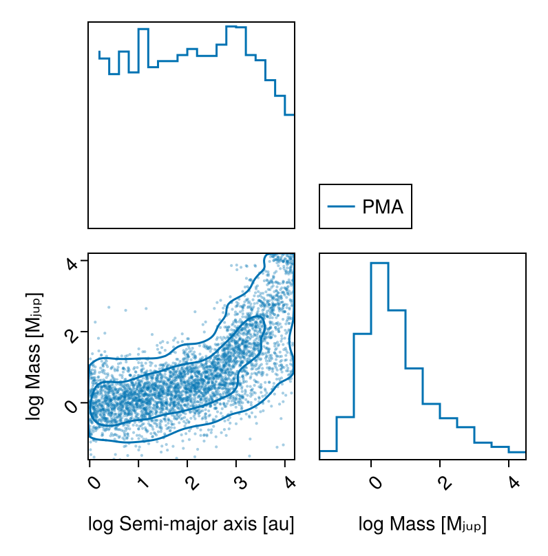
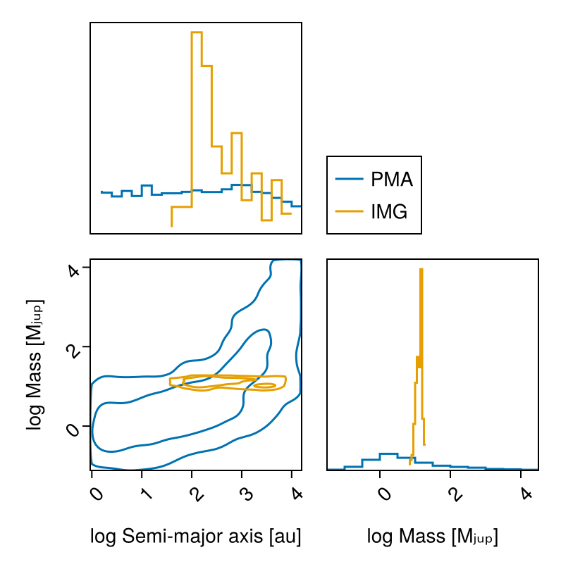
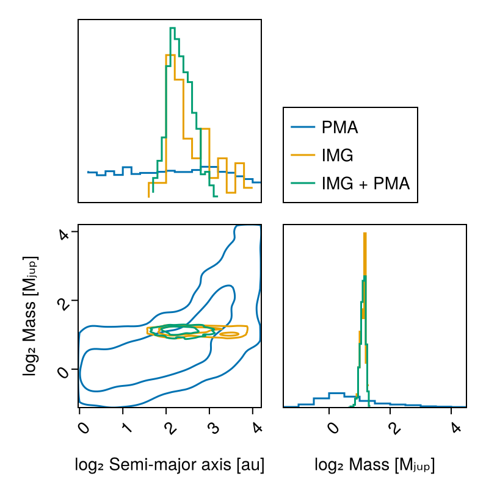

Detection Limits
This tutorial is a work in progress.
This guide shows how to calculate detection limits, in mass, or in photometry, as a function of orbital parameters for different combinations of data.
There are a few use cases for this:
- Mass limit vs semi-major axis given one or more images and/or contrast curves
- Mass limit vs semi-major axis given an RV non-detection
- Mass limit vs semi-major axis given proper motion anomaly from the GAIA-Hipparcos Catalog of Accelerations
- Any combination of the above
We will once more use some sample data from the system HD 91312 A & B discovered by SCExAO.
using Octofitter
using OctofitterImages
using OctofitterRadialVelocity
using Distributions
using Pigeons
using CairoMakie
using PairPlotsPhotometry Model
We will need to decide on an atmosphere model to map image intensities into mass. Here we use the Sonora Bobcat cooling and atmosphere models which will be auto-downloaded by Octofitter:
const cooling_tracks = Octofitter.sonora_cooling_interpolator()
const sonora_temp_mass_L = Octofitter.sonora_photometry_interpolator(:Keck_L′)(::Octofitter.var"#model_interpolator#198"{Interpolations.FilledExtrapolation{Float64, 2, Interpolations.ScaledInterpolation{Float64, 2, Interpolations.BSplineInterpolation{Float64, 2, Matrix{Float64}, Interpolations.BSpline{Interpolations.Linear{Interpolations.Throw{Interpolations.OnGrid}}}, Tuple{Base.OneTo{Int64}, Base.OneTo{Int64}}}, Interpolations.BSpline{Interpolations.Linear{Interpolations.Throw{Interpolations.OnGrid}}}, Tuple{StepRangeLen{Float64, Base.TwicePrecision{Float64}, Base.TwicePrecision{Float64}, Int64}, StepRangeLen{Float64, Base.TwicePrecision{Float64}, Base.TwicePrecision{Float64}, Int64}}}, Interpolations.BSpline{Interpolations.Linear{Interpolations.Throw{Interpolations.OnGrid}}}, Float64}, Float64, Float64, Float64, Float64}) (generic function with 1 method)Proper Motion Anomaly Data
We start by defining and sampling from a model that only includes proper motion anomaly data from the HGCA:
@planet B Visual{KepOrbit} begin
a ~ LogUniform(1, 65)
e ~ Uniform(0,0.9)
ω ~ Uniform(0,2pi)
i ~ Sine() # The Sine() distribution is defined by Octofitter
Ω ~ Uniform(0,pi)# ~ UniformCircular()
mass = system.M_sec
θ ~ Uniform(0,2pi)
tp = θ_at_epoch_to_tperi(system,B,57423.0) # epoch of GAIA measurement
end
@system HD91312_pma begin
M_pri ~ truncated(Normal(0.95, 0.05), lower=0) # Msol
M_sec ~ LogUniform(0.2, 65) # MJup
M = system.M_pri + system.M_sec*Octofitter.mjup2msol # Msol
plx ~ gaia_plx(gaia_id=6166183842771027328)
# Priors on the center of mass proper motion
pmra ~ Normal(0, 1000)
pmdec ~ Normal(0, 1000)
end HGCALikelihood(gaia_id=6166183842771027328) B
model_pma = Octofitter.LogDensityModel(HD91312_pma)LogDensityModel for System HD91312_pma of dimension 11 with fields .ℓπcallback and .∇ℓπcallback
Sample:
using Pigeons
chain_pma, pt = octofit_pigeons(model_pma, n_chains=16, n_chains_variational=16, n_rounds=12);┌ Info: Determined initial position
│ chain_no = 1
└ initial_logpost = -25.44730202081713
┌ Info: Determined initial position
│ chain_no = 2
└ initial_logpost = -733034.1434703557
┌ Info: Determined initial position
│ chain_no = 3
└ initial_logpost = -21.726707786278954
┌ Info: Determined initial position
│ chain_no = 4
└ initial_logpost = -10.781411452031765
┌ Info: Determined initial position
│ chain_no = 5
└ initial_logpost = -733617.8037773707
┌ Info: Determined initial position
│ chain_no = 6
└ initial_logpost = -733335.6582735599
┌ Info: Determined initial position
│ chain_no = 7
└ initial_logpost = -232.85904685471803
┌ Info: Determined initial position
│ chain_no = 8
└ initial_logpost = -22.627906947807627
┌ Info: Determined initial position
│ chain_no = 9
└ initial_logpost = -11.001221762873282
┌ Info: Determined initial position
│ chain_no = 10
└ initial_logpost = -9.112546753089932
┌ Info: Determined initial position
│ chain_no = 11
└ initial_logpost = -24.34293216117931
┌ Info: Determined initial position
│ chain_no = 12
└ initial_logpost = -214.44972678274235
┌ Info: Determined initial position
│ chain_no = 13
└ initial_logpost = -733124.9161866743
┌ Info: Determined initial position
│ chain_no = 14
└ initial_logpost = -17.265479200126325
┌ Info: Determined initial position
│ chain_no = 15
└ initial_logpost = -18.22432188270181
┌ Info: Determined initial position
│ chain_no = 16
└ initial_logpost = -733272.6106971699
┌ Info: Determined initial position
│ chain_no = 17
└ initial_logpost = -17.700259488248605
┌ Info: Determined initial position
│ chain_no = 18
└ initial_logpost = -298.1714933781021
┌ Info: Determined initial position
│ chain_no = 19
└ initial_logpost = -12.708534128900569
┌ Info: Determined initial position
│ chain_no = 20
└ initial_logpost = -15.390500057519477
┌ Info: Determined initial position
│ chain_no = 21
└ initial_logpost = -723324.4121624641
┌ Info: Determined initial position
│ chain_no = 22
└ initial_logpost = -26.5817463158737
┌ Info: Determined initial position
│ chain_no = 23
└ initial_logpost = -9.16981595537348
┌ Info: Determined initial position
│ chain_no = 24
└ initial_logpost = -15.061446310203046
┌ Info: Determined initial position
│ chain_no = 25
└ initial_logpost = -15.035870793494196
┌ Info: Determined initial position
│ chain_no = 26
└ initial_logpost = -14.116147465505716
┌ Info: Determined initial position
│ chain_no = 27
└ initial_logpost = -29689.237205563924
┌ Info: Determined initial position
│ chain_no = 28
└ initial_logpost = -395158.5246490728
┌ Info: Determined initial position
│ chain_no = 29
└ initial_logpost = -8.966303370802187
┌ Info: Determined initial position
│ chain_no = 30
└ initial_logpost = -7.726245502009166e6
┌ Info: Determined initial position
│ chain_no = 31
└ initial_logpost = -14.70017935614623
┌ Info: Determined initial position
│ chain_no = 32
└ initial_logpost = -66.53159907155501
┌ Warning: Invalid log likelihood encountered. (maxlog=1)
│ θ = (M_pri = Dual{ForwardDiff.Tag{Base.Fix1{typeof(LogDensityProblems.logdensity), Octofitter.LogDensityModel{Octofitter.var"#ℓπcallback#64"{System{Priors, Derived, Tuple{HGCALikelihood{Table{@NamedTuple{hip_id::Int32, gaia_source_id::Int64, gaia_ra::Float64, gaia_dec::Float64, radial_velocity::Float32, radial_velocity_error::Float32, radial_velocity_source::String, parallax_gaia::Float32, parallax_gaia_error::Float32, pmra_gaia::Float32, pmdec_gaia::Float32, pmra_gaia_error::Float32, pmdec_gaia_error::Float32, pmra_pmdec_gaia::Float32, pmra_hg::Float32, pmdec_hg::Float32, pmra_hg_error::Float32, pmdec_hg_error::Float32, pmra_pmdec_hg::Float32, pmra_hip::Float32, pmdec_hip::Float32, pmra_hip_error::Float32, pmdec_hip_error::Float32, pmra_pmdec_hip::Float32, epoch_ra_gaia::Float64, epoch_dec_gaia::Float64, epoch_ra_hip::Float64, epoch_dec_hip::Float64, crosscal_pmra_hip::Float32, crosscal_pmdec_hip::Float32, crosscal_pmra_hg::Float32, crosscal_pmdec_hg::Float32, nonlinear_dpmra::Float32, nonlinear_dpmdec::Float32, chisq::Float32, dist_hip::Distributions.MvNormal{Float32, PDMats.PDMat{Float32, StaticArraysCore.SMatrix{2, 2, Float32, 4}}, FillArrays.Zeros{Float32, 1, Tuple{Base.OneTo{Int64}}}}, dist_hg::Distributions.MvNormal{Float32, PDMats.PDMat{Float32, StaticArraysCore.SMatrix{2, 2, Float32, 4}}, FillArrays.Zeros{Float32, 1, Tuple{Base.OneTo{Int64}}}}, dist_gaia::Distributions.MvNormal{Float32, PDMats.PDMat{Float32, StaticArraysCore.SMatrix{2, 2, Float32, 4}}, FillArrays.Zeros{Float32, 1, Tuple{Base.OneTo{Int64}}}}}, 1, @NamedTuple{hip_id::Vector{Int32}, gaia_source_id::Vector{Int64}, gaia_ra::Vector{Float64}, gaia_dec::Vector{Float64}, radial_velocity::Vector{Float32}, radial_velocity_error::Vector{Float32}, radial_velocity_source::Vector{String}, parallax_gaia::Vector{Float32}, parallax_gaia_error::Vector{Float32}, pmra_gaia::Vector{Float32}, pmdec_gaia::Vector{Float32}, pmra_gaia_error::Vector{Float32}, pmdec_gaia_error::Vector{Float32}, pmra_pmdec_gaia::Vector{Float32}, pmra_hg::Vector{Float32}, pmdec_hg::Vector{Float32}, pmra_hg_error::Vector{Float32}, pmdec_hg_error::Vector{Float32}, pmra_pmdec_hg::Vector{Float32}, pmra_hip::Vector{Float32}, pmdec_hip::Vector{Float32}, pmra_hip_error::Vector{Float32}, pmdec_hip_error::Vector{Float32}, pmra_pmdec_hip::Vector{Float32}, epoch_ra_gaia::Vector{Float64}, epoch_dec_gaia::Vector{Float64}, epoch_ra_hip::Vector{Float64}, epoch_dec_hip::Vector{Float64}, crosscal_pmra_hip::Vector{Float32}, crosscal_pmdec_hip::Vector{Float32}, crosscal_pmra_hg::Vector{Float32}, crosscal_pmdec_hg::Vector{Float32}, nonlinear_dpmra::Vector{Float32}, nonlinear_dpmdec::Vector{Float32}, chisq::Vector{Float32}, dist_hip::Vector{Distributions.MvNormal{Float32, PDMats.PDMat{Float32, StaticArraysCore.SMatrix{2, 2, Float32, 4}}, FillArrays.Zeros{Float32, 1, Tuple{Base.OneTo{Int64}}}}}, dist_hg::Vector{Distributions.MvNormal{Float32, PDMats.PDMat{Float32, StaticArraysCore.SMatrix{2, 2, Float32, 4}}, FillArrays.Zeros{Float32, 1, Tuple{Base.OneTo{Int64}}}}}, dist_gaia::Vector{Distributions.MvNormal{Float32, PDMats.PDMat{Float32, StaticArraysCore.SMatrix{2, 2, Float32, 4}}, FillArrays.Zeros{Float32, 1, Tuple{Base.OneTo{Int64}}}}}}}}}, @NamedTuple{B::Planet{Visual{KepOrbit}, Priors, Derived, Tuple{}}}}, RuntimeGeneratedFunctions.RuntimeGeneratedFunction{(:arr,), Octofitter.var"#_RGF_ModTag", Octofitter.var"#_RGF_ModTag", (0xf8054613, 0xc8386ba8, 0xbb8e7498, 0x2d74eb58, 0xac4ab292), Expr}, RuntimeGeneratedFunctions.RuntimeGeneratedFunction{(:arr,), Octofitter.var"#_RGF_ModTag", Octofitter.var"#_RGF_ModTag", (0x57810edc, 0x47b08378, 0x10e8d894, 0x8551bccc, 0x0cf26b74), Expr}, RuntimeGeneratedFunctions.RuntimeGeneratedFunction{(:arr, :sampled), Octofitter.var"#_RGF_ModTag", Octofitter.var"#_RGF_ModTag", (0x47a2738d, 0xea5c8877, 0x879b5900, 0x2e22dfcf, 0xfe83efb7), Expr}, RuntimeGeneratedFunctions.RuntimeGeneratedFunction{(:system, :θ_system), Octofitter.var"#_RGF_ModTag", Octofitter.var"#_RGF_ModTag", (0xcf3b653f, 0xacbb62d1, 0x1c8a3904, 0x4010c162, 0xaed73b24), Expr}, Octofitter.var"#ℓπcallback#52#65"}, Octofitter.var"#60#73"{ForwardDiff.GradientConfig{ForwardDiff.Tag{Octofitter.var"#ℓπcallback#64"{System{Priors, Derived, Tuple{HGCALikelihood{Table{@NamedTuple{hip_id::Int32, gaia_source_id::Int64, gaia_ra::Float64, gaia_dec::Float64, radial_velocity::Float32, radial_velocity_error::Float32, radial_velocity_source::String, parallax_gaia::Float32, parallax_gaia_error::Float32, pmra_gaia::Float32, pmdec_gaia::Float32, pmra_gaia_error::Float32, pmdec_gaia_error::Float32, pmra_pmdec_gaia::Float32, pmra_hg::Float32, pmdec_hg::Float32, pmra_hg_error::Float32, pmdec_hg_error::Float32, pmra_pmdec_hg::Float32, pmra_hip::Float32, pmdec_hip::Float32, pmra_hip_error::Float32, pmdec_hip_error::Float32, pmra_pmdec_hip::Float32, epoch_ra_gaia::Float64, epoch_dec_gaia::Float64, epoch_ra_hip::Float64, epoch_dec_hip::Float64, crosscal_pmra_hip::Float32, crosscal_pmdec_hip::Float32, crosscal_pmra_hg::Float32, crosscal_pmdec_hg::Float32, nonlinear_dpmra::Float32, nonlinear_dpmdec::Float32, chisq::Float32, dist_hip::Distributions.MvNormal{Float32, PDMats.PDMat{Float32, StaticArraysCore.SMatrix{2, 2, Float32, 4}}, FillArrays.Zeros{Float32, 1, Tuple{Base.OneTo{Int64}}}}, dist_hg::Distributions.MvNormal{Float32, PDMats.PDMat{Float32, StaticArraysCore.SMatrix{2, 2, Float32, 4}}, FillArrays.Zeros{Float32, 1, Tuple{Base.OneTo{Int64}}}}, dist_gaia::Distributions.MvNormal{Float32, PDMats.PDMat{Float32, StaticArraysCore.SMatrix{2, 2, Float32, 4}}, FillArrays.Zeros{Float32, 1, Tuple{Base.OneTo{Int64}}}}}, 1, @NamedTuple{hip_id::Vector{Int32}, gaia_source_id::Vector{Int64}, gaia_ra::Vector{Float64}, gaia_dec::Vector{Float64}, radial_velocity::Vector{Float32}, radial_velocity_error::Vector{Float32}, radial_velocity_source::Vector{String}, parallax_gaia::Vector{Float32}, parallax_gaia_error::Vector{Float32}, pmra_gaia::Vector{Float32}, pmdec_gaia::Vector{Float32}, pmra_gaia_error::Vector{Float32}, pmdec_gaia_error::Vector{Float32}, pmra_pmdec_gaia::Vector{Float32}, pmra_hg::Vector{Float32}, pmdec_hg::Vector{Float32}, pmra_hg_error::Vector{Float32}, pmdec_hg_error::Vector{Float32}, pmra_pmdec_hg::Vector{Float32}, pmra_hip::Vector{Float32}, pmdec_hip::Vector{Float32}, pmra_hip_error::Vector{Float32}, pmdec_hip_error::Vector{Float32}, pmra_pmdec_hip::Vector{Float32}, epoch_ra_gaia::Vector{Float64}, epoch_dec_gaia::Vector{Float64}, epoch_ra_hip::Vector{Float64}, epoch_dec_hip::Vector{Float64}, crosscal_pmra_hip::Vector{Float32}, crosscal_pmdec_hip::Vector{Float32}, crosscal_pmra_hg::Vector{Float32}, crosscal_pmdec_hg::Vector{Float32}, nonlinear_dpmra::Vector{Float32}, nonlinear_dpmdec::Vector{Float32}, chisq::Vector{Float32}, dist_hip::Vector{Distributions.MvNormal{Float32, PDMats.PDMat{Float32, StaticArraysCore.SMatrix{2, 2, Float32, 4}}, FillArrays.Zeros{Float32, 1, Tuple{Base.OneTo{Int64}}}}}, dist_hg::Vector{Distributions.MvNormal{Float32, PDMats.PDMat{Float32, StaticArraysCore.SMatrix{2, 2, Float32, 4}}, FillArrays.Zeros{Float32, 1, Tuple{Base.OneTo{Int64}}}}}, dist_gaia::Vector{Distributions.MvNormal{Float32, PDMats.PDMat{Float32, StaticArraysCore.SMatrix{2, 2, Float32, 4}}, FillArrays.Zeros{Float32, 1, Tuple{Base.OneTo{Int64}}}}}}}}}, @NamedTuple{B::Planet{Visual{KepOrbit}, Priors, Derived, Tuple{}}}}, RuntimeGeneratedFunctions.RuntimeGeneratedFunction{(:arr,), Octofitter.var"#_RGF_ModTag", Octofitter.var"#_RGF_ModTag", (0xf8054613, 0xc8386ba8, 0xbb8e7498, 0x2d74eb58, 0xac4ab292), Expr}, RuntimeGeneratedFunctions.RuntimeGeneratedFunction{(:arr,), Octofitter.var"#_RGF_ModTag", Octofitter.var"#_RGF_ModTag", (0x57810edc, 0x47b08378, 0x10e8d894, 0x8551bccc, 0x0cf26b74), Expr}, RuntimeGeneratedFunctions.RuntimeGeneratedFunction{(:arr, :sampled), Octofitter.var"#_RGF_ModTag", Octofitter.var"#_RGF_ModTag", (0x47a2738d, 0xea5c8877, 0x879b5900, 0x2e22dfcf, 0xfe83efb7), Expr}, RuntimeGeneratedFunctions.RuntimeGeneratedFunction{(:system, :θ_system), Octofitter.var"#_RGF_ModTag", Octofitter.var"#_RGF_ModTag", (0xcf3b653f, 0xacbb62d1, 0x1c8a3904, 0x4010c162, 0xaed73b24), Expr}, Octofitter.var"#ℓπcallback#52#65"}, Float64}, Float64, 11, Vector{ForwardDiff.Dual{ForwardDiff.Tag{Octofitter.var"#ℓπcallback#64"{System{Priors, Derived, Tuple{HGCALikelihood{Table{@NamedTuple{hip_id::Int32, gaia_source_id::Int64, gaia_ra::Float64, gaia_dec::Float64, radial_velocity::Float32, radial_velocity_error::Float32, radial_velocity_source::String, parallax_gaia::Float32, parallax_gaia_error::Float32, pmra_gaia::Float32, pmdec_gaia::Float32, pmra_gaia_error::Float32, pmdec_gaia_error::Float32, pmra_pmdec_gaia::Float32, pmra_hg::Float32, pmdec_hg::Float32, pmra_hg_error::Float32, pmdec_hg_error::Float32, pmra_pmdec_hg::Float32, pmra_hip::Float32, pmdec_hip::Float32, pmra_hip_error::Float32, pmdec_hip_error::Float32, pmra_pmdec_hip::Float32, epoch_ra_gaia::Float64, epoch_dec_gaia::Float64, epoch_ra_hip::Float64, epoch_dec_hip::Float64, crosscal_pmra_hip::Float32, crosscal_pmdec_hip::Float32, crosscal_pmra_hg::Float32, crosscal_pmdec_hg::Float32, nonlinear_dpmra::Float32, nonlinear_dpmdec::Float32, chisq::Float32, dist_hip::Distributions.MvNormal{Float32, PDMats.PDMat{Float32, StaticArraysCore.SMatrix{2, 2, Float32, 4}}, FillArrays.Zeros{Float32, 1, Tuple{Base.OneTo{Int64}}}}, dist_hg::Distributions.MvNormal{Float32, PDMats.PDMat{Float32, StaticArraysCore.SMatrix{2, 2, Float32, 4}}, FillArrays.Zeros{Float32, 1, Tuple{Base.OneTo{Int64}}}}, dist_gaia::Distributions.MvNormal{Float32, PDMats.PDMat{Float32, StaticArraysCore.SMatrix{2, 2, Float32, 4}}, FillArrays.Zeros{Float32, 1, Tuple{Base.OneTo{Int64}}}}}, 1, @NamedTuple{hip_id::Vector{Int32}, gaia_source_id::Vector{Int64}, gaia_ra::Vector{Float64}, gaia_dec::Vector{Float64}, radial_velocity::Vector{Float32}, radial_velocity_error::Vector{Float32}, radial_velocity_source::Vector{String}, parallax_gaia::Vector{Float32}, parallax_gaia_error::Vector{Float32}, pmra_gaia::Vector{Float32}, pmdec_gaia::Vector{Float32}, pmra_gaia_error::Vector{Float32}, pmdec_gaia_error::Vector{Float32}, pmra_pmdec_gaia::Vector{Float32}, pmra_hg::Vector{Float32}, pmdec_hg::Vector{Float32}, pmra_hg_error::Vector{Float32}, pmdec_hg_error::Vector{Float32}, pmra_pmdec_hg::Vector{Float32}, pmra_hip::Vector{Float32}, pmdec_hip::Vector{Float32}, pmra_hip_error::Vector{Float32}, pmdec_hip_error::Vector{Float32}, pmra_pmdec_hip::Vector{Float32}, epoch_ra_gaia::Vector{Float64}, epoch_dec_gaia::Vector{Float64}, epoch_ra_hip::Vector{Float64}, epoch_dec_hip::Vector{Float64}, crosscal_pmra_hip::Vector{Float32}, crosscal_pmdec_hip::Vector{Float32}, crosscal_pmra_hg::Vector{Float32}, crosscal_pmdec_hg::Vector{Float32}, nonlinear_dpmra::Vector{Float32}, nonlinear_dpmdec::Vector{Float32}, chisq::Vector{Float32}, dist_hip::Vector{Distributions.MvNormal{Float32, PDMats.PDMat{Float32, StaticArraysCore.SMatrix{2, 2, Float32, 4}}, FillArrays.Zeros{Float32, 1, Tuple{Base.OneTo{Int64}}}}}, dist_hg::Vector{Distributions.MvNormal{Float32, PDMats.PDMat{Float32, StaticArraysCore.SMatrix{2, 2, Float32, 4}}, FillArrays.Zeros{Float32, 1, Tuple{Base.OneTo{Int64}}}}}, dist_gaia::Vector{Distributions.MvNormal{Float32, PDMats.PDMat{Float32, StaticArraysCore.SMatrix{2, 2, Float32, 4}}, FillArrays.Zeros{Float32, 1, Tuple{Base.OneTo{Int64}}}}}}}}}, @NamedTuple{B::Planet{Visual{KepOrbit}, Priors, Derived, Tuple{}}}}, RuntimeGeneratedFunctions.RuntimeGeneratedFunction{(:arr,), Octofitter.var"#_RGF_ModTag", Octofitter.var"#_RGF_ModTag", (0xf8054613, 0xc8386ba8, 0xbb8e7498, 0x2d74eb58, 0xac4ab292), Expr}, RuntimeGeneratedFunctions.RuntimeGeneratedFunction{(:arr,), Octofitter.var"#_RGF_ModTag", Octofitter.var"#_RGF_ModTag", (0x57810edc, 0x47b08378, 0x10e8d894, 0x8551bccc, 0x0cf26b74), Expr}, RuntimeGeneratedFunctions.RuntimeGeneratedFunction{(:arr, :sampled), Octofitter.var"#_RGF_ModTag", Octofitter.var"#_RGF_ModTag", (0x47a2738d, 0xea5c8877, 0x879b5900, 0x2e22dfcf, 0xfe83efb7), Expr}, RuntimeGeneratedFunctions.RuntimeGeneratedFunction{(:system, :θ_system), Octofitter.var"#_RGF_ModTag", Octofitter.var"#_RGF_ModTag", (0xcf3b653f, 0xacbb62d1, 0x1c8a3904, 0x4010c162, 0xaed73b24), Expr}, Octofitter.var"#ℓπcallback#52#65"}, Float64}, Float64, 11}}}, Vector{DiffResults.MutableDiffResult{1, Float64, Tuple{Vector{Float64}}}}, Octofitter.var"#ℓπcallback#64"{System{Priors, Derived, Tuple{HGCALikelihood{Table{@NamedTuple{hip_id::Int32, gaia_source_id::Int64, gaia_ra::Float64, gaia_dec::Float64, radial_velocity::Float32, radial_velocity_error::Float32, radial_velocity_source::String, parallax_gaia::Float32, parallax_gaia_error::Float32, pmra_gaia::Float32, pmdec_gaia::Float32, pmra_gaia_error::Float32, pmdec_gaia_error::Float32, pmra_pmdec_gaia::Float32, pmra_hg::Float32, pmdec_hg::Float32, pmra_hg_error::Float32, pmdec_hg_error::Float32, pmra_pmdec_hg::Float32, pmra_hip::Float32, pmdec_hip::Float32, pmra_hip_error::Float32, pmdec_hip_error::Float32, pmra_pmdec_hip::Float32, epoch_ra_gaia::Float64, epoch_dec_gaia::Float64, epoch_ra_hip::Float64, epoch_dec_hip::Float64, crosscal_pmra_hip::Float32, crosscal_pmdec_hip::Float32, crosscal_pmra_hg::Float32, crosscal_pmdec_hg::Float32, nonlinear_dpmra::Float32, nonlinear_dpmdec::Float32, chisq::Float32, dist_hip::Distributions.MvNormal{Float32, PDMats.PDMat{Float32, StaticArraysCore.SMatrix{2, 2, Float32, 4}}, FillArrays.Zeros{Float32, 1, Tuple{Base.OneTo{Int64}}}}, dist_hg::Distributions.MvNormal{Float32, PDMats.PDMat{Float32, StaticArraysCore.SMatrix{2, 2, Float32, 4}}, FillArrays.Zeros{Float32, 1, Tuple{Base.OneTo{Int64}}}}, dist_gaia::Distributions.MvNormal{Float32, PDMats.PDMat{Float32, StaticArraysCore.SMatrix{2, 2, Float32, 4}}, FillArrays.Zeros{Float32, 1, Tuple{Base.OneTo{Int64}}}}}, 1, @NamedTuple{hip_id::Vector{Int32}, gaia_source_id::Vector{Int64}, gaia_ra::Vector{Float64}, gaia_dec::Vector{Float64}, radial_velocity::Vector{Float32}, radial_velocity_error::Vector{Float32}, radial_velocity_source::Vector{String}, parallax_gaia::Vector{Float32}, parallax_gaia_error::Vector{Float32}, pmra_gaia::Vector{Float32}, pmdec_gaia::Vector{Float32}, pmra_gaia_error::Vector{Float32}, pmdec_gaia_error::Vector{Float32}, pmra_pmdec_gaia::Vector{Float32}, pmra_hg::Vector{Float32}, pmdec_hg::Vector{Float32}, pmra_hg_error::Vector{Float32}, pmdec_hg_error::Vector{Float32}, pmra_pmdec_hg::Vector{Float32}, pmra_hip::Vector{Float32}, pmdec_hip::Vector{Float32}, pmra_hip_error::Vector{Float32}, pmdec_hip_error::Vector{Float32}, pmra_pmdec_hip::Vector{Float32}, epoch_ra_gaia::Vector{Float64}, epoch_dec_gaia::Vector{Float64}, epoch_ra_hip::Vector{Float64}, epoch_dec_hip::Vector{Float64}, crosscal_pmra_hip::Vector{Float32}, crosscal_pmdec_hip::Vector{Float32}, crosscal_pmra_hg::Vector{Float32}, crosscal_pmdec_hg::Vector{Float32}, nonlinear_dpmra::Vector{Float32}, nonlinear_dpmdec::Vector{Float32}, chisq::Vector{Float32}, dist_hip::Vector{Distributions.MvNormal{Float32, PDMats.PDMat{Float32, StaticArraysCore.SMatrix{2, 2, Float32, 4}}, FillArrays.Zeros{Float32, 1, Tuple{Base.OneTo{Int64}}}}}, dist_hg::Vector{Distributions.MvNormal{Float32, PDMats.PDMat{Float32, StaticArraysCore.SMatrix{2, 2, Float32, 4}}, FillArrays.Zeros{Float32, 1, Tuple{Base.OneTo{Int64}}}}}, dist_gaia::Vector{Distributions.MvNormal{Float32, PDMats.PDMat{Float32, StaticArraysCore.SMatrix{2, 2, Float32, 4}}, FillArrays.Zeros{Float32, 1, Tuple{Base.OneTo{Int64}}}}}}}}}, @NamedTuple{B::Planet{Visual{KepOrbit}, Priors, Derived, Tuple{}}}}, RuntimeGeneratedFunctions.RuntimeGeneratedFunction{(:arr,), Octofitter.var"#_RGF_ModTag", Octofitter.var"#_RGF_ModTag", (0xf8054613, 0xc8386ba8, 0xbb8e7498, 0x2d74eb58, 0xac4ab292), Expr}, RuntimeGeneratedFunctions.RuntimeGeneratedFunction{(:arr,), Octofitter.var"#_RGF_ModTag", Octofitter.var"#_RGF_ModTag", (0x57810edc, 0x47b08378, 0x10e8d894, 0x8551bccc, 0x0cf26b74), Expr}, RuntimeGeneratedFunctions.RuntimeGeneratedFunction{(:arr, :sampled), Octofitter.var"#_RGF_ModTag", Octofitter.var"#_RGF_ModTag", (0x47a2738d, 0xea5c8877, 0x879b5900, 0x2e22dfcf, 0xfe83efb7), Expr}, RuntimeGeneratedFunctions.RuntimeGeneratedFunction{(:system, :θ_system), Octofitter.var"#_RGF_ModTag", Octofitter.var"#_RGF_ModTag", (0xcf3b653f, 0xacbb62d1, 0x1c8a3904, 0x4010c162, 0xaed73b24), Expr}, Octofitter.var"#ℓπcallback#52#65"}}, System{Priors, Derived, Tuple{HGCALikelihood{Table{@NamedTuple{hip_id::Int32, gaia_source_id::Int64, gaia_ra::Float64, gaia_dec::Float64, radial_velocity::Float32, radial_velocity_error::Float32, radial_velocity_source::String, parallax_gaia::Float32, parallax_gaia_error::Float32, pmra_gaia::Float32, pmdec_gaia::Float32, pmra_gaia_error::Float32, pmdec_gaia_error::Float32, pmra_pmdec_gaia::Float32, pmra_hg::Float32, pmdec_hg::Float32, pmra_hg_error::Float32, pmdec_hg_error::Float32, pmra_pmdec_hg::Float32, pmra_hip::Float32, pmdec_hip::Float32, pmra_hip_error::Float32, pmdec_hip_error::Float32, pmra_pmdec_hip::Float32, epoch_ra_gaia::Float64, epoch_dec_gaia::Float64, epoch_ra_hip::Float64, epoch_dec_hip::Float64, crosscal_pmra_hip::Float32, crosscal_pmdec_hip::Float32, crosscal_pmra_hg::Float32, crosscal_pmdec_hg::Float32, nonlinear_dpmra::Float32, nonlinear_dpmdec::Float32, chisq::Float32, dist_hip::Distributions.MvNormal{Float32, PDMats.PDMat{Float32, StaticArraysCore.SMatrix{2, 2, Float32, 4}}, FillArrays.Zeros{Float32, 1, Tuple{Base.OneTo{Int64}}}}, dist_hg::Distributions.MvNormal{Float32, PDMats.PDMat{Float32, StaticArraysCore.SMatrix{2, 2, Float32, 4}}, FillArrays.Zeros{Float32, 1, Tuple{Base.OneTo{Int64}}}}, dist_gaia::Distributions.MvNormal{Float32, PDMats.PDMat{Float32, StaticArraysCore.SMatrix{2, 2, Float32, 4}}, FillArrays.Zeros{Float32, 1, Tuple{Base.OneTo{Int64}}}}}, 1, @NamedTuple{hip_id::Vector{Int32}, gaia_source_id::Vector{Int64}, gaia_ra::Vector{Float64}, gaia_dec::Vector{Float64}, radial_velocity::Vector{Float32}, radial_velocity_error::Vector{Float32}, radial_velocity_source::Vector{String}, parallax_gaia::Vector{Float32}, parallax_gaia_error::Vector{Float32}, pmra_gaia::Vector{Float32}, pmdec_gaia::Vector{Float32}, pmra_gaia_error::Vector{Float32}, pmdec_gaia_error::Vector{Float32}, pmra_pmdec_gaia::Vector{Float32}, pmra_hg::Vector{Float32}, pmdec_hg::Vector{Float32}, pmra_hg_error::Vector{Float32}, pmdec_hg_error::Vector{Float32}, pmra_pmdec_hg::Vector{Float32}, pmra_hip::Vector{Float32}, pmdec_hip::Vector{Float32}, pmra_hip_error::Vector{Float32}, pmdec_hip_error::Vector{Float32}, pmra_pmdec_hip::Vector{Float32}, epoch_ra_gaia::Vector{Float64}, epoch_dec_gaia::Vector{Float64}, epoch_ra_hip::Vector{Float64}, epoch_dec_hip::Vector{Float64}, crosscal_pmra_hip::Vector{Float32}, crosscal_pmdec_hip::Vector{Float32}, crosscal_pmra_hg::Vector{Float32}, crosscal_pmdec_hg::Vector{Float32}, nonlinear_dpmra::Vector{Float32}, nonlinear_dpmdec::Vector{Float32}, chisq::Vector{Float32}, dist_hip::Vector{Distributions.MvNormal{Float32, PDMats.PDMat{Float32, StaticArraysCore.SMatrix{2, 2, Float32, 4}}, FillArrays.Zeros{Float32, 1, Tuple{Base.OneTo{Int64}}}}}, dist_hg::Vector{Distributions.MvNormal{Float32, PDMats.PDMat{Float32, StaticArraysCore.SMatrix{2, 2, Float32, 4}}, FillArrays.Zeros{Float32, 1, Tuple{Base.OneTo{Int64}}}}}, dist_gaia::Vector{Distributions.MvNormal{Float32, PDMats.PDMat{Float32, StaticArraysCore.SMatrix{2, 2, Float32, 4}}, FillArrays.Zeros{Float32, 1, Tuple{Base.OneTo{Int64}}}}}}}}}, @NamedTuple{B::Planet{Visual{KepOrbit}, Priors, Derived, Tuple{}}}}, Octofitter.var"#51#63"{Vector{Distributions.Distribution{Distributions.Univariate, Distributions.Continuous}}}, RuntimeGeneratedFunctions.RuntimeGeneratedFunction{(:arr,), Octofitter.var"#_RGF_ModTag", Octofitter.var"#_RGF_ModTag", (0x57810edc, 0x47b08378, 0x10e8d894, 0x8551bccc, 0x0cf26b74), Expr}, RuntimeGeneratedFunctions.RuntimeGeneratedFunction{(:arr,), Octofitter.var"#_RGF_ModTag", Octofitter.var"#_RGF_ModTag", (0xf8054613, 0xc8386ba8, 0xbb8e7498, 0x2d74eb58, 0xac4ab292), Expr}}}, Float64}}(1.931689052368198e6,1.931689052368198e6,0.0,0.0,0.0,0.0,0.0,0.0,0.0,0.0,0.0,0.0), M_sec = Dual{ForwardDiff.Tag{Base.Fix1{typeof(LogDensityProblems.logdensity), Octofitter.LogDensityModel{Octofitter.var"#ℓπcallback#64"{System{Priors, Derived, Tuple{HGCALikelihood{Table{@NamedTuple{hip_id::Int32, gaia_source_id::Int64, gaia_ra::Float64, gaia_dec::Float64, radial_velocity::Float32, radial_velocity_error::Float32, radial_velocity_source::String, parallax_gaia::Float32, parallax_gaia_error::Float32, pmra_gaia::Float32, pmdec_gaia::Float32, pmra_gaia_error::Float32, pmdec_gaia_error::Float32, pmra_pmdec_gaia::Float32, pmra_hg::Float32, pmdec_hg::Float32, pmra_hg_error::Float32, pmdec_hg_error::Float32, pmra_pmdec_hg::Float32, pmra_hip::Float32, pmdec_hip::Float32, pmra_hip_error::Float32, pmdec_hip_error::Float32, pmra_pmdec_hip::Float32, epoch_ra_gaia::Float64, epoch_dec_gaia::Float64, epoch_ra_hip::Float64, epoch_dec_hip::Float64, crosscal_pmra_hip::Float32, crosscal_pmdec_hip::Float32, crosscal_pmra_hg::Float32, crosscal_pmdec_hg::Float32, nonlinear_dpmra::Float32, nonlinear_dpmdec::Float32, chisq::Float32, dist_hip::Distributions.MvNormal{Float32, PDMats.PDMat{Float32, StaticArraysCore.SMatrix{2, 2, Float32, 4}}, FillArrays.Zeros{Float32, 1, Tuple{Base.OneTo{Int64}}}}, dist_hg::Distributions.MvNormal{Float32, PDMats.PDMat{Float32, StaticArraysCore.SMatrix{2, 2, Float32, 4}}, FillArrays.Zeros{Float32, 1, Tuple{Base.OneTo{Int64}}}}, dist_gaia::Distributions.MvNormal{Float32, PDMats.PDMat{Float32, StaticArraysCore.SMatrix{2, 2, Float32, 4}}, FillArrays.Zeros{Float32, 1, Tuple{Base.OneTo{Int64}}}}}, 1, @NamedTuple{hip_id::Vector{Int32}, gaia_source_id::Vector{Int64}, gaia_ra::Vector{Float64}, gaia_dec::Vector{Float64}, radial_velocity::Vector{Float32}, radial_velocity_error::Vector{Float32}, radial_velocity_source::Vector{String}, parallax_gaia::Vector{Float32}, parallax_gaia_error::Vector{Float32}, pmra_gaia::Vector{Float32}, pmdec_gaia::Vector{Float32}, pmra_gaia_error::Vector{Float32}, pmdec_gaia_error::Vector{Float32}, pmra_pmdec_gaia::Vector{Float32}, pmra_hg::Vector{Float32}, pmdec_hg::Vector{Float32}, pmra_hg_error::Vector{Float32}, pmdec_hg_error::Vector{Float32}, pmra_pmdec_hg::Vector{Float32}, pmra_hip::Vector{Float32}, pmdec_hip::Vector{Float32}, pmra_hip_error::Vector{Float32}, pmdec_hip_error::Vector{Float32}, pmra_pmdec_hip::Vector{Float32}, epoch_ra_gaia::Vector{Float64}, epoch_dec_gaia::Vector{Float64}, epoch_ra_hip::Vector{Float64}, epoch_dec_hip::Vector{Float64}, crosscal_pmra_hip::Vector{Float32}, crosscal_pmdec_hip::Vector{Float32}, crosscal_pmra_hg::Vector{Float32}, crosscal_pmdec_hg::Vector{Float32}, nonlinear_dpmra::Vector{Float32}, nonlinear_dpmdec::Vector{Float32}, chisq::Vector{Float32}, dist_hip::Vector{Distributions.MvNormal{Float32, PDMats.PDMat{Float32, StaticArraysCore.SMatrix{2, 2, Float32, 4}}, FillArrays.Zeros{Float32, 1, Tuple{Base.OneTo{Int64}}}}}, dist_hg::Vector{Distributions.MvNormal{Float32, PDMats.PDMat{Float32, StaticArraysCore.SMatrix{2, 2, Float32, 4}}, FillArrays.Zeros{Float32, 1, Tuple{Base.OneTo{Int64}}}}}, dist_gaia::Vector{Distributions.MvNormal{Float32, PDMats.PDMat{Float32, StaticArraysCore.SMatrix{2, 2, Float32, 4}}, FillArrays.Zeros{Float32, 1, Tuple{Base.OneTo{Int64}}}}}}}}}, @NamedTuple{B::Planet{Visual{KepOrbit}, Priors, Derived, Tuple{}}}}, RuntimeGeneratedFunctions.RuntimeGeneratedFunction{(:arr,), Octofitter.var"#_RGF_ModTag", Octofitter.var"#_RGF_ModTag", (0xf8054613, 0xc8386ba8, 0xbb8e7498, 0x2d74eb58, 0xac4ab292), Expr}, RuntimeGeneratedFunctions.RuntimeGeneratedFunction{(:arr,), Octofitter.var"#_RGF_ModTag", Octofitter.var"#_RGF_ModTag", (0x57810edc, 0x47b08378, 0x10e8d894, 0x8551bccc, 0x0cf26b74), Expr}, RuntimeGeneratedFunctions.RuntimeGeneratedFunction{(:arr, :sampled), Octofitter.var"#_RGF_ModTag", Octofitter.var"#_RGF_ModTag", (0x47a2738d, 0xea5c8877, 0x879b5900, 0x2e22dfcf, 0xfe83efb7), Expr}, RuntimeGeneratedFunctions.RuntimeGeneratedFunction{(:system, :θ_system), Octofitter.var"#_RGF_ModTag", Octofitter.var"#_RGF_ModTag", (0xcf3b653f, 0xacbb62d1, 0x1c8a3904, 0x4010c162, 0xaed73b24), Expr}, Octofitter.var"#ℓπcallback#52#65"}, Octofitter.var"#60#73"{ForwardDiff.GradientConfig{ForwardDiff.Tag{Octofitter.var"#ℓπcallback#64"{System{Priors, Derived, Tuple{HGCALikelihood{Table{@NamedTuple{hip_id::Int32, gaia_source_id::Int64, gaia_ra::Float64, gaia_dec::Float64, radial_velocity::Float32, radial_velocity_error::Float32, radial_velocity_source::String, parallax_gaia::Float32, parallax_gaia_error::Float32, pmra_gaia::Float32, pmdec_gaia::Float32, pmra_gaia_error::Float32, pmdec_gaia_error::Float32, pmra_pmdec_gaia::Float32, pmra_hg::Float32, pmdec_hg::Float32, pmra_hg_error::Float32, pmdec_hg_error::Float32, pmra_pmdec_hg::Float32, pmra_hip::Float32, pmdec_hip::Float32, pmra_hip_error::Float32, pmdec_hip_error::Float32, pmra_pmdec_hip::Float32, epoch_ra_gaia::Float64, epoch_dec_gaia::Float64, epoch_ra_hip::Float64, epoch_dec_hip::Float64, crosscal_pmra_hip::Float32, crosscal_pmdec_hip::Float32, crosscal_pmra_hg::Float32, crosscal_pmdec_hg::Float32, nonlinear_dpmra::Float32, nonlinear_dpmdec::Float32, chisq::Float32, dist_hip::Distributions.MvNormal{Float32, PDMats.PDMat{Float32, StaticArraysCore.SMatrix{2, 2, Float32, 4}}, FillArrays.Zeros{Float32, 1, Tuple{Base.OneTo{Int64}}}}, dist_hg::Distributions.MvNormal{Float32, PDMats.PDMat{Float32, StaticArraysCore.SMatrix{2, 2, Float32, 4}}, FillArrays.Zeros{Float32, 1, Tuple{Base.OneTo{Int64}}}}, dist_gaia::Distributions.MvNormal{Float32, PDMats.PDMat{Float32, StaticArraysCore.SMatrix{2, 2, Float32, 4}}, FillArrays.Zeros{Float32, 1, Tuple{Base.OneTo{Int64}}}}}, 1, @NamedTuple{hip_id::Vector{Int32}, gaia_source_id::Vector{Int64}, gaia_ra::Vector{Float64}, gaia_dec::Vector{Float64}, radial_velocity::Vector{Float32}, radial_velocity_error::Vector{Float32}, radial_velocity_source::Vector{String}, parallax_gaia::Vector{Float32}, parallax_gaia_error::Vector{Float32}, pmra_gaia::Vector{Float32}, pmdec_gaia::Vector{Float32}, pmra_gaia_error::Vector{Float32}, pmdec_gaia_error::Vector{Float32}, pmra_pmdec_gaia::Vector{Float32}, pmra_hg::Vector{Float32}, pmdec_hg::Vector{Float32}, pmra_hg_error::Vector{Float32}, pmdec_hg_error::Vector{Float32}, pmra_pmdec_hg::Vector{Float32}, pmra_hip::Vector{Float32}, pmdec_hip::Vector{Float32}, pmra_hip_error::Vector{Float32}, pmdec_hip_error::Vector{Float32}, pmra_pmdec_hip::Vector{Float32}, epoch_ra_gaia::Vector{Float64}, epoch_dec_gaia::Vector{Float64}, epoch_ra_hip::Vector{Float64}, epoch_dec_hip::Vector{Float64}, crosscal_pmra_hip::Vector{Float32}, crosscal_pmdec_hip::Vector{Float32}, crosscal_pmra_hg::Vector{Float32}, crosscal_pmdec_hg::Vector{Float32}, nonlinear_dpmra::Vector{Float32}, nonlinear_dpmdec::Vector{Float32}, chisq::Vector{Float32}, dist_hip::Vector{Distributions.MvNormal{Float32, PDMats.PDMat{Float32, StaticArraysCore.SMatrix{2, 2, Float32, 4}}, FillArrays.Zeros{Float32, 1, Tuple{Base.OneTo{Int64}}}}}, dist_hg::Vector{Distributions.MvNormal{Float32, PDMats.PDMat{Float32, StaticArraysCore.SMatrix{2, 2, Float32, 4}}, FillArrays.Zeros{Float32, 1, Tuple{Base.OneTo{Int64}}}}}, dist_gaia::Vector{Distributions.MvNormal{Float32, PDMats.PDMat{Float32, StaticArraysCore.SMatrix{2, 2, Float32, 4}}, FillArrays.Zeros{Float32, 1, Tuple{Base.OneTo{Int64}}}}}}}}}, @NamedTuple{B::Planet{Visual{KepOrbit}, Priors, Derived, Tuple{}}}}, RuntimeGeneratedFunctions.RuntimeGeneratedFunction{(:arr,), Octofitter.var"#_RGF_ModTag", Octofitter.var"#_RGF_ModTag", (0xf8054613, 0xc8386ba8, 0xbb8e7498, 0x2d74eb58, 0xac4ab292), Expr}, RuntimeGeneratedFunctions.RuntimeGeneratedFunction{(:arr,), Octofitter.var"#_RGF_ModTag", Octofitter.var"#_RGF_ModTag", (0x57810edc, 0x47b08378, 0x10e8d894, 0x8551bccc, 0x0cf26b74), Expr}, RuntimeGeneratedFunctions.RuntimeGeneratedFunction{(:arr, :sampled), Octofitter.var"#_RGF_ModTag", Octofitter.var"#_RGF_ModTag", (0x47a2738d, 0xea5c8877, 0x879b5900, 0x2e22dfcf, 0xfe83efb7), Expr}, RuntimeGeneratedFunctions.RuntimeGeneratedFunction{(:system, :θ_system), Octofitter.var"#_RGF_ModTag", Octofitter.var"#_RGF_ModTag", (0xcf3b653f, 0xacbb62d1, 0x1c8a3904, 0x4010c162, 0xaed73b24), Expr}, Octofitter.var"#ℓπcallback#52#65"}, Float64}, Float64, 11, Vector{ForwardDiff.Dual{ForwardDiff.Tag{Octofitter.var"#ℓπcallback#64"{System{Priors, Derived, Tuple{HGCALikelihood{Table{@NamedTuple{hip_id::Int32, gaia_source_id::Int64, gaia_ra::Float64, gaia_dec::Float64, radial_velocity::Float32, radial_velocity_error::Float32, radial_velocity_source::String, parallax_gaia::Float32, parallax_gaia_error::Float32, pmra_gaia::Float32, pmdec_gaia::Float32, pmra_gaia_error::Float32, pmdec_gaia_error::Float32, pmra_pmdec_gaia::Float32, pmra_hg::Float32, pmdec_hg::Float32, pmra_hg_error::Float32, pmdec_hg_error::Float32, pmra_pmdec_hg::Float32, pmra_hip::Float32, pmdec_hip::Float32, pmra_hip_error::Float32, pmdec_hip_error::Float32, pmra_pmdec_hip::Float32, epoch_ra_gaia::Float64, epoch_dec_gaia::Float64, epoch_ra_hip::Float64, epoch_dec_hip::Float64, crosscal_pmra_hip::Float32, crosscal_pmdec_hip::Float32, crosscal_pmra_hg::Float32, crosscal_pmdec_hg::Float32, nonlinear_dpmra::Float32, nonlinear_dpmdec::Float32, chisq::Float32, dist_hip::Distributions.MvNormal{Float32, PDMats.PDMat{Float32, StaticArraysCore.SMatrix{2, 2, Float32, 4}}, FillArrays.Zeros{Float32, 1, Tuple{Base.OneTo{Int64}}}}, dist_hg::Distributions.MvNormal{Float32, PDMats.PDMat{Float32, StaticArraysCore.SMatrix{2, 2, Float32, 4}}, FillArrays.Zeros{Float32, 1, Tuple{Base.OneTo{Int64}}}}, dist_gaia::Distributions.MvNormal{Float32, PDMats.PDMat{Float32, StaticArraysCore.SMatrix{2, 2, Float32, 4}}, FillArrays.Zeros{Float32, 1, Tuple{Base.OneTo{Int64}}}}}, 1, @NamedTuple{hip_id::Vector{Int32}, gaia_source_id::Vector{Int64}, gaia_ra::Vector{Float64}, gaia_dec::Vector{Float64}, radial_velocity::Vector{Float32}, radial_velocity_error::Vector{Float32}, radial_velocity_source::Vector{String}, parallax_gaia::Vector{Float32}, parallax_gaia_error::Vector{Float32}, pmra_gaia::Vector{Float32}, pmdec_gaia::Vector{Float32}, pmra_gaia_error::Vector{Float32}, pmdec_gaia_error::Vector{Float32}, pmra_pmdec_gaia::Vector{Float32}, pmra_hg::Vector{Float32}, pmdec_hg::Vector{Float32}, pmra_hg_error::Vector{Float32}, pmdec_hg_error::Vector{Float32}, pmra_pmdec_hg::Vector{Float32}, pmra_hip::Vector{Float32}, pmdec_hip::Vector{Float32}, pmra_hip_error::Vector{Float32}, pmdec_hip_error::Vector{Float32}, pmra_pmdec_hip::Vector{Float32}, epoch_ra_gaia::Vector{Float64}, epoch_dec_gaia::Vector{Float64}, epoch_ra_hip::Vector{Float64}, epoch_dec_hip::Vector{Float64}, crosscal_pmra_hip::Vector{Float32}, crosscal_pmdec_hip::Vector{Float32}, crosscal_pmra_hg::Vector{Float32}, crosscal_pmdec_hg::Vector{Float32}, nonlinear_dpmra::Vector{Float32}, nonlinear_dpmdec::Vector{Float32}, chisq::Vector{Float32}, dist_hip::Vector{Distributions.MvNormal{Float32, PDMats.PDMat{Float32, StaticArraysCore.SMatrix{2, 2, Float32, 4}}, FillArrays.Zeros{Float32, 1, Tuple{Base.OneTo{Int64}}}}}, dist_hg::Vector{Distributions.MvNormal{Float32, PDMats.PDMat{Float32, StaticArraysCore.SMatrix{2, 2, Float32, 4}}, FillArrays.Zeros{Float32, 1, Tuple{Base.OneTo{Int64}}}}}, dist_gaia::Vector{Distributions.MvNormal{Float32, PDMats.PDMat{Float32, StaticArraysCore.SMatrix{2, 2, Float32, 4}}, FillArrays.Zeros{Float32, 1, Tuple{Base.OneTo{Int64}}}}}}}}}, @NamedTuple{B::Planet{Visual{KepOrbit}, Priors, Derived, Tuple{}}}}, RuntimeGeneratedFunctions.RuntimeGeneratedFunction{(:arr,), Octofitter.var"#_RGF_ModTag", Octofitter.var"#_RGF_ModTag", (0xf8054613, 0xc8386ba8, 0xbb8e7498, 0x2d74eb58, 0xac4ab292), Expr}, RuntimeGeneratedFunctions.RuntimeGeneratedFunction{(:arr,), Octofitter.var"#_RGF_ModTag", Octofitter.var"#_RGF_ModTag", (0x57810edc, 0x47b08378, 0x10e8d894, 0x8551bccc, 0x0cf26b74), Expr}, RuntimeGeneratedFunctions.RuntimeGeneratedFunction{(:arr, :sampled), Octofitter.var"#_RGF_ModTag", Octofitter.var"#_RGF_ModTag", (0x47a2738d, 0xea5c8877, 0x879b5900, 0x2e22dfcf, 0xfe83efb7), Expr}, RuntimeGeneratedFunctions.RuntimeGeneratedFunction{(:system, :θ_system), Octofitter.var"#_RGF_ModTag", Octofitter.var"#_RGF_ModTag", (0xcf3b653f, 0xacbb62d1, 0x1c8a3904, 0x4010c162, 0xaed73b24), Expr}, Octofitter.var"#ℓπcallback#52#65"}, Float64}, Float64, 11}}}, Vector{DiffResults.MutableDiffResult{1, Float64, Tuple{Vector{Float64}}}}, Octofitter.var"#ℓπcallback#64"{System{Priors, Derived, Tuple{HGCALikelihood{Table{@NamedTuple{hip_id::Int32, gaia_source_id::Int64, gaia_ra::Float64, gaia_dec::Float64, radial_velocity::Float32, radial_velocity_error::Float32, radial_velocity_source::String, parallax_gaia::Float32, parallax_gaia_error::Float32, pmra_gaia::Float32, pmdec_gaia::Float32, pmra_gaia_error::Float32, pmdec_gaia_error::Float32, pmra_pmdec_gaia::Float32, pmra_hg::Float32, pmdec_hg::Float32, pmra_hg_error::Float32, pmdec_hg_error::Float32, pmra_pmdec_hg::Float32, pmra_hip::Float32, pmdec_hip::Float32, pmra_hip_error::Float32, pmdec_hip_error::Float32, pmra_pmdec_hip::Float32, epoch_ra_gaia::Float64, epoch_dec_gaia::Float64, epoch_ra_hip::Float64, epoch_dec_hip::Float64, crosscal_pmra_hip::Float32, crosscal_pmdec_hip::Float32, crosscal_pmra_hg::Float32, crosscal_pmdec_hg::Float32, nonlinear_dpmra::Float32, nonlinear_dpmdec::Float32, chisq::Float32, dist_hip::Distributions.MvNormal{Float32, PDMats.PDMat{Float32, StaticArraysCore.SMatrix{2, 2, Float32, 4}}, FillArrays.Zeros{Float32, 1, Tuple{Base.OneTo{Int64}}}}, dist_hg::Distributions.MvNormal{Float32, PDMats.PDMat{Float32, StaticArraysCore.SMatrix{2, 2, Float32, 4}}, FillArrays.Zeros{Float32, 1, Tuple{Base.OneTo{Int64}}}}, dist_gaia::Distributions.MvNormal{Float32, PDMats.PDMat{Float32, StaticArraysCore.SMatrix{2, 2, Float32, 4}}, FillArrays.Zeros{Float32, 1, Tuple{Base.OneTo{Int64}}}}}, 1, @NamedTuple{hip_id::Vector{Int32}, gaia_source_id::Vector{Int64}, gaia_ra::Vector{Float64}, gaia_dec::Vector{Float64}, radial_velocity::Vector{Float32}, radial_velocity_error::Vector{Float32}, radial_velocity_source::Vector{String}, parallax_gaia::Vector{Float32}, parallax_gaia_error::Vector{Float32}, pmra_gaia::Vector{Float32}, pmdec_gaia::Vector{Float32}, pmra_gaia_error::Vector{Float32}, pmdec_gaia_error::Vector{Float32}, pmra_pmdec_gaia::Vector{Float32}, pmra_hg::Vector{Float32}, pmdec_hg::Vector{Float32}, pmra_hg_error::Vector{Float32}, pmdec_hg_error::Vector{Float32}, pmra_pmdec_hg::Vector{Float32}, pmra_hip::Vector{Float32}, pmdec_hip::Vector{Float32}, pmra_hip_error::Vector{Float32}, pmdec_hip_error::Vector{Float32}, pmra_pmdec_hip::Vector{Float32}, epoch_ra_gaia::Vector{Float64}, epoch_dec_gaia::Vector{Float64}, epoch_ra_hip::Vector{Float64}, epoch_dec_hip::Vector{Float64}, crosscal_pmra_hip::Vector{Float32}, crosscal_pmdec_hip::Vector{Float32}, crosscal_pmra_hg::Vector{Float32}, crosscal_pmdec_hg::Vector{Float32}, nonlinear_dpmra::Vector{Float32}, nonlinear_dpmdec::Vector{Float32}, chisq::Vector{Float32}, dist_hip::Vector{Distributions.MvNormal{Float32, PDMats.PDMat{Float32, StaticArraysCore.SMatrix{2, 2, Float32, 4}}, FillArrays.Zeros{Float32, 1, Tuple{Base.OneTo{Int64}}}}}, dist_hg::Vector{Distributions.MvNormal{Float32, PDMats.PDMat{Float32, StaticArraysCore.SMatrix{2, 2, Float32, 4}}, FillArrays.Zeros{Float32, 1, Tuple{Base.OneTo{Int64}}}}}, dist_gaia::Vector{Distributions.MvNormal{Float32, PDMats.PDMat{Float32, StaticArraysCore.SMatrix{2, 2, Float32, 4}}, FillArrays.Zeros{Float32, 1, Tuple{Base.OneTo{Int64}}}}}}}}}, @NamedTuple{B::Planet{Visual{KepOrbit}, Priors, Derived, Tuple{}}}}, RuntimeGeneratedFunctions.RuntimeGeneratedFunction{(:arr,), Octofitter.var"#_RGF_ModTag", Octofitter.var"#_RGF_ModTag", (0xf8054613, 0xc8386ba8, 0xbb8e7498, 0x2d74eb58, 0xac4ab292), Expr}, RuntimeGeneratedFunctions.RuntimeGeneratedFunction{(:arr,), Octofitter.var"#_RGF_ModTag", Octofitter.var"#_RGF_ModTag", (0x57810edc, 0x47b08378, 0x10e8d894, 0x8551bccc, 0x0cf26b74), Expr}, RuntimeGeneratedFunctions.RuntimeGeneratedFunction{(:arr, :sampled), Octofitter.var"#_RGF_ModTag", Octofitter.var"#_RGF_ModTag", (0x47a2738d, 0xea5c8877, 0x879b5900, 0x2e22dfcf, 0xfe83efb7), Expr}, RuntimeGeneratedFunctions.RuntimeGeneratedFunction{(:system, :θ_system), Octofitter.var"#_RGF_ModTag", Octofitter.var"#_RGF_ModTag", (0xcf3b653f, 0xacbb62d1, 0x1c8a3904, 0x4010c162, 0xaed73b24), Expr}, Octofitter.var"#ℓπcallback#52#65"}}, System{Priors, Derived, Tuple{HGCALikelihood{Table{@NamedTuple{hip_id::Int32, gaia_source_id::Int64, gaia_ra::Float64, gaia_dec::Float64, radial_velocity::Float32, radial_velocity_error::Float32, radial_velocity_source::String, parallax_gaia::Float32, parallax_gaia_error::Float32, pmra_gaia::Float32, pmdec_gaia::Float32, pmra_gaia_error::Float32, pmdec_gaia_error::Float32, pmra_pmdec_gaia::Float32, pmra_hg::Float32, pmdec_hg::Float32, pmra_hg_error::Float32, pmdec_hg_error::Float32, pmra_pmdec_hg::Float32, pmra_hip::Float32, pmdec_hip::Float32, pmra_hip_error::Float32, pmdec_hip_error::Float32, pmra_pmdec_hip::Float32, epoch_ra_gaia::Float64, epoch_dec_gaia::Float64, epoch_ra_hip::Float64, epoch_dec_hip::Float64, crosscal_pmra_hip::Float32, crosscal_pmdec_hip::Float32, crosscal_pmra_hg::Float32, crosscal_pmdec_hg::Float32, nonlinear_dpmra::Float32, nonlinear_dpmdec::Float32, chisq::Float32, dist_hip::Distributions.MvNormal{Float32, PDMats.PDMat{Float32, StaticArraysCore.SMatrix{2, 2, Float32, 4}}, FillArrays.Zeros{Float32, 1, Tuple{Base.OneTo{Int64}}}}, dist_hg::Distributions.MvNormal{Float32, PDMats.PDMat{Float32, StaticArraysCore.SMatrix{2, 2, Float32, 4}}, FillArrays.Zeros{Float32, 1, Tuple{Base.OneTo{Int64}}}}, dist_gaia::Distributions.MvNormal{Float32, PDMats.PDMat{Float32, StaticArraysCore.SMatrix{2, 2, Float32, 4}}, FillArrays.Zeros{Float32, 1, Tuple{Base.OneTo{Int64}}}}}, 1, @NamedTuple{hip_id::Vector{Int32}, gaia_source_id::Vector{Int64}, gaia_ra::Vector{Float64}, gaia_dec::Vector{Float64}, radial_velocity::Vector{Float32}, radial_velocity_error::Vector{Float32}, radial_velocity_source::Vector{String}, parallax_gaia::Vector{Float32}, parallax_gaia_error::Vector{Float32}, pmra_gaia::Vector{Float32}, pmdec_gaia::Vector{Float32}, pmra_gaia_error::Vector{Float32}, pmdec_gaia_error::Vector{Float32}, pmra_pmdec_gaia::Vector{Float32}, pmra_hg::Vector{Float32}, pmdec_hg::Vector{Float32}, pmra_hg_error::Vector{Float32}, pmdec_hg_error::Vector{Float32}, pmra_pmdec_hg::Vector{Float32}, pmra_hip::Vector{Float32}, pmdec_hip::Vector{Float32}, pmra_hip_error::Vector{Float32}, pmdec_hip_error::Vector{Float32}, pmra_pmdec_hip::Vector{Float32}, epoch_ra_gaia::Vector{Float64}, epoch_dec_gaia::Vector{Float64}, epoch_ra_hip::Vector{Float64}, epoch_dec_hip::Vector{Float64}, crosscal_pmra_hip::Vector{Float32}, crosscal_pmdec_hip::Vector{Float32}, crosscal_pmra_hg::Vector{Float32}, crosscal_pmdec_hg::Vector{Float32}, nonlinear_dpmra::Vector{Float32}, nonlinear_dpmdec::Vector{Float32}, chisq::Vector{Float32}, dist_hip::Vector{Distributions.MvNormal{Float32, PDMats.PDMat{Float32, StaticArraysCore.SMatrix{2, 2, Float32, 4}}, FillArrays.Zeros{Float32, 1, Tuple{Base.OneTo{Int64}}}}}, dist_hg::Vector{Distributions.MvNormal{Float32, PDMats.PDMat{Float32, StaticArraysCore.SMatrix{2, 2, Float32, 4}}, FillArrays.Zeros{Float32, 1, Tuple{Base.OneTo{Int64}}}}}, dist_gaia::Vector{Distributions.MvNormal{Float32, PDMats.PDMat{Float32, StaticArraysCore.SMatrix{2, 2, Float32, 4}}, FillArrays.Zeros{Float32, 1, Tuple{Base.OneTo{Int64}}}}}}}}}, @NamedTuple{B::Planet{Visual{KepOrbit}, Priors, Derived, Tuple{}}}}, Octofitter.var"#51#63"{Vector{Distributions.Distribution{Distributions.Univariate, Distributions.Continuous}}}, RuntimeGeneratedFunctions.RuntimeGeneratedFunction{(:arr,), Octofitter.var"#_RGF_ModTag", Octofitter.var"#_RGF_ModTag", (0x57810edc, 0x47b08378, 0x10e8d894, 0x8551bccc, 0x0cf26b74), Expr}, RuntimeGeneratedFunctions.RuntimeGeneratedFunction{(:arr,), Octofitter.var"#_RGF_ModTag", Octofitter.var"#_RGF_ModTag", (0xf8054613, 0xc8386ba8, 0xbb8e7498, 0x2d74eb58, 0xac4ab292), Expr}}}, Float64}}(35.39978689643764,0.0,16.079030761335435,0.0,0.0,0.0,0.0,0.0,0.0,0.0,0.0,0.0), plx = Dual{ForwardDiff.Tag{Base.Fix1{typeof(LogDensityProblems.logdensity), Octofitter.LogDensityModel{Octofitter.var"#ℓπcallback#64"{System{Priors, Derived, Tuple{HGCALikelihood{Table{@NamedTuple{hip_id::Int32, gaia_source_id::Int64, gaia_ra::Float64, gaia_dec::Float64, radial_velocity::Float32, radial_velocity_error::Float32, radial_velocity_source::String, parallax_gaia::Float32, parallax_gaia_error::Float32, pmra_gaia::Float32, pmdec_gaia::Float32, pmra_gaia_error::Float32, pmdec_gaia_error::Float32, pmra_pmdec_gaia::Float32, pmra_hg::Float32, pmdec_hg::Float32, pmra_hg_error::Float32, pmdec_hg_error::Float32, pmra_pmdec_hg::Float32, pmra_hip::Float32, pmdec_hip::Float32, pmra_hip_error::Float32, pmdec_hip_error::Float32, pmra_pmdec_hip::Float32, epoch_ra_gaia::Float64, epoch_dec_gaia::Float64, epoch_ra_hip::Float64, epoch_dec_hip::Float64, crosscal_pmra_hip::Float32, crosscal_pmdec_hip::Float32, crosscal_pmra_hg::Float32, crosscal_pmdec_hg::Float32, nonlinear_dpmra::Float32, nonlinear_dpmdec::Float32, chisq::Float32, dist_hip::Distributions.MvNormal{Float32, PDMats.PDMat{Float32, StaticArraysCore.SMatrix{2, 2, Float32, 4}}, FillArrays.Zeros{Float32, 1, Tuple{Base.OneTo{Int64}}}}, dist_hg::Distributions.MvNormal{Float32, PDMats.PDMat{Float32, StaticArraysCore.SMatrix{2, 2, Float32, 4}}, FillArrays.Zeros{Float32, 1, Tuple{Base.OneTo{Int64}}}}, dist_gaia::Distributions.MvNormal{Float32, PDMats.PDMat{Float32, StaticArraysCore.SMatrix{2, 2, Float32, 4}}, FillArrays.Zeros{Float32, 1, Tuple{Base.OneTo{Int64}}}}}, 1, @NamedTuple{hip_id::Vector{Int32}, gaia_source_id::Vector{Int64}, gaia_ra::Vector{Float64}, gaia_dec::Vector{Float64}, radial_velocity::Vector{Float32}, radial_velocity_error::Vector{Float32}, radial_velocity_source::Vector{String}, parallax_gaia::Vector{Float32}, parallax_gaia_error::Vector{Float32}, pmra_gaia::Vector{Float32}, pmdec_gaia::Vector{Float32}, pmra_gaia_error::Vector{Float32}, pmdec_gaia_error::Vector{Float32}, pmra_pmdec_gaia::Vector{Float32}, pmra_hg::Vector{Float32}, pmdec_hg::Vector{Float32}, pmra_hg_error::Vector{Float32}, pmdec_hg_error::Vector{Float32}, pmra_pmdec_hg::Vector{Float32}, pmra_hip::Vector{Float32}, pmdec_hip::Vector{Float32}, pmra_hip_error::Vector{Float32}, pmdec_hip_error::Vector{Float32}, pmra_pmdec_hip::Vector{Float32}, epoch_ra_gaia::Vector{Float64}, epoch_dec_gaia::Vector{Float64}, epoch_ra_hip::Vector{Float64}, epoch_dec_hip::Vector{Float64}, crosscal_pmra_hip::Vector{Float32}, crosscal_pmdec_hip::Vector{Float32}, crosscal_pmra_hg::Vector{Float32}, crosscal_pmdec_hg::Vector{Float32}, nonlinear_dpmra::Vector{Float32}, nonlinear_dpmdec::Vector{Float32}, chisq::Vector{Float32}, dist_hip::Vector{Distributions.MvNormal{Float32, PDMats.PDMat{Float32, StaticArraysCore.SMatrix{2, 2, Float32, 4}}, FillArrays.Zeros{Float32, 1, Tuple{Base.OneTo{Int64}}}}}, dist_hg::Vector{Distributions.MvNormal{Float32, PDMats.PDMat{Float32, StaticArraysCore.SMatrix{2, 2, Float32, 4}}, FillArrays.Zeros{Float32, 1, Tuple{Base.OneTo{Int64}}}}}, dist_gaia::Vector{Distributions.MvNormal{Float32, PDMats.PDMat{Float32, StaticArraysCore.SMatrix{2, 2, Float32, 4}}, FillArrays.Zeros{Float32, 1, Tuple{Base.OneTo{Int64}}}}}}}}}, @NamedTuple{B::Planet{Visual{KepOrbit}, Priors, Derived, Tuple{}}}}, RuntimeGeneratedFunctions.RuntimeGeneratedFunction{(:arr,), Octofitter.var"#_RGF_ModTag", Octofitter.var"#_RGF_ModTag", (0xf8054613, 0xc8386ba8, 0xbb8e7498, 0x2d74eb58, 0xac4ab292), Expr}, RuntimeGeneratedFunctions.RuntimeGeneratedFunction{(:arr,), Octofitter.var"#_RGF_ModTag", Octofitter.var"#_RGF_ModTag", (0x57810edc, 0x47b08378, 0x10e8d894, 0x8551bccc, 0x0cf26b74), Expr}, RuntimeGeneratedFunctions.RuntimeGeneratedFunction{(:arr, :sampled), Octofitter.var"#_RGF_ModTag", Octofitter.var"#_RGF_ModTag", (0x47a2738d, 0xea5c8877, 0x879b5900, 0x2e22dfcf, 0xfe83efb7), Expr}, RuntimeGeneratedFunctions.RuntimeGeneratedFunction{(:system, :θ_system), Octofitter.var"#_RGF_ModTag", Octofitter.var"#_RGF_ModTag", (0xcf3b653f, 0xacbb62d1, 0x1c8a3904, 0x4010c162, 0xaed73b24), Expr}, Octofitter.var"#ℓπcallback#52#65"}, Octofitter.var"#60#73"{ForwardDiff.GradientConfig{ForwardDiff.Tag{Octofitter.var"#ℓπcallback#64"{System{Priors, Derived, Tuple{HGCALikelihood{Table{@NamedTuple{hip_id::Int32, gaia_source_id::Int64, gaia_ra::Float64, gaia_dec::Float64, radial_velocity::Float32, radial_velocity_error::Float32, radial_velocity_source::String, parallax_gaia::Float32, parallax_gaia_error::Float32, pmra_gaia::Float32, pmdec_gaia::Float32, pmra_gaia_error::Float32, pmdec_gaia_error::Float32, pmra_pmdec_gaia::Float32, pmra_hg::Float32, pmdec_hg::Float32, pmra_hg_error::Float32, pmdec_hg_error::Float32, pmra_pmdec_hg::Float32, pmra_hip::Float32, pmdec_hip::Float32, pmra_hip_error::Float32, pmdec_hip_error::Float32, pmra_pmdec_hip::Float32, epoch_ra_gaia::Float64, epoch_dec_gaia::Float64, epoch_ra_hip::Float64, epoch_dec_hip::Float64, crosscal_pmra_hip::Float32, crosscal_pmdec_hip::Float32, crosscal_pmra_hg::Float32, crosscal_pmdec_hg::Float32, nonlinear_dpmra::Float32, nonlinear_dpmdec::Float32, chisq::Float32, dist_hip::Distributions.MvNormal{Float32, PDMats.PDMat{Float32, StaticArraysCore.SMatrix{2, 2, Float32, 4}}, FillArrays.Zeros{Float32, 1, Tuple{Base.OneTo{Int64}}}}, dist_hg::Distributions.MvNormal{Float32, PDMats.PDMat{Float32, StaticArraysCore.SMatrix{2, 2, Float32, 4}}, FillArrays.Zeros{Float32, 1, Tuple{Base.OneTo{Int64}}}}, dist_gaia::Distributions.MvNormal{Float32, PDMats.PDMat{Float32, StaticArraysCore.SMatrix{2, 2, Float32, 4}}, FillArrays.Zeros{Float32, 1, Tuple{Base.OneTo{Int64}}}}}, 1, @NamedTuple{hip_id::Vector{Int32}, gaia_source_id::Vector{Int64}, gaia_ra::Vector{Float64}, gaia_dec::Vector{Float64}, radial_velocity::Vector{Float32}, radial_velocity_error::Vector{Float32}, radial_velocity_source::Vector{String}, parallax_gaia::Vector{Float32}, parallax_gaia_error::Vector{Float32}, pmra_gaia::Vector{Float32}, pmdec_gaia::Vector{Float32}, pmra_gaia_error::Vector{Float32}, pmdec_gaia_error::Vector{Float32}, pmra_pmdec_gaia::Vector{Float32}, pmra_hg::Vector{Float32}, pmdec_hg::Vector{Float32}, pmra_hg_error::Vector{Float32}, pmdec_hg_error::Vector{Float32}, pmra_pmdec_hg::Vector{Float32}, pmra_hip::Vector{Float32}, pmdec_hip::Vector{Float32}, pmra_hip_error::Vector{Float32}, pmdec_hip_error::Vector{Float32}, pmra_pmdec_hip::Vector{Float32}, epoch_ra_gaia::Vector{Float64}, epoch_dec_gaia::Vector{Float64}, epoch_ra_hip::Vector{Float64}, epoch_dec_hip::Vector{Float64}, crosscal_pmra_hip::Vector{Float32}, crosscal_pmdec_hip::Vector{Float32}, crosscal_pmra_hg::Vector{Float32}, crosscal_pmdec_hg::Vector{Float32}, nonlinear_dpmra::Vector{Float32}, nonlinear_dpmdec::Vector{Float32}, chisq::Vector{Float32}, dist_hip::Vector{Distributions.MvNormal{Float32, PDMats.PDMat{Float32, StaticArraysCore.SMatrix{2, 2, Float32, 4}}, FillArrays.Zeros{Float32, 1, Tuple{Base.OneTo{Int64}}}}}, dist_hg::Vector{Distributions.MvNormal{Float32, PDMats.PDMat{Float32, StaticArraysCore.SMatrix{2, 2, Float32, 4}}, FillArrays.Zeros{Float32, 1, Tuple{Base.OneTo{Int64}}}}}, dist_gaia::Vector{Distributions.MvNormal{Float32, PDMats.PDMat{Float32, StaticArraysCore.SMatrix{2, 2, Float32, 4}}, FillArrays.Zeros{Float32, 1, Tuple{Base.OneTo{Int64}}}}}}}}}, @NamedTuple{B::Planet{Visual{KepOrbit}, Priors, Derived, Tuple{}}}}, RuntimeGeneratedFunctions.RuntimeGeneratedFunction{(:arr,), Octofitter.var"#_RGF_ModTag", Octofitter.var"#_RGF_ModTag", (0xf8054613, 0xc8386ba8, 0xbb8e7498, 0x2d74eb58, 0xac4ab292), Expr}, RuntimeGeneratedFunctions.RuntimeGeneratedFunction{(:arr,), Octofitter.var"#_RGF_ModTag", Octofitter.var"#_RGF_ModTag", (0x57810edc, 0x47b08378, 0x10e8d894, 0x8551bccc, 0x0cf26b74), Expr}, RuntimeGeneratedFunctions.RuntimeGeneratedFunction{(:arr, :sampled), Octofitter.var"#_RGF_ModTag", Octofitter.var"#_RGF_ModTag", (0x47a2738d, 0xea5c8877, 0x879b5900, 0x2e22dfcf, 0xfe83efb7), Expr}, RuntimeGeneratedFunctions.RuntimeGeneratedFunction{(:system, :θ_system), Octofitter.var"#_RGF_ModTag", Octofitter.var"#_RGF_ModTag", (0xcf3b653f, 0xacbb62d1, 0x1c8a3904, 0x4010c162, 0xaed73b24), Expr}, Octofitter.var"#ℓπcallback#52#65"}, Float64}, Float64, 11, Vector{ForwardDiff.Dual{ForwardDiff.Tag{Octofitter.var"#ℓπcallback#64"{System{Priors, Derived, Tuple{HGCALikelihood{Table{@NamedTuple{hip_id::Int32, gaia_source_id::Int64, gaia_ra::Float64, gaia_dec::Float64, radial_velocity::Float32, radial_velocity_error::Float32, radial_velocity_source::String, parallax_gaia::Float32, parallax_gaia_error::Float32, pmra_gaia::Float32, pmdec_gaia::Float32, pmra_gaia_error::Float32, pmdec_gaia_error::Float32, pmra_pmdec_gaia::Float32, pmra_hg::Float32, pmdec_hg::Float32, pmra_hg_error::Float32, pmdec_hg_error::Float32, pmra_pmdec_hg::Float32, pmra_hip::Float32, pmdec_hip::Float32, pmra_hip_error::Float32, pmdec_hip_error::Float32, pmra_pmdec_hip::Float32, epoch_ra_gaia::Float64, epoch_dec_gaia::Float64, epoch_ra_hip::Float64, epoch_dec_hip::Float64, crosscal_pmra_hip::Float32, crosscal_pmdec_hip::Float32, crosscal_pmra_hg::Float32, crosscal_pmdec_hg::Float32, nonlinear_dpmra::Float32, nonlinear_dpmdec::Float32, chisq::Float32, dist_hip::Distributions.MvNormal{Float32, PDMats.PDMat{Float32, StaticArraysCore.SMatrix{2, 2, Float32, 4}}, FillArrays.Zeros{Float32, 1, Tuple{Base.OneTo{Int64}}}}, dist_hg::Distributions.MvNormal{Float32, PDMats.PDMat{Float32, StaticArraysCore.SMatrix{2, 2, Float32, 4}}, FillArrays.Zeros{Float32, 1, Tuple{Base.OneTo{Int64}}}}, dist_gaia::Distributions.MvNormal{Float32, PDMats.PDMat{Float32, StaticArraysCore.SMatrix{2, 2, Float32, 4}}, FillArrays.Zeros{Float32, 1, Tuple{Base.OneTo{Int64}}}}}, 1, @NamedTuple{hip_id::Vector{Int32}, gaia_source_id::Vector{Int64}, gaia_ra::Vector{Float64}, gaia_dec::Vector{Float64}, radial_velocity::Vector{Float32}, radial_velocity_error::Vector{Float32}, radial_velocity_source::Vector{String}, parallax_gaia::Vector{Float32}, parallax_gaia_error::Vector{Float32}, pmra_gaia::Vector{Float32}, pmdec_gaia::Vector{Float32}, pmra_gaia_error::Vector{Float32}, pmdec_gaia_error::Vector{Float32}, pmra_pmdec_gaia::Vector{Float32}, pmra_hg::Vector{Float32}, pmdec_hg::Vector{Float32}, pmra_hg_error::Vector{Float32}, pmdec_hg_error::Vector{Float32}, pmra_pmdec_hg::Vector{Float32}, pmra_hip::Vector{Float32}, pmdec_hip::Vector{Float32}, pmra_hip_error::Vector{Float32}, pmdec_hip_error::Vector{Float32}, pmra_pmdec_hip::Vector{Float32}, epoch_ra_gaia::Vector{Float64}, epoch_dec_gaia::Vector{Float64}, epoch_ra_hip::Vector{Float64}, epoch_dec_hip::Vector{Float64}, crosscal_pmra_hip::Vector{Float32}, crosscal_pmdec_hip::Vector{Float32}, crosscal_pmra_hg::Vector{Float32}, crosscal_pmdec_hg::Vector{Float32}, nonlinear_dpmra::Vector{Float32}, nonlinear_dpmdec::Vector{Float32}, chisq::Vector{Float32}, dist_hip::Vector{Distributions.MvNormal{Float32, PDMats.PDMat{Float32, StaticArraysCore.SMatrix{2, 2, Float32, 4}}, FillArrays.Zeros{Float32, 1, Tuple{Base.OneTo{Int64}}}}}, dist_hg::Vector{Distributions.MvNormal{Float32, PDMats.PDMat{Float32, StaticArraysCore.SMatrix{2, 2, Float32, 4}}, FillArrays.Zeros{Float32, 1, Tuple{Base.OneTo{Int64}}}}}, dist_gaia::Vector{Distributions.MvNormal{Float32, PDMats.PDMat{Float32, StaticArraysCore.SMatrix{2, 2, Float32, 4}}, FillArrays.Zeros{Float32, 1, Tuple{Base.OneTo{Int64}}}}}}}}}, @NamedTuple{B::Planet{Visual{KepOrbit}, Priors, Derived, Tuple{}}}}, RuntimeGeneratedFunctions.RuntimeGeneratedFunction{(:arr,), Octofitter.var"#_RGF_ModTag", Octofitter.var"#_RGF_ModTag", (0xf8054613, 0xc8386ba8, 0xbb8e7498, 0x2d74eb58, 0xac4ab292), Expr}, RuntimeGeneratedFunctions.RuntimeGeneratedFunction{(:arr,), Octofitter.var"#_RGF_ModTag", Octofitter.var"#_RGF_ModTag", (0x57810edc, 0x47b08378, 0x10e8d894, 0x8551bccc, 0x0cf26b74), Expr}, RuntimeGeneratedFunctions.RuntimeGeneratedFunction{(:arr, :sampled), Octofitter.var"#_RGF_ModTag", Octofitter.var"#_RGF_ModTag", (0x47a2738d, 0xea5c8877, 0x879b5900, 0x2e22dfcf, 0xfe83efb7), Expr}, RuntimeGeneratedFunctions.RuntimeGeneratedFunction{(:system, :θ_system), Octofitter.var"#_RGF_ModTag", Octofitter.var"#_RGF_ModTag", (0xcf3b653f, 0xacbb62d1, 0x1c8a3904, 0x4010c162, 0xaed73b24), Expr}, Octofitter.var"#ℓπcallback#52#65"}, Float64}, Float64, 11}}}, Vector{DiffResults.MutableDiffResult{1, Float64, Tuple{Vector{Float64}}}}, Octofitter.var"#ℓπcallback#64"{System{Priors, Derived, Tuple{HGCALikelihood{Table{@NamedTuple{hip_id::Int32, gaia_source_id::Int64, gaia_ra::Float64, gaia_dec::Float64, radial_velocity::Float32, radial_velocity_error::Float32, radial_velocity_source::String, parallax_gaia::Float32, parallax_gaia_error::Float32, pmra_gaia::Float32, pmdec_gaia::Float32, pmra_gaia_error::Float32, pmdec_gaia_error::Float32, pmra_pmdec_gaia::Float32, pmra_hg::Float32, pmdec_hg::Float32, pmra_hg_error::Float32, pmdec_hg_error::Float32, pmra_pmdec_hg::Float32, pmra_hip::Float32, pmdec_hip::Float32, pmra_hip_error::Float32, pmdec_hip_error::Float32, pmra_pmdec_hip::Float32, epoch_ra_gaia::Float64, epoch_dec_gaia::Float64, epoch_ra_hip::Float64, epoch_dec_hip::Float64, crosscal_pmra_hip::Float32, crosscal_pmdec_hip::Float32, crosscal_pmra_hg::Float32, crosscal_pmdec_hg::Float32, nonlinear_dpmra::Float32, nonlinear_dpmdec::Float32, chisq::Float32, dist_hip::Distributions.MvNormal{Float32, PDMats.PDMat{Float32, StaticArraysCore.SMatrix{2, 2, Float32, 4}}, FillArrays.Zeros{Float32, 1, Tuple{Base.OneTo{Int64}}}}, dist_hg::Distributions.MvNormal{Float32, PDMats.PDMat{Float32, StaticArraysCore.SMatrix{2, 2, Float32, 4}}, FillArrays.Zeros{Float32, 1, Tuple{Base.OneTo{Int64}}}}, dist_gaia::Distributions.MvNormal{Float32, PDMats.PDMat{Float32, StaticArraysCore.SMatrix{2, 2, Float32, 4}}, FillArrays.Zeros{Float32, 1, Tuple{Base.OneTo{Int64}}}}}, 1, @NamedTuple{hip_id::Vector{Int32}, gaia_source_id::Vector{Int64}, gaia_ra::Vector{Float64}, gaia_dec::Vector{Float64}, radial_velocity::Vector{Float32}, radial_velocity_error::Vector{Float32}, radial_velocity_source::Vector{String}, parallax_gaia::Vector{Float32}, parallax_gaia_error::Vector{Float32}, pmra_gaia::Vector{Float32}, pmdec_gaia::Vector{Float32}, pmra_gaia_error::Vector{Float32}, pmdec_gaia_error::Vector{Float32}, pmra_pmdec_gaia::Vector{Float32}, pmra_hg::Vector{Float32}, pmdec_hg::Vector{Float32}, pmra_hg_error::Vector{Float32}, pmdec_hg_error::Vector{Float32}, pmra_pmdec_hg::Vector{Float32}, pmra_hip::Vector{Float32}, pmdec_hip::Vector{Float32}, pmra_hip_error::Vector{Float32}, pmdec_hip_error::Vector{Float32}, pmra_pmdec_hip::Vector{Float32}, epoch_ra_gaia::Vector{Float64}, epoch_dec_gaia::Vector{Float64}, epoch_ra_hip::Vector{Float64}, epoch_dec_hip::Vector{Float64}, crosscal_pmra_hip::Vector{Float32}, crosscal_pmdec_hip::Vector{Float32}, crosscal_pmra_hg::Vector{Float32}, crosscal_pmdec_hg::Vector{Float32}, nonlinear_dpmra::Vector{Float32}, nonlinear_dpmdec::Vector{Float32}, chisq::Vector{Float32}, dist_hip::Vector{Distributions.MvNormal{Float32, PDMats.PDMat{Float32, StaticArraysCore.SMatrix{2, 2, Float32, 4}}, FillArrays.Zeros{Float32, 1, Tuple{Base.OneTo{Int64}}}}}, dist_hg::Vector{Distributions.MvNormal{Float32, PDMats.PDMat{Float32, StaticArraysCore.SMatrix{2, 2, Float32, 4}}, FillArrays.Zeros{Float32, 1, Tuple{Base.OneTo{Int64}}}}}, dist_gaia::Vector{Distributions.MvNormal{Float32, PDMats.PDMat{Float32, StaticArraysCore.SMatrix{2, 2, Float32, 4}}, FillArrays.Zeros{Float32, 1, Tuple{Base.OneTo{Int64}}}}}}}}}, @NamedTuple{B::Planet{Visual{KepOrbit}, Priors, Derived, Tuple{}}}}, RuntimeGeneratedFunctions.RuntimeGeneratedFunction{(:arr,), Octofitter.var"#_RGF_ModTag", Octofitter.var"#_RGF_ModTag", (0xf8054613, 0xc8386ba8, 0xbb8e7498, 0x2d74eb58, 0xac4ab292), Expr}, RuntimeGeneratedFunctions.RuntimeGeneratedFunction{(:arr,), Octofitter.var"#_RGF_ModTag", Octofitter.var"#_RGF_ModTag", (0x57810edc, 0x47b08378, 0x10e8d894, 0x8551bccc, 0x0cf26b74), Expr}, RuntimeGeneratedFunctions.RuntimeGeneratedFunction{(:arr, :sampled), Octofitter.var"#_RGF_ModTag", Octofitter.var"#_RGF_ModTag", (0x47a2738d, 0xea5c8877, 0x879b5900, 0x2e22dfcf, 0xfe83efb7), Expr}, RuntimeGeneratedFunctions.RuntimeGeneratedFunction{(:system, :θ_system), Octofitter.var"#_RGF_ModTag", Octofitter.var"#_RGF_ModTag", (0xcf3b653f, 0xacbb62d1, 0x1c8a3904, 0x4010c162, 0xaed73b24), Expr}, Octofitter.var"#ℓπcallback#52#65"}}, System{Priors, Derived, Tuple{HGCALikelihood{Table{@NamedTuple{hip_id::Int32, gaia_source_id::Int64, gaia_ra::Float64, gaia_dec::Float64, radial_velocity::Float32, radial_velocity_error::Float32, radial_velocity_source::String, parallax_gaia::Float32, parallax_gaia_error::Float32, pmra_gaia::Float32, pmdec_gaia::Float32, pmra_gaia_error::Float32, pmdec_gaia_error::Float32, pmra_pmdec_gaia::Float32, pmra_hg::Float32, pmdec_hg::Float32, pmra_hg_error::Float32, pmdec_hg_error::Float32, pmra_pmdec_hg::Float32, pmra_hip::Float32, pmdec_hip::Float32, pmra_hip_error::Float32, pmdec_hip_error::Float32, pmra_pmdec_hip::Float32, epoch_ra_gaia::Float64, epoch_dec_gaia::Float64, epoch_ra_hip::Float64, epoch_dec_hip::Float64, crosscal_pmra_hip::Float32, crosscal_pmdec_hip::Float32, crosscal_pmra_hg::Float32, crosscal_pmdec_hg::Float32, nonlinear_dpmra::Float32, nonlinear_dpmdec::Float32, chisq::Float32, dist_hip::Distributions.MvNormal{Float32, PDMats.PDMat{Float32, StaticArraysCore.SMatrix{2, 2, Float32, 4}}, FillArrays.Zeros{Float32, 1, Tuple{Base.OneTo{Int64}}}}, dist_hg::Distributions.MvNormal{Float32, PDMats.PDMat{Float32, StaticArraysCore.SMatrix{2, 2, Float32, 4}}, FillArrays.Zeros{Float32, 1, Tuple{Base.OneTo{Int64}}}}, dist_gaia::Distributions.MvNormal{Float32, PDMats.PDMat{Float32, StaticArraysCore.SMatrix{2, 2, Float32, 4}}, FillArrays.Zeros{Float32, 1, Tuple{Base.OneTo{Int64}}}}}, 1, @NamedTuple{hip_id::Vector{Int32}, gaia_source_id::Vector{Int64}, gaia_ra::Vector{Float64}, gaia_dec::Vector{Float64}, radial_velocity::Vector{Float32}, radial_velocity_error::Vector{Float32}, radial_velocity_source::Vector{String}, parallax_gaia::Vector{Float32}, parallax_gaia_error::Vector{Float32}, pmra_gaia::Vector{Float32}, pmdec_gaia::Vector{Float32}, pmra_gaia_error::Vector{Float32}, pmdec_gaia_error::Vector{Float32}, pmra_pmdec_gaia::Vector{Float32}, pmra_hg::Vector{Float32}, pmdec_hg::Vector{Float32}, pmra_hg_error::Vector{Float32}, pmdec_hg_error::Vector{Float32}, pmra_pmdec_hg::Vector{Float32}, pmra_hip::Vector{Float32}, pmdec_hip::Vector{Float32}, pmra_hip_error::Vector{Float32}, pmdec_hip_error::Vector{Float32}, pmra_pmdec_hip::Vector{Float32}, epoch_ra_gaia::Vector{Float64}, epoch_dec_gaia::Vector{Float64}, epoch_ra_hip::Vector{Float64}, epoch_dec_hip::Vector{Float64}, crosscal_pmra_hip::Vector{Float32}, crosscal_pmdec_hip::Vector{Float32}, crosscal_pmra_hg::Vector{Float32}, crosscal_pmdec_hg::Vector{Float32}, nonlinear_dpmra::Vector{Float32}, nonlinear_dpmdec::Vector{Float32}, chisq::Vector{Float32}, dist_hip::Vector{Distributions.MvNormal{Float32, PDMats.PDMat{Float32, StaticArraysCore.SMatrix{2, 2, Float32, 4}}, FillArrays.Zeros{Float32, 1, Tuple{Base.OneTo{Int64}}}}}, dist_hg::Vector{Distributions.MvNormal{Float32, PDMats.PDMat{Float32, StaticArraysCore.SMatrix{2, 2, Float32, 4}}, FillArrays.Zeros{Float32, 1, Tuple{Base.OneTo{Int64}}}}}, dist_gaia::Vector{Distributions.MvNormal{Float32, PDMats.PDMat{Float32, StaticArraysCore.SMatrix{2, 2, Float32, 4}}, FillArrays.Zeros{Float32, 1, Tuple{Base.OneTo{Int64}}}}}}}}}, @NamedTuple{B::Planet{Visual{KepOrbit}, Priors, Derived, Tuple{}}}}, Octofitter.var"#51#63"{Vector{Distributions.Distribution{Distributions.Univariate, Distributions.Continuous}}}, RuntimeGeneratedFunctions.RuntimeGeneratedFunction{(:arr,), Octofitter.var"#_RGF_ModTag", Octofitter.var"#_RGF_ModTag", (0x57810edc, 0x47b08378, 0x10e8d894, 0x8551bccc, 0x0cf26b74), Expr}, RuntimeGeneratedFunctions.RuntimeGeneratedFunction{(:arr,), Octofitter.var"#_RGF_ModTag", Octofitter.var"#_RGF_ModTag", (0xf8054613, 0xc8386ba8, 0xbb8e7498, 0x2d74eb58, 0xac4ab292), Expr}}}, Float64}}(Inf,NaN,NaN,Inf,NaN,NaN,NaN,NaN,NaN,NaN,NaN,NaN), pmra = Dual{ForwardDiff.Tag{Base.Fix1{typeof(LogDensityProblems.logdensity), Octofitter.LogDensityModel{Octofitter.var"#ℓπcallback#64"{System{Priors, Derived, Tuple{HGCALikelihood{Table{@NamedTuple{hip_id::Int32, gaia_source_id::Int64, gaia_ra::Float64, gaia_dec::Float64, radial_velocity::Float32, radial_velocity_error::Float32, radial_velocity_source::String, parallax_gaia::Float32, parallax_gaia_error::Float32, pmra_gaia::Float32, pmdec_gaia::Float32, pmra_gaia_error::Float32, pmdec_gaia_error::Float32, pmra_pmdec_gaia::Float32, pmra_hg::Float32, pmdec_hg::Float32, pmra_hg_error::Float32, pmdec_hg_error::Float32, pmra_pmdec_hg::Float32, pmra_hip::Float32, pmdec_hip::Float32, pmra_hip_error::Float32, pmdec_hip_error::Float32, pmra_pmdec_hip::Float32, epoch_ra_gaia::Float64, epoch_dec_gaia::Float64, epoch_ra_hip::Float64, epoch_dec_hip::Float64, crosscal_pmra_hip::Float32, crosscal_pmdec_hip::Float32, crosscal_pmra_hg::Float32, crosscal_pmdec_hg::Float32, nonlinear_dpmra::Float32, nonlinear_dpmdec::Float32, chisq::Float32, dist_hip::Distributions.MvNormal{Float32, PDMats.PDMat{Float32, StaticArraysCore.SMatrix{2, 2, Float32, 4}}, FillArrays.Zeros{Float32, 1, Tuple{Base.OneTo{Int64}}}}, dist_hg::Distributions.MvNormal{Float32, PDMats.PDMat{Float32, StaticArraysCore.SMatrix{2, 2, Float32, 4}}, FillArrays.Zeros{Float32, 1, Tuple{Base.OneTo{Int64}}}}, dist_gaia::Distributions.MvNormal{Float32, PDMats.PDMat{Float32, StaticArraysCore.SMatrix{2, 2, Float32, 4}}, FillArrays.Zeros{Float32, 1, Tuple{Base.OneTo{Int64}}}}}, 1, @NamedTuple{hip_id::Vector{Int32}, gaia_source_id::Vector{Int64}, gaia_ra::Vector{Float64}, gaia_dec::Vector{Float64}, radial_velocity::Vector{Float32}, radial_velocity_error::Vector{Float32}, radial_velocity_source::Vector{String}, parallax_gaia::Vector{Float32}, parallax_gaia_error::Vector{Float32}, pmra_gaia::Vector{Float32}, pmdec_gaia::Vector{Float32}, pmra_gaia_error::Vector{Float32}, pmdec_gaia_error::Vector{Float32}, pmra_pmdec_gaia::Vector{Float32}, pmra_hg::Vector{Float32}, pmdec_hg::Vector{Float32}, pmra_hg_error::Vector{Float32}, pmdec_hg_error::Vector{Float32}, pmra_pmdec_hg::Vector{Float32}, pmra_hip::Vector{Float32}, pmdec_hip::Vector{Float32}, pmra_hip_error::Vector{Float32}, pmdec_hip_error::Vector{Float32}, pmra_pmdec_hip::Vector{Float32}, epoch_ra_gaia::Vector{Float64}, epoch_dec_gaia::Vector{Float64}, epoch_ra_hip::Vector{Float64}, epoch_dec_hip::Vector{Float64}, crosscal_pmra_hip::Vector{Float32}, crosscal_pmdec_hip::Vector{Float32}, crosscal_pmra_hg::Vector{Float32}, crosscal_pmdec_hg::Vector{Float32}, nonlinear_dpmra::Vector{Float32}, nonlinear_dpmdec::Vector{Float32}, chisq::Vector{Float32}, dist_hip::Vector{Distributions.MvNormal{Float32, PDMats.PDMat{Float32, StaticArraysCore.SMatrix{2, 2, Float32, 4}}, FillArrays.Zeros{Float32, 1, Tuple{Base.OneTo{Int64}}}}}, dist_hg::Vector{Distributions.MvNormal{Float32, PDMats.PDMat{Float32, StaticArraysCore.SMatrix{2, 2, Float32, 4}}, FillArrays.Zeros{Float32, 1, Tuple{Base.OneTo{Int64}}}}}, dist_gaia::Vector{Distributions.MvNormal{Float32, PDMats.PDMat{Float32, StaticArraysCore.SMatrix{2, 2, Float32, 4}}, FillArrays.Zeros{Float32, 1, Tuple{Base.OneTo{Int64}}}}}}}}}, @NamedTuple{B::Planet{Visual{KepOrbit}, Priors, Derived, Tuple{}}}}, RuntimeGeneratedFunctions.RuntimeGeneratedFunction{(:arr,), Octofitter.var"#_RGF_ModTag", Octofitter.var"#_RGF_ModTag", (0xf8054613, 0xc8386ba8, 0xbb8e7498, 0x2d74eb58, 0xac4ab292), Expr}, RuntimeGeneratedFunctions.RuntimeGeneratedFunction{(:arr,), Octofitter.var"#_RGF_ModTag", Octofitter.var"#_RGF_ModTag", (0x57810edc, 0x47b08378, 0x10e8d894, 0x8551bccc, 0x0cf26b74), Expr}, RuntimeGeneratedFunctions.RuntimeGeneratedFunction{(:arr, :sampled), Octofitter.var"#_RGF_ModTag", Octofitter.var"#_RGF_ModTag", (0x47a2738d, 0xea5c8877, 0x879b5900, 0x2e22dfcf, 0xfe83efb7), Expr}, RuntimeGeneratedFunctions.RuntimeGeneratedFunction{(:system, :θ_system), Octofitter.var"#_RGF_ModTag", Octofitter.var"#_RGF_ModTag", (0xcf3b653f, 0xacbb62d1, 0x1c8a3904, 0x4010c162, 0xaed73b24), Expr}, Octofitter.var"#ℓπcallback#52#65"}, Octofitter.var"#60#73"{ForwardDiff.GradientConfig{ForwardDiff.Tag{Octofitter.var"#ℓπcallback#64"{System{Priors, Derived, Tuple{HGCALikelihood{Table{@NamedTuple{hip_id::Int32, gaia_source_id::Int64, gaia_ra::Float64, gaia_dec::Float64, radial_velocity::Float32, radial_velocity_error::Float32, radial_velocity_source::String, parallax_gaia::Float32, parallax_gaia_error::Float32, pmra_gaia::Float32, pmdec_gaia::Float32, pmra_gaia_error::Float32, pmdec_gaia_error::Float32, pmra_pmdec_gaia::Float32, pmra_hg::Float32, pmdec_hg::Float32, pmra_hg_error::Float32, pmdec_hg_error::Float32, pmra_pmdec_hg::Float32, pmra_hip::Float32, pmdec_hip::Float32, pmra_hip_error::Float32, pmdec_hip_error::Float32, pmra_pmdec_hip::Float32, epoch_ra_gaia::Float64, epoch_dec_gaia::Float64, epoch_ra_hip::Float64, epoch_dec_hip::Float64, crosscal_pmra_hip::Float32, crosscal_pmdec_hip::Float32, crosscal_pmra_hg::Float32, crosscal_pmdec_hg::Float32, nonlinear_dpmra::Float32, nonlinear_dpmdec::Float32, chisq::Float32, dist_hip::Distributions.MvNormal{Float32, PDMats.PDMat{Float32, StaticArraysCore.SMatrix{2, 2, Float32, 4}}, FillArrays.Zeros{Float32, 1, Tuple{Base.OneTo{Int64}}}}, dist_hg::Distributions.MvNormal{Float32, PDMats.PDMat{Float32, StaticArraysCore.SMatrix{2, 2, Float32, 4}}, FillArrays.Zeros{Float32, 1, Tuple{Base.OneTo{Int64}}}}, dist_gaia::Distributions.MvNormal{Float32, PDMats.PDMat{Float32, StaticArraysCore.SMatrix{2, 2, Float32, 4}}, FillArrays.Zeros{Float32, 1, Tuple{Base.OneTo{Int64}}}}}, 1, @NamedTuple{hip_id::Vector{Int32}, gaia_source_id::Vector{Int64}, gaia_ra::Vector{Float64}, gaia_dec::Vector{Float64}, radial_velocity::Vector{Float32}, radial_velocity_error::Vector{Float32}, radial_velocity_source::Vector{String}, parallax_gaia::Vector{Float32}, parallax_gaia_error::Vector{Float32}, pmra_gaia::Vector{Float32}, pmdec_gaia::Vector{Float32}, pmra_gaia_error::Vector{Float32}, pmdec_gaia_error::Vector{Float32}, pmra_pmdec_gaia::Vector{Float32}, pmra_hg::Vector{Float32}, pmdec_hg::Vector{Float32}, pmra_hg_error::Vector{Float32}, pmdec_hg_error::Vector{Float32}, pmra_pmdec_hg::Vector{Float32}, pmra_hip::Vector{Float32}, pmdec_hip::Vector{Float32}, pmra_hip_error::Vector{Float32}, pmdec_hip_error::Vector{Float32}, pmra_pmdec_hip::Vector{Float32}, epoch_ra_gaia::Vector{Float64}, epoch_dec_gaia::Vector{Float64}, epoch_ra_hip::Vector{Float64}, epoch_dec_hip::Vector{Float64}, crosscal_pmra_hip::Vector{Float32}, crosscal_pmdec_hip::Vector{Float32}, crosscal_pmra_hg::Vector{Float32}, crosscal_pmdec_hg::Vector{Float32}, nonlinear_dpmra::Vector{Float32}, nonlinear_dpmdec::Vector{Float32}, chisq::Vector{Float32}, dist_hip::Vector{Distributions.MvNormal{Float32, PDMats.PDMat{Float32, StaticArraysCore.SMatrix{2, 2, Float32, 4}}, FillArrays.Zeros{Float32, 1, Tuple{Base.OneTo{Int64}}}}}, dist_hg::Vector{Distributions.MvNormal{Float32, PDMats.PDMat{Float32, StaticArraysCore.SMatrix{2, 2, Float32, 4}}, FillArrays.Zeros{Float32, 1, Tuple{Base.OneTo{Int64}}}}}, dist_gaia::Vector{Distributions.MvNormal{Float32, PDMats.PDMat{Float32, StaticArraysCore.SMatrix{2, 2, Float32, 4}}, FillArrays.Zeros{Float32, 1, Tuple{Base.OneTo{Int64}}}}}}}}}, @NamedTuple{B::Planet{Visual{KepOrbit}, Priors, Derived, Tuple{}}}}, RuntimeGeneratedFunctions.RuntimeGeneratedFunction{(:arr,), Octofitter.var"#_RGF_ModTag", Octofitter.var"#_RGF_ModTag", (0xf8054613, 0xc8386ba8, 0xbb8e7498, 0x2d74eb58, 0xac4ab292), Expr}, RuntimeGeneratedFunctions.RuntimeGeneratedFunction{(:arr,), Octofitter.var"#_RGF_ModTag", Octofitter.var"#_RGF_ModTag", (0x57810edc, 0x47b08378, 0x10e8d894, 0x8551bccc, 0x0cf26b74), Expr}, RuntimeGeneratedFunctions.RuntimeGeneratedFunction{(:arr, :sampled), Octofitter.var"#_RGF_ModTag", Octofitter.var"#_RGF_ModTag", (0x47a2738d, 0xea5c8877, 0x879b5900, 0x2e22dfcf, 0xfe83efb7), Expr}, RuntimeGeneratedFunctions.RuntimeGeneratedFunction{(:system, :θ_system), Octofitter.var"#_RGF_ModTag", Octofitter.var"#_RGF_ModTag", (0xcf3b653f, 0xacbb62d1, 0x1c8a3904, 0x4010c162, 0xaed73b24), Expr}, Octofitter.var"#ℓπcallback#52#65"}, Float64}, Float64, 11, Vector{ForwardDiff.Dual{ForwardDiff.Tag{Octofitter.var"#ℓπcallback#64"{System{Priors, Derived, Tuple{HGCALikelihood{Table{@NamedTuple{hip_id::Int32, gaia_source_id::Int64, gaia_ra::Float64, gaia_dec::Float64, radial_velocity::Float32, radial_velocity_error::Float32, radial_velocity_source::String, parallax_gaia::Float32, parallax_gaia_error::Float32, pmra_gaia::Float32, pmdec_gaia::Float32, pmra_gaia_error::Float32, pmdec_gaia_error::Float32, pmra_pmdec_gaia::Float32, pmra_hg::Float32, pmdec_hg::Float32, pmra_hg_error::Float32, pmdec_hg_error::Float32, pmra_pmdec_hg::Float32, pmra_hip::Float32, pmdec_hip::Float32, pmra_hip_error::Float32, pmdec_hip_error::Float32, pmra_pmdec_hip::Float32, epoch_ra_gaia::Float64, epoch_dec_gaia::Float64, epoch_ra_hip::Float64, epoch_dec_hip::Float64, crosscal_pmra_hip::Float32, crosscal_pmdec_hip::Float32, crosscal_pmra_hg::Float32, crosscal_pmdec_hg::Float32, nonlinear_dpmra::Float32, nonlinear_dpmdec::Float32, chisq::Float32, dist_hip::Distributions.MvNormal{Float32, PDMats.PDMat{Float32, StaticArraysCore.SMatrix{2, 2, Float32, 4}}, FillArrays.Zeros{Float32, 1, Tuple{Base.OneTo{Int64}}}}, dist_hg::Distributions.MvNormal{Float32, PDMats.PDMat{Float32, StaticArraysCore.SMatrix{2, 2, Float32, 4}}, FillArrays.Zeros{Float32, 1, Tuple{Base.OneTo{Int64}}}}, dist_gaia::Distributions.MvNormal{Float32, PDMats.PDMat{Float32, StaticArraysCore.SMatrix{2, 2, Float32, 4}}, FillArrays.Zeros{Float32, 1, Tuple{Base.OneTo{Int64}}}}}, 1, @NamedTuple{hip_id::Vector{Int32}, gaia_source_id::Vector{Int64}, gaia_ra::Vector{Float64}, gaia_dec::Vector{Float64}, radial_velocity::Vector{Float32}, radial_velocity_error::Vector{Float32}, radial_velocity_source::Vector{String}, parallax_gaia::Vector{Float32}, parallax_gaia_error::Vector{Float32}, pmra_gaia::Vector{Float32}, pmdec_gaia::Vector{Float32}, pmra_gaia_error::Vector{Float32}, pmdec_gaia_error::Vector{Float32}, pmra_pmdec_gaia::Vector{Float32}, pmra_hg::Vector{Float32}, pmdec_hg::Vector{Float32}, pmra_hg_error::Vector{Float32}, pmdec_hg_error::Vector{Float32}, pmra_pmdec_hg::Vector{Float32}, pmra_hip::Vector{Float32}, pmdec_hip::Vector{Float32}, pmra_hip_error::Vector{Float32}, pmdec_hip_error::Vector{Float32}, pmra_pmdec_hip::Vector{Float32}, epoch_ra_gaia::Vector{Float64}, epoch_dec_gaia::Vector{Float64}, epoch_ra_hip::Vector{Float64}, epoch_dec_hip::Vector{Float64}, crosscal_pmra_hip::Vector{Float32}, crosscal_pmdec_hip::Vector{Float32}, crosscal_pmra_hg::Vector{Float32}, crosscal_pmdec_hg::Vector{Float32}, nonlinear_dpmra::Vector{Float32}, nonlinear_dpmdec::Vector{Float32}, chisq::Vector{Float32}, dist_hip::Vector{Distributions.MvNormal{Float32, PDMats.PDMat{Float32, StaticArraysCore.SMatrix{2, 2, Float32, 4}}, FillArrays.Zeros{Float32, 1, Tuple{Base.OneTo{Int64}}}}}, dist_hg::Vector{Distributions.MvNormal{Float32, PDMats.PDMat{Float32, StaticArraysCore.SMatrix{2, 2, Float32, 4}}, FillArrays.Zeros{Float32, 1, Tuple{Base.OneTo{Int64}}}}}, dist_gaia::Vector{Distributions.MvNormal{Float32, PDMats.PDMat{Float32, StaticArraysCore.SMatrix{2, 2, Float32, 4}}, FillArrays.Zeros{Float32, 1, Tuple{Base.OneTo{Int64}}}}}}}}}, @NamedTuple{B::Planet{Visual{KepOrbit}, Priors, Derived, Tuple{}}}}, RuntimeGeneratedFunctions.RuntimeGeneratedFunction{(:arr,), Octofitter.var"#_RGF_ModTag", Octofitter.var"#_RGF_ModTag", (0xf8054613, 0xc8386ba8, 0xbb8e7498, 0x2d74eb58, 0xac4ab292), Expr}, RuntimeGeneratedFunctions.RuntimeGeneratedFunction{(:arr,), Octofitter.var"#_RGF_ModTag", Octofitter.var"#_RGF_ModTag", (0x57810edc, 0x47b08378, 0x10e8d894, 0x8551bccc, 0x0cf26b74), Expr}, RuntimeGeneratedFunctions.RuntimeGeneratedFunction{(:arr, :sampled), Octofitter.var"#_RGF_ModTag", Octofitter.var"#_RGF_ModTag", (0x47a2738d, 0xea5c8877, 0x879b5900, 0x2e22dfcf, 0xfe83efb7), Expr}, RuntimeGeneratedFunctions.RuntimeGeneratedFunction{(:system, :θ_system), Octofitter.var"#_RGF_ModTag", Octofitter.var"#_RGF_ModTag", (0xcf3b653f, 0xacbb62d1, 0x1c8a3904, 0x4010c162, 0xaed73b24), Expr}, Octofitter.var"#ℓπcallback#52#65"}, Float64}, Float64, 11}}}, Vector{DiffResults.MutableDiffResult{1, Float64, Tuple{Vector{Float64}}}}, Octofitter.var"#ℓπcallback#64"{System{Priors, Derived, Tuple{HGCALikelihood{Table{@NamedTuple{hip_id::Int32, gaia_source_id::Int64, gaia_ra::Float64, gaia_dec::Float64, radial_velocity::Float32, radial_velocity_error::Float32, radial_velocity_source::String, parallax_gaia::Float32, parallax_gaia_error::Float32, pmra_gaia::Float32, pmdec_gaia::Float32, pmra_gaia_error::Float32, pmdec_gaia_error::Float32, pmra_pmdec_gaia::Float32, pmra_hg::Float32, pmdec_hg::Float32, pmra_hg_error::Float32, pmdec_hg_error::Float32, pmra_pmdec_hg::Float32, pmra_hip::Float32, pmdec_hip::Float32, pmra_hip_error::Float32, pmdec_hip_error::Float32, pmra_pmdec_hip::Float32, epoch_ra_gaia::Float64, epoch_dec_gaia::Float64, epoch_ra_hip::Float64, epoch_dec_hip::Float64, crosscal_pmra_hip::Float32, crosscal_pmdec_hip::Float32, crosscal_pmra_hg::Float32, crosscal_pmdec_hg::Float32, nonlinear_dpmra::Float32, nonlinear_dpmdec::Float32, chisq::Float32, dist_hip::Distributions.MvNormal{Float32, PDMats.PDMat{Float32, StaticArraysCore.SMatrix{2, 2, Float32, 4}}, FillArrays.Zeros{Float32, 1, Tuple{Base.OneTo{Int64}}}}, dist_hg::Distributions.MvNormal{Float32, PDMats.PDMat{Float32, StaticArraysCore.SMatrix{2, 2, Float32, 4}}, FillArrays.Zeros{Float32, 1, Tuple{Base.OneTo{Int64}}}}, dist_gaia::Distributions.MvNormal{Float32, PDMats.PDMat{Float32, StaticArraysCore.SMatrix{2, 2, Float32, 4}}, FillArrays.Zeros{Float32, 1, Tuple{Base.OneTo{Int64}}}}}, 1, @NamedTuple{hip_id::Vector{Int32}, gaia_source_id::Vector{Int64}, gaia_ra::Vector{Float64}, gaia_dec::Vector{Float64}, radial_velocity::Vector{Float32}, radial_velocity_error::Vector{Float32}, radial_velocity_source::Vector{String}, parallax_gaia::Vector{Float32}, parallax_gaia_error::Vector{Float32}, pmra_gaia::Vector{Float32}, pmdec_gaia::Vector{Float32}, pmra_gaia_error::Vector{Float32}, pmdec_gaia_error::Vector{Float32}, pmra_pmdec_gaia::Vector{Float32}, pmra_hg::Vector{Float32}, pmdec_hg::Vector{Float32}, pmra_hg_error::Vector{Float32}, pmdec_hg_error::Vector{Float32}, pmra_pmdec_hg::Vector{Float32}, pmra_hip::Vector{Float32}, pmdec_hip::Vector{Float32}, pmra_hip_error::Vector{Float32}, pmdec_hip_error::Vector{Float32}, pmra_pmdec_hip::Vector{Float32}, epoch_ra_gaia::Vector{Float64}, epoch_dec_gaia::Vector{Float64}, epoch_ra_hip::Vector{Float64}, epoch_dec_hip::Vector{Float64}, crosscal_pmra_hip::Vector{Float32}, crosscal_pmdec_hip::Vector{Float32}, crosscal_pmra_hg::Vector{Float32}, crosscal_pmdec_hg::Vector{Float32}, nonlinear_dpmra::Vector{Float32}, nonlinear_dpmdec::Vector{Float32}, chisq::Vector{Float32}, dist_hip::Vector{Distributions.MvNormal{Float32, PDMats.PDMat{Float32, StaticArraysCore.SMatrix{2, 2, Float32, 4}}, FillArrays.Zeros{Float32, 1, Tuple{Base.OneTo{Int64}}}}}, dist_hg::Vector{Distributions.MvNormal{Float32, PDMats.PDMat{Float32, StaticArraysCore.SMatrix{2, 2, Float32, 4}}, FillArrays.Zeros{Float32, 1, Tuple{Base.OneTo{Int64}}}}}, dist_gaia::Vector{Distributions.MvNormal{Float32, PDMats.PDMat{Float32, StaticArraysCore.SMatrix{2, 2, Float32, 4}}, FillArrays.Zeros{Float32, 1, Tuple{Base.OneTo{Int64}}}}}}}}}, @NamedTuple{B::Planet{Visual{KepOrbit}, Priors, Derived, Tuple{}}}}, RuntimeGeneratedFunctions.RuntimeGeneratedFunction{(:arr,), Octofitter.var"#_RGF_ModTag", Octofitter.var"#_RGF_ModTag", (0xf8054613, 0xc8386ba8, 0xbb8e7498, 0x2d74eb58, 0xac4ab292), Expr}, RuntimeGeneratedFunctions.RuntimeGeneratedFunction{(:arr,), Octofitter.var"#_RGF_ModTag", Octofitter.var"#_RGF_ModTag", (0x57810edc, 0x47b08378, 0x10e8d894, 0x8551bccc, 0x0cf26b74), Expr}, RuntimeGeneratedFunctions.RuntimeGeneratedFunction{(:arr, :sampled), Octofitter.var"#_RGF_ModTag", Octofitter.var"#_RGF_ModTag", (0x47a2738d, 0xea5c8877, 0x879b5900, 0x2e22dfcf, 0xfe83efb7), Expr}, RuntimeGeneratedFunctions.RuntimeGeneratedFunction{(:system, :θ_system), Octofitter.var"#_RGF_ModTag", Octofitter.var"#_RGF_ModTag", (0xcf3b653f, 0xacbb62d1, 0x1c8a3904, 0x4010c162, 0xaed73b24), Expr}, Octofitter.var"#ℓπcallback#52#65"}}, System{Priors, Derived, Tuple{HGCALikelihood{Table{@NamedTuple{hip_id::Int32, gaia_source_id::Int64, gaia_ra::Float64, gaia_dec::Float64, radial_velocity::Float32, radial_velocity_error::Float32, radial_velocity_source::String, parallax_gaia::Float32, parallax_gaia_error::Float32, pmra_gaia::Float32, pmdec_gaia::Float32, pmra_gaia_error::Float32, pmdec_gaia_error::Float32, pmra_pmdec_gaia::Float32, pmra_hg::Float32, pmdec_hg::Float32, pmra_hg_error::Float32, pmdec_hg_error::Float32, pmra_pmdec_hg::Float32, pmra_hip::Float32, pmdec_hip::Float32, pmra_hip_error::Float32, pmdec_hip_error::Float32, pmra_pmdec_hip::Float32, epoch_ra_gaia::Float64, epoch_dec_gaia::Float64, epoch_ra_hip::Float64, epoch_dec_hip::Float64, crosscal_pmra_hip::Float32, crosscal_pmdec_hip::Float32, crosscal_pmra_hg::Float32, crosscal_pmdec_hg::Float32, nonlinear_dpmra::Float32, nonlinear_dpmdec::Float32, chisq::Float32, dist_hip::Distributions.MvNormal{Float32, PDMats.PDMat{Float32, StaticArraysCore.SMatrix{2, 2, Float32, 4}}, FillArrays.Zeros{Float32, 1, Tuple{Base.OneTo{Int64}}}}, dist_hg::Distributions.MvNormal{Float32, PDMats.PDMat{Float32, StaticArraysCore.SMatrix{2, 2, Float32, 4}}, FillArrays.Zeros{Float32, 1, Tuple{Base.OneTo{Int64}}}}, dist_gaia::Distributions.MvNormal{Float32, PDMats.PDMat{Float32, StaticArraysCore.SMatrix{2, 2, Float32, 4}}, FillArrays.Zeros{Float32, 1, Tuple{Base.OneTo{Int64}}}}}, 1, @NamedTuple{hip_id::Vector{Int32}, gaia_source_id::Vector{Int64}, gaia_ra::Vector{Float64}, gaia_dec::Vector{Float64}, radial_velocity::Vector{Float32}, radial_velocity_error::Vector{Float32}, radial_velocity_source::Vector{String}, parallax_gaia::Vector{Float32}, parallax_gaia_error::Vector{Float32}, pmra_gaia::Vector{Float32}, pmdec_gaia::Vector{Float32}, pmra_gaia_error::Vector{Float32}, pmdec_gaia_error::Vector{Float32}, pmra_pmdec_gaia::Vector{Float32}, pmra_hg::Vector{Float32}, pmdec_hg::Vector{Float32}, pmra_hg_error::Vector{Float32}, pmdec_hg_error::Vector{Float32}, pmra_pmdec_hg::Vector{Float32}, pmra_hip::Vector{Float32}, pmdec_hip::Vector{Float32}, pmra_hip_error::Vector{Float32}, pmdec_hip_error::Vector{Float32}, pmra_pmdec_hip::Vector{Float32}, epoch_ra_gaia::Vector{Float64}, epoch_dec_gaia::Vector{Float64}, epoch_ra_hip::Vector{Float64}, epoch_dec_hip::Vector{Float64}, crosscal_pmra_hip::Vector{Float32}, crosscal_pmdec_hip::Vector{Float32}, crosscal_pmra_hg::Vector{Float32}, crosscal_pmdec_hg::Vector{Float32}, nonlinear_dpmra::Vector{Float32}, nonlinear_dpmdec::Vector{Float32}, chisq::Vector{Float32}, dist_hip::Vector{Distributions.MvNormal{Float32, PDMats.PDMat{Float32, StaticArraysCore.SMatrix{2, 2, Float32, 4}}, FillArrays.Zeros{Float32, 1, Tuple{Base.OneTo{Int64}}}}}, dist_hg::Vector{Distributions.MvNormal{Float32, PDMats.PDMat{Float32, StaticArraysCore.SMatrix{2, 2, Float32, 4}}, FillArrays.Zeros{Float32, 1, Tuple{Base.OneTo{Int64}}}}}, dist_gaia::Vector{Distributions.MvNormal{Float32, PDMats.PDMat{Float32, StaticArraysCore.SMatrix{2, 2, Float32, 4}}, FillArrays.Zeros{Float32, 1, Tuple{Base.OneTo{Int64}}}}}}}}}, @NamedTuple{B::Planet{Visual{KepOrbit}, Priors, Derived, Tuple{}}}}, Octofitter.var"#51#63"{Vector{Distributions.Distribution{Distributions.Univariate, Distributions.Continuous}}}, RuntimeGeneratedFunctions.RuntimeGeneratedFunction{(:arr,), Octofitter.var"#_RGF_ModTag", Octofitter.var"#_RGF_ModTag", (0x57810edc, 0x47b08378, 0x10e8d894, 0x8551bccc, 0x0cf26b74), Expr}, RuntimeGeneratedFunctions.RuntimeGeneratedFunction{(:arr,), Octofitter.var"#_RGF_ModTag", Octofitter.var"#_RGF_ModTag", (0xf8054613, 0xc8386ba8, 0xbb8e7498, 0x2d74eb58, 0xac4ab292), Expr}}}, Float64}}(-201.9180418559831,0.0,0.0,0.0,1.0,0.0,0.0,0.0,0.0,0.0,0.0,0.0), pmdec = Dual{ForwardDiff.Tag{Base.Fix1{typeof(LogDensityProblems.logdensity), Octofitter.LogDensityModel{Octofitter.var"#ℓπcallback#64"{System{Priors, Derived, Tuple{HGCALikelihood{Table{@NamedTuple{hip_id::Int32, gaia_source_id::Int64, gaia_ra::Float64, gaia_dec::Float64, radial_velocity::Float32, radial_velocity_error::Float32, radial_velocity_source::String, parallax_gaia::Float32, parallax_gaia_error::Float32, pmra_gaia::Float32, pmdec_gaia::Float32, pmra_gaia_error::Float32, pmdec_gaia_error::Float32, pmra_pmdec_gaia::Float32, pmra_hg::Float32, pmdec_hg::Float32, pmra_hg_error::Float32, pmdec_hg_error::Float32, pmra_pmdec_hg::Float32, pmra_hip::Float32, pmdec_hip::Float32, pmra_hip_error::Float32, pmdec_hip_error::Float32, pmra_pmdec_hip::Float32, epoch_ra_gaia::Float64, epoch_dec_gaia::Float64, epoch_ra_hip::Float64, epoch_dec_hip::Float64, crosscal_pmra_hip::Float32, crosscal_pmdec_hip::Float32, crosscal_pmra_hg::Float32, crosscal_pmdec_hg::Float32, nonlinear_dpmra::Float32, nonlinear_dpmdec::Float32, chisq::Float32, dist_hip::Distributions.MvNormal{Float32, PDMats.PDMat{Float32, StaticArraysCore.SMatrix{2, 2, Float32, 4}}, FillArrays.Zeros{Float32, 1, Tuple{Base.OneTo{Int64}}}}, dist_hg::Distributions.MvNormal{Float32, PDMats.PDMat{Float32, StaticArraysCore.SMatrix{2, 2, Float32, 4}}, FillArrays.Zeros{Float32, 1, Tuple{Base.OneTo{Int64}}}}, dist_gaia::Distributions.MvNormal{Float32, PDMats.PDMat{Float32, StaticArraysCore.SMatrix{2, 2, Float32, 4}}, FillArrays.Zeros{Float32, 1, Tuple{Base.OneTo{Int64}}}}}, 1, @NamedTuple{hip_id::Vector{Int32}, gaia_source_id::Vector{Int64}, gaia_ra::Vector{Float64}, gaia_dec::Vector{Float64}, radial_velocity::Vector{Float32}, radial_velocity_error::Vector{Float32}, radial_velocity_source::Vector{String}, parallax_gaia::Vector{Float32}, parallax_gaia_error::Vector{Float32}, pmra_gaia::Vector{Float32}, pmdec_gaia::Vector{Float32}, pmra_gaia_error::Vector{Float32}, pmdec_gaia_error::Vector{Float32}, pmra_pmdec_gaia::Vector{Float32}, pmra_hg::Vector{Float32}, pmdec_hg::Vector{Float32}, pmra_hg_error::Vector{Float32}, pmdec_hg_error::Vector{Float32}, pmra_pmdec_hg::Vector{Float32}, pmra_hip::Vector{Float32}, pmdec_hip::Vector{Float32}, pmra_hip_error::Vector{Float32}, pmdec_hip_error::Vector{Float32}, pmra_pmdec_hip::Vector{Float32}, epoch_ra_gaia::Vector{Float64}, epoch_dec_gaia::Vector{Float64}, epoch_ra_hip::Vector{Float64}, epoch_dec_hip::Vector{Float64}, crosscal_pmra_hip::Vector{Float32}, crosscal_pmdec_hip::Vector{Float32}, crosscal_pmra_hg::Vector{Float32}, crosscal_pmdec_hg::Vector{Float32}, nonlinear_dpmra::Vector{Float32}, nonlinear_dpmdec::Vector{Float32}, chisq::Vector{Float32}, dist_hip::Vector{Distributions.MvNormal{Float32, PDMats.PDMat{Float32, StaticArraysCore.SMatrix{2, 2, Float32, 4}}, FillArrays.Zeros{Float32, 1, Tuple{Base.OneTo{Int64}}}}}, dist_hg::Vector{Distributions.MvNormal{Float32, PDMats.PDMat{Float32, StaticArraysCore.SMatrix{2, 2, Float32, 4}}, FillArrays.Zeros{Float32, 1, Tuple{Base.OneTo{Int64}}}}}, dist_gaia::Vector{Distributions.MvNormal{Float32, PDMats.PDMat{Float32, StaticArraysCore.SMatrix{2, 2, Float32, 4}}, FillArrays.Zeros{Float32, 1, Tuple{Base.OneTo{Int64}}}}}}}}}, @NamedTuple{B::Planet{Visual{KepOrbit}, Priors, Derived, Tuple{}}}}, RuntimeGeneratedFunctions.RuntimeGeneratedFunction{(:arr,), Octofitter.var"#_RGF_ModTag", Octofitter.var"#_RGF_ModTag", (0xf8054613, 0xc8386ba8, 0xbb8e7498, 0x2d74eb58, 0xac4ab292), Expr}, RuntimeGeneratedFunctions.RuntimeGeneratedFunction{(:arr,), Octofitter.var"#_RGF_ModTag", Octofitter.var"#_RGF_ModTag", (0x57810edc, 0x47b08378, 0x10e8d894, 0x8551bccc, 0x0cf26b74), Expr}, RuntimeGeneratedFunctions.RuntimeGeneratedFunction{(:arr, :sampled), Octofitter.var"#_RGF_ModTag", Octofitter.var"#_RGF_ModTag", (0x47a2738d, 0xea5c8877, 0x879b5900, 0x2e22dfcf, 0xfe83efb7), Expr}, RuntimeGeneratedFunctions.RuntimeGeneratedFunction{(:system, :θ_system), Octofitter.var"#_RGF_ModTag", Octofitter.var"#_RGF_ModTag", (0xcf3b653f, 0xacbb62d1, 0x1c8a3904, 0x4010c162, 0xaed73b24), Expr}, Octofitter.var"#ℓπcallback#52#65"}, Octofitter.var"#60#73"{ForwardDiff.GradientConfig{ForwardDiff.Tag{Octofitter.var"#ℓπcallback#64"{System{Priors, Derived, Tuple{HGCALikelihood{Table{@NamedTuple{hip_id::Int32, gaia_source_id::Int64, gaia_ra::Float64, gaia_dec::Float64, radial_velocity::Float32, radial_velocity_error::Float32, radial_velocity_source::String, parallax_gaia::Float32, parallax_gaia_error::Float32, pmra_gaia::Float32, pmdec_gaia::Float32, pmra_gaia_error::Float32, pmdec_gaia_error::Float32, pmra_pmdec_gaia::Float32, pmra_hg::Float32, pmdec_hg::Float32, pmra_hg_error::Float32, pmdec_hg_error::Float32, pmra_pmdec_hg::Float32, pmra_hip::Float32, pmdec_hip::Float32, pmra_hip_error::Float32, pmdec_hip_error::Float32, pmra_pmdec_hip::Float32, epoch_ra_gaia::Float64, epoch_dec_gaia::Float64, epoch_ra_hip::Float64, epoch_dec_hip::Float64, crosscal_pmra_hip::Float32, crosscal_pmdec_hip::Float32, crosscal_pmra_hg::Float32, crosscal_pmdec_hg::Float32, nonlinear_dpmra::Float32, nonlinear_dpmdec::Float32, chisq::Float32, dist_hip::Distributions.MvNormal{Float32, PDMats.PDMat{Float32, StaticArraysCore.SMatrix{2, 2, Float32, 4}}, FillArrays.Zeros{Float32, 1, Tuple{Base.OneTo{Int64}}}}, dist_hg::Distributions.MvNormal{Float32, PDMats.PDMat{Float32, StaticArraysCore.SMatrix{2, 2, Float32, 4}}, FillArrays.Zeros{Float32, 1, Tuple{Base.OneTo{Int64}}}}, dist_gaia::Distributions.MvNormal{Float32, PDMats.PDMat{Float32, StaticArraysCore.SMatrix{2, 2, Float32, 4}}, FillArrays.Zeros{Float32, 1, Tuple{Base.OneTo{Int64}}}}}, 1, @NamedTuple{hip_id::Vector{Int32}, gaia_source_id::Vector{Int64}, gaia_ra::Vector{Float64}, gaia_dec::Vector{Float64}, radial_velocity::Vector{Float32}, radial_velocity_error::Vector{Float32}, radial_velocity_source::Vector{String}, parallax_gaia::Vector{Float32}, parallax_gaia_error::Vector{Float32}, pmra_gaia::Vector{Float32}, pmdec_gaia::Vector{Float32}, pmra_gaia_error::Vector{Float32}, pmdec_gaia_error::Vector{Float32}, pmra_pmdec_gaia::Vector{Float32}, pmra_hg::Vector{Float32}, pmdec_hg::Vector{Float32}, pmra_hg_error::Vector{Float32}, pmdec_hg_error::Vector{Float32}, pmra_pmdec_hg::Vector{Float32}, pmra_hip::Vector{Float32}, pmdec_hip::Vector{Float32}, pmra_hip_error::Vector{Float32}, pmdec_hip_error::Vector{Float32}, pmra_pmdec_hip::Vector{Float32}, epoch_ra_gaia::Vector{Float64}, epoch_dec_gaia::Vector{Float64}, epoch_ra_hip::Vector{Float64}, epoch_dec_hip::Vector{Float64}, crosscal_pmra_hip::Vector{Float32}, crosscal_pmdec_hip::Vector{Float32}, crosscal_pmra_hg::Vector{Float32}, crosscal_pmdec_hg::Vector{Float32}, nonlinear_dpmra::Vector{Float32}, nonlinear_dpmdec::Vector{Float32}, chisq::Vector{Float32}, dist_hip::Vector{Distributions.MvNormal{Float32, PDMats.PDMat{Float32, StaticArraysCore.SMatrix{2, 2, Float32, 4}}, FillArrays.Zeros{Float32, 1, Tuple{Base.OneTo{Int64}}}}}, dist_hg::Vector{Distributions.MvNormal{Float32, PDMats.PDMat{Float32, StaticArraysCore.SMatrix{2, 2, Float32, 4}}, FillArrays.Zeros{Float32, 1, Tuple{Base.OneTo{Int64}}}}}, dist_gaia::Vector{Distributions.MvNormal{Float32, PDMats.PDMat{Float32, StaticArraysCore.SMatrix{2, 2, Float32, 4}}, FillArrays.Zeros{Float32, 1, Tuple{Base.OneTo{Int64}}}}}}}}}, @NamedTuple{B::Planet{Visual{KepOrbit}, Priors, Derived, Tuple{}}}}, RuntimeGeneratedFunctions.RuntimeGeneratedFunction{(:arr,), Octofitter.var"#_RGF_ModTag", Octofitter.var"#_RGF_ModTag", (0xf8054613, 0xc8386ba8, 0xbb8e7498, 0x2d74eb58, 0xac4ab292), Expr}, RuntimeGeneratedFunctions.RuntimeGeneratedFunction{(:arr,), Octofitter.var"#_RGF_ModTag", Octofitter.var"#_RGF_ModTag", (0x57810edc, 0x47b08378, 0x10e8d894, 0x8551bccc, 0x0cf26b74), Expr}, RuntimeGeneratedFunctions.RuntimeGeneratedFunction{(:arr, :sampled), Octofitter.var"#_RGF_ModTag", Octofitter.var"#_RGF_ModTag", (0x47a2738d, 0xea5c8877, 0x879b5900, 0x2e22dfcf, 0xfe83efb7), Expr}, RuntimeGeneratedFunctions.RuntimeGeneratedFunction{(:system, :θ_system), Octofitter.var"#_RGF_ModTag", Octofitter.var"#_RGF_ModTag", (0xcf3b653f, 0xacbb62d1, 0x1c8a3904, 0x4010c162, 0xaed73b24), Expr}, Octofitter.var"#ℓπcallback#52#65"}, Float64}, Float64, 11, Vector{ForwardDiff.Dual{ForwardDiff.Tag{Octofitter.var"#ℓπcallback#64"{System{Priors, Derived, Tuple{HGCALikelihood{Table{@NamedTuple{hip_id::Int32, gaia_source_id::Int64, gaia_ra::Float64, gaia_dec::Float64, radial_velocity::Float32, radial_velocity_error::Float32, radial_velocity_source::String, parallax_gaia::Float32, parallax_gaia_error::Float32, pmra_gaia::Float32, pmdec_gaia::Float32, pmra_gaia_error::Float32, pmdec_gaia_error::Float32, pmra_pmdec_gaia::Float32, pmra_hg::Float32, pmdec_hg::Float32, pmra_hg_error::Float32, pmdec_hg_error::Float32, pmra_pmdec_hg::Float32, pmra_hip::Float32, pmdec_hip::Float32, pmra_hip_error::Float32, pmdec_hip_error::Float32, pmra_pmdec_hip::Float32, epoch_ra_gaia::Float64, epoch_dec_gaia::Float64, epoch_ra_hip::Float64, epoch_dec_hip::Float64, crosscal_pmra_hip::Float32, crosscal_pmdec_hip::Float32, crosscal_pmra_hg::Float32, crosscal_pmdec_hg::Float32, nonlinear_dpmra::Float32, nonlinear_dpmdec::Float32, chisq::Float32, dist_hip::Distributions.MvNormal{Float32, PDMats.PDMat{Float32, StaticArraysCore.SMatrix{2, 2, Float32, 4}}, FillArrays.Zeros{Float32, 1, Tuple{Base.OneTo{Int64}}}}, dist_hg::Distributions.MvNormal{Float32, PDMats.PDMat{Float32, StaticArraysCore.SMatrix{2, 2, Float32, 4}}, FillArrays.Zeros{Float32, 1, Tuple{Base.OneTo{Int64}}}}, dist_gaia::Distributions.MvNormal{Float32, PDMats.PDMat{Float32, StaticArraysCore.SMatrix{2, 2, Float32, 4}}, FillArrays.Zeros{Float32, 1, Tuple{Base.OneTo{Int64}}}}}, 1, @NamedTuple{hip_id::Vector{Int32}, gaia_source_id::Vector{Int64}, gaia_ra::Vector{Float64}, gaia_dec::Vector{Float64}, radial_velocity::Vector{Float32}, radial_velocity_error::Vector{Float32}, radial_velocity_source::Vector{String}, parallax_gaia::Vector{Float32}, parallax_gaia_error::Vector{Float32}, pmra_gaia::Vector{Float32}, pmdec_gaia::Vector{Float32}, pmra_gaia_error::Vector{Float32}, pmdec_gaia_error::Vector{Float32}, pmra_pmdec_gaia::Vector{Float32}, pmra_hg::Vector{Float32}, pmdec_hg::Vector{Float32}, pmra_hg_error::Vector{Float32}, pmdec_hg_error::Vector{Float32}, pmra_pmdec_hg::Vector{Float32}, pmra_hip::Vector{Float32}, pmdec_hip::Vector{Float32}, pmra_hip_error::Vector{Float32}, pmdec_hip_error::Vector{Float32}, pmra_pmdec_hip::Vector{Float32}, epoch_ra_gaia::Vector{Float64}, epoch_dec_gaia::Vector{Float64}, epoch_ra_hip::Vector{Float64}, epoch_dec_hip::Vector{Float64}, crosscal_pmra_hip::Vector{Float32}, crosscal_pmdec_hip::Vector{Float32}, crosscal_pmra_hg::Vector{Float32}, crosscal_pmdec_hg::Vector{Float32}, nonlinear_dpmra::Vector{Float32}, nonlinear_dpmdec::Vector{Float32}, chisq::Vector{Float32}, dist_hip::Vector{Distributions.MvNormal{Float32, PDMats.PDMat{Float32, StaticArraysCore.SMatrix{2, 2, Float32, 4}}, FillArrays.Zeros{Float32, 1, Tuple{Base.OneTo{Int64}}}}}, dist_hg::Vector{Distributions.MvNormal{Float32, PDMats.PDMat{Float32, StaticArraysCore.SMatrix{2, 2, Float32, 4}}, FillArrays.Zeros{Float32, 1, Tuple{Base.OneTo{Int64}}}}}, dist_gaia::Vector{Distributions.MvNormal{Float32, PDMats.PDMat{Float32, StaticArraysCore.SMatrix{2, 2, Float32, 4}}, FillArrays.Zeros{Float32, 1, Tuple{Base.OneTo{Int64}}}}}}}}}, @NamedTuple{B::Planet{Visual{KepOrbit}, Priors, Derived, Tuple{}}}}, RuntimeGeneratedFunctions.RuntimeGeneratedFunction{(:arr,), Octofitter.var"#_RGF_ModTag", Octofitter.var"#_RGF_ModTag", (0xf8054613, 0xc8386ba8, 0xbb8e7498, 0x2d74eb58, 0xac4ab292), Expr}, RuntimeGeneratedFunctions.RuntimeGeneratedFunction{(:arr,), Octofitter.var"#_RGF_ModTag", Octofitter.var"#_RGF_ModTag", (0x57810edc, 0x47b08378, 0x10e8d894, 0x8551bccc, 0x0cf26b74), Expr}, RuntimeGeneratedFunctions.RuntimeGeneratedFunction{(:arr, :sampled), Octofitter.var"#_RGF_ModTag", Octofitter.var"#_RGF_ModTag", (0x47a2738d, 0xea5c8877, 0x879b5900, 0x2e22dfcf, 0xfe83efb7), Expr}, RuntimeGeneratedFunctions.RuntimeGeneratedFunction{(:system, :θ_system), Octofitter.var"#_RGF_ModTag", Octofitter.var"#_RGF_ModTag", (0xcf3b653f, 0xacbb62d1, 0x1c8a3904, 0x4010c162, 0xaed73b24), Expr}, Octofitter.var"#ℓπcallback#52#65"}, Float64}, Float64, 11}}}, Vector{DiffResults.MutableDiffResult{1, Float64, Tuple{Vector{Float64}}}}, Octofitter.var"#ℓπcallback#64"{System{Priors, Derived, Tuple{HGCALikelihood{Table{@NamedTuple{hip_id::Int32, gaia_source_id::Int64, gaia_ra::Float64, gaia_dec::Float64, radial_velocity::Float32, radial_velocity_error::Float32, radial_velocity_source::String, parallax_gaia::Float32, parallax_gaia_error::Float32, pmra_gaia::Float32, pmdec_gaia::Float32, pmra_gaia_error::Float32, pmdec_gaia_error::Float32, pmra_pmdec_gaia::Float32, pmra_hg::Float32, pmdec_hg::Float32, pmra_hg_error::Float32, pmdec_hg_error::Float32, pmra_pmdec_hg::Float32, pmra_hip::Float32, pmdec_hip::Float32, pmra_hip_error::Float32, pmdec_hip_error::Float32, pmra_pmdec_hip::Float32, epoch_ra_gaia::Float64, epoch_dec_gaia::Float64, epoch_ra_hip::Float64, epoch_dec_hip::Float64, crosscal_pmra_hip::Float32, crosscal_pmdec_hip::Float32, crosscal_pmra_hg::Float32, crosscal_pmdec_hg::Float32, nonlinear_dpmra::Float32, nonlinear_dpmdec::Float32, chisq::Float32, dist_hip::Distributions.MvNormal{Float32, PDMats.PDMat{Float32, StaticArraysCore.SMatrix{2, 2, Float32, 4}}, FillArrays.Zeros{Float32, 1, Tuple{Base.OneTo{Int64}}}}, dist_hg::Distributions.MvNormal{Float32, PDMats.PDMat{Float32, StaticArraysCore.SMatrix{2, 2, Float32, 4}}, FillArrays.Zeros{Float32, 1, Tuple{Base.OneTo{Int64}}}}, dist_gaia::Distributions.MvNormal{Float32, PDMats.PDMat{Float32, StaticArraysCore.SMatrix{2, 2, Float32, 4}}, FillArrays.Zeros{Float32, 1, Tuple{Base.OneTo{Int64}}}}}, 1, @NamedTuple{hip_id::Vector{Int32}, gaia_source_id::Vector{Int64}, gaia_ra::Vector{Float64}, gaia_dec::Vector{Float64}, radial_velocity::Vector{Float32}, radial_velocity_error::Vector{Float32}, radial_velocity_source::Vector{String}, parallax_gaia::Vector{Float32}, parallax_gaia_error::Vector{Float32}, pmra_gaia::Vector{Float32}, pmdec_gaia::Vector{Float32}, pmra_gaia_error::Vector{Float32}, pmdec_gaia_error::Vector{Float32}, pmra_pmdec_gaia::Vector{Float32}, pmra_hg::Vector{Float32}, pmdec_hg::Vector{Float32}, pmra_hg_error::Vector{Float32}, pmdec_hg_error::Vector{Float32}, pmra_pmdec_hg::Vector{Float32}, pmra_hip::Vector{Float32}, pmdec_hip::Vector{Float32}, pmra_hip_error::Vector{Float32}, pmdec_hip_error::Vector{Float32}, pmra_pmdec_hip::Vector{Float32}, epoch_ra_gaia::Vector{Float64}, epoch_dec_gaia::Vector{Float64}, epoch_ra_hip::Vector{Float64}, epoch_dec_hip::Vector{Float64}, crosscal_pmra_hip::Vector{Float32}, crosscal_pmdec_hip::Vector{Float32}, crosscal_pmra_hg::Vector{Float32}, crosscal_pmdec_hg::Vector{Float32}, nonlinear_dpmra::Vector{Float32}, nonlinear_dpmdec::Vector{Float32}, chisq::Vector{Float32}, dist_hip::Vector{Distributions.MvNormal{Float32, PDMats.PDMat{Float32, StaticArraysCore.SMatrix{2, 2, Float32, 4}}, FillArrays.Zeros{Float32, 1, Tuple{Base.OneTo{Int64}}}}}, dist_hg::Vector{Distributions.MvNormal{Float32, PDMats.PDMat{Float32, StaticArraysCore.SMatrix{2, 2, Float32, 4}}, FillArrays.Zeros{Float32, 1, Tuple{Base.OneTo{Int64}}}}}, dist_gaia::Vector{Distributions.MvNormal{Float32, PDMats.PDMat{Float32, StaticArraysCore.SMatrix{2, 2, Float32, 4}}, FillArrays.Zeros{Float32, 1, Tuple{Base.OneTo{Int64}}}}}}}}}, @NamedTuple{B::Planet{Visual{KepOrbit}, Priors, Derived, Tuple{}}}}, RuntimeGeneratedFunctions.RuntimeGeneratedFunction{(:arr,), Octofitter.var"#_RGF_ModTag", Octofitter.var"#_RGF_ModTag", (0xf8054613, 0xc8386ba8, 0xbb8e7498, 0x2d74eb58, 0xac4ab292), Expr}, RuntimeGeneratedFunctions.RuntimeGeneratedFunction{(:arr,), Octofitter.var"#_RGF_ModTag", Octofitter.var"#_RGF_ModTag", (0x57810edc, 0x47b08378, 0x10e8d894, 0x8551bccc, 0x0cf26b74), Expr}, RuntimeGeneratedFunctions.RuntimeGeneratedFunction{(:arr, :sampled), Octofitter.var"#_RGF_ModTag", Octofitter.var"#_RGF_ModTag", (0x47a2738d, 0xea5c8877, 0x879b5900, 0x2e22dfcf, 0xfe83efb7), Expr}, RuntimeGeneratedFunctions.RuntimeGeneratedFunction{(:system, :θ_system), Octofitter.var"#_RGF_ModTag", Octofitter.var"#_RGF_ModTag", (0xcf3b653f, 0xacbb62d1, 0x1c8a3904, 0x4010c162, 0xaed73b24), Expr}, Octofitter.var"#ℓπcallback#52#65"}}, System{Priors, Derived, Tuple{HGCALikelihood{Table{@NamedTuple{hip_id::Int32, gaia_source_id::Int64, gaia_ra::Float64, gaia_dec::Float64, radial_velocity::Float32, radial_velocity_error::Float32, radial_velocity_source::String, parallax_gaia::Float32, parallax_gaia_error::Float32, pmra_gaia::Float32, pmdec_gaia::Float32, pmra_gaia_error::Float32, pmdec_gaia_error::Float32, pmra_pmdec_gaia::Float32, pmra_hg::Float32, pmdec_hg::Float32, pmra_hg_error::Float32, pmdec_hg_error::Float32, pmra_pmdec_hg::Float32, pmra_hip::Float32, pmdec_hip::Float32, pmra_hip_error::Float32, pmdec_hip_error::Float32, pmra_pmdec_hip::Float32, epoch_ra_gaia::Float64, epoch_dec_gaia::Float64, epoch_ra_hip::Float64, epoch_dec_hip::Float64, crosscal_pmra_hip::Float32, crosscal_pmdec_hip::Float32, crosscal_pmra_hg::Float32, crosscal_pmdec_hg::Float32, nonlinear_dpmra::Float32, nonlinear_dpmdec::Float32, chisq::Float32, dist_hip::Distributions.MvNormal{Float32, PDMats.PDMat{Float32, StaticArraysCore.SMatrix{2, 2, Float32, 4}}, FillArrays.Zeros{Float32, 1, Tuple{Base.OneTo{Int64}}}}, dist_hg::Distributions.MvNormal{Float32, PDMats.PDMat{Float32, StaticArraysCore.SMatrix{2, 2, Float32, 4}}, FillArrays.Zeros{Float32, 1, Tuple{Base.OneTo{Int64}}}}, dist_gaia::Distributions.MvNormal{Float32, PDMats.PDMat{Float32, StaticArraysCore.SMatrix{2, 2, Float32, 4}}, FillArrays.Zeros{Float32, 1, Tuple{Base.OneTo{Int64}}}}}, 1, @NamedTuple{hip_id::Vector{Int32}, gaia_source_id::Vector{Int64}, gaia_ra::Vector{Float64}, gaia_dec::Vector{Float64}, radial_velocity::Vector{Float32}, radial_velocity_error::Vector{Float32}, radial_velocity_source::Vector{String}, parallax_gaia::Vector{Float32}, parallax_gaia_error::Vector{Float32}, pmra_gaia::Vector{Float32}, pmdec_gaia::Vector{Float32}, pmra_gaia_error::Vector{Float32}, pmdec_gaia_error::Vector{Float32}, pmra_pmdec_gaia::Vector{Float32}, pmra_hg::Vector{Float32}, pmdec_hg::Vector{Float32}, pmra_hg_error::Vector{Float32}, pmdec_hg_error::Vector{Float32}, pmra_pmdec_hg::Vector{Float32}, pmra_hip::Vector{Float32}, pmdec_hip::Vector{Float32}, pmra_hip_error::Vector{Float32}, pmdec_hip_error::Vector{Float32}, pmra_pmdec_hip::Vector{Float32}, epoch_ra_gaia::Vector{Float64}, epoch_dec_gaia::Vector{Float64}, epoch_ra_hip::Vector{Float64}, epoch_dec_hip::Vector{Float64}, crosscal_pmra_hip::Vector{Float32}, crosscal_pmdec_hip::Vector{Float32}, crosscal_pmra_hg::Vector{Float32}, crosscal_pmdec_hg::Vector{Float32}, nonlinear_dpmra::Vector{Float32}, nonlinear_dpmdec::Vector{Float32}, chisq::Vector{Float32}, dist_hip::Vector{Distributions.MvNormal{Float32, PDMats.PDMat{Float32, StaticArraysCore.SMatrix{2, 2, Float32, 4}}, FillArrays.Zeros{Float32, 1, Tuple{Base.OneTo{Int64}}}}}, dist_hg::Vector{Distributions.MvNormal{Float32, PDMats.PDMat{Float32, StaticArraysCore.SMatrix{2, 2, Float32, 4}}, FillArrays.Zeros{Float32, 1, Tuple{Base.OneTo{Int64}}}}}, dist_gaia::Vector{Distributions.MvNormal{Float32, PDMats.PDMat{Float32, StaticArraysCore.SMatrix{2, 2, Float32, 4}}, FillArrays.Zeros{Float32, 1, Tuple{Base.OneTo{Int64}}}}}}}}}, @NamedTuple{B::Planet{Visual{KepOrbit}, Priors, Derived, Tuple{}}}}, Octofitter.var"#51#63"{Vector{Distributions.Distribution{Distributions.Univariate, Distributions.Continuous}}}, RuntimeGeneratedFunctions.RuntimeGeneratedFunction{(:arr,), Octofitter.var"#_RGF_ModTag", Octofitter.var"#_RGF_ModTag", (0x57810edc, 0x47b08378, 0x10e8d894, 0x8551bccc, 0x0cf26b74), Expr}, RuntimeGeneratedFunctions.RuntimeGeneratedFunction{(:arr,), Octofitter.var"#_RGF_ModTag", Octofitter.var"#_RGF_ModTag", (0xf8054613, 0xc8386ba8, 0xbb8e7498, 0x2d74eb58, 0xac4ab292), Expr}}}, Float64}}(-63.89052642631224,0.0,0.0,0.0,0.0,1.0,0.0,0.0,0.0,0.0,0.0,0.0), M = Dual{ForwardDiff.Tag{Base.Fix1{typeof(LogDensityProblems.logdensity), Octofitter.LogDensityModel{Octofitter.var"#ℓπcallback#64"{System{Priors, Derived, Tuple{HGCALikelihood{Table{@NamedTuple{hip_id::Int32, gaia_source_id::Int64, gaia_ra::Float64, gaia_dec::Float64, radial_velocity::Float32, radial_velocity_error::Float32, radial_velocity_source::String, parallax_gaia::Float32, parallax_gaia_error::Float32, pmra_gaia::Float32, pmdec_gaia::Float32, pmra_gaia_error::Float32, pmdec_gaia_error::Float32, pmra_pmdec_gaia::Float32, pmra_hg::Float32, pmdec_hg::Float32, pmra_hg_error::Float32, pmdec_hg_error::Float32, pmra_pmdec_hg::Float32, pmra_hip::Float32, pmdec_hip::Float32, pmra_hip_error::Float32, pmdec_hip_error::Float32, pmra_pmdec_hip::Float32, epoch_ra_gaia::Float64, epoch_dec_gaia::Float64, epoch_ra_hip::Float64, epoch_dec_hip::Float64, crosscal_pmra_hip::Float32, crosscal_pmdec_hip::Float32, crosscal_pmra_hg::Float32, crosscal_pmdec_hg::Float32, nonlinear_dpmra::Float32, nonlinear_dpmdec::Float32, chisq::Float32, dist_hip::Distributions.MvNormal{Float32, PDMats.PDMat{Float32, StaticArraysCore.SMatrix{2, 2, Float32, 4}}, FillArrays.Zeros{Float32, 1, Tuple{Base.OneTo{Int64}}}}, dist_hg::Distributions.MvNormal{Float32, PDMats.PDMat{Float32, StaticArraysCore.SMatrix{2, 2, Float32, 4}}, FillArrays.Zeros{Float32, 1, Tuple{Base.OneTo{Int64}}}}, dist_gaia::Distributions.MvNormal{Float32, PDMats.PDMat{Float32, StaticArraysCore.SMatrix{2, 2, Float32, 4}}, FillArrays.Zeros{Float32, 1, Tuple{Base.OneTo{Int64}}}}}, 1, @NamedTuple{hip_id::Vector{Int32}, gaia_source_id::Vector{Int64}, gaia_ra::Vector{Float64}, gaia_dec::Vector{Float64}, radial_velocity::Vector{Float32}, radial_velocity_error::Vector{Float32}, radial_velocity_source::Vector{String}, parallax_gaia::Vector{Float32}, parallax_gaia_error::Vector{Float32}, pmra_gaia::Vector{Float32}, pmdec_gaia::Vector{Float32}, pmra_gaia_error::Vector{Float32}, pmdec_gaia_error::Vector{Float32}, pmra_pmdec_gaia::Vector{Float32}, pmra_hg::Vector{Float32}, pmdec_hg::Vector{Float32}, pmra_hg_error::Vector{Float32}, pmdec_hg_error::Vector{Float32}, pmra_pmdec_hg::Vector{Float32}, pmra_hip::Vector{Float32}, pmdec_hip::Vector{Float32}, pmra_hip_error::Vector{Float32}, pmdec_hip_error::Vector{Float32}, pmra_pmdec_hip::Vector{Float32}, epoch_ra_gaia::Vector{Float64}, epoch_dec_gaia::Vector{Float64}, epoch_ra_hip::Vector{Float64}, epoch_dec_hip::Vector{Float64}, crosscal_pmra_hip::Vector{Float32}, crosscal_pmdec_hip::Vector{Float32}, crosscal_pmra_hg::Vector{Float32}, crosscal_pmdec_hg::Vector{Float32}, nonlinear_dpmra::Vector{Float32}, nonlinear_dpmdec::Vector{Float32}, chisq::Vector{Float32}, dist_hip::Vector{Distributions.MvNormal{Float32, PDMats.PDMat{Float32, StaticArraysCore.SMatrix{2, 2, Float32, 4}}, FillArrays.Zeros{Float32, 1, Tuple{Base.OneTo{Int64}}}}}, dist_hg::Vector{Distributions.MvNormal{Float32, PDMats.PDMat{Float32, StaticArraysCore.SMatrix{2, 2, Float32, 4}}, FillArrays.Zeros{Float32, 1, Tuple{Base.OneTo{Int64}}}}}, dist_gaia::Vector{Distributions.MvNormal{Float32, PDMats.PDMat{Float32, StaticArraysCore.SMatrix{2, 2, Float32, 4}}, FillArrays.Zeros{Float32, 1, Tuple{Base.OneTo{Int64}}}}}}}}}, @NamedTuple{B::Planet{Visual{KepOrbit}, Priors, Derived, Tuple{}}}}, RuntimeGeneratedFunctions.RuntimeGeneratedFunction{(:arr,), Octofitter.var"#_RGF_ModTag", Octofitter.var"#_RGF_ModTag", (0xf8054613, 0xc8386ba8, 0xbb8e7498, 0x2d74eb58, 0xac4ab292), Expr}, RuntimeGeneratedFunctions.RuntimeGeneratedFunction{(:arr,), Octofitter.var"#_RGF_ModTag", Octofitter.var"#_RGF_ModTag", (0x57810edc, 0x47b08378, 0x10e8d894, 0x8551bccc, 0x0cf26b74), Expr}, RuntimeGeneratedFunctions.RuntimeGeneratedFunction{(:arr, :sampled), Octofitter.var"#_RGF_ModTag", Octofitter.var"#_RGF_ModTag", (0x47a2738d, 0xea5c8877, 0x879b5900, 0x2e22dfcf, 0xfe83efb7), Expr}, RuntimeGeneratedFunctions.RuntimeGeneratedFunction{(:system, :θ_system), Octofitter.var"#_RGF_ModTag", Octofitter.var"#_RGF_ModTag", (0xcf3b653f, 0xacbb62d1, 0x1c8a3904, 0x4010c162, 0xaed73b24), Expr}, Octofitter.var"#ℓπcallback#52#65"}, Octofitter.var"#60#73"{ForwardDiff.GradientConfig{ForwardDiff.Tag{Octofitter.var"#ℓπcallback#64"{System{Priors, Derived, Tuple{HGCALikelihood{Table{@NamedTuple{hip_id::Int32, gaia_source_id::Int64, gaia_ra::Float64, gaia_dec::Float64, radial_velocity::Float32, radial_velocity_error::Float32, radial_velocity_source::String, parallax_gaia::Float32, parallax_gaia_error::Float32, pmra_gaia::Float32, pmdec_gaia::Float32, pmra_gaia_error::Float32, pmdec_gaia_error::Float32, pmra_pmdec_gaia::Float32, pmra_hg::Float32, pmdec_hg::Float32, pmra_hg_error::Float32, pmdec_hg_error::Float32, pmra_pmdec_hg::Float32, pmra_hip::Float32, pmdec_hip::Float32, pmra_hip_error::Float32, pmdec_hip_error::Float32, pmra_pmdec_hip::Float32, epoch_ra_gaia::Float64, epoch_dec_gaia::Float64, epoch_ra_hip::Float64, epoch_dec_hip::Float64, crosscal_pmra_hip::Float32, crosscal_pmdec_hip::Float32, crosscal_pmra_hg::Float32, crosscal_pmdec_hg::Float32, nonlinear_dpmra::Float32, nonlinear_dpmdec::Float32, chisq::Float32, dist_hip::Distributions.MvNormal{Float32, PDMats.PDMat{Float32, StaticArraysCore.SMatrix{2, 2, Float32, 4}}, FillArrays.Zeros{Float32, 1, Tuple{Base.OneTo{Int64}}}}, dist_hg::Distributions.MvNormal{Float32, PDMats.PDMat{Float32, StaticArraysCore.SMatrix{2, 2, Float32, 4}}, FillArrays.Zeros{Float32, 1, Tuple{Base.OneTo{Int64}}}}, dist_gaia::Distributions.MvNormal{Float32, PDMats.PDMat{Float32, StaticArraysCore.SMatrix{2, 2, Float32, 4}}, FillArrays.Zeros{Float32, 1, Tuple{Base.OneTo{Int64}}}}}, 1, @NamedTuple{hip_id::Vector{Int32}, gaia_source_id::Vector{Int64}, gaia_ra::Vector{Float64}, gaia_dec::Vector{Float64}, radial_velocity::Vector{Float32}, radial_velocity_error::Vector{Float32}, radial_velocity_source::Vector{String}, parallax_gaia::Vector{Float32}, parallax_gaia_error::Vector{Float32}, pmra_gaia::Vector{Float32}, pmdec_gaia::Vector{Float32}, pmra_gaia_error::Vector{Float32}, pmdec_gaia_error::Vector{Float32}, pmra_pmdec_gaia::Vector{Float32}, pmra_hg::Vector{Float32}, pmdec_hg::Vector{Float32}, pmra_hg_error::Vector{Float32}, pmdec_hg_error::Vector{Float32}, pmra_pmdec_hg::Vector{Float32}, pmra_hip::Vector{Float32}, pmdec_hip::Vector{Float32}, pmra_hip_error::Vector{Float32}, pmdec_hip_error::Vector{Float32}, pmra_pmdec_hip::Vector{Float32}, epoch_ra_gaia::Vector{Float64}, epoch_dec_gaia::Vector{Float64}, epoch_ra_hip::Vector{Float64}, epoch_dec_hip::Vector{Float64}, crosscal_pmra_hip::Vector{Float32}, crosscal_pmdec_hip::Vector{Float32}, crosscal_pmra_hg::Vector{Float32}, crosscal_pmdec_hg::Vector{Float32}, nonlinear_dpmra::Vector{Float32}, nonlinear_dpmdec::Vector{Float32}, chisq::Vector{Float32}, dist_hip::Vector{Distributions.MvNormal{Float32, PDMats.PDMat{Float32, StaticArraysCore.SMatrix{2, 2, Float32, 4}}, FillArrays.Zeros{Float32, 1, Tuple{Base.OneTo{Int64}}}}}, dist_hg::Vector{Distributions.MvNormal{Float32, PDMats.PDMat{Float32, StaticArraysCore.SMatrix{2, 2, Float32, 4}}, FillArrays.Zeros{Float32, 1, Tuple{Base.OneTo{Int64}}}}}, dist_gaia::Vector{Distributions.MvNormal{Float32, PDMats.PDMat{Float32, StaticArraysCore.SMatrix{2, 2, Float32, 4}}, FillArrays.Zeros{Float32, 1, Tuple{Base.OneTo{Int64}}}}}}}}}, @NamedTuple{B::Planet{Visual{KepOrbit}, Priors, Derived, Tuple{}}}}, RuntimeGeneratedFunctions.RuntimeGeneratedFunction{(:arr,), Octofitter.var"#_RGF_ModTag", Octofitter.var"#_RGF_ModTag", (0xf8054613, 0xc8386ba8, 0xbb8e7498, 0x2d74eb58, 0xac4ab292), Expr}, RuntimeGeneratedFunctions.RuntimeGeneratedFunction{(:arr,), Octofitter.var"#_RGF_ModTag", Octofitter.var"#_RGF_ModTag", (0x57810edc, 0x47b08378, 0x10e8d894, 0x8551bccc, 0x0cf26b74), Expr}, RuntimeGeneratedFunctions.RuntimeGeneratedFunction{(:arr, :sampled), Octofitter.var"#_RGF_ModTag", Octofitter.var"#_RGF_ModTag", (0x47a2738d, 0xea5c8877, 0x879b5900, 0x2e22dfcf, 0xfe83efb7), Expr}, RuntimeGeneratedFunctions.RuntimeGeneratedFunction{(:system, :θ_system), Octofitter.var"#_RGF_ModTag", Octofitter.var"#_RGF_ModTag", (0xcf3b653f, 0xacbb62d1, 0x1c8a3904, 0x4010c162, 0xaed73b24), Expr}, Octofitter.var"#ℓπcallback#52#65"}, Float64}, Float64, 11, Vector{ForwardDiff.Dual{ForwardDiff.Tag{Octofitter.var"#ℓπcallback#64"{System{Priors, Derived, Tuple{HGCALikelihood{Table{@NamedTuple{hip_id::Int32, gaia_source_id::Int64, gaia_ra::Float64, gaia_dec::Float64, radial_velocity::Float32, radial_velocity_error::Float32, radial_velocity_source::String, parallax_gaia::Float32, parallax_gaia_error::Float32, pmra_gaia::Float32, pmdec_gaia::Float32, pmra_gaia_error::Float32, pmdec_gaia_error::Float32, pmra_pmdec_gaia::Float32, pmra_hg::Float32, pmdec_hg::Float32, pmra_hg_error::Float32, pmdec_hg_error::Float32, pmra_pmdec_hg::Float32, pmra_hip::Float32, pmdec_hip::Float32, pmra_hip_error::Float32, pmdec_hip_error::Float32, pmra_pmdec_hip::Float32, epoch_ra_gaia::Float64, epoch_dec_gaia::Float64, epoch_ra_hip::Float64, epoch_dec_hip::Float64, crosscal_pmra_hip::Float32, crosscal_pmdec_hip::Float32, crosscal_pmra_hg::Float32, crosscal_pmdec_hg::Float32, nonlinear_dpmra::Float32, nonlinear_dpmdec::Float32, chisq::Float32, dist_hip::Distributions.MvNormal{Float32, PDMats.PDMat{Float32, StaticArraysCore.SMatrix{2, 2, Float32, 4}}, FillArrays.Zeros{Float32, 1, Tuple{Base.OneTo{Int64}}}}, dist_hg::Distributions.MvNormal{Float32, PDMats.PDMat{Float32, StaticArraysCore.SMatrix{2, 2, Float32, 4}}, FillArrays.Zeros{Float32, 1, Tuple{Base.OneTo{Int64}}}}, dist_gaia::Distributions.MvNormal{Float32, PDMats.PDMat{Float32, StaticArraysCore.SMatrix{2, 2, Float32, 4}}, FillArrays.Zeros{Float32, 1, Tuple{Base.OneTo{Int64}}}}}, 1, @NamedTuple{hip_id::Vector{Int32}, gaia_source_id::Vector{Int64}, gaia_ra::Vector{Float64}, gaia_dec::Vector{Float64}, radial_velocity::Vector{Float32}, radial_velocity_error::Vector{Float32}, radial_velocity_source::Vector{String}, parallax_gaia::Vector{Float32}, parallax_gaia_error::Vector{Float32}, pmra_gaia::Vector{Float32}, pmdec_gaia::Vector{Float32}, pmra_gaia_error::Vector{Float32}, pmdec_gaia_error::Vector{Float32}, pmra_pmdec_gaia::Vector{Float32}, pmra_hg::Vector{Float32}, pmdec_hg::Vector{Float32}, pmra_hg_error::Vector{Float32}, pmdec_hg_error::Vector{Float32}, pmra_pmdec_hg::Vector{Float32}, pmra_hip::Vector{Float32}, pmdec_hip::Vector{Float32}, pmra_hip_error::Vector{Float32}, pmdec_hip_error::Vector{Float32}, pmra_pmdec_hip::Vector{Float32}, epoch_ra_gaia::Vector{Float64}, epoch_dec_gaia::Vector{Float64}, epoch_ra_hip::Vector{Float64}, epoch_dec_hip::Vector{Float64}, crosscal_pmra_hip::Vector{Float32}, crosscal_pmdec_hip::Vector{Float32}, crosscal_pmra_hg::Vector{Float32}, crosscal_pmdec_hg::Vector{Float32}, nonlinear_dpmra::Vector{Float32}, nonlinear_dpmdec::Vector{Float32}, chisq::Vector{Float32}, dist_hip::Vector{Distributions.MvNormal{Float32, PDMats.PDMat{Float32, StaticArraysCore.SMatrix{2, 2, Float32, 4}}, FillArrays.Zeros{Float32, 1, Tuple{Base.OneTo{Int64}}}}}, dist_hg::Vector{Distributions.MvNormal{Float32, PDMats.PDMat{Float32, StaticArraysCore.SMatrix{2, 2, Float32, 4}}, FillArrays.Zeros{Float32, 1, Tuple{Base.OneTo{Int64}}}}}, dist_gaia::Vector{Distributions.MvNormal{Float32, PDMats.PDMat{Float32, StaticArraysCore.SMatrix{2, 2, Float32, 4}}, FillArrays.Zeros{Float32, 1, Tuple{Base.OneTo{Int64}}}}}}}}}, @NamedTuple{B::Planet{Visual{KepOrbit}, Priors, Derived, Tuple{}}}}, RuntimeGeneratedFunctions.RuntimeGeneratedFunction{(:arr,), Octofitter.var"#_RGF_ModTag", Octofitter.var"#_RGF_ModTag", (0xf8054613, 0xc8386ba8, 0xbb8e7498, 0x2d74eb58, 0xac4ab292), Expr}, RuntimeGeneratedFunctions.RuntimeGeneratedFunction{(:arr,), Octofitter.var"#_RGF_ModTag", Octofitter.var"#_RGF_ModTag", (0x57810edc, 0x47b08378, 0x10e8d894, 0x8551bccc, 0x0cf26b74), Expr}, RuntimeGeneratedFunctions.RuntimeGeneratedFunction{(:arr, :sampled), Octofitter.var"#_RGF_ModTag", Octofitter.var"#_RGF_ModTag", (0x47a2738d, 0xea5c8877, 0x879b5900, 0x2e22dfcf, 0xfe83efb7), Expr}, RuntimeGeneratedFunctions.RuntimeGeneratedFunction{(:system, :θ_system), Octofitter.var"#_RGF_ModTag", Octofitter.var"#_RGF_ModTag", (0xcf3b653f, 0xacbb62d1, 0x1c8a3904, 0x4010c162, 0xaed73b24), Expr}, Octofitter.var"#ℓπcallback#52#65"}, Float64}, Float64, 11}}}, Vector{DiffResults.MutableDiffResult{1, Float64, Tuple{Vector{Float64}}}}, Octofitter.var"#ℓπcallback#64"{System{Priors, Derived, Tuple{HGCALikelihood{Table{@NamedTuple{hip_id::Int32, gaia_source_id::Int64, gaia_ra::Float64, gaia_dec::Float64, radial_velocity::Float32, radial_velocity_error::Float32, radial_velocity_source::String, parallax_gaia::Float32, parallax_gaia_error::Float32, pmra_gaia::Float32, pmdec_gaia::Float32, pmra_gaia_error::Float32, pmdec_gaia_error::Float32, pmra_pmdec_gaia::Float32, pmra_hg::Float32, pmdec_hg::Float32, pmra_hg_error::Float32, pmdec_hg_error::Float32, pmra_pmdec_hg::Float32, pmra_hip::Float32, pmdec_hip::Float32, pmra_hip_error::Float32, pmdec_hip_error::Float32, pmra_pmdec_hip::Float32, epoch_ra_gaia::Float64, epoch_dec_gaia::Float64, epoch_ra_hip::Float64, epoch_dec_hip::Float64, crosscal_pmra_hip::Float32, crosscal_pmdec_hip::Float32, crosscal_pmra_hg::Float32, crosscal_pmdec_hg::Float32, nonlinear_dpmra::Float32, nonlinear_dpmdec::Float32, chisq::Float32, dist_hip::Distributions.MvNormal{Float32, PDMats.PDMat{Float32, StaticArraysCore.SMatrix{2, 2, Float32, 4}}, FillArrays.Zeros{Float32, 1, Tuple{Base.OneTo{Int64}}}}, dist_hg::Distributions.MvNormal{Float32, PDMats.PDMat{Float32, StaticArraysCore.SMatrix{2, 2, Float32, 4}}, FillArrays.Zeros{Float32, 1, Tuple{Base.OneTo{Int64}}}}, dist_gaia::Distributions.MvNormal{Float32, PDMats.PDMat{Float32, StaticArraysCore.SMatrix{2, 2, Float32, 4}}, FillArrays.Zeros{Float32, 1, Tuple{Base.OneTo{Int64}}}}}, 1, @NamedTuple{hip_id::Vector{Int32}, gaia_source_id::Vector{Int64}, gaia_ra::Vector{Float64}, gaia_dec::Vector{Float64}, radial_velocity::Vector{Float32}, radial_velocity_error::Vector{Float32}, radial_velocity_source::Vector{String}, parallax_gaia::Vector{Float32}, parallax_gaia_error::Vector{Float32}, pmra_gaia::Vector{Float32}, pmdec_gaia::Vector{Float32}, pmra_gaia_error::Vector{Float32}, pmdec_gaia_error::Vector{Float32}, pmra_pmdec_gaia::Vector{Float32}, pmra_hg::Vector{Float32}, pmdec_hg::Vector{Float32}, pmra_hg_error::Vector{Float32}, pmdec_hg_error::Vector{Float32}, pmra_pmdec_hg::Vector{Float32}, pmra_hip::Vector{Float32}, pmdec_hip::Vector{Float32}, pmra_hip_error::Vector{Float32}, pmdec_hip_error::Vector{Float32}, pmra_pmdec_hip::Vector{Float32}, epoch_ra_gaia::Vector{Float64}, epoch_dec_gaia::Vector{Float64}, epoch_ra_hip::Vector{Float64}, epoch_dec_hip::Vector{Float64}, crosscal_pmra_hip::Vector{Float32}, crosscal_pmdec_hip::Vector{Float32}, crosscal_pmra_hg::Vector{Float32}, crosscal_pmdec_hg::Vector{Float32}, nonlinear_dpmra::Vector{Float32}, nonlinear_dpmdec::Vector{Float32}, chisq::Vector{Float32}, dist_hip::Vector{Distributions.MvNormal{Float32, PDMats.PDMat{Float32, StaticArraysCore.SMatrix{2, 2, Float32, 4}}, FillArrays.Zeros{Float32, 1, Tuple{Base.OneTo{Int64}}}}}, dist_hg::Vector{Distributions.MvNormal{Float32, PDMats.PDMat{Float32, StaticArraysCore.SMatrix{2, 2, Float32, 4}}, FillArrays.Zeros{Float32, 1, Tuple{Base.OneTo{Int64}}}}}, dist_gaia::Vector{Distributions.MvNormal{Float32, PDMats.PDMat{Float32, StaticArraysCore.SMatrix{2, 2, Float32, 4}}, FillArrays.Zeros{Float32, 1, Tuple{Base.OneTo{Int64}}}}}}}}}, @NamedTuple{B::Planet{Visual{KepOrbit}, Priors, Derived, Tuple{}}}}, RuntimeGeneratedFunctions.RuntimeGeneratedFunction{(:arr,), Octofitter.var"#_RGF_ModTag", Octofitter.var"#_RGF_ModTag", (0xf8054613, 0xc8386ba8, 0xbb8e7498, 0x2d74eb58, 0xac4ab292), Expr}, RuntimeGeneratedFunctions.RuntimeGeneratedFunction{(:arr,), Octofitter.var"#_RGF_ModTag", Octofitter.var"#_RGF_ModTag", (0x57810edc, 0x47b08378, 0x10e8d894, 0x8551bccc, 0x0cf26b74), Expr}, RuntimeGeneratedFunctions.RuntimeGeneratedFunction{(:arr, :sampled), Octofitter.var"#_RGF_ModTag", Octofitter.var"#_RGF_ModTag", (0x47a2738d, 0xea5c8877, 0x879b5900, 0x2e22dfcf, 0xfe83efb7), Expr}, RuntimeGeneratedFunctions.RuntimeGeneratedFunction{(:system, :θ_system), Octofitter.var"#_RGF_ModTag", Octofitter.var"#_RGF_ModTag", (0xcf3b653f, 0xacbb62d1, 0x1c8a3904, 0x4010c162, 0xaed73b24), Expr}, Octofitter.var"#ℓπcallback#52#65"}}, System{Priors, Derived, Tuple{HGCALikelihood{Table{@NamedTuple{hip_id::Int32, gaia_source_id::Int64, gaia_ra::Float64, gaia_dec::Float64, radial_velocity::Float32, radial_velocity_error::Float32, radial_velocity_source::String, parallax_gaia::Float32, parallax_gaia_error::Float32, pmra_gaia::Float32, pmdec_gaia::Float32, pmra_gaia_error::Float32, pmdec_gaia_error::Float32, pmra_pmdec_gaia::Float32, pmra_hg::Float32, pmdec_hg::Float32, pmra_hg_error::Float32, pmdec_hg_error::Float32, pmra_pmdec_hg::Float32, pmra_hip::Float32, pmdec_hip::Float32, pmra_hip_error::Float32, pmdec_hip_error::Float32, pmra_pmdec_hip::Float32, epoch_ra_gaia::Float64, epoch_dec_gaia::Float64, epoch_ra_hip::Float64, epoch_dec_hip::Float64, crosscal_pmra_hip::Float32, crosscal_pmdec_hip::Float32, crosscal_pmra_hg::Float32, crosscal_pmdec_hg::Float32, nonlinear_dpmra::Float32, nonlinear_dpmdec::Float32, chisq::Float32, dist_hip::Distributions.MvNormal{Float32, PDMats.PDMat{Float32, StaticArraysCore.SMatrix{2, 2, Float32, 4}}, FillArrays.Zeros{Float32, 1, Tuple{Base.OneTo{Int64}}}}, dist_hg::Distributions.MvNormal{Float32, PDMats.PDMat{Float32, StaticArraysCore.SMatrix{2, 2, Float32, 4}}, FillArrays.Zeros{Float32, 1, Tuple{Base.OneTo{Int64}}}}, dist_gaia::Distributions.MvNormal{Float32, PDMats.PDMat{Float32, StaticArraysCore.SMatrix{2, 2, Float32, 4}}, FillArrays.Zeros{Float32, 1, Tuple{Base.OneTo{Int64}}}}}, 1, @NamedTuple{hip_id::Vector{Int32}, gaia_source_id::Vector{Int64}, gaia_ra::Vector{Float64}, gaia_dec::Vector{Float64}, radial_velocity::Vector{Float32}, radial_velocity_error::Vector{Float32}, radial_velocity_source::Vector{String}, parallax_gaia::Vector{Float32}, parallax_gaia_error::Vector{Float32}, pmra_gaia::Vector{Float32}, pmdec_gaia::Vector{Float32}, pmra_gaia_error::Vector{Float32}, pmdec_gaia_error::Vector{Float32}, pmra_pmdec_gaia::Vector{Float32}, pmra_hg::Vector{Float32}, pmdec_hg::Vector{Float32}, pmra_hg_error::Vector{Float32}, pmdec_hg_error::Vector{Float32}, pmra_pmdec_hg::Vector{Float32}, pmra_hip::Vector{Float32}, pmdec_hip::Vector{Float32}, pmra_hip_error::Vector{Float32}, pmdec_hip_error::Vector{Float32}, pmra_pmdec_hip::Vector{Float32}, epoch_ra_gaia::Vector{Float64}, epoch_dec_gaia::Vector{Float64}, epoch_ra_hip::Vector{Float64}, epoch_dec_hip::Vector{Float64}, crosscal_pmra_hip::Vector{Float32}, crosscal_pmdec_hip::Vector{Float32}, crosscal_pmra_hg::Vector{Float32}, crosscal_pmdec_hg::Vector{Float32}, nonlinear_dpmra::Vector{Float32}, nonlinear_dpmdec::Vector{Float32}, chisq::Vector{Float32}, dist_hip::Vector{Distributions.MvNormal{Float32, PDMats.PDMat{Float32, StaticArraysCore.SMatrix{2, 2, Float32, 4}}, FillArrays.Zeros{Float32, 1, Tuple{Base.OneTo{Int64}}}}}, dist_hg::Vector{Distributions.MvNormal{Float32, PDMats.PDMat{Float32, StaticArraysCore.SMatrix{2, 2, Float32, 4}}, FillArrays.Zeros{Float32, 1, Tuple{Base.OneTo{Int64}}}}}, dist_gaia::Vector{Distributions.MvNormal{Float32, PDMats.PDMat{Float32, StaticArraysCore.SMatrix{2, 2, Float32, 4}}, FillArrays.Zeros{Float32, 1, Tuple{Base.OneTo{Int64}}}}}}}}}, @NamedTuple{B::Planet{Visual{KepOrbit}, Priors, Derived, Tuple{}}}}, Octofitter.var"#51#63"{Vector{Distributions.Distribution{Distributions.Univariate, Distributions.Continuous}}}, RuntimeGeneratedFunctions.RuntimeGeneratedFunction{(:arr,), Octofitter.var"#_RGF_ModTag", Octofitter.var"#_RGF_ModTag", (0x57810edc, 0x47b08378, 0x10e8d894, 0x8551bccc, 0x0cf26b74), Expr}, RuntimeGeneratedFunctions.RuntimeGeneratedFunction{(:arr,), Octofitter.var"#_RGF_ModTag", Octofitter.var"#_RGF_ModTag", (0xf8054613, 0xc8386ba8, 0xbb8e7498, 0x2d74eb58, 0xac4ab292), Expr}}}, Float64}}(1.9316890861502148e6,1.931689052368198e6,0.015344219055542407,0.0,0.0,0.0,0.0,0.0,0.0,0.0,0.0,0.0), planets = (B = (a = Dual{ForwardDiff.Tag{Base.Fix1{typeof(LogDensityProblems.logdensity), Octofitter.LogDensityModel{Octofitter.var"#ℓπcallback#64"{System{Priors, Derived, Tuple{HGCALikelihood{Table{@NamedTuple{hip_id::Int32, gaia_source_id::Int64, gaia_ra::Float64, gaia_dec::Float64, radial_velocity::Float32, radial_velocity_error::Float32, radial_velocity_source::String, parallax_gaia::Float32, parallax_gaia_error::Float32, pmra_gaia::Float32, pmdec_gaia::Float32, pmra_gaia_error::Float32, pmdec_gaia_error::Float32, pmra_pmdec_gaia::Float32, pmra_hg::Float32, pmdec_hg::Float32, pmra_hg_error::Float32, pmdec_hg_error::Float32, pmra_pmdec_hg::Float32, pmra_hip::Float32, pmdec_hip::Float32, pmra_hip_error::Float32, pmdec_hip_error::Float32, pmra_pmdec_hip::Float32, epoch_ra_gaia::Float64, epoch_dec_gaia::Float64, epoch_ra_hip::Float64, epoch_dec_hip::Float64, crosscal_pmra_hip::Float32, crosscal_pmdec_hip::Float32, crosscal_pmra_hg::Float32, crosscal_pmdec_hg::Float32, nonlinear_dpmra::Float32, nonlinear_dpmdec::Float32, chisq::Float32, dist_hip::Distributions.MvNormal{Float32, PDMats.PDMat{Float32, StaticArraysCore.SMatrix{2, 2, Float32, 4}}, FillArrays.Zeros{Float32, 1, Tuple{Base.OneTo{Int64}}}}, dist_hg::Distributions.MvNormal{Float32, PDMats.PDMat{Float32, StaticArraysCore.SMatrix{2, 2, Float32, 4}}, FillArrays.Zeros{Float32, 1, Tuple{Base.OneTo{Int64}}}}, dist_gaia::Distributions.MvNormal{Float32, PDMats.PDMat{Float32, StaticArraysCore.SMatrix{2, 2, Float32, 4}}, FillArrays.Zeros{Float32, 1, Tuple{Base.OneTo{Int64}}}}}, 1, @NamedTuple{hip_id::Vector{Int32}, gaia_source_id::Vector{Int64}, gaia_ra::Vector{Float64}, gaia_dec::Vector{Float64}, radial_velocity::Vector{Float32}, radial_velocity_error::Vector{Float32}, radial_velocity_source::Vector{String}, parallax_gaia::Vector{Float32}, parallax_gaia_error::Vector{Float32}, pmra_gaia::Vector{Float32}, pmdec_gaia::Vector{Float32}, pmra_gaia_error::Vector{Float32}, pmdec_gaia_error::Vector{Float32}, pmra_pmdec_gaia::Vector{Float32}, pmra_hg::Vector{Float32}, pmdec_hg::Vector{Float32}, pmra_hg_error::Vector{Float32}, pmdec_hg_error::Vector{Float32}, pmra_pmdec_hg::Vector{Float32}, pmra_hip::Vector{Float32}, pmdec_hip::Vector{Float32}, pmra_hip_error::Vector{Float32}, pmdec_hip_error::Vector{Float32}, pmra_pmdec_hip::Vector{Float32}, epoch_ra_gaia::Vector{Float64}, epoch_dec_gaia::Vector{Float64}, epoch_ra_hip::Vector{Float64}, epoch_dec_hip::Vector{Float64}, crosscal_pmra_hip::Vector{Float32}, crosscal_pmdec_hip::Vector{Float32}, crosscal_pmra_hg::Vector{Float32}, crosscal_pmdec_hg::Vector{Float32}, nonlinear_dpmra::Vector{Float32}, nonlinear_dpmdec::Vector{Float32}, chisq::Vector{Float32}, dist_hip::Vector{Distributions.MvNormal{Float32, PDMats.PDMat{Float32, StaticArraysCore.SMatrix{2, 2, Float32, 4}}, FillArrays.Zeros{Float32, 1, Tuple{Base.OneTo{Int64}}}}}, dist_hg::Vector{Distributions.MvNormal{Float32, PDMats.PDMat{Float32, StaticArraysCore.SMatrix{2, 2, Float32, 4}}, FillArrays.Zeros{Float32, 1, Tuple{Base.OneTo{Int64}}}}}, dist_gaia::Vector{Distributions.MvNormal{Float32, PDMats.PDMat{Float32, StaticArraysCore.SMatrix{2, 2, Float32, 4}}, FillArrays.Zeros{Float32, 1, Tuple{Base.OneTo{Int64}}}}}}}}}, @NamedTuple{B::Planet{Visual{KepOrbit}, Priors, Derived, Tuple{}}}}, RuntimeGeneratedFunctions.RuntimeGeneratedFunction{(:arr,), Octofitter.var"#_RGF_ModTag", Octofitter.var"#_RGF_ModTag", (0xf8054613, 0xc8386ba8, 0xbb8e7498, 0x2d74eb58, 0xac4ab292), Expr}, RuntimeGeneratedFunctions.RuntimeGeneratedFunction{(:arr,), Octofitter.var"#_RGF_ModTag", Octofitter.var"#_RGF_ModTag", (0x57810edc, 0x47b08378, 0x10e8d894, 0x8551bccc, 0x0cf26b74), Expr}, RuntimeGeneratedFunctions.RuntimeGeneratedFunction{(:arr, :sampled), Octofitter.var"#_RGF_ModTag", Octofitter.var"#_RGF_ModTag", (0x47a2738d, 0xea5c8877, 0x879b5900, 0x2e22dfcf, 0xfe83efb7), Expr}, RuntimeGeneratedFunctions.RuntimeGeneratedFunction{(:system, :θ_system), Octofitter.var"#_RGF_ModTag", Octofitter.var"#_RGF_ModTag", (0xcf3b653f, 0xacbb62d1, 0x1c8a3904, 0x4010c162, 0xaed73b24), Expr}, Octofitter.var"#ℓπcallback#52#65"}, Octofitter.var"#60#73"{ForwardDiff.GradientConfig{ForwardDiff.Tag{Octofitter.var"#ℓπcallback#64"{System{Priors, Derived, Tuple{HGCALikelihood{Table{@NamedTuple{hip_id::Int32, gaia_source_id::Int64, gaia_ra::Float64, gaia_dec::Float64, radial_velocity::Float32, radial_velocity_error::Float32, radial_velocity_source::String, parallax_gaia::Float32, parallax_gaia_error::Float32, pmra_gaia::Float32, pmdec_gaia::Float32, pmra_gaia_error::Float32, pmdec_gaia_error::Float32, pmra_pmdec_gaia::Float32, pmra_hg::Float32, pmdec_hg::Float32, pmra_hg_error::Float32, pmdec_hg_error::Float32, pmra_pmdec_hg::Float32, pmra_hip::Float32, pmdec_hip::Float32, pmra_hip_error::Float32, pmdec_hip_error::Float32, pmra_pmdec_hip::Float32, epoch_ra_gaia::Float64, epoch_dec_gaia::Float64, epoch_ra_hip::Float64, epoch_dec_hip::Float64, crosscal_pmra_hip::Float32, crosscal_pmdec_hip::Float32, crosscal_pmra_hg::Float32, crosscal_pmdec_hg::Float32, nonlinear_dpmra::Float32, nonlinear_dpmdec::Float32, chisq::Float32, dist_hip::Distributions.MvNormal{Float32, PDMats.PDMat{Float32, StaticArraysCore.SMatrix{2, 2, Float32, 4}}, FillArrays.Zeros{Float32, 1, Tuple{Base.OneTo{Int64}}}}, dist_hg::Distributions.MvNormal{Float32, PDMats.PDMat{Float32, StaticArraysCore.SMatrix{2, 2, Float32, 4}}, FillArrays.Zeros{Float32, 1, Tuple{Base.OneTo{Int64}}}}, dist_gaia::Distributions.MvNormal{Float32, PDMats.PDMat{Float32, StaticArraysCore.SMatrix{2, 2, Float32, 4}}, FillArrays.Zeros{Float32, 1, Tuple{Base.OneTo{Int64}}}}}, 1, @NamedTuple{hip_id::Vector{Int32}, gaia_source_id::Vector{Int64}, gaia_ra::Vector{Float64}, gaia_dec::Vector{Float64}, radial_velocity::Vector{Float32}, radial_velocity_error::Vector{Float32}, radial_velocity_source::Vector{String}, parallax_gaia::Vector{Float32}, parallax_gaia_error::Vector{Float32}, pmra_gaia::Vector{Float32}, pmdec_gaia::Vector{Float32}, pmra_gaia_error::Vector{Float32}, pmdec_gaia_error::Vector{Float32}, pmra_pmdec_gaia::Vector{Float32}, pmra_hg::Vector{Float32}, pmdec_hg::Vector{Float32}, pmra_hg_error::Vector{Float32}, pmdec_hg_error::Vector{Float32}, pmra_pmdec_hg::Vector{Float32}, pmra_hip::Vector{Float32}, pmdec_hip::Vector{Float32}, pmra_hip_error::Vector{Float32}, pmdec_hip_error::Vector{Float32}, pmra_pmdec_hip::Vector{Float32}, epoch_ra_gaia::Vector{Float64}, epoch_dec_gaia::Vector{Float64}, epoch_ra_hip::Vector{Float64}, epoch_dec_hip::Vector{Float64}, crosscal_pmra_hip::Vector{Float32}, crosscal_pmdec_hip::Vector{Float32}, crosscal_pmra_hg::Vector{Float32}, crosscal_pmdec_hg::Vector{Float32}, nonlinear_dpmra::Vector{Float32}, nonlinear_dpmdec::Vector{Float32}, chisq::Vector{Float32}, dist_hip::Vector{Distributions.MvNormal{Float32, PDMats.PDMat{Float32, StaticArraysCore.SMatrix{2, 2, Float32, 4}}, FillArrays.Zeros{Float32, 1, Tuple{Base.OneTo{Int64}}}}}, dist_hg::Vector{Distributions.MvNormal{Float32, PDMats.PDMat{Float32, StaticArraysCore.SMatrix{2, 2, Float32, 4}}, FillArrays.Zeros{Float32, 1, Tuple{Base.OneTo{Int64}}}}}, dist_gaia::Vector{Distributions.MvNormal{Float32, PDMats.PDMat{Float32, StaticArraysCore.SMatrix{2, 2, Float32, 4}}, FillArrays.Zeros{Float32, 1, Tuple{Base.OneTo{Int64}}}}}}}}}, @NamedTuple{B::Planet{Visual{KepOrbit}, Priors, Derived, Tuple{}}}}, RuntimeGeneratedFunctions.RuntimeGeneratedFunction{(:arr,), Octofitter.var"#_RGF_ModTag", Octofitter.var"#_RGF_ModTag", (0xf8054613, 0xc8386ba8, 0xbb8e7498, 0x2d74eb58, 0xac4ab292), Expr}, RuntimeGeneratedFunctions.RuntimeGeneratedFunction{(:arr,), Octofitter.var"#_RGF_ModTag", Octofitter.var"#_RGF_ModTag", (0x57810edc, 0x47b08378, 0x10e8d894, 0x8551bccc, 0x0cf26b74), Expr}, RuntimeGeneratedFunctions.RuntimeGeneratedFunction{(:arr, :sampled), Octofitter.var"#_RGF_ModTag", Octofitter.var"#_RGF_ModTag", (0x47a2738d, 0xea5c8877, 0x879b5900, 0x2e22dfcf, 0xfe83efb7), Expr}, RuntimeGeneratedFunctions.RuntimeGeneratedFunction{(:system, :θ_system), Octofitter.var"#_RGF_ModTag", Octofitter.var"#_RGF_ModTag", (0xcf3b653f, 0xacbb62d1, 0x1c8a3904, 0x4010c162, 0xaed73b24), Expr}, Octofitter.var"#ℓπcallback#52#65"}, Float64}, Float64, 11, Vector{ForwardDiff.Dual{ForwardDiff.Tag{Octofitter.var"#ℓπcallback#64"{System{Priors, Derived, Tuple{HGCALikelihood{Table{@NamedTuple{hip_id::Int32, gaia_source_id::Int64, gaia_ra::Float64, gaia_dec::Float64, radial_velocity::Float32, radial_velocity_error::Float32, radial_velocity_source::String, parallax_gaia::Float32, parallax_gaia_error::Float32, pmra_gaia::Float32, pmdec_gaia::Float32, pmra_gaia_error::Float32, pmdec_gaia_error::Float32, pmra_pmdec_gaia::Float32, pmra_hg::Float32, pmdec_hg::Float32, pmra_hg_error::Float32, pmdec_hg_error::Float32, pmra_pmdec_hg::Float32, pmra_hip::Float32, pmdec_hip::Float32, pmra_hip_error::Float32, pmdec_hip_error::Float32, pmra_pmdec_hip::Float32, epoch_ra_gaia::Float64, epoch_dec_gaia::Float64, epoch_ra_hip::Float64, epoch_dec_hip::Float64, crosscal_pmra_hip::Float32, crosscal_pmdec_hip::Float32, crosscal_pmra_hg::Float32, crosscal_pmdec_hg::Float32, nonlinear_dpmra::Float32, nonlinear_dpmdec::Float32, chisq::Float32, dist_hip::Distributions.MvNormal{Float32, PDMats.PDMat{Float32, StaticArraysCore.SMatrix{2, 2, Float32, 4}}, FillArrays.Zeros{Float32, 1, Tuple{Base.OneTo{Int64}}}}, dist_hg::Distributions.MvNormal{Float32, PDMats.PDMat{Float32, StaticArraysCore.SMatrix{2, 2, Float32, 4}}, FillArrays.Zeros{Float32, 1, Tuple{Base.OneTo{Int64}}}}, dist_gaia::Distributions.MvNormal{Float32, PDMats.PDMat{Float32, StaticArraysCore.SMatrix{2, 2, Float32, 4}}, FillArrays.Zeros{Float32, 1, Tuple{Base.OneTo{Int64}}}}}, 1, @NamedTuple{hip_id::Vector{Int32}, gaia_source_id::Vector{Int64}, gaia_ra::Vector{Float64}, gaia_dec::Vector{Float64}, radial_velocity::Vector{Float32}, radial_velocity_error::Vector{Float32}, radial_velocity_source::Vector{String}, parallax_gaia::Vector{Float32}, parallax_gaia_error::Vector{Float32}, pmra_gaia::Vector{Float32}, pmdec_gaia::Vector{Float32}, pmra_gaia_error::Vector{Float32}, pmdec_gaia_error::Vector{Float32}, pmra_pmdec_gaia::Vector{Float32}, pmra_hg::Vector{Float32}, pmdec_hg::Vector{Float32}, pmra_hg_error::Vector{Float32}, pmdec_hg_error::Vector{Float32}, pmra_pmdec_hg::Vector{Float32}, pmra_hip::Vector{Float32}, pmdec_hip::Vector{Float32}, pmra_hip_error::Vector{Float32}, pmdec_hip_error::Vector{Float32}, pmra_pmdec_hip::Vector{Float32}, epoch_ra_gaia::Vector{Float64}, epoch_dec_gaia::Vector{Float64}, epoch_ra_hip::Vector{Float64}, epoch_dec_hip::Vector{Float64}, crosscal_pmra_hip::Vector{Float32}, crosscal_pmdec_hip::Vector{Float32}, crosscal_pmra_hg::Vector{Float32}, crosscal_pmdec_hg::Vector{Float32}, nonlinear_dpmra::Vector{Float32}, nonlinear_dpmdec::Vector{Float32}, chisq::Vector{Float32}, dist_hip::Vector{Distributions.MvNormal{Float32, PDMats.PDMat{Float32, StaticArraysCore.SMatrix{2, 2, Float32, 4}}, FillArrays.Zeros{Float32, 1, Tuple{Base.OneTo{Int64}}}}}, dist_hg::Vector{Distributions.MvNormal{Float32, PDMats.PDMat{Float32, StaticArraysCore.SMatrix{2, 2, Float32, 4}}, FillArrays.Zeros{Float32, 1, Tuple{Base.OneTo{Int64}}}}}, dist_gaia::Vector{Distributions.MvNormal{Float32, PDMats.PDMat{Float32, StaticArraysCore.SMatrix{2, 2, Float32, 4}}, FillArrays.Zeros{Float32, 1, Tuple{Base.OneTo{Int64}}}}}}}}}, @NamedTuple{B::Planet{Visual{KepOrbit}, Priors, Derived, Tuple{}}}}, RuntimeGeneratedFunctions.RuntimeGeneratedFunction{(:arr,), Octofitter.var"#_RGF_ModTag", Octofitter.var"#_RGF_ModTag", (0xf8054613, 0xc8386ba8, 0xbb8e7498, 0x2d74eb58, 0xac4ab292), Expr}, RuntimeGeneratedFunctions.RuntimeGeneratedFunction{(:arr,), Octofitter.var"#_RGF_ModTag", Octofitter.var"#_RGF_ModTag", (0x57810edc, 0x47b08378, 0x10e8d894, 0x8551bccc, 0x0cf26b74), Expr}, RuntimeGeneratedFunctions.RuntimeGeneratedFunction{(:arr, :sampled), Octofitter.var"#_RGF_ModTag", Octofitter.var"#_RGF_ModTag", (0x47a2738d, 0xea5c8877, 0x879b5900, 0x2e22dfcf, 0xfe83efb7), Expr}, RuntimeGeneratedFunctions.RuntimeGeneratedFunction{(:system, :θ_system), Octofitter.var"#_RGF_ModTag", Octofitter.var"#_RGF_ModTag", (0xcf3b653f, 0xacbb62d1, 0x1c8a3904, 0x4010c162, 0xaed73b24), Expr}, Octofitter.var"#ℓπcallback#52#65"}, Float64}, Float64, 11}}}, Vector{DiffResults.MutableDiffResult{1, Float64, Tuple{Vector{Float64}}}}, Octofitter.var"#ℓπcallback#64"{System{Priors, Derived, Tuple{HGCALikelihood{Table{@NamedTuple{hip_id::Int32, gaia_source_id::Int64, gaia_ra::Float64, gaia_dec::Float64, radial_velocity::Float32, radial_velocity_error::Float32, radial_velocity_source::String, parallax_gaia::Float32, parallax_gaia_error::Float32, pmra_gaia::Float32, pmdec_gaia::Float32, pmra_gaia_error::Float32, pmdec_gaia_error::Float32, pmra_pmdec_gaia::Float32, pmra_hg::Float32, pmdec_hg::Float32, pmra_hg_error::Float32, pmdec_hg_error::Float32, pmra_pmdec_hg::Float32, pmra_hip::Float32, pmdec_hip::Float32, pmra_hip_error::Float32, pmdec_hip_error::Float32, pmra_pmdec_hip::Float32, epoch_ra_gaia::Float64, epoch_dec_gaia::Float64, epoch_ra_hip::Float64, epoch_dec_hip::Float64, crosscal_pmra_hip::Float32, crosscal_pmdec_hip::Float32, crosscal_pmra_hg::Float32, crosscal_pmdec_hg::Float32, nonlinear_dpmra::Float32, nonlinear_dpmdec::Float32, chisq::Float32, dist_hip::Distributions.MvNormal{Float32, PDMats.PDMat{Float32, StaticArraysCore.SMatrix{2, 2, Float32, 4}}, FillArrays.Zeros{Float32, 1, Tuple{Base.OneTo{Int64}}}}, dist_hg::Distributions.MvNormal{Float32, PDMats.PDMat{Float32, StaticArraysCore.SMatrix{2, 2, Float32, 4}}, FillArrays.Zeros{Float32, 1, Tuple{Base.OneTo{Int64}}}}, dist_gaia::Distributions.MvNormal{Float32, PDMats.PDMat{Float32, StaticArraysCore.SMatrix{2, 2, Float32, 4}}, FillArrays.Zeros{Float32, 1, Tuple{Base.OneTo{Int64}}}}}, 1, @NamedTuple{hip_id::Vector{Int32}, gaia_source_id::Vector{Int64}, gaia_ra::Vector{Float64}, gaia_dec::Vector{Float64}, radial_velocity::Vector{Float32}, radial_velocity_error::Vector{Float32}, radial_velocity_source::Vector{String}, parallax_gaia::Vector{Float32}, parallax_gaia_error::Vector{Float32}, pmra_gaia::Vector{Float32}, pmdec_gaia::Vector{Float32}, pmra_gaia_error::Vector{Float32}, pmdec_gaia_error::Vector{Float32}, pmra_pmdec_gaia::Vector{Float32}, pmra_hg::Vector{Float32}, pmdec_hg::Vector{Float32}, pmra_hg_error::Vector{Float32}, pmdec_hg_error::Vector{Float32}, pmra_pmdec_hg::Vector{Float32}, pmra_hip::Vector{Float32}, pmdec_hip::Vector{Float32}, pmra_hip_error::Vector{Float32}, pmdec_hip_error::Vector{Float32}, pmra_pmdec_hip::Vector{Float32}, epoch_ra_gaia::Vector{Float64}, epoch_dec_gaia::Vector{Float64}, epoch_ra_hip::Vector{Float64}, epoch_dec_hip::Vector{Float64}, crosscal_pmra_hip::Vector{Float32}, crosscal_pmdec_hip::Vector{Float32}, crosscal_pmra_hg::Vector{Float32}, crosscal_pmdec_hg::Vector{Float32}, nonlinear_dpmra::Vector{Float32}, nonlinear_dpmdec::Vector{Float32}, chisq::Vector{Float32}, dist_hip::Vector{Distributions.MvNormal{Float32, PDMats.PDMat{Float32, StaticArraysCore.SMatrix{2, 2, Float32, 4}}, FillArrays.Zeros{Float32, 1, Tuple{Base.OneTo{Int64}}}}}, dist_hg::Vector{Distributions.MvNormal{Float32, PDMats.PDMat{Float32, StaticArraysCore.SMatrix{2, 2, Float32, 4}}, FillArrays.Zeros{Float32, 1, Tuple{Base.OneTo{Int64}}}}}, dist_gaia::Vector{Distributions.MvNormal{Float32, PDMats.PDMat{Float32, StaticArraysCore.SMatrix{2, 2, Float32, 4}}, FillArrays.Zeros{Float32, 1, Tuple{Base.OneTo{Int64}}}}}}}}}, @NamedTuple{B::Planet{Visual{KepOrbit}, Priors, Derived, Tuple{}}}}, RuntimeGeneratedFunctions.RuntimeGeneratedFunction{(:arr,), Octofitter.var"#_RGF_ModTag", Octofitter.var"#_RGF_ModTag", (0xf8054613, 0xc8386ba8, 0xbb8e7498, 0x2d74eb58, 0xac4ab292), Expr}, RuntimeGeneratedFunctions.RuntimeGeneratedFunction{(:arr,), Octofitter.var"#_RGF_ModTag", Octofitter.var"#_RGF_ModTag", (0x57810edc, 0x47b08378, 0x10e8d894, 0x8551bccc, 0x0cf26b74), Expr}, RuntimeGeneratedFunctions.RuntimeGeneratedFunction{(:arr, :sampled), Octofitter.var"#_RGF_ModTag", Octofitter.var"#_RGF_ModTag", (0x47a2738d, 0xea5c8877, 0x879b5900, 0x2e22dfcf, 0xfe83efb7), Expr}, RuntimeGeneratedFunctions.RuntimeGeneratedFunction{(:system, :θ_system), Octofitter.var"#_RGF_ModTag", Octofitter.var"#_RGF_ModTag", (0xcf3b653f, 0xacbb62d1, 0x1c8a3904, 0x4010c162, 0xaed73b24), Expr}, Octofitter.var"#ℓπcallback#52#65"}}, System{Priors, Derived, Tuple{HGCALikelihood{Table{@NamedTuple{hip_id::Int32, gaia_source_id::Int64, gaia_ra::Float64, gaia_dec::Float64, radial_velocity::Float32, radial_velocity_error::Float32, radial_velocity_source::String, parallax_gaia::Float32, parallax_gaia_error::Float32, pmra_gaia::Float32, pmdec_gaia::Float32, pmra_gaia_error::Float32, pmdec_gaia_error::Float32, pmra_pmdec_gaia::Float32, pmra_hg::Float32, pmdec_hg::Float32, pmra_hg_error::Float32, pmdec_hg_error::Float32, pmra_pmdec_hg::Float32, pmra_hip::Float32, pmdec_hip::Float32, pmra_hip_error::Float32, pmdec_hip_error::Float32, pmra_pmdec_hip::Float32, epoch_ra_gaia::Float64, epoch_dec_gaia::Float64, epoch_ra_hip::Float64, epoch_dec_hip::Float64, crosscal_pmra_hip::Float32, crosscal_pmdec_hip::Float32, crosscal_pmra_hg::Float32, crosscal_pmdec_hg::Float32, nonlinear_dpmra::Float32, nonlinear_dpmdec::Float32, chisq::Float32, dist_hip::Distributions.MvNormal{Float32, PDMats.PDMat{Float32, StaticArraysCore.SMatrix{2, 2, Float32, 4}}, FillArrays.Zeros{Float32, 1, Tuple{Base.OneTo{Int64}}}}, dist_hg::Distributions.MvNormal{Float32, PDMats.PDMat{Float32, StaticArraysCore.SMatrix{2, 2, Float32, 4}}, FillArrays.Zeros{Float32, 1, Tuple{Base.OneTo{Int64}}}}, dist_gaia::Distributions.MvNormal{Float32, PDMats.PDMat{Float32, StaticArraysCore.SMatrix{2, 2, Float32, 4}}, FillArrays.Zeros{Float32, 1, Tuple{Base.OneTo{Int64}}}}}, 1, @NamedTuple{hip_id::Vector{Int32}, gaia_source_id::Vector{Int64}, gaia_ra::Vector{Float64}, gaia_dec::Vector{Float64}, radial_velocity::Vector{Float32}, radial_velocity_error::Vector{Float32}, radial_velocity_source::Vector{String}, parallax_gaia::Vector{Float32}, parallax_gaia_error::Vector{Float32}, pmra_gaia::Vector{Float32}, pmdec_gaia::Vector{Float32}, pmra_gaia_error::Vector{Float32}, pmdec_gaia_error::Vector{Float32}, pmra_pmdec_gaia::Vector{Float32}, pmra_hg::Vector{Float32}, pmdec_hg::Vector{Float32}, pmra_hg_error::Vector{Float32}, pmdec_hg_error::Vector{Float32}, pmra_pmdec_hg::Vector{Float32}, pmra_hip::Vector{Float32}, pmdec_hip::Vector{Float32}, pmra_hip_error::Vector{Float32}, pmdec_hip_error::Vector{Float32}, pmra_pmdec_hip::Vector{Float32}, epoch_ra_gaia::Vector{Float64}, epoch_dec_gaia::Vector{Float64}, epoch_ra_hip::Vector{Float64}, epoch_dec_hip::Vector{Float64}, crosscal_pmra_hip::Vector{Float32}, crosscal_pmdec_hip::Vector{Float32}, crosscal_pmra_hg::Vector{Float32}, crosscal_pmdec_hg::Vector{Float32}, nonlinear_dpmra::Vector{Float32}, nonlinear_dpmdec::Vector{Float32}, chisq::Vector{Float32}, dist_hip::Vector{Distributions.MvNormal{Float32, PDMats.PDMat{Float32, StaticArraysCore.SMatrix{2, 2, Float32, 4}}, FillArrays.Zeros{Float32, 1, Tuple{Base.OneTo{Int64}}}}}, dist_hg::Vector{Distributions.MvNormal{Float32, PDMats.PDMat{Float32, StaticArraysCore.SMatrix{2, 2, Float32, 4}}, FillArrays.Zeros{Float32, 1, Tuple{Base.OneTo{Int64}}}}}, dist_gaia::Vector{Distributions.MvNormal{Float32, PDMats.PDMat{Float32, StaticArraysCore.SMatrix{2, 2, Float32, 4}}, FillArrays.Zeros{Float32, 1, Tuple{Base.OneTo{Int64}}}}}}}}}, @NamedTuple{B::Planet{Visual{KepOrbit}, Priors, Derived, Tuple{}}}}, Octofitter.var"#51#63"{Vector{Distributions.Distribution{Distributions.Univariate, Distributions.Continuous}}}, RuntimeGeneratedFunctions.RuntimeGeneratedFunction{(:arr,), Octofitter.var"#_RGF_ModTag", Octofitter.var"#_RGF_ModTag", (0x57810edc, 0x47b08378, 0x10e8d894, 0x8551bccc, 0x0cf26b74), Expr}, RuntimeGeneratedFunctions.RuntimeGeneratedFunction{(:arr,), Octofitter.var"#_RGF_ModTag", Octofitter.var"#_RGF_ModTag", (0xf8054613, 0xc8386ba8, 0xbb8e7498, 0x2d74eb58, 0xac4ab292), Expr}}}, Float64}}(55.51936383532299,0.0,0.0,0.0,0.0,0.0,8.076222694567921,0.0,0.0,0.0,0.0,0.0), e = Dual{ForwardDiff.Tag{Base.Fix1{typeof(LogDensityProblems.logdensity), Octofitter.LogDensityModel{Octofitter.var"#ℓπcallback#64"{System{Priors, Derived, Tuple{HGCALikelihood{Table{@NamedTuple{hip_id::Int32, gaia_source_id::Int64, gaia_ra::Float64, gaia_dec::Float64, radial_velocity::Float32, radial_velocity_error::Float32, radial_velocity_source::String, parallax_gaia::Float32, parallax_gaia_error::Float32, pmra_gaia::Float32, pmdec_gaia::Float32, pmra_gaia_error::Float32, pmdec_gaia_error::Float32, pmra_pmdec_gaia::Float32, pmra_hg::Float32, pmdec_hg::Float32, pmra_hg_error::Float32, pmdec_hg_error::Float32, pmra_pmdec_hg::Float32, pmra_hip::Float32, pmdec_hip::Float32, pmra_hip_error::Float32, pmdec_hip_error::Float32, pmra_pmdec_hip::Float32, epoch_ra_gaia::Float64, epoch_dec_gaia::Float64, epoch_ra_hip::Float64, epoch_dec_hip::Float64, crosscal_pmra_hip::Float32, crosscal_pmdec_hip::Float32, crosscal_pmra_hg::Float32, crosscal_pmdec_hg::Float32, nonlinear_dpmra::Float32, nonlinear_dpmdec::Float32, chisq::Float32, dist_hip::Distributions.MvNormal{Float32, PDMats.PDMat{Float32, StaticArraysCore.SMatrix{2, 2, Float32, 4}}, FillArrays.Zeros{Float32, 1, Tuple{Base.OneTo{Int64}}}}, dist_hg::Distributions.MvNormal{Float32, PDMats.PDMat{Float32, StaticArraysCore.SMatrix{2, 2, Float32, 4}}, FillArrays.Zeros{Float32, 1, Tuple{Base.OneTo{Int64}}}}, dist_gaia::Distributions.MvNormal{Float32, PDMats.PDMat{Float32, StaticArraysCore.SMatrix{2, 2, Float32, 4}}, FillArrays.Zeros{Float32, 1, Tuple{Base.OneTo{Int64}}}}}, 1, @NamedTuple{hip_id::Vector{Int32}, gaia_source_id::Vector{Int64}, gaia_ra::Vector{Float64}, gaia_dec::Vector{Float64}, radial_velocity::Vector{Float32}, radial_velocity_error::Vector{Float32}, radial_velocity_source::Vector{String}, parallax_gaia::Vector{Float32}, parallax_gaia_error::Vector{Float32}, pmra_gaia::Vector{Float32}, pmdec_gaia::Vector{Float32}, pmra_gaia_error::Vector{Float32}, pmdec_gaia_error::Vector{Float32}, pmra_pmdec_gaia::Vector{Float32}, pmra_hg::Vector{Float32}, pmdec_hg::Vector{Float32}, pmra_hg_error::Vector{Float32}, pmdec_hg_error::Vector{Float32}, pmra_pmdec_hg::Vector{Float32}, pmra_hip::Vector{Float32}, pmdec_hip::Vector{Float32}, pmra_hip_error::Vector{Float32}, pmdec_hip_error::Vector{Float32}, pmra_pmdec_hip::Vector{Float32}, epoch_ra_gaia::Vector{Float64}, epoch_dec_gaia::Vector{Float64}, epoch_ra_hip::Vector{Float64}, epoch_dec_hip::Vector{Float64}, crosscal_pmra_hip::Vector{Float32}, crosscal_pmdec_hip::Vector{Float32}, crosscal_pmra_hg::Vector{Float32}, crosscal_pmdec_hg::Vector{Float32}, nonlinear_dpmra::Vector{Float32}, nonlinear_dpmdec::Vector{Float32}, chisq::Vector{Float32}, dist_hip::Vector{Distributions.MvNormal{Float32, PDMats.PDMat{Float32, StaticArraysCore.SMatrix{2, 2, Float32, 4}}, FillArrays.Zeros{Float32, 1, Tuple{Base.OneTo{Int64}}}}}, dist_hg::Vector{Distributions.MvNormal{Float32, PDMats.PDMat{Float32, StaticArraysCore.SMatrix{2, 2, Float32, 4}}, FillArrays.Zeros{Float32, 1, Tuple{Base.OneTo{Int64}}}}}, dist_gaia::Vector{Distributions.MvNormal{Float32, PDMats.PDMat{Float32, StaticArraysCore.SMatrix{2, 2, Float32, 4}}, FillArrays.Zeros{Float32, 1, Tuple{Base.OneTo{Int64}}}}}}}}}, @NamedTuple{B::Planet{Visual{KepOrbit}, Priors, Derived, Tuple{}}}}, RuntimeGeneratedFunctions.RuntimeGeneratedFunction{(:arr,), Octofitter.var"#_RGF_ModTag", Octofitter.var"#_RGF_ModTag", (0xf8054613, 0xc8386ba8, 0xbb8e7498, 0x2d74eb58, 0xac4ab292), Expr}, RuntimeGeneratedFunctions.RuntimeGeneratedFunction{(:arr,), Octofitter.var"#_RGF_ModTag", Octofitter.var"#_RGF_ModTag", (0x57810edc, 0x47b08378, 0x10e8d894, 0x8551bccc, 0x0cf26b74), Expr}, RuntimeGeneratedFunctions.RuntimeGeneratedFunction{(:arr, :sampled), Octofitter.var"#_RGF_ModTag", Octofitter.var"#_RGF_ModTag", (0x47a2738d, 0xea5c8877, 0x879b5900, 0x2e22dfcf, 0xfe83efb7), Expr}, RuntimeGeneratedFunctions.RuntimeGeneratedFunction{(:system, :θ_system), Octofitter.var"#_RGF_ModTag", Octofitter.var"#_RGF_ModTag", (0xcf3b653f, 0xacbb62d1, 0x1c8a3904, 0x4010c162, 0xaed73b24), Expr}, Octofitter.var"#ℓπcallback#52#65"}, Octofitter.var"#60#73"{ForwardDiff.GradientConfig{ForwardDiff.Tag{Octofitter.var"#ℓπcallback#64"{System{Priors, Derived, Tuple{HGCALikelihood{Table{@NamedTuple{hip_id::Int32, gaia_source_id::Int64, gaia_ra::Float64, gaia_dec::Float64, radial_velocity::Float32, radial_velocity_error::Float32, radial_velocity_source::String, parallax_gaia::Float32, parallax_gaia_error::Float32, pmra_gaia::Float32, pmdec_gaia::Float32, pmra_gaia_error::Float32, pmdec_gaia_error::Float32, pmra_pmdec_gaia::Float32, pmra_hg::Float32, pmdec_hg::Float32, pmra_hg_error::Float32, pmdec_hg_error::Float32, pmra_pmdec_hg::Float32, pmra_hip::Float32, pmdec_hip::Float32, pmra_hip_error::Float32, pmdec_hip_error::Float32, pmra_pmdec_hip::Float32, epoch_ra_gaia::Float64, epoch_dec_gaia::Float64, epoch_ra_hip::Float64, epoch_dec_hip::Float64, crosscal_pmra_hip::Float32, crosscal_pmdec_hip::Float32, crosscal_pmra_hg::Float32, crosscal_pmdec_hg::Float32, nonlinear_dpmra::Float32, nonlinear_dpmdec::Float32, chisq::Float32, dist_hip::Distributions.MvNormal{Float32, PDMats.PDMat{Float32, StaticArraysCore.SMatrix{2, 2, Float32, 4}}, FillArrays.Zeros{Float32, 1, Tuple{Base.OneTo{Int64}}}}, dist_hg::Distributions.MvNormal{Float32, PDMats.PDMat{Float32, StaticArraysCore.SMatrix{2, 2, Float32, 4}}, FillArrays.Zeros{Float32, 1, Tuple{Base.OneTo{Int64}}}}, dist_gaia::Distributions.MvNormal{Float32, PDMats.PDMat{Float32, StaticArraysCore.SMatrix{2, 2, Float32, 4}}, FillArrays.Zeros{Float32, 1, Tuple{Base.OneTo{Int64}}}}}, 1, @NamedTuple{hip_id::Vector{Int32}, gaia_source_id::Vector{Int64}, gaia_ra::Vector{Float64}, gaia_dec::Vector{Float64}, radial_velocity::Vector{Float32}, radial_velocity_error::Vector{Float32}, radial_velocity_source::Vector{String}, parallax_gaia::Vector{Float32}, parallax_gaia_error::Vector{Float32}, pmra_gaia::Vector{Float32}, pmdec_gaia::Vector{Float32}, pmra_gaia_error::Vector{Float32}, pmdec_gaia_error::Vector{Float32}, pmra_pmdec_gaia::Vector{Float32}, pmra_hg::Vector{Float32}, pmdec_hg::Vector{Float32}, pmra_hg_error::Vector{Float32}, pmdec_hg_error::Vector{Float32}, pmra_pmdec_hg::Vector{Float32}, pmra_hip::Vector{Float32}, pmdec_hip::Vector{Float32}, pmra_hip_error::Vector{Float32}, pmdec_hip_error::Vector{Float32}, pmra_pmdec_hip::Vector{Float32}, epoch_ra_gaia::Vector{Float64}, epoch_dec_gaia::Vector{Float64}, epoch_ra_hip::Vector{Float64}, epoch_dec_hip::Vector{Float64}, crosscal_pmra_hip::Vector{Float32}, crosscal_pmdec_hip::Vector{Float32}, crosscal_pmra_hg::Vector{Float32}, crosscal_pmdec_hg::Vector{Float32}, nonlinear_dpmra::Vector{Float32}, nonlinear_dpmdec::Vector{Float32}, chisq::Vector{Float32}, dist_hip::Vector{Distributions.MvNormal{Float32, PDMats.PDMat{Float32, StaticArraysCore.SMatrix{2, 2, Float32, 4}}, FillArrays.Zeros{Float32, 1, Tuple{Base.OneTo{Int64}}}}}, dist_hg::Vector{Distributions.MvNormal{Float32, PDMats.PDMat{Float32, StaticArraysCore.SMatrix{2, 2, Float32, 4}}, FillArrays.Zeros{Float32, 1, Tuple{Base.OneTo{Int64}}}}}, dist_gaia::Vector{Distributions.MvNormal{Float32, PDMats.PDMat{Float32, StaticArraysCore.SMatrix{2, 2, Float32, 4}}, FillArrays.Zeros{Float32, 1, Tuple{Base.OneTo{Int64}}}}}}}}}, @NamedTuple{B::Planet{Visual{KepOrbit}, Priors, Derived, Tuple{}}}}, RuntimeGeneratedFunctions.RuntimeGeneratedFunction{(:arr,), Octofitter.var"#_RGF_ModTag", Octofitter.var"#_RGF_ModTag", (0xf8054613, 0xc8386ba8, 0xbb8e7498, 0x2d74eb58, 0xac4ab292), Expr}, RuntimeGeneratedFunctions.RuntimeGeneratedFunction{(:arr,), Octofitter.var"#_RGF_ModTag", Octofitter.var"#_RGF_ModTag", (0x57810edc, 0x47b08378, 0x10e8d894, 0x8551bccc, 0x0cf26b74), Expr}, RuntimeGeneratedFunctions.RuntimeGeneratedFunction{(:arr, :sampled), Octofitter.var"#_RGF_ModTag", Octofitter.var"#_RGF_ModTag", (0x47a2738d, 0xea5c8877, 0x879b5900, 0x2e22dfcf, 0xfe83efb7), Expr}, RuntimeGeneratedFunctions.RuntimeGeneratedFunction{(:system, :θ_system), Octofitter.var"#_RGF_ModTag", Octofitter.var"#_RGF_ModTag", (0xcf3b653f, 0xacbb62d1, 0x1c8a3904, 0x4010c162, 0xaed73b24), Expr}, Octofitter.var"#ℓπcallback#52#65"}, Float64}, Float64, 11, Vector{ForwardDiff.Dual{ForwardDiff.Tag{Octofitter.var"#ℓπcallback#64"{System{Priors, Derived, Tuple{HGCALikelihood{Table{@NamedTuple{hip_id::Int32, gaia_source_id::Int64, gaia_ra::Float64, gaia_dec::Float64, radial_velocity::Float32, radial_velocity_error::Float32, radial_velocity_source::String, parallax_gaia::Float32, parallax_gaia_error::Float32, pmra_gaia::Float32, pmdec_gaia::Float32, pmra_gaia_error::Float32, pmdec_gaia_error::Float32, pmra_pmdec_gaia::Float32, pmra_hg::Float32, pmdec_hg::Float32, pmra_hg_error::Float32, pmdec_hg_error::Float32, pmra_pmdec_hg::Float32, pmra_hip::Float32, pmdec_hip::Float32, pmra_hip_error::Float32, pmdec_hip_error::Float32, pmra_pmdec_hip::Float32, epoch_ra_gaia::Float64, epoch_dec_gaia::Float64, epoch_ra_hip::Float64, epoch_dec_hip::Float64, crosscal_pmra_hip::Float32, crosscal_pmdec_hip::Float32, crosscal_pmra_hg::Float32, crosscal_pmdec_hg::Float32, nonlinear_dpmra::Float32, nonlinear_dpmdec::Float32, chisq::Float32, dist_hip::Distributions.MvNormal{Float32, PDMats.PDMat{Float32, StaticArraysCore.SMatrix{2, 2, Float32, 4}}, FillArrays.Zeros{Float32, 1, Tuple{Base.OneTo{Int64}}}}, dist_hg::Distributions.MvNormal{Float32, PDMats.PDMat{Float32, StaticArraysCore.SMatrix{2, 2, Float32, 4}}, FillArrays.Zeros{Float32, 1, Tuple{Base.OneTo{Int64}}}}, dist_gaia::Distributions.MvNormal{Float32, PDMats.PDMat{Float32, StaticArraysCore.SMatrix{2, 2, Float32, 4}}, FillArrays.Zeros{Float32, 1, Tuple{Base.OneTo{Int64}}}}}, 1, @NamedTuple{hip_id::Vector{Int32}, gaia_source_id::Vector{Int64}, gaia_ra::Vector{Float64}, gaia_dec::Vector{Float64}, radial_velocity::Vector{Float32}, radial_velocity_error::Vector{Float32}, radial_velocity_source::Vector{String}, parallax_gaia::Vector{Float32}, parallax_gaia_error::Vector{Float32}, pmra_gaia::Vector{Float32}, pmdec_gaia::Vector{Float32}, pmra_gaia_error::Vector{Float32}, pmdec_gaia_error::Vector{Float32}, pmra_pmdec_gaia::Vector{Float32}, pmra_hg::Vector{Float32}, pmdec_hg::Vector{Float32}, pmra_hg_error::Vector{Float32}, pmdec_hg_error::Vector{Float32}, pmra_pmdec_hg::Vector{Float32}, pmra_hip::Vector{Float32}, pmdec_hip::Vector{Float32}, pmra_hip_error::Vector{Float32}, pmdec_hip_error::Vector{Float32}, pmra_pmdec_hip::Vector{Float32}, epoch_ra_gaia::Vector{Float64}, epoch_dec_gaia::Vector{Float64}, epoch_ra_hip::Vector{Float64}, epoch_dec_hip::Vector{Float64}, crosscal_pmra_hip::Vector{Float32}, crosscal_pmdec_hip::Vector{Float32}, crosscal_pmra_hg::Vector{Float32}, crosscal_pmdec_hg::Vector{Float32}, nonlinear_dpmra::Vector{Float32}, nonlinear_dpmdec::Vector{Float32}, chisq::Vector{Float32}, dist_hip::Vector{Distributions.MvNormal{Float32, PDMats.PDMat{Float32, StaticArraysCore.SMatrix{2, 2, Float32, 4}}, FillArrays.Zeros{Float32, 1, Tuple{Base.OneTo{Int64}}}}}, dist_hg::Vector{Distributions.MvNormal{Float32, PDMats.PDMat{Float32, StaticArraysCore.SMatrix{2, 2, Float32, 4}}, FillArrays.Zeros{Float32, 1, Tuple{Base.OneTo{Int64}}}}}, dist_gaia::Vector{Distributions.MvNormal{Float32, PDMats.PDMat{Float32, StaticArraysCore.SMatrix{2, 2, Float32, 4}}, FillArrays.Zeros{Float32, 1, Tuple{Base.OneTo{Int64}}}}}}}}}, @NamedTuple{B::Planet{Visual{KepOrbit}, Priors, Derived, Tuple{}}}}, RuntimeGeneratedFunctions.RuntimeGeneratedFunction{(:arr,), Octofitter.var"#_RGF_ModTag", Octofitter.var"#_RGF_ModTag", (0xf8054613, 0xc8386ba8, 0xbb8e7498, 0x2d74eb58, 0xac4ab292), Expr}, RuntimeGeneratedFunctions.RuntimeGeneratedFunction{(:arr,), Octofitter.var"#_RGF_ModTag", Octofitter.var"#_RGF_ModTag", (0x57810edc, 0x47b08378, 0x10e8d894, 0x8551bccc, 0x0cf26b74), Expr}, RuntimeGeneratedFunctions.RuntimeGeneratedFunction{(:arr, :sampled), Octofitter.var"#_RGF_ModTag", Octofitter.var"#_RGF_ModTag", (0x47a2738d, 0xea5c8877, 0x879b5900, 0x2e22dfcf, 0xfe83efb7), Expr}, RuntimeGeneratedFunctions.RuntimeGeneratedFunction{(:system, :θ_system), Octofitter.var"#_RGF_ModTag", Octofitter.var"#_RGF_ModTag", (0xcf3b653f, 0xacbb62d1, 0x1c8a3904, 0x4010c162, 0xaed73b24), Expr}, Octofitter.var"#ℓπcallback#52#65"}, Float64}, Float64, 11}}}, Vector{DiffResults.MutableDiffResult{1, Float64, Tuple{Vector{Float64}}}}, Octofitter.var"#ℓπcallback#64"{System{Priors, Derived, Tuple{HGCALikelihood{Table{@NamedTuple{hip_id::Int32, gaia_source_id::Int64, gaia_ra::Float64, gaia_dec::Float64, radial_velocity::Float32, radial_velocity_error::Float32, radial_velocity_source::String, parallax_gaia::Float32, parallax_gaia_error::Float32, pmra_gaia::Float32, pmdec_gaia::Float32, pmra_gaia_error::Float32, pmdec_gaia_error::Float32, pmra_pmdec_gaia::Float32, pmra_hg::Float32, pmdec_hg::Float32, pmra_hg_error::Float32, pmdec_hg_error::Float32, pmra_pmdec_hg::Float32, pmra_hip::Float32, pmdec_hip::Float32, pmra_hip_error::Float32, pmdec_hip_error::Float32, pmra_pmdec_hip::Float32, epoch_ra_gaia::Float64, epoch_dec_gaia::Float64, epoch_ra_hip::Float64, epoch_dec_hip::Float64, crosscal_pmra_hip::Float32, crosscal_pmdec_hip::Float32, crosscal_pmra_hg::Float32, crosscal_pmdec_hg::Float32, nonlinear_dpmra::Float32, nonlinear_dpmdec::Float32, chisq::Float32, dist_hip::Distributions.MvNormal{Float32, PDMats.PDMat{Float32, StaticArraysCore.SMatrix{2, 2, Float32, 4}}, FillArrays.Zeros{Float32, 1, Tuple{Base.OneTo{Int64}}}}, dist_hg::Distributions.MvNormal{Float32, PDMats.PDMat{Float32, StaticArraysCore.SMatrix{2, 2, Float32, 4}}, FillArrays.Zeros{Float32, 1, Tuple{Base.OneTo{Int64}}}}, dist_gaia::Distributions.MvNormal{Float32, PDMats.PDMat{Float32, StaticArraysCore.SMatrix{2, 2, Float32, 4}}, FillArrays.Zeros{Float32, 1, Tuple{Base.OneTo{Int64}}}}}, 1, @NamedTuple{hip_id::Vector{Int32}, gaia_source_id::Vector{Int64}, gaia_ra::Vector{Float64}, gaia_dec::Vector{Float64}, radial_velocity::Vector{Float32}, radial_velocity_error::Vector{Float32}, radial_velocity_source::Vector{String}, parallax_gaia::Vector{Float32}, parallax_gaia_error::Vector{Float32}, pmra_gaia::Vector{Float32}, pmdec_gaia::Vector{Float32}, pmra_gaia_error::Vector{Float32}, pmdec_gaia_error::Vector{Float32}, pmra_pmdec_gaia::Vector{Float32}, pmra_hg::Vector{Float32}, pmdec_hg::Vector{Float32}, pmra_hg_error::Vector{Float32}, pmdec_hg_error::Vector{Float32}, pmra_pmdec_hg::Vector{Float32}, pmra_hip::Vector{Float32}, pmdec_hip::Vector{Float32}, pmra_hip_error::Vector{Float32}, pmdec_hip_error::Vector{Float32}, pmra_pmdec_hip::Vector{Float32}, epoch_ra_gaia::Vector{Float64}, epoch_dec_gaia::Vector{Float64}, epoch_ra_hip::Vector{Float64}, epoch_dec_hip::Vector{Float64}, crosscal_pmra_hip::Vector{Float32}, crosscal_pmdec_hip::Vector{Float32}, crosscal_pmra_hg::Vector{Float32}, crosscal_pmdec_hg::Vector{Float32}, nonlinear_dpmra::Vector{Float32}, nonlinear_dpmdec::Vector{Float32}, chisq::Vector{Float32}, dist_hip::Vector{Distributions.MvNormal{Float32, PDMats.PDMat{Float32, StaticArraysCore.SMatrix{2, 2, Float32, 4}}, FillArrays.Zeros{Float32, 1, Tuple{Base.OneTo{Int64}}}}}, dist_hg::Vector{Distributions.MvNormal{Float32, PDMats.PDMat{Float32, StaticArraysCore.SMatrix{2, 2, Float32, 4}}, FillArrays.Zeros{Float32, 1, Tuple{Base.OneTo{Int64}}}}}, dist_gaia::Vector{Distributions.MvNormal{Float32, PDMats.PDMat{Float32, StaticArraysCore.SMatrix{2, 2, Float32, 4}}, FillArrays.Zeros{Float32, 1, Tuple{Base.OneTo{Int64}}}}}}}}}, @NamedTuple{B::Planet{Visual{KepOrbit}, Priors, Derived, Tuple{}}}}, RuntimeGeneratedFunctions.RuntimeGeneratedFunction{(:arr,), Octofitter.var"#_RGF_ModTag", Octofitter.var"#_RGF_ModTag", (0xf8054613, 0xc8386ba8, 0xbb8e7498, 0x2d74eb58, 0xac4ab292), Expr}, RuntimeGeneratedFunctions.RuntimeGeneratedFunction{(:arr,), Octofitter.var"#_RGF_ModTag", Octofitter.var"#_RGF_ModTag", (0x57810edc, 0x47b08378, 0x10e8d894, 0x8551bccc, 0x0cf26b74), Expr}, RuntimeGeneratedFunctions.RuntimeGeneratedFunction{(:arr, :sampled), Octofitter.var"#_RGF_ModTag", Octofitter.var"#_RGF_ModTag", (0x47a2738d, 0xea5c8877, 0x879b5900, 0x2e22dfcf, 0xfe83efb7), Expr}, RuntimeGeneratedFunctions.RuntimeGeneratedFunction{(:system, :θ_system), Octofitter.var"#_RGF_ModTag", Octofitter.var"#_RGF_ModTag", (0xcf3b653f, 0xacbb62d1, 0x1c8a3904, 0x4010c162, 0xaed73b24), Expr}, Octofitter.var"#ℓπcallback#52#65"}}, System{Priors, Derived, Tuple{HGCALikelihood{Table{@NamedTuple{hip_id::Int32, gaia_source_id::Int64, gaia_ra::Float64, gaia_dec::Float64, radial_velocity::Float32, radial_velocity_error::Float32, radial_velocity_source::String, parallax_gaia::Float32, parallax_gaia_error::Float32, pmra_gaia::Float32, pmdec_gaia::Float32, pmra_gaia_error::Float32, pmdec_gaia_error::Float32, pmra_pmdec_gaia::Float32, pmra_hg::Float32, pmdec_hg::Float32, pmra_hg_error::Float32, pmdec_hg_error::Float32, pmra_pmdec_hg::Float32, pmra_hip::Float32, pmdec_hip::Float32, pmra_hip_error::Float32, pmdec_hip_error::Float32, pmra_pmdec_hip::Float32, epoch_ra_gaia::Float64, epoch_dec_gaia::Float64, epoch_ra_hip::Float64, epoch_dec_hip::Float64, crosscal_pmra_hip::Float32, crosscal_pmdec_hip::Float32, crosscal_pmra_hg::Float32, crosscal_pmdec_hg::Float32, nonlinear_dpmra::Float32, nonlinear_dpmdec::Float32, chisq::Float32, dist_hip::Distributions.MvNormal{Float32, PDMats.PDMat{Float32, StaticArraysCore.SMatrix{2, 2, Float32, 4}}, FillArrays.Zeros{Float32, 1, Tuple{Base.OneTo{Int64}}}}, dist_hg::Distributions.MvNormal{Float32, PDMats.PDMat{Float32, StaticArraysCore.SMatrix{2, 2, Float32, 4}}, FillArrays.Zeros{Float32, 1, Tuple{Base.OneTo{Int64}}}}, dist_gaia::Distributions.MvNormal{Float32, PDMats.PDMat{Float32, StaticArraysCore.SMatrix{2, 2, Float32, 4}}, FillArrays.Zeros{Float32, 1, Tuple{Base.OneTo{Int64}}}}}, 1, @NamedTuple{hip_id::Vector{Int32}, gaia_source_id::Vector{Int64}, gaia_ra::Vector{Float64}, gaia_dec::Vector{Float64}, radial_velocity::Vector{Float32}, radial_velocity_error::Vector{Float32}, radial_velocity_source::Vector{String}, parallax_gaia::Vector{Float32}, parallax_gaia_error::Vector{Float32}, pmra_gaia::Vector{Float32}, pmdec_gaia::Vector{Float32}, pmra_gaia_error::Vector{Float32}, pmdec_gaia_error::Vector{Float32}, pmra_pmdec_gaia::Vector{Float32}, pmra_hg::Vector{Float32}, pmdec_hg::Vector{Float32}, pmra_hg_error::Vector{Float32}, pmdec_hg_error::Vector{Float32}, pmra_pmdec_hg::Vector{Float32}, pmra_hip::Vector{Float32}, pmdec_hip::Vector{Float32}, pmra_hip_error::Vector{Float32}, pmdec_hip_error::Vector{Float32}, pmra_pmdec_hip::Vector{Float32}, epoch_ra_gaia::Vector{Float64}, epoch_dec_gaia::Vector{Float64}, epoch_ra_hip::Vector{Float64}, epoch_dec_hip::Vector{Float64}, crosscal_pmra_hip::Vector{Float32}, crosscal_pmdec_hip::Vector{Float32}, crosscal_pmra_hg::Vector{Float32}, crosscal_pmdec_hg::Vector{Float32}, nonlinear_dpmra::Vector{Float32}, nonlinear_dpmdec::Vector{Float32}, chisq::Vector{Float32}, dist_hip::Vector{Distributions.MvNormal{Float32, PDMats.PDMat{Float32, StaticArraysCore.SMatrix{2, 2, Float32, 4}}, FillArrays.Zeros{Float32, 1, Tuple{Base.OneTo{Int64}}}}}, dist_hg::Vector{Distributions.MvNormal{Float32, PDMats.PDMat{Float32, StaticArraysCore.SMatrix{2, 2, Float32, 4}}, FillArrays.Zeros{Float32, 1, Tuple{Base.OneTo{Int64}}}}}, dist_gaia::Vector{Distributions.MvNormal{Float32, PDMats.PDMat{Float32, StaticArraysCore.SMatrix{2, 2, Float32, 4}}, FillArrays.Zeros{Float32, 1, Tuple{Base.OneTo{Int64}}}}}}}}}, @NamedTuple{B::Planet{Visual{KepOrbit}, Priors, Derived, Tuple{}}}}, Octofitter.var"#51#63"{Vector{Distributions.Distribution{Distributions.Univariate, Distributions.Continuous}}}, RuntimeGeneratedFunctions.RuntimeGeneratedFunction{(:arr,), Octofitter.var"#_RGF_ModTag", Octofitter.var"#_RGF_ModTag", (0x57810edc, 0x47b08378, 0x10e8d894, 0x8551bccc, 0x0cf26b74), Expr}, RuntimeGeneratedFunctions.RuntimeGeneratedFunction{(:arr,), Octofitter.var"#_RGF_ModTag", Octofitter.var"#_RGF_ModTag", (0xf8054613, 0xc8386ba8, 0xbb8e7498, 0x2d74eb58, 0xac4ab292), Expr}}}, Float64}}(0.17081137832373294,0.0,0.0,0.0,0.0,0.0,0.0,0.13839301502945137,0.0,0.0,0.0,0.0), ω = Dual{ForwardDiff.Tag{Base.Fix1{typeof(LogDensityProblems.logdensity), Octofitter.LogDensityModel{Octofitter.var"#ℓπcallback#64"{System{Priors, Derived, Tuple{HGCALikelihood{Table{@NamedTuple{hip_id::Int32, gaia_source_id::Int64, gaia_ra::Float64, gaia_dec::Float64, radial_velocity::Float32, radial_velocity_error::Float32, radial_velocity_source::String, parallax_gaia::Float32, parallax_gaia_error::Float32, pmra_gaia::Float32, pmdec_gaia::Float32, pmra_gaia_error::Float32, pmdec_gaia_error::Float32, pmra_pmdec_gaia::Float32, pmra_hg::Float32, pmdec_hg::Float32, pmra_hg_error::Float32, pmdec_hg_error::Float32, pmra_pmdec_hg::Float32, pmra_hip::Float32, pmdec_hip::Float32, pmra_hip_error::Float32, pmdec_hip_error::Float32, pmra_pmdec_hip::Float32, epoch_ra_gaia::Float64, epoch_dec_gaia::Float64, epoch_ra_hip::Float64, epoch_dec_hip::Float64, crosscal_pmra_hip::Float32, crosscal_pmdec_hip::Float32, crosscal_pmra_hg::Float32, crosscal_pmdec_hg::Float32, nonlinear_dpmra::Float32, nonlinear_dpmdec::Float32, chisq::Float32, dist_hip::Distributions.MvNormal{Float32, PDMats.PDMat{Float32, StaticArraysCore.SMatrix{2, 2, Float32, 4}}, FillArrays.Zeros{Float32, 1, Tuple{Base.OneTo{Int64}}}}, dist_hg::Distributions.MvNormal{Float32, PDMats.PDMat{Float32, StaticArraysCore.SMatrix{2, 2, Float32, 4}}, FillArrays.Zeros{Float32, 1, Tuple{Base.OneTo{Int64}}}}, dist_gaia::Distributions.MvNormal{Float32, PDMats.PDMat{Float32, StaticArraysCore.SMatrix{2, 2, Float32, 4}}, FillArrays.Zeros{Float32, 1, Tuple{Base.OneTo{Int64}}}}}, 1, @NamedTuple{hip_id::Vector{Int32}, gaia_source_id::Vector{Int64}, gaia_ra::Vector{Float64}, gaia_dec::Vector{Float64}, radial_velocity::Vector{Float32}, radial_velocity_error::Vector{Float32}, radial_velocity_source::Vector{String}, parallax_gaia::Vector{Float32}, parallax_gaia_error::Vector{Float32}, pmra_gaia::Vector{Float32}, pmdec_gaia::Vector{Float32}, pmra_gaia_error::Vector{Float32}, pmdec_gaia_error::Vector{Float32}, pmra_pmdec_gaia::Vector{Float32}, pmra_hg::Vector{Float32}, pmdec_hg::Vector{Float32}, pmra_hg_error::Vector{Float32}, pmdec_hg_error::Vector{Float32}, pmra_pmdec_hg::Vector{Float32}, pmra_hip::Vector{Float32}, pmdec_hip::Vector{Float32}, pmra_hip_error::Vector{Float32}, pmdec_hip_error::Vector{Float32}, pmra_pmdec_hip::Vector{Float32}, epoch_ra_gaia::Vector{Float64}, epoch_dec_gaia::Vector{Float64}, epoch_ra_hip::Vector{Float64}, epoch_dec_hip::Vector{Float64}, crosscal_pmra_hip::Vector{Float32}, crosscal_pmdec_hip::Vector{Float32}, crosscal_pmra_hg::Vector{Float32}, crosscal_pmdec_hg::Vector{Float32}, nonlinear_dpmra::Vector{Float32}, nonlinear_dpmdec::Vector{Float32}, chisq::Vector{Float32}, dist_hip::Vector{Distributions.MvNormal{Float32, PDMats.PDMat{Float32, StaticArraysCore.SMatrix{2, 2, Float32, 4}}, FillArrays.Zeros{Float32, 1, Tuple{Base.OneTo{Int64}}}}}, dist_hg::Vector{Distributions.MvNormal{Float32, PDMats.PDMat{Float32, StaticArraysCore.SMatrix{2, 2, Float32, 4}}, FillArrays.Zeros{Float32, 1, Tuple{Base.OneTo{Int64}}}}}, dist_gaia::Vector{Distributions.MvNormal{Float32, PDMats.PDMat{Float32, StaticArraysCore.SMatrix{2, 2, Float32, 4}}, FillArrays.Zeros{Float32, 1, Tuple{Base.OneTo{Int64}}}}}}}}}, @NamedTuple{B::Planet{Visual{KepOrbit}, Priors, Derived, Tuple{}}}}, RuntimeGeneratedFunctions.RuntimeGeneratedFunction{(:arr,), Octofitter.var"#_RGF_ModTag", Octofitter.var"#_RGF_ModTag", (0xf8054613, 0xc8386ba8, 0xbb8e7498, 0x2d74eb58, 0xac4ab292), Expr}, RuntimeGeneratedFunctions.RuntimeGeneratedFunction{(:arr,), Octofitter.var"#_RGF_ModTag", Octofitter.var"#_RGF_ModTag", (0x57810edc, 0x47b08378, 0x10e8d894, 0x8551bccc, 0x0cf26b74), Expr}, RuntimeGeneratedFunctions.RuntimeGeneratedFunction{(:arr, :sampled), Octofitter.var"#_RGF_ModTag", Octofitter.var"#_RGF_ModTag", (0x47a2738d, 0xea5c8877, 0x879b5900, 0x2e22dfcf, 0xfe83efb7), Expr}, RuntimeGeneratedFunctions.RuntimeGeneratedFunction{(:system, :θ_system), Octofitter.var"#_RGF_ModTag", Octofitter.var"#_RGF_ModTag", (0xcf3b653f, 0xacbb62d1, 0x1c8a3904, 0x4010c162, 0xaed73b24), Expr}, Octofitter.var"#ℓπcallback#52#65"}, Octofitter.var"#60#73"{ForwardDiff.GradientConfig{ForwardDiff.Tag{Octofitter.var"#ℓπcallback#64"{System{Priors, Derived, Tuple{HGCALikelihood{Table{@NamedTuple{hip_id::Int32, gaia_source_id::Int64, gaia_ra::Float64, gaia_dec::Float64, radial_velocity::Float32, radial_velocity_error::Float32, radial_velocity_source::String, parallax_gaia::Float32, parallax_gaia_error::Float32, pmra_gaia::Float32, pmdec_gaia::Float32, pmra_gaia_error::Float32, pmdec_gaia_error::Float32, pmra_pmdec_gaia::Float32, pmra_hg::Float32, pmdec_hg::Float32, pmra_hg_error::Float32, pmdec_hg_error::Float32, pmra_pmdec_hg::Float32, pmra_hip::Float32, pmdec_hip::Float32, pmra_hip_error::Float32, pmdec_hip_error::Float32, pmra_pmdec_hip::Float32, epoch_ra_gaia::Float64, epoch_dec_gaia::Float64, epoch_ra_hip::Float64, epoch_dec_hip::Float64, crosscal_pmra_hip::Float32, crosscal_pmdec_hip::Float32, crosscal_pmra_hg::Float32, crosscal_pmdec_hg::Float32, nonlinear_dpmra::Float32, nonlinear_dpmdec::Float32, chisq::Float32, dist_hip::Distributions.MvNormal{Float32, PDMats.PDMat{Float32, StaticArraysCore.SMatrix{2, 2, Float32, 4}}, FillArrays.Zeros{Float32, 1, Tuple{Base.OneTo{Int64}}}}, dist_hg::Distributions.MvNormal{Float32, PDMats.PDMat{Float32, StaticArraysCore.SMatrix{2, 2, Float32, 4}}, FillArrays.Zeros{Float32, 1, Tuple{Base.OneTo{Int64}}}}, dist_gaia::Distributions.MvNormal{Float32, PDMats.PDMat{Float32, StaticArraysCore.SMatrix{2, 2, Float32, 4}}, FillArrays.Zeros{Float32, 1, Tuple{Base.OneTo{Int64}}}}}, 1, @NamedTuple{hip_id::Vector{Int32}, gaia_source_id::Vector{Int64}, gaia_ra::Vector{Float64}, gaia_dec::Vector{Float64}, radial_velocity::Vector{Float32}, radial_velocity_error::Vector{Float32}, radial_velocity_source::Vector{String}, parallax_gaia::Vector{Float32}, parallax_gaia_error::Vector{Float32}, pmra_gaia::Vector{Float32}, pmdec_gaia::Vector{Float32}, pmra_gaia_error::Vector{Float32}, pmdec_gaia_error::Vector{Float32}, pmra_pmdec_gaia::Vector{Float32}, pmra_hg::Vector{Float32}, pmdec_hg::Vector{Float32}, pmra_hg_error::Vector{Float32}, pmdec_hg_error::Vector{Float32}, pmra_pmdec_hg::Vector{Float32}, pmra_hip::Vector{Float32}, pmdec_hip::Vector{Float32}, pmra_hip_error::Vector{Float32}, pmdec_hip_error::Vector{Float32}, pmra_pmdec_hip::Vector{Float32}, epoch_ra_gaia::Vector{Float64}, epoch_dec_gaia::Vector{Float64}, epoch_ra_hip::Vector{Float64}, epoch_dec_hip::Vector{Float64}, crosscal_pmra_hip::Vector{Float32}, crosscal_pmdec_hip::Vector{Float32}, crosscal_pmra_hg::Vector{Float32}, crosscal_pmdec_hg::Vector{Float32}, nonlinear_dpmra::Vector{Float32}, nonlinear_dpmdec::Vector{Float32}, chisq::Vector{Float32}, dist_hip::Vector{Distributions.MvNormal{Float32, PDMats.PDMat{Float32, StaticArraysCore.SMatrix{2, 2, Float32, 4}}, FillArrays.Zeros{Float32, 1, Tuple{Base.OneTo{Int64}}}}}, dist_hg::Vector{Distributions.MvNormal{Float32, PDMats.PDMat{Float32, StaticArraysCore.SMatrix{2, 2, Float32, 4}}, FillArrays.Zeros{Float32, 1, Tuple{Base.OneTo{Int64}}}}}, dist_gaia::Vector{Distributions.MvNormal{Float32, PDMats.PDMat{Float32, StaticArraysCore.SMatrix{2, 2, Float32, 4}}, FillArrays.Zeros{Float32, 1, Tuple{Base.OneTo{Int64}}}}}}}}}, @NamedTuple{B::Planet{Visual{KepOrbit}, Priors, Derived, Tuple{}}}}, RuntimeGeneratedFunctions.RuntimeGeneratedFunction{(:arr,), Octofitter.var"#_RGF_ModTag", Octofitter.var"#_RGF_ModTag", (0xf8054613, 0xc8386ba8, 0xbb8e7498, 0x2d74eb58, 0xac4ab292), Expr}, RuntimeGeneratedFunctions.RuntimeGeneratedFunction{(:arr,), Octofitter.var"#_RGF_ModTag", Octofitter.var"#_RGF_ModTag", (0x57810edc, 0x47b08378, 0x10e8d894, 0x8551bccc, 0x0cf26b74), Expr}, RuntimeGeneratedFunctions.RuntimeGeneratedFunction{(:arr, :sampled), Octofitter.var"#_RGF_ModTag", Octofitter.var"#_RGF_ModTag", (0x47a2738d, 0xea5c8877, 0x879b5900, 0x2e22dfcf, 0xfe83efb7), Expr}, RuntimeGeneratedFunctions.RuntimeGeneratedFunction{(:system, :θ_system), Octofitter.var"#_RGF_ModTag", Octofitter.var"#_RGF_ModTag", (0xcf3b653f, 0xacbb62d1, 0x1c8a3904, 0x4010c162, 0xaed73b24), Expr}, Octofitter.var"#ℓπcallback#52#65"}, Float64}, Float64, 11, Vector{ForwardDiff.Dual{ForwardDiff.Tag{Octofitter.var"#ℓπcallback#64"{System{Priors, Derived, Tuple{HGCALikelihood{Table{@NamedTuple{hip_id::Int32, gaia_source_id::Int64, gaia_ra::Float64, gaia_dec::Float64, radial_velocity::Float32, radial_velocity_error::Float32, radial_velocity_source::String, parallax_gaia::Float32, parallax_gaia_error::Float32, pmra_gaia::Float32, pmdec_gaia::Float32, pmra_gaia_error::Float32, pmdec_gaia_error::Float32, pmra_pmdec_gaia::Float32, pmra_hg::Float32, pmdec_hg::Float32, pmra_hg_error::Float32, pmdec_hg_error::Float32, pmra_pmdec_hg::Float32, pmra_hip::Float32, pmdec_hip::Float32, pmra_hip_error::Float32, pmdec_hip_error::Float32, pmra_pmdec_hip::Float32, epoch_ra_gaia::Float64, epoch_dec_gaia::Float64, epoch_ra_hip::Float64, epoch_dec_hip::Float64, crosscal_pmra_hip::Float32, crosscal_pmdec_hip::Float32, crosscal_pmra_hg::Float32, crosscal_pmdec_hg::Float32, nonlinear_dpmra::Float32, nonlinear_dpmdec::Float32, chisq::Float32, dist_hip::Distributions.MvNormal{Float32, PDMats.PDMat{Float32, StaticArraysCore.SMatrix{2, 2, Float32, 4}}, FillArrays.Zeros{Float32, 1, Tuple{Base.OneTo{Int64}}}}, dist_hg::Distributions.MvNormal{Float32, PDMats.PDMat{Float32, StaticArraysCore.SMatrix{2, 2, Float32, 4}}, FillArrays.Zeros{Float32, 1, Tuple{Base.OneTo{Int64}}}}, dist_gaia::Distributions.MvNormal{Float32, PDMats.PDMat{Float32, StaticArraysCore.SMatrix{2, 2, Float32, 4}}, FillArrays.Zeros{Float32, 1, Tuple{Base.OneTo{Int64}}}}}, 1, @NamedTuple{hip_id::Vector{Int32}, gaia_source_id::Vector{Int64}, gaia_ra::Vector{Float64}, gaia_dec::Vector{Float64}, radial_velocity::Vector{Float32}, radial_velocity_error::Vector{Float32}, radial_velocity_source::Vector{String}, parallax_gaia::Vector{Float32}, parallax_gaia_error::Vector{Float32}, pmra_gaia::Vector{Float32}, pmdec_gaia::Vector{Float32}, pmra_gaia_error::Vector{Float32}, pmdec_gaia_error::Vector{Float32}, pmra_pmdec_gaia::Vector{Float32}, pmra_hg::Vector{Float32}, pmdec_hg::Vector{Float32}, pmra_hg_error::Vector{Float32}, pmdec_hg_error::Vector{Float32}, pmra_pmdec_hg::Vector{Float32}, pmra_hip::Vector{Float32}, pmdec_hip::Vector{Float32}, pmra_hip_error::Vector{Float32}, pmdec_hip_error::Vector{Float32}, pmra_pmdec_hip::Vector{Float32}, epoch_ra_gaia::Vector{Float64}, epoch_dec_gaia::Vector{Float64}, epoch_ra_hip::Vector{Float64}, epoch_dec_hip::Vector{Float64}, crosscal_pmra_hip::Vector{Float32}, crosscal_pmdec_hip::Vector{Float32}, crosscal_pmra_hg::Vector{Float32}, crosscal_pmdec_hg::Vector{Float32}, nonlinear_dpmra::Vector{Float32}, nonlinear_dpmdec::Vector{Float32}, chisq::Vector{Float32}, dist_hip::Vector{Distributions.MvNormal{Float32, PDMats.PDMat{Float32, StaticArraysCore.SMatrix{2, 2, Float32, 4}}, FillArrays.Zeros{Float32, 1, Tuple{Base.OneTo{Int64}}}}}, dist_hg::Vector{Distributions.MvNormal{Float32, PDMats.PDMat{Float32, StaticArraysCore.SMatrix{2, 2, Float32, 4}}, FillArrays.Zeros{Float32, 1, Tuple{Base.OneTo{Int64}}}}}, dist_gaia::Vector{Distributions.MvNormal{Float32, PDMats.PDMat{Float32, StaticArraysCore.SMatrix{2, 2, Float32, 4}}, FillArrays.Zeros{Float32, 1, Tuple{Base.OneTo{Int64}}}}}}}}}, @NamedTuple{B::Planet{Visual{KepOrbit}, Priors, Derived, Tuple{}}}}, RuntimeGeneratedFunctions.RuntimeGeneratedFunction{(:arr,), Octofitter.var"#_RGF_ModTag", Octofitter.var"#_RGF_ModTag", (0xf8054613, 0xc8386ba8, 0xbb8e7498, 0x2d74eb58, 0xac4ab292), Expr}, RuntimeGeneratedFunctions.RuntimeGeneratedFunction{(:arr,), Octofitter.var"#_RGF_ModTag", Octofitter.var"#_RGF_ModTag", (0x57810edc, 0x47b08378, 0x10e8d894, 0x8551bccc, 0x0cf26b74), Expr}, RuntimeGeneratedFunctions.RuntimeGeneratedFunction{(:arr, :sampled), Octofitter.var"#_RGF_ModTag", Octofitter.var"#_RGF_ModTag", (0x47a2738d, 0xea5c8877, 0x879b5900, 0x2e22dfcf, 0xfe83efb7), Expr}, RuntimeGeneratedFunctions.RuntimeGeneratedFunction{(:system, :θ_system), Octofitter.var"#_RGF_ModTag", Octofitter.var"#_RGF_ModTag", (0xcf3b653f, 0xacbb62d1, 0x1c8a3904, 0x4010c162, 0xaed73b24), Expr}, Octofitter.var"#ℓπcallback#52#65"}, Float64}, Float64, 11}}}, Vector{DiffResults.MutableDiffResult{1, Float64, Tuple{Vector{Float64}}}}, Octofitter.var"#ℓπcallback#64"{System{Priors, Derived, Tuple{HGCALikelihood{Table{@NamedTuple{hip_id::Int32, gaia_source_id::Int64, gaia_ra::Float64, gaia_dec::Float64, radial_velocity::Float32, radial_velocity_error::Float32, radial_velocity_source::String, parallax_gaia::Float32, parallax_gaia_error::Float32, pmra_gaia::Float32, pmdec_gaia::Float32, pmra_gaia_error::Float32, pmdec_gaia_error::Float32, pmra_pmdec_gaia::Float32, pmra_hg::Float32, pmdec_hg::Float32, pmra_hg_error::Float32, pmdec_hg_error::Float32, pmra_pmdec_hg::Float32, pmra_hip::Float32, pmdec_hip::Float32, pmra_hip_error::Float32, pmdec_hip_error::Float32, pmra_pmdec_hip::Float32, epoch_ra_gaia::Float64, epoch_dec_gaia::Float64, epoch_ra_hip::Float64, epoch_dec_hip::Float64, crosscal_pmra_hip::Float32, crosscal_pmdec_hip::Float32, crosscal_pmra_hg::Float32, crosscal_pmdec_hg::Float32, nonlinear_dpmra::Float32, nonlinear_dpmdec::Float32, chisq::Float32, dist_hip::Distributions.MvNormal{Float32, PDMats.PDMat{Float32, StaticArraysCore.SMatrix{2, 2, Float32, 4}}, FillArrays.Zeros{Float32, 1, Tuple{Base.OneTo{Int64}}}}, dist_hg::Distributions.MvNormal{Float32, PDMats.PDMat{Float32, StaticArraysCore.SMatrix{2, 2, Float32, 4}}, FillArrays.Zeros{Float32, 1, Tuple{Base.OneTo{Int64}}}}, dist_gaia::Distributions.MvNormal{Float32, PDMats.PDMat{Float32, StaticArraysCore.SMatrix{2, 2, Float32, 4}}, FillArrays.Zeros{Float32, 1, Tuple{Base.OneTo{Int64}}}}}, 1, @NamedTuple{hip_id::Vector{Int32}, gaia_source_id::Vector{Int64}, gaia_ra::Vector{Float64}, gaia_dec::Vector{Float64}, radial_velocity::Vector{Float32}, radial_velocity_error::Vector{Float32}, radial_velocity_source::Vector{String}, parallax_gaia::Vector{Float32}, parallax_gaia_error::Vector{Float32}, pmra_gaia::Vector{Float32}, pmdec_gaia::Vector{Float32}, pmra_gaia_error::Vector{Float32}, pmdec_gaia_error::Vector{Float32}, pmra_pmdec_gaia::Vector{Float32}, pmra_hg::Vector{Float32}, pmdec_hg::Vector{Float32}, pmra_hg_error::Vector{Float32}, pmdec_hg_error::Vector{Float32}, pmra_pmdec_hg::Vector{Float32}, pmra_hip::Vector{Float32}, pmdec_hip::Vector{Float32}, pmra_hip_error::Vector{Float32}, pmdec_hip_error::Vector{Float32}, pmra_pmdec_hip::Vector{Float32}, epoch_ra_gaia::Vector{Float64}, epoch_dec_gaia::Vector{Float64}, epoch_ra_hip::Vector{Float64}, epoch_dec_hip::Vector{Float64}, crosscal_pmra_hip::Vector{Float32}, crosscal_pmdec_hip::Vector{Float32}, crosscal_pmra_hg::Vector{Float32}, crosscal_pmdec_hg::Vector{Float32}, nonlinear_dpmra::Vector{Float32}, nonlinear_dpmdec::Vector{Float32}, chisq::Vector{Float32}, dist_hip::Vector{Distributions.MvNormal{Float32, PDMats.PDMat{Float32, StaticArraysCore.SMatrix{2, 2, Float32, 4}}, FillArrays.Zeros{Float32, 1, Tuple{Base.OneTo{Int64}}}}}, dist_hg::Vector{Distributions.MvNormal{Float32, PDMats.PDMat{Float32, StaticArraysCore.SMatrix{2, 2, Float32, 4}}, FillArrays.Zeros{Float32, 1, Tuple{Base.OneTo{Int64}}}}}, dist_gaia::Vector{Distributions.MvNormal{Float32, PDMats.PDMat{Float32, StaticArraysCore.SMatrix{2, 2, Float32, 4}}, FillArrays.Zeros{Float32, 1, Tuple{Base.OneTo{Int64}}}}}}}}}, @NamedTuple{B::Planet{Visual{KepOrbit}, Priors, Derived, Tuple{}}}}, RuntimeGeneratedFunctions.RuntimeGeneratedFunction{(:arr,), Octofitter.var"#_RGF_ModTag", Octofitter.var"#_RGF_ModTag", (0xf8054613, 0xc8386ba8, 0xbb8e7498, 0x2d74eb58, 0xac4ab292), Expr}, RuntimeGeneratedFunctions.RuntimeGeneratedFunction{(:arr,), Octofitter.var"#_RGF_ModTag", Octofitter.var"#_RGF_ModTag", (0x57810edc, 0x47b08378, 0x10e8d894, 0x8551bccc, 0x0cf26b74), Expr}, RuntimeGeneratedFunctions.RuntimeGeneratedFunction{(:arr, :sampled), Octofitter.var"#_RGF_ModTag", Octofitter.var"#_RGF_ModTag", (0x47a2738d, 0xea5c8877, 0x879b5900, 0x2e22dfcf, 0xfe83efb7), Expr}, RuntimeGeneratedFunctions.RuntimeGeneratedFunction{(:system, :θ_system), Octofitter.var"#_RGF_ModTag", Octofitter.var"#_RGF_ModTag", (0xcf3b653f, 0xacbb62d1, 0x1c8a3904, 0x4010c162, 0xaed73b24), Expr}, Octofitter.var"#ℓπcallback#52#65"}}, System{Priors, Derived, Tuple{HGCALikelihood{Table{@NamedTuple{hip_id::Int32, gaia_source_id::Int64, gaia_ra::Float64, gaia_dec::Float64, radial_velocity::Float32, radial_velocity_error::Float32, radial_velocity_source::String, parallax_gaia::Float32, parallax_gaia_error::Float32, pmra_gaia::Float32, pmdec_gaia::Float32, pmra_gaia_error::Float32, pmdec_gaia_error::Float32, pmra_pmdec_gaia::Float32, pmra_hg::Float32, pmdec_hg::Float32, pmra_hg_error::Float32, pmdec_hg_error::Float32, pmra_pmdec_hg::Float32, pmra_hip::Float32, pmdec_hip::Float32, pmra_hip_error::Float32, pmdec_hip_error::Float32, pmra_pmdec_hip::Float32, epoch_ra_gaia::Float64, epoch_dec_gaia::Float64, epoch_ra_hip::Float64, epoch_dec_hip::Float64, crosscal_pmra_hip::Float32, crosscal_pmdec_hip::Float32, crosscal_pmra_hg::Float32, crosscal_pmdec_hg::Float32, nonlinear_dpmra::Float32, nonlinear_dpmdec::Float32, chisq::Float32, dist_hip::Distributions.MvNormal{Float32, PDMats.PDMat{Float32, StaticArraysCore.SMatrix{2, 2, Float32, 4}}, FillArrays.Zeros{Float32, 1, Tuple{Base.OneTo{Int64}}}}, dist_hg::Distributions.MvNormal{Float32, PDMats.PDMat{Float32, StaticArraysCore.SMatrix{2, 2, Float32, 4}}, FillArrays.Zeros{Float32, 1, Tuple{Base.OneTo{Int64}}}}, dist_gaia::Distributions.MvNormal{Float32, PDMats.PDMat{Float32, StaticArraysCore.SMatrix{2, 2, Float32, 4}}, FillArrays.Zeros{Float32, 1, Tuple{Base.OneTo{Int64}}}}}, 1, @NamedTuple{hip_id::Vector{Int32}, gaia_source_id::Vector{Int64}, gaia_ra::Vector{Float64}, gaia_dec::Vector{Float64}, radial_velocity::Vector{Float32}, radial_velocity_error::Vector{Float32}, radial_velocity_source::Vector{String}, parallax_gaia::Vector{Float32}, parallax_gaia_error::Vector{Float32}, pmra_gaia::Vector{Float32}, pmdec_gaia::Vector{Float32}, pmra_gaia_error::Vector{Float32}, pmdec_gaia_error::Vector{Float32}, pmra_pmdec_gaia::Vector{Float32}, pmra_hg::Vector{Float32}, pmdec_hg::Vector{Float32}, pmra_hg_error::Vector{Float32}, pmdec_hg_error::Vector{Float32}, pmra_pmdec_hg::Vector{Float32}, pmra_hip::Vector{Float32}, pmdec_hip::Vector{Float32}, pmra_hip_error::Vector{Float32}, pmdec_hip_error::Vector{Float32}, pmra_pmdec_hip::Vector{Float32}, epoch_ra_gaia::Vector{Float64}, epoch_dec_gaia::Vector{Float64}, epoch_ra_hip::Vector{Float64}, epoch_dec_hip::Vector{Float64}, crosscal_pmra_hip::Vector{Float32}, crosscal_pmdec_hip::Vector{Float32}, crosscal_pmra_hg::Vector{Float32}, crosscal_pmdec_hg::Vector{Float32}, nonlinear_dpmra::Vector{Float32}, nonlinear_dpmdec::Vector{Float32}, chisq::Vector{Float32}, dist_hip::Vector{Distributions.MvNormal{Float32, PDMats.PDMat{Float32, StaticArraysCore.SMatrix{2, 2, Float32, 4}}, FillArrays.Zeros{Float32, 1, Tuple{Base.OneTo{Int64}}}}}, dist_hg::Vector{Distributions.MvNormal{Float32, PDMats.PDMat{Float32, StaticArraysCore.SMatrix{2, 2, Float32, 4}}, FillArrays.Zeros{Float32, 1, Tuple{Base.OneTo{Int64}}}}}, dist_gaia::Vector{Distributions.MvNormal{Float32, PDMats.PDMat{Float32, StaticArraysCore.SMatrix{2, 2, Float32, 4}}, FillArrays.Zeros{Float32, 1, Tuple{Base.OneTo{Int64}}}}}}}}}, @NamedTuple{B::Planet{Visual{KepOrbit}, Priors, Derived, Tuple{}}}}, Octofitter.var"#51#63"{Vector{Distributions.Distribution{Distributions.Univariate, Distributions.Continuous}}}, RuntimeGeneratedFunctions.RuntimeGeneratedFunction{(:arr,), Octofitter.var"#_RGF_ModTag", Octofitter.var"#_RGF_ModTag", (0x57810edc, 0x47b08378, 0x10e8d894, 0x8551bccc, 0x0cf26b74), Expr}, RuntimeGeneratedFunctions.RuntimeGeneratedFunction{(:arr,), Octofitter.var"#_RGF_ModTag", Octofitter.var"#_RGF_ModTag", (0xf8054613, 0xc8386ba8, 0xbb8e7498, 0x2d74eb58, 0xac4ab292), Expr}}}, Float64}}(0.8697182204941738,0.0,0.0,0.0,0.0,0.0,0.0,0.0,0.7493318645171778,0.0,0.0,0.0), i = Dual{ForwardDiff.Tag{Base.Fix1{typeof(LogDensityProblems.logdensity), Octofitter.LogDensityModel{Octofitter.var"#ℓπcallback#64"{System{Priors, Derived, Tuple{HGCALikelihood{Table{@NamedTuple{hip_id::Int32, gaia_source_id::Int64, gaia_ra::Float64, gaia_dec::Float64, radial_velocity::Float32, radial_velocity_error::Float32, radial_velocity_source::String, parallax_gaia::Float32, parallax_gaia_error::Float32, pmra_gaia::Float32, pmdec_gaia::Float32, pmra_gaia_error::Float32, pmdec_gaia_error::Float32, pmra_pmdec_gaia::Float32, pmra_hg::Float32, pmdec_hg::Float32, pmra_hg_error::Float32, pmdec_hg_error::Float32, pmra_pmdec_hg::Float32, pmra_hip::Float32, pmdec_hip::Float32, pmra_hip_error::Float32, pmdec_hip_error::Float32, pmra_pmdec_hip::Float32, epoch_ra_gaia::Float64, epoch_dec_gaia::Float64, epoch_ra_hip::Float64, epoch_dec_hip::Float64, crosscal_pmra_hip::Float32, crosscal_pmdec_hip::Float32, crosscal_pmra_hg::Float32, crosscal_pmdec_hg::Float32, nonlinear_dpmra::Float32, nonlinear_dpmdec::Float32, chisq::Float32, dist_hip::Distributions.MvNormal{Float32, PDMats.PDMat{Float32, StaticArraysCore.SMatrix{2, 2, Float32, 4}}, FillArrays.Zeros{Float32, 1, Tuple{Base.OneTo{Int64}}}}, dist_hg::Distributions.MvNormal{Float32, PDMats.PDMat{Float32, StaticArraysCore.SMatrix{2, 2, Float32, 4}}, FillArrays.Zeros{Float32, 1, Tuple{Base.OneTo{Int64}}}}, dist_gaia::Distributions.MvNormal{Float32, PDMats.PDMat{Float32, StaticArraysCore.SMatrix{2, 2, Float32, 4}}, FillArrays.Zeros{Float32, 1, Tuple{Base.OneTo{Int64}}}}}, 1, @NamedTuple{hip_id::Vector{Int32}, gaia_source_id::Vector{Int64}, gaia_ra::Vector{Float64}, gaia_dec::Vector{Float64}, radial_velocity::Vector{Float32}, radial_velocity_error::Vector{Float32}, radial_velocity_source::Vector{String}, parallax_gaia::Vector{Float32}, parallax_gaia_error::Vector{Float32}, pmra_gaia::Vector{Float32}, pmdec_gaia::Vector{Float32}, pmra_gaia_error::Vector{Float32}, pmdec_gaia_error::Vector{Float32}, pmra_pmdec_gaia::Vector{Float32}, pmra_hg::Vector{Float32}, pmdec_hg::Vector{Float32}, pmra_hg_error::Vector{Float32}, pmdec_hg_error::Vector{Float32}, pmra_pmdec_hg::Vector{Float32}, pmra_hip::Vector{Float32}, pmdec_hip::Vector{Float32}, pmra_hip_error::Vector{Float32}, pmdec_hip_error::Vector{Float32}, pmra_pmdec_hip::Vector{Float32}, epoch_ra_gaia::Vector{Float64}, epoch_dec_gaia::Vector{Float64}, epoch_ra_hip::Vector{Float64}, epoch_dec_hip::Vector{Float64}, crosscal_pmra_hip::Vector{Float32}, crosscal_pmdec_hip::Vector{Float32}, crosscal_pmra_hg::Vector{Float32}, crosscal_pmdec_hg::Vector{Float32}, nonlinear_dpmra::Vector{Float32}, nonlinear_dpmdec::Vector{Float32}, chisq::Vector{Float32}, dist_hip::Vector{Distributions.MvNormal{Float32, PDMats.PDMat{Float32, StaticArraysCore.SMatrix{2, 2, Float32, 4}}, FillArrays.Zeros{Float32, 1, Tuple{Base.OneTo{Int64}}}}}, dist_hg::Vector{Distributions.MvNormal{Float32, PDMats.PDMat{Float32, StaticArraysCore.SMatrix{2, 2, Float32, 4}}, FillArrays.Zeros{Float32, 1, Tuple{Base.OneTo{Int64}}}}}, dist_gaia::Vector{Distributions.MvNormal{Float32, PDMats.PDMat{Float32, StaticArraysCore.SMatrix{2, 2, Float32, 4}}, FillArrays.Zeros{Float32, 1, Tuple{Base.OneTo{Int64}}}}}}}}}, @NamedTuple{B::Planet{Visual{KepOrbit}, Priors, Derived, Tuple{}}}}, RuntimeGeneratedFunctions.RuntimeGeneratedFunction{(:arr,), Octofitter.var"#_RGF_ModTag", Octofitter.var"#_RGF_ModTag", (0xf8054613, 0xc8386ba8, 0xbb8e7498, 0x2d74eb58, 0xac4ab292), Expr}, RuntimeGeneratedFunctions.RuntimeGeneratedFunction{(:arr,), Octofitter.var"#_RGF_ModTag", Octofitter.var"#_RGF_ModTag", (0x57810edc, 0x47b08378, 0x10e8d894, 0x8551bccc, 0x0cf26b74), Expr}, RuntimeGeneratedFunctions.RuntimeGeneratedFunction{(:arr, :sampled), Octofitter.var"#_RGF_ModTag", Octofitter.var"#_RGF_ModTag", (0x47a2738d, 0xea5c8877, 0x879b5900, 0x2e22dfcf, 0xfe83efb7), Expr}, RuntimeGeneratedFunctions.RuntimeGeneratedFunction{(:system, :θ_system), Octofitter.var"#_RGF_ModTag", Octofitter.var"#_RGF_ModTag", (0xcf3b653f, 0xacbb62d1, 0x1c8a3904, 0x4010c162, 0xaed73b24), Expr}, Octofitter.var"#ℓπcallback#52#65"}, Octofitter.var"#60#73"{ForwardDiff.GradientConfig{ForwardDiff.Tag{Octofitter.var"#ℓπcallback#64"{System{Priors, Derived, Tuple{HGCALikelihood{Table{@NamedTuple{hip_id::Int32, gaia_source_id::Int64, gaia_ra::Float64, gaia_dec::Float64, radial_velocity::Float32, radial_velocity_error::Float32, radial_velocity_source::String, parallax_gaia::Float32, parallax_gaia_error::Float32, pmra_gaia::Float32, pmdec_gaia::Float32, pmra_gaia_error::Float32, pmdec_gaia_error::Float32, pmra_pmdec_gaia::Float32, pmra_hg::Float32, pmdec_hg::Float32, pmra_hg_error::Float32, pmdec_hg_error::Float32, pmra_pmdec_hg::Float32, pmra_hip::Float32, pmdec_hip::Float32, pmra_hip_error::Float32, pmdec_hip_error::Float32, pmra_pmdec_hip::Float32, epoch_ra_gaia::Float64, epoch_dec_gaia::Float64, epoch_ra_hip::Float64, epoch_dec_hip::Float64, crosscal_pmra_hip::Float32, crosscal_pmdec_hip::Float32, crosscal_pmra_hg::Float32, crosscal_pmdec_hg::Float32, nonlinear_dpmra::Float32, nonlinear_dpmdec::Float32, chisq::Float32, dist_hip::Distributions.MvNormal{Float32, PDMats.PDMat{Float32, StaticArraysCore.SMatrix{2, 2, Float32, 4}}, FillArrays.Zeros{Float32, 1, Tuple{Base.OneTo{Int64}}}}, dist_hg::Distributions.MvNormal{Float32, PDMats.PDMat{Float32, StaticArraysCore.SMatrix{2, 2, Float32, 4}}, FillArrays.Zeros{Float32, 1, Tuple{Base.OneTo{Int64}}}}, dist_gaia::Distributions.MvNormal{Float32, PDMats.PDMat{Float32, StaticArraysCore.SMatrix{2, 2, Float32, 4}}, FillArrays.Zeros{Float32, 1, Tuple{Base.OneTo{Int64}}}}}, 1, @NamedTuple{hip_id::Vector{Int32}, gaia_source_id::Vector{Int64}, gaia_ra::Vector{Float64}, gaia_dec::Vector{Float64}, radial_velocity::Vector{Float32}, radial_velocity_error::Vector{Float32}, radial_velocity_source::Vector{String}, parallax_gaia::Vector{Float32}, parallax_gaia_error::Vector{Float32}, pmra_gaia::Vector{Float32}, pmdec_gaia::Vector{Float32}, pmra_gaia_error::Vector{Float32}, pmdec_gaia_error::Vector{Float32}, pmra_pmdec_gaia::Vector{Float32}, pmra_hg::Vector{Float32}, pmdec_hg::Vector{Float32}, pmra_hg_error::Vector{Float32}, pmdec_hg_error::Vector{Float32}, pmra_pmdec_hg::Vector{Float32}, pmra_hip::Vector{Float32}, pmdec_hip::Vector{Float32}, pmra_hip_error::Vector{Float32}, pmdec_hip_error::Vector{Float32}, pmra_pmdec_hip::Vector{Float32}, epoch_ra_gaia::Vector{Float64}, epoch_dec_gaia::Vector{Float64}, epoch_ra_hip::Vector{Float64}, epoch_dec_hip::Vector{Float64}, crosscal_pmra_hip::Vector{Float32}, crosscal_pmdec_hip::Vector{Float32}, crosscal_pmra_hg::Vector{Float32}, crosscal_pmdec_hg::Vector{Float32}, nonlinear_dpmra::Vector{Float32}, nonlinear_dpmdec::Vector{Float32}, chisq::Vector{Float32}, dist_hip::Vector{Distributions.MvNormal{Float32, PDMats.PDMat{Float32, StaticArraysCore.SMatrix{2, 2, Float32, 4}}, FillArrays.Zeros{Float32, 1, Tuple{Base.OneTo{Int64}}}}}, dist_hg::Vector{Distributions.MvNormal{Float32, PDMats.PDMat{Float32, StaticArraysCore.SMatrix{2, 2, Float32, 4}}, FillArrays.Zeros{Float32, 1, Tuple{Base.OneTo{Int64}}}}}, dist_gaia::Vector{Distributions.MvNormal{Float32, PDMats.PDMat{Float32, StaticArraysCore.SMatrix{2, 2, Float32, 4}}, FillArrays.Zeros{Float32, 1, Tuple{Base.OneTo{Int64}}}}}}}}}, @NamedTuple{B::Planet{Visual{KepOrbit}, Priors, Derived, Tuple{}}}}, RuntimeGeneratedFunctions.RuntimeGeneratedFunction{(:arr,), Octofitter.var"#_RGF_ModTag", Octofitter.var"#_RGF_ModTag", (0xf8054613, 0xc8386ba8, 0xbb8e7498, 0x2d74eb58, 0xac4ab292), Expr}, RuntimeGeneratedFunctions.RuntimeGeneratedFunction{(:arr,), Octofitter.var"#_RGF_ModTag", Octofitter.var"#_RGF_ModTag", (0x57810edc, 0x47b08378, 0x10e8d894, 0x8551bccc, 0x0cf26b74), Expr}, RuntimeGeneratedFunctions.RuntimeGeneratedFunction{(:arr, :sampled), Octofitter.var"#_RGF_ModTag", Octofitter.var"#_RGF_ModTag", (0x47a2738d, 0xea5c8877, 0x879b5900, 0x2e22dfcf, 0xfe83efb7), Expr}, RuntimeGeneratedFunctions.RuntimeGeneratedFunction{(:system, :θ_system), Octofitter.var"#_RGF_ModTag", Octofitter.var"#_RGF_ModTag", (0xcf3b653f, 0xacbb62d1, 0x1c8a3904, 0x4010c162, 0xaed73b24), Expr}, Octofitter.var"#ℓπcallback#52#65"}, Float64}, Float64, 11, Vector{ForwardDiff.Dual{ForwardDiff.Tag{Octofitter.var"#ℓπcallback#64"{System{Priors, Derived, Tuple{HGCALikelihood{Table{@NamedTuple{hip_id::Int32, gaia_source_id::Int64, gaia_ra::Float64, gaia_dec::Float64, radial_velocity::Float32, radial_velocity_error::Float32, radial_velocity_source::String, parallax_gaia::Float32, parallax_gaia_error::Float32, pmra_gaia::Float32, pmdec_gaia::Float32, pmra_gaia_error::Float32, pmdec_gaia_error::Float32, pmra_pmdec_gaia::Float32, pmra_hg::Float32, pmdec_hg::Float32, pmra_hg_error::Float32, pmdec_hg_error::Float32, pmra_pmdec_hg::Float32, pmra_hip::Float32, pmdec_hip::Float32, pmra_hip_error::Float32, pmdec_hip_error::Float32, pmra_pmdec_hip::Float32, epoch_ra_gaia::Float64, epoch_dec_gaia::Float64, epoch_ra_hip::Float64, epoch_dec_hip::Float64, crosscal_pmra_hip::Float32, crosscal_pmdec_hip::Float32, crosscal_pmra_hg::Float32, crosscal_pmdec_hg::Float32, nonlinear_dpmra::Float32, nonlinear_dpmdec::Float32, chisq::Float32, dist_hip::Distributions.MvNormal{Float32, PDMats.PDMat{Float32, StaticArraysCore.SMatrix{2, 2, Float32, 4}}, FillArrays.Zeros{Float32, 1, Tuple{Base.OneTo{Int64}}}}, dist_hg::Distributions.MvNormal{Float32, PDMats.PDMat{Float32, StaticArraysCore.SMatrix{2, 2, Float32, 4}}, FillArrays.Zeros{Float32, 1, Tuple{Base.OneTo{Int64}}}}, dist_gaia::Distributions.MvNormal{Float32, PDMats.PDMat{Float32, StaticArraysCore.SMatrix{2, 2, Float32, 4}}, FillArrays.Zeros{Float32, 1, Tuple{Base.OneTo{Int64}}}}}, 1, @NamedTuple{hip_id::Vector{Int32}, gaia_source_id::Vector{Int64}, gaia_ra::Vector{Float64}, gaia_dec::Vector{Float64}, radial_velocity::Vector{Float32}, radial_velocity_error::Vector{Float32}, radial_velocity_source::Vector{String}, parallax_gaia::Vector{Float32}, parallax_gaia_error::Vector{Float32}, pmra_gaia::Vector{Float32}, pmdec_gaia::Vector{Float32}, pmra_gaia_error::Vector{Float32}, pmdec_gaia_error::Vector{Float32}, pmra_pmdec_gaia::Vector{Float32}, pmra_hg::Vector{Float32}, pmdec_hg::Vector{Float32}, pmra_hg_error::Vector{Float32}, pmdec_hg_error::Vector{Float32}, pmra_pmdec_hg::Vector{Float32}, pmra_hip::Vector{Float32}, pmdec_hip::Vector{Float32}, pmra_hip_error::Vector{Float32}, pmdec_hip_error::Vector{Float32}, pmra_pmdec_hip::Vector{Float32}, epoch_ra_gaia::Vector{Float64}, epoch_dec_gaia::Vector{Float64}, epoch_ra_hip::Vector{Float64}, epoch_dec_hip::Vector{Float64}, crosscal_pmra_hip::Vector{Float32}, crosscal_pmdec_hip::Vector{Float32}, crosscal_pmra_hg::Vector{Float32}, crosscal_pmdec_hg::Vector{Float32}, nonlinear_dpmra::Vector{Float32}, nonlinear_dpmdec::Vector{Float32}, chisq::Vector{Float32}, dist_hip::Vector{Distributions.MvNormal{Float32, PDMats.PDMat{Float32, StaticArraysCore.SMatrix{2, 2, Float32, 4}}, FillArrays.Zeros{Float32, 1, Tuple{Base.OneTo{Int64}}}}}, dist_hg::Vector{Distributions.MvNormal{Float32, PDMats.PDMat{Float32, StaticArraysCore.SMatrix{2, 2, Float32, 4}}, FillArrays.Zeros{Float32, 1, Tuple{Base.OneTo{Int64}}}}}, dist_gaia::Vector{Distributions.MvNormal{Float32, PDMats.PDMat{Float32, StaticArraysCore.SMatrix{2, 2, Float32, 4}}, FillArrays.Zeros{Float32, 1, Tuple{Base.OneTo{Int64}}}}}}}}}, @NamedTuple{B::Planet{Visual{KepOrbit}, Priors, Derived, Tuple{}}}}, RuntimeGeneratedFunctions.RuntimeGeneratedFunction{(:arr,), Octofitter.var"#_RGF_ModTag", Octofitter.var"#_RGF_ModTag", (0xf8054613, 0xc8386ba8, 0xbb8e7498, 0x2d74eb58, 0xac4ab292), Expr}, RuntimeGeneratedFunctions.RuntimeGeneratedFunction{(:arr,), Octofitter.var"#_RGF_ModTag", Octofitter.var"#_RGF_ModTag", (0x57810edc, 0x47b08378, 0x10e8d894, 0x8551bccc, 0x0cf26b74), Expr}, RuntimeGeneratedFunctions.RuntimeGeneratedFunction{(:arr, :sampled), Octofitter.var"#_RGF_ModTag", Octofitter.var"#_RGF_ModTag", (0x47a2738d, 0xea5c8877, 0x879b5900, 0x2e22dfcf, 0xfe83efb7), Expr}, RuntimeGeneratedFunctions.RuntimeGeneratedFunction{(:system, :θ_system), Octofitter.var"#_RGF_ModTag", Octofitter.var"#_RGF_ModTag", (0xcf3b653f, 0xacbb62d1, 0x1c8a3904, 0x4010c162, 0xaed73b24), Expr}, Octofitter.var"#ℓπcallback#52#65"}, Float64}, Float64, 11}}}, Vector{DiffResults.MutableDiffResult{1, Float64, Tuple{Vector{Float64}}}}, Octofitter.var"#ℓπcallback#64"{System{Priors, Derived, Tuple{HGCALikelihood{Table{@NamedTuple{hip_id::Int32, gaia_source_id::Int64, gaia_ra::Float64, gaia_dec::Float64, radial_velocity::Float32, radial_velocity_error::Float32, radial_velocity_source::String, parallax_gaia::Float32, parallax_gaia_error::Float32, pmra_gaia::Float32, pmdec_gaia::Float32, pmra_gaia_error::Float32, pmdec_gaia_error::Float32, pmra_pmdec_gaia::Float32, pmra_hg::Float32, pmdec_hg::Float32, pmra_hg_error::Float32, pmdec_hg_error::Float32, pmra_pmdec_hg::Float32, pmra_hip::Float32, pmdec_hip::Float32, pmra_hip_error::Float32, pmdec_hip_error::Float32, pmra_pmdec_hip::Float32, epoch_ra_gaia::Float64, epoch_dec_gaia::Float64, epoch_ra_hip::Float64, epoch_dec_hip::Float64, crosscal_pmra_hip::Float32, crosscal_pmdec_hip::Float32, crosscal_pmra_hg::Float32, crosscal_pmdec_hg::Float32, nonlinear_dpmra::Float32, nonlinear_dpmdec::Float32, chisq::Float32, dist_hip::Distributions.MvNormal{Float32, PDMats.PDMat{Float32, StaticArraysCore.SMatrix{2, 2, Float32, 4}}, FillArrays.Zeros{Float32, 1, Tuple{Base.OneTo{Int64}}}}, dist_hg::Distributions.MvNormal{Float32, PDMats.PDMat{Float32, StaticArraysCore.SMatrix{2, 2, Float32, 4}}, FillArrays.Zeros{Float32, 1, Tuple{Base.OneTo{Int64}}}}, dist_gaia::Distributions.MvNormal{Float32, PDMats.PDMat{Float32, StaticArraysCore.SMatrix{2, 2, Float32, 4}}, FillArrays.Zeros{Float32, 1, Tuple{Base.OneTo{Int64}}}}}, 1, @NamedTuple{hip_id::Vector{Int32}, gaia_source_id::Vector{Int64}, gaia_ra::Vector{Float64}, gaia_dec::Vector{Float64}, radial_velocity::Vector{Float32}, radial_velocity_error::Vector{Float32}, radial_velocity_source::Vector{String}, parallax_gaia::Vector{Float32}, parallax_gaia_error::Vector{Float32}, pmra_gaia::Vector{Float32}, pmdec_gaia::Vector{Float32}, pmra_gaia_error::Vector{Float32}, pmdec_gaia_error::Vector{Float32}, pmra_pmdec_gaia::Vector{Float32}, pmra_hg::Vector{Float32}, pmdec_hg::Vector{Float32}, pmra_hg_error::Vector{Float32}, pmdec_hg_error::Vector{Float32}, pmra_pmdec_hg::Vector{Float32}, pmra_hip::Vector{Float32}, pmdec_hip::Vector{Float32}, pmra_hip_error::Vector{Float32}, pmdec_hip_error::Vector{Float32}, pmra_pmdec_hip::Vector{Float32}, epoch_ra_gaia::Vector{Float64}, epoch_dec_gaia::Vector{Float64}, epoch_ra_hip::Vector{Float64}, epoch_dec_hip::Vector{Float64}, crosscal_pmra_hip::Vector{Float32}, crosscal_pmdec_hip::Vector{Float32}, crosscal_pmra_hg::Vector{Float32}, crosscal_pmdec_hg::Vector{Float32}, nonlinear_dpmra::Vector{Float32}, nonlinear_dpmdec::Vector{Float32}, chisq::Vector{Float32}, dist_hip::Vector{Distributions.MvNormal{Float32, PDMats.PDMat{Float32, StaticArraysCore.SMatrix{2, 2, Float32, 4}}, FillArrays.Zeros{Float32, 1, Tuple{Base.OneTo{Int64}}}}}, dist_hg::Vector{Distributions.MvNormal{Float32, PDMats.PDMat{Float32, StaticArraysCore.SMatrix{2, 2, Float32, 4}}, FillArrays.Zeros{Float32, 1, Tuple{Base.OneTo{Int64}}}}}, dist_gaia::Vector{Distributions.MvNormal{Float32, PDMats.PDMat{Float32, StaticArraysCore.SMatrix{2, 2, Float32, 4}}, FillArrays.Zeros{Float32, 1, Tuple{Base.OneTo{Int64}}}}}}}}}, @NamedTuple{B::Planet{Visual{KepOrbit}, Priors, Derived, Tuple{}}}}, RuntimeGeneratedFunctions.RuntimeGeneratedFunction{(:arr,), Octofitter.var"#_RGF_ModTag", Octofitter.var"#_RGF_ModTag", (0xf8054613, 0xc8386ba8, 0xbb8e7498, 0x2d74eb58, 0xac4ab292), Expr}, RuntimeGeneratedFunctions.RuntimeGeneratedFunction{(:arr,), Octofitter.var"#_RGF_ModTag", Octofitter.var"#_RGF_ModTag", (0x57810edc, 0x47b08378, 0x10e8d894, 0x8551bccc, 0x0cf26b74), Expr}, RuntimeGeneratedFunctions.RuntimeGeneratedFunction{(:arr, :sampled), Octofitter.var"#_RGF_ModTag", Octofitter.var"#_RGF_ModTag", (0x47a2738d, 0xea5c8877, 0x879b5900, 0x2e22dfcf, 0xfe83efb7), Expr}, RuntimeGeneratedFunctions.RuntimeGeneratedFunction{(:system, :θ_system), Octofitter.var"#_RGF_ModTag", Octofitter.var"#_RGF_ModTag", (0xcf3b653f, 0xacbb62d1, 0x1c8a3904, 0x4010c162, 0xaed73b24), Expr}, Octofitter.var"#ℓπcallback#52#65"}}, System{Priors, Derived, Tuple{HGCALikelihood{Table{@NamedTuple{hip_id::Int32, gaia_source_id::Int64, gaia_ra::Float64, gaia_dec::Float64, radial_velocity::Float32, radial_velocity_error::Float32, radial_velocity_source::String, parallax_gaia::Float32, parallax_gaia_error::Float32, pmra_gaia::Float32, pmdec_gaia::Float32, pmra_gaia_error::Float32, pmdec_gaia_error::Float32, pmra_pmdec_gaia::Float32, pmra_hg::Float32, pmdec_hg::Float32, pmra_hg_error::Float32, pmdec_hg_error::Float32, pmra_pmdec_hg::Float32, pmra_hip::Float32, pmdec_hip::Float32, pmra_hip_error::Float32, pmdec_hip_error::Float32, pmra_pmdec_hip::Float32, epoch_ra_gaia::Float64, epoch_dec_gaia::Float64, epoch_ra_hip::Float64, epoch_dec_hip::Float64, crosscal_pmra_hip::Float32, crosscal_pmdec_hip::Float32, crosscal_pmra_hg::Float32, crosscal_pmdec_hg::Float32, nonlinear_dpmra::Float32, nonlinear_dpmdec::Float32, chisq::Float32, dist_hip::Distributions.MvNormal{Float32, PDMats.PDMat{Float32, StaticArraysCore.SMatrix{2, 2, Float32, 4}}, FillArrays.Zeros{Float32, 1, Tuple{Base.OneTo{Int64}}}}, dist_hg::Distributions.MvNormal{Float32, PDMats.PDMat{Float32, StaticArraysCore.SMatrix{2, 2, Float32, 4}}, FillArrays.Zeros{Float32, 1, Tuple{Base.OneTo{Int64}}}}, dist_gaia::Distributions.MvNormal{Float32, PDMats.PDMat{Float32, StaticArraysCore.SMatrix{2, 2, Float32, 4}}, FillArrays.Zeros{Float32, 1, Tuple{Base.OneTo{Int64}}}}}, 1, @NamedTuple{hip_id::Vector{Int32}, gaia_source_id::Vector{Int64}, gaia_ra::Vector{Float64}, gaia_dec::Vector{Float64}, radial_velocity::Vector{Float32}, radial_velocity_error::Vector{Float32}, radial_velocity_source::Vector{String}, parallax_gaia::Vector{Float32}, parallax_gaia_error::Vector{Float32}, pmra_gaia::Vector{Float32}, pmdec_gaia::Vector{Float32}, pmra_gaia_error::Vector{Float32}, pmdec_gaia_error::Vector{Float32}, pmra_pmdec_gaia::Vector{Float32}, pmra_hg::Vector{Float32}, pmdec_hg::Vector{Float32}, pmra_hg_error::Vector{Float32}, pmdec_hg_error::Vector{Float32}, pmra_pmdec_hg::Vector{Float32}, pmra_hip::Vector{Float32}, pmdec_hip::Vector{Float32}, pmra_hip_error::Vector{Float32}, pmdec_hip_error::Vector{Float32}, pmra_pmdec_hip::Vector{Float32}, epoch_ra_gaia::Vector{Float64}, epoch_dec_gaia::Vector{Float64}, epoch_ra_hip::Vector{Float64}, epoch_dec_hip::Vector{Float64}, crosscal_pmra_hip::Vector{Float32}, crosscal_pmdec_hip::Vector{Float32}, crosscal_pmra_hg::Vector{Float32}, crosscal_pmdec_hg::Vector{Float32}, nonlinear_dpmra::Vector{Float32}, nonlinear_dpmdec::Vector{Float32}, chisq::Vector{Float32}, dist_hip::Vector{Distributions.MvNormal{Float32, PDMats.PDMat{Float32, StaticArraysCore.SMatrix{2, 2, Float32, 4}}, FillArrays.Zeros{Float32, 1, Tuple{Base.OneTo{Int64}}}}}, dist_hg::Vector{Distributions.MvNormal{Float32, PDMats.PDMat{Float32, StaticArraysCore.SMatrix{2, 2, Float32, 4}}, FillArrays.Zeros{Float32, 1, Tuple{Base.OneTo{Int64}}}}}, dist_gaia::Vector{Distributions.MvNormal{Float32, PDMats.PDMat{Float32, StaticArraysCore.SMatrix{2, 2, Float32, 4}}, FillArrays.Zeros{Float32, 1, Tuple{Base.OneTo{Int64}}}}}}}}}, @NamedTuple{B::Planet{Visual{KepOrbit}, Priors, Derived, Tuple{}}}}, Octofitter.var"#51#63"{Vector{Distributions.Distribution{Distributions.Univariate, Distributions.Continuous}}}, RuntimeGeneratedFunctions.RuntimeGeneratedFunction{(:arr,), Octofitter.var"#_RGF_ModTag", Octofitter.var"#_RGF_ModTag", (0x57810edc, 0x47b08378, 0x10e8d894, 0x8551bccc, 0x0cf26b74), Expr}, RuntimeGeneratedFunctions.RuntimeGeneratedFunction{(:arr,), Octofitter.var"#_RGF_ModTag", Octofitter.var"#_RGF_ModTag", (0xf8054613, 0xc8386ba8, 0xbb8e7498, 0x2d74eb58, 0xac4ab292), Expr}}}, Float64}}(2.5781075953842487,0.0,0.0,0.0,0.0,0.0,0.0,0.0,0.0,0.4624167639255422,0.0,0.0), Ω = Dual{ForwardDiff.Tag{Base.Fix1{typeof(LogDensityProblems.logdensity), Octofitter.LogDensityModel{Octofitter.var"#ℓπcallback#64"{System{Priors, Derived, Tuple{HGCALikelihood{Table{@NamedTuple{hip_id::Int32, gaia_source_id::Int64, gaia_ra::Float64, gaia_dec::Float64, radial_velocity::Float32, radial_velocity_error::Float32, radial_velocity_source::String, parallax_gaia::Float32, parallax_gaia_error::Float32, pmra_gaia::Float32, pmdec_gaia::Float32, pmra_gaia_error::Float32, pmdec_gaia_error::Float32, pmra_pmdec_gaia::Float32, pmra_hg::Float32, pmdec_hg::Float32, pmra_hg_error::Float32, pmdec_hg_error::Float32, pmra_pmdec_hg::Float32, pmra_hip::Float32, pmdec_hip::Float32, pmra_hip_error::Float32, pmdec_hip_error::Float32, pmra_pmdec_hip::Float32, epoch_ra_gaia::Float64, epoch_dec_gaia::Float64, epoch_ra_hip::Float64, epoch_dec_hip::Float64, crosscal_pmra_hip::Float32, crosscal_pmdec_hip::Float32, crosscal_pmra_hg::Float32, crosscal_pmdec_hg::Float32, nonlinear_dpmra::Float32, nonlinear_dpmdec::Float32, chisq::Float32, dist_hip::Distributions.MvNormal{Float32, PDMats.PDMat{Float32, StaticArraysCore.SMatrix{2, 2, Float32, 4}}, FillArrays.Zeros{Float32, 1, Tuple{Base.OneTo{Int64}}}}, dist_hg::Distributions.MvNormal{Float32, PDMats.PDMat{Float32, StaticArraysCore.SMatrix{2, 2, Float32, 4}}, FillArrays.Zeros{Float32, 1, Tuple{Base.OneTo{Int64}}}}, dist_gaia::Distributions.MvNormal{Float32, PDMats.PDMat{Float32, StaticArraysCore.SMatrix{2, 2, Float32, 4}}, FillArrays.Zeros{Float32, 1, Tuple{Base.OneTo{Int64}}}}}, 1, @NamedTuple{hip_id::Vector{Int32}, gaia_source_id::Vector{Int64}, gaia_ra::Vector{Float64}, gaia_dec::Vector{Float64}, radial_velocity::Vector{Float32}, radial_velocity_error::Vector{Float32}, radial_velocity_source::Vector{String}, parallax_gaia::Vector{Float32}, parallax_gaia_error::Vector{Float32}, pmra_gaia::Vector{Float32}, pmdec_gaia::Vector{Float32}, pmra_gaia_error::Vector{Float32}, pmdec_gaia_error::Vector{Float32}, pmra_pmdec_gaia::Vector{Float32}, pmra_hg::Vector{Float32}, pmdec_hg::Vector{Float32}, pmra_hg_error::Vector{Float32}, pmdec_hg_error::Vector{Float32}, pmra_pmdec_hg::Vector{Float32}, pmra_hip::Vector{Float32}, pmdec_hip::Vector{Float32}, pmra_hip_error::Vector{Float32}, pmdec_hip_error::Vector{Float32}, pmra_pmdec_hip::Vector{Float32}, epoch_ra_gaia::Vector{Float64}, epoch_dec_gaia::Vector{Float64}, epoch_ra_hip::Vector{Float64}, epoch_dec_hip::Vector{Float64}, crosscal_pmra_hip::Vector{Float32}, crosscal_pmdec_hip::Vector{Float32}, crosscal_pmra_hg::Vector{Float32}, crosscal_pmdec_hg::Vector{Float32}, nonlinear_dpmra::Vector{Float32}, nonlinear_dpmdec::Vector{Float32}, chisq::Vector{Float32}, dist_hip::Vector{Distributions.MvNormal{Float32, PDMats.PDMat{Float32, StaticArraysCore.SMatrix{2, 2, Float32, 4}}, FillArrays.Zeros{Float32, 1, Tuple{Base.OneTo{Int64}}}}}, dist_hg::Vector{Distributions.MvNormal{Float32, PDMats.PDMat{Float32, StaticArraysCore.SMatrix{2, 2, Float32, 4}}, FillArrays.Zeros{Float32, 1, Tuple{Base.OneTo{Int64}}}}}, dist_gaia::Vector{Distributions.MvNormal{Float32, PDMats.PDMat{Float32, StaticArraysCore.SMatrix{2, 2, Float32, 4}}, FillArrays.Zeros{Float32, 1, Tuple{Base.OneTo{Int64}}}}}}}}}, @NamedTuple{B::Planet{Visual{KepOrbit}, Priors, Derived, Tuple{}}}}, RuntimeGeneratedFunctions.RuntimeGeneratedFunction{(:arr,), Octofitter.var"#_RGF_ModTag", Octofitter.var"#_RGF_ModTag", (0xf8054613, 0xc8386ba8, 0xbb8e7498, 0x2d74eb58, 0xac4ab292), Expr}, RuntimeGeneratedFunctions.RuntimeGeneratedFunction{(:arr,), Octofitter.var"#_RGF_ModTag", Octofitter.var"#_RGF_ModTag", (0x57810edc, 0x47b08378, 0x10e8d894, 0x8551bccc, 0x0cf26b74), Expr}, RuntimeGeneratedFunctions.RuntimeGeneratedFunction{(:arr, :sampled), Octofitter.var"#_RGF_ModTag", Octofitter.var"#_RGF_ModTag", (0x47a2738d, 0xea5c8877, 0x879b5900, 0x2e22dfcf, 0xfe83efb7), Expr}, RuntimeGeneratedFunctions.RuntimeGeneratedFunction{(:system, :θ_system), Octofitter.var"#_RGF_ModTag", Octofitter.var"#_RGF_ModTag", (0xcf3b653f, 0xacbb62d1, 0x1c8a3904, 0x4010c162, 0xaed73b24), Expr}, Octofitter.var"#ℓπcallback#52#65"}, Octofitter.var"#60#73"{ForwardDiff.GradientConfig{ForwardDiff.Tag{Octofitter.var"#ℓπcallback#64"{System{Priors, Derived, Tuple{HGCALikelihood{Table{@NamedTuple{hip_id::Int32, gaia_source_id::Int64, gaia_ra::Float64, gaia_dec::Float64, radial_velocity::Float32, radial_velocity_error::Float32, radial_velocity_source::String, parallax_gaia::Float32, parallax_gaia_error::Float32, pmra_gaia::Float32, pmdec_gaia::Float32, pmra_gaia_error::Float32, pmdec_gaia_error::Float32, pmra_pmdec_gaia::Float32, pmra_hg::Float32, pmdec_hg::Float32, pmra_hg_error::Float32, pmdec_hg_error::Float32, pmra_pmdec_hg::Float32, pmra_hip::Float32, pmdec_hip::Float32, pmra_hip_error::Float32, pmdec_hip_error::Float32, pmra_pmdec_hip::Float32, epoch_ra_gaia::Float64, epoch_dec_gaia::Float64, epoch_ra_hip::Float64, epoch_dec_hip::Float64, crosscal_pmra_hip::Float32, crosscal_pmdec_hip::Float32, crosscal_pmra_hg::Float32, crosscal_pmdec_hg::Float32, nonlinear_dpmra::Float32, nonlinear_dpmdec::Float32, chisq::Float32, dist_hip::Distributions.MvNormal{Float32, PDMats.PDMat{Float32, StaticArraysCore.SMatrix{2, 2, Float32, 4}}, FillArrays.Zeros{Float32, 1, Tuple{Base.OneTo{Int64}}}}, dist_hg::Distributions.MvNormal{Float32, PDMats.PDMat{Float32, StaticArraysCore.SMatrix{2, 2, Float32, 4}}, FillArrays.Zeros{Float32, 1, Tuple{Base.OneTo{Int64}}}}, dist_gaia::Distributions.MvNormal{Float32, PDMats.PDMat{Float32, StaticArraysCore.SMatrix{2, 2, Float32, 4}}, FillArrays.Zeros{Float32, 1, Tuple{Base.OneTo{Int64}}}}}, 1, @NamedTuple{hip_id::Vector{Int32}, gaia_source_id::Vector{Int64}, gaia_ra::Vector{Float64}, gaia_dec::Vector{Float64}, radial_velocity::Vector{Float32}, radial_velocity_error::Vector{Float32}, radial_velocity_source::Vector{String}, parallax_gaia::Vector{Float32}, parallax_gaia_error::Vector{Float32}, pmra_gaia::Vector{Float32}, pmdec_gaia::Vector{Float32}, pmra_gaia_error::Vector{Float32}, pmdec_gaia_error::Vector{Float32}, pmra_pmdec_gaia::Vector{Float32}, pmra_hg::Vector{Float32}, pmdec_hg::Vector{Float32}, pmra_hg_error::Vector{Float32}, pmdec_hg_error::Vector{Float32}, pmra_pmdec_hg::Vector{Float32}, pmra_hip::Vector{Float32}, pmdec_hip::Vector{Float32}, pmra_hip_error::Vector{Float32}, pmdec_hip_error::Vector{Float32}, pmra_pmdec_hip::Vector{Float32}, epoch_ra_gaia::Vector{Float64}, epoch_dec_gaia::Vector{Float64}, epoch_ra_hip::Vector{Float64}, epoch_dec_hip::Vector{Float64}, crosscal_pmra_hip::Vector{Float32}, crosscal_pmdec_hip::Vector{Float32}, crosscal_pmra_hg::Vector{Float32}, crosscal_pmdec_hg::Vector{Float32}, nonlinear_dpmra::Vector{Float32}, nonlinear_dpmdec::Vector{Float32}, chisq::Vector{Float32}, dist_hip::Vector{Distributions.MvNormal{Float32, PDMats.PDMat{Float32, StaticArraysCore.SMatrix{2, 2, Float32, 4}}, FillArrays.Zeros{Float32, 1, Tuple{Base.OneTo{Int64}}}}}, dist_hg::Vector{Distributions.MvNormal{Float32, PDMats.PDMat{Float32, StaticArraysCore.SMatrix{2, 2, Float32, 4}}, FillArrays.Zeros{Float32, 1, Tuple{Base.OneTo{Int64}}}}}, dist_gaia::Vector{Distributions.MvNormal{Float32, PDMats.PDMat{Float32, StaticArraysCore.SMatrix{2, 2, Float32, 4}}, FillArrays.Zeros{Float32, 1, Tuple{Base.OneTo{Int64}}}}}}}}}, @NamedTuple{B::Planet{Visual{KepOrbit}, Priors, Derived, Tuple{}}}}, RuntimeGeneratedFunctions.RuntimeGeneratedFunction{(:arr,), Octofitter.var"#_RGF_ModTag", Octofitter.var"#_RGF_ModTag", (0xf8054613, 0xc8386ba8, 0xbb8e7498, 0x2d74eb58, 0xac4ab292), Expr}, RuntimeGeneratedFunctions.RuntimeGeneratedFunction{(:arr,), Octofitter.var"#_RGF_ModTag", Octofitter.var"#_RGF_ModTag", (0x57810edc, 0x47b08378, 0x10e8d894, 0x8551bccc, 0x0cf26b74), Expr}, RuntimeGeneratedFunctions.RuntimeGeneratedFunction{(:arr, :sampled), Octofitter.var"#_RGF_ModTag", Octofitter.var"#_RGF_ModTag", (0x47a2738d, 0xea5c8877, 0x879b5900, 0x2e22dfcf, 0xfe83efb7), Expr}, RuntimeGeneratedFunctions.RuntimeGeneratedFunction{(:system, :θ_system), Octofitter.var"#_RGF_ModTag", Octofitter.var"#_RGF_ModTag", (0xcf3b653f, 0xacbb62d1, 0x1c8a3904, 0x4010c162, 0xaed73b24), Expr}, Octofitter.var"#ℓπcallback#52#65"}, Float64}, Float64, 11, Vector{ForwardDiff.Dual{ForwardDiff.Tag{Octofitter.var"#ℓπcallback#64"{System{Priors, Derived, Tuple{HGCALikelihood{Table{@NamedTuple{hip_id::Int32, gaia_source_id::Int64, gaia_ra::Float64, gaia_dec::Float64, radial_velocity::Float32, radial_velocity_error::Float32, radial_velocity_source::String, parallax_gaia::Float32, parallax_gaia_error::Float32, pmra_gaia::Float32, pmdec_gaia::Float32, pmra_gaia_error::Float32, pmdec_gaia_error::Float32, pmra_pmdec_gaia::Float32, pmra_hg::Float32, pmdec_hg::Float32, pmra_hg_error::Float32, pmdec_hg_error::Float32, pmra_pmdec_hg::Float32, pmra_hip::Float32, pmdec_hip::Float32, pmra_hip_error::Float32, pmdec_hip_error::Float32, pmra_pmdec_hip::Float32, epoch_ra_gaia::Float64, epoch_dec_gaia::Float64, epoch_ra_hip::Float64, epoch_dec_hip::Float64, crosscal_pmra_hip::Float32, crosscal_pmdec_hip::Float32, crosscal_pmra_hg::Float32, crosscal_pmdec_hg::Float32, nonlinear_dpmra::Float32, nonlinear_dpmdec::Float32, chisq::Float32, dist_hip::Distributions.MvNormal{Float32, PDMats.PDMat{Float32, StaticArraysCore.SMatrix{2, 2, Float32, 4}}, FillArrays.Zeros{Float32, 1, Tuple{Base.OneTo{Int64}}}}, dist_hg::Distributions.MvNormal{Float32, PDMats.PDMat{Float32, StaticArraysCore.SMatrix{2, 2, Float32, 4}}, FillArrays.Zeros{Float32, 1, Tuple{Base.OneTo{Int64}}}}, dist_gaia::Distributions.MvNormal{Float32, PDMats.PDMat{Float32, StaticArraysCore.SMatrix{2, 2, Float32, 4}}, FillArrays.Zeros{Float32, 1, Tuple{Base.OneTo{Int64}}}}}, 1, @NamedTuple{hip_id::Vector{Int32}, gaia_source_id::Vector{Int64}, gaia_ra::Vector{Float64}, gaia_dec::Vector{Float64}, radial_velocity::Vector{Float32}, radial_velocity_error::Vector{Float32}, radial_velocity_source::Vector{String}, parallax_gaia::Vector{Float32}, parallax_gaia_error::Vector{Float32}, pmra_gaia::Vector{Float32}, pmdec_gaia::Vector{Float32}, pmra_gaia_error::Vector{Float32}, pmdec_gaia_error::Vector{Float32}, pmra_pmdec_gaia::Vector{Float32}, pmra_hg::Vector{Float32}, pmdec_hg::Vector{Float32}, pmra_hg_error::Vector{Float32}, pmdec_hg_error::Vector{Float32}, pmra_pmdec_hg::Vector{Float32}, pmra_hip::Vector{Float32}, pmdec_hip::Vector{Float32}, pmra_hip_error::Vector{Float32}, pmdec_hip_error::Vector{Float32}, pmra_pmdec_hip::Vector{Float32}, epoch_ra_gaia::Vector{Float64}, epoch_dec_gaia::Vector{Float64}, epoch_ra_hip::Vector{Float64}, epoch_dec_hip::Vector{Float64}, crosscal_pmra_hip::Vector{Float32}, crosscal_pmdec_hip::Vector{Float32}, crosscal_pmra_hg::Vector{Float32}, crosscal_pmdec_hg::Vector{Float32}, nonlinear_dpmra::Vector{Float32}, nonlinear_dpmdec::Vector{Float32}, chisq::Vector{Float32}, dist_hip::Vector{Distributions.MvNormal{Float32, PDMats.PDMat{Float32, StaticArraysCore.SMatrix{2, 2, Float32, 4}}, FillArrays.Zeros{Float32, 1, Tuple{Base.OneTo{Int64}}}}}, dist_hg::Vector{Distributions.MvNormal{Float32, PDMats.PDMat{Float32, StaticArraysCore.SMatrix{2, 2, Float32, 4}}, FillArrays.Zeros{Float32, 1, Tuple{Base.OneTo{Int64}}}}}, dist_gaia::Vector{Distributions.MvNormal{Float32, PDMats.PDMat{Float32, StaticArraysCore.SMatrix{2, 2, Float32, 4}}, FillArrays.Zeros{Float32, 1, Tuple{Base.OneTo{Int64}}}}}}}}}, @NamedTuple{B::Planet{Visual{KepOrbit}, Priors, Derived, Tuple{}}}}, RuntimeGeneratedFunctions.RuntimeGeneratedFunction{(:arr,), Octofitter.var"#_RGF_ModTag", Octofitter.var"#_RGF_ModTag", (0xf8054613, 0xc8386ba8, 0xbb8e7498, 0x2d74eb58, 0xac4ab292), Expr}, RuntimeGeneratedFunctions.RuntimeGeneratedFunction{(:arr,), Octofitter.var"#_RGF_ModTag", Octofitter.var"#_RGF_ModTag", (0x57810edc, 0x47b08378, 0x10e8d894, 0x8551bccc, 0x0cf26b74), Expr}, RuntimeGeneratedFunctions.RuntimeGeneratedFunction{(:arr, :sampled), Octofitter.var"#_RGF_ModTag", Octofitter.var"#_RGF_ModTag", (0x47a2738d, 0xea5c8877, 0x879b5900, 0x2e22dfcf, 0xfe83efb7), Expr}, RuntimeGeneratedFunctions.RuntimeGeneratedFunction{(:system, :θ_system), Octofitter.var"#_RGF_ModTag", Octofitter.var"#_RGF_ModTag", (0xcf3b653f, 0xacbb62d1, 0x1c8a3904, 0x4010c162, 0xaed73b24), Expr}, Octofitter.var"#ℓπcallback#52#65"}, Float64}, Float64, 11}}}, Vector{DiffResults.MutableDiffResult{1, Float64, Tuple{Vector{Float64}}}}, Octofitter.var"#ℓπcallback#64"{System{Priors, Derived, Tuple{HGCALikelihood{Table{@NamedTuple{hip_id::Int32, gaia_source_id::Int64, gaia_ra::Float64, gaia_dec::Float64, radial_velocity::Float32, radial_velocity_error::Float32, radial_velocity_source::String, parallax_gaia::Float32, parallax_gaia_error::Float32, pmra_gaia::Float32, pmdec_gaia::Float32, pmra_gaia_error::Float32, pmdec_gaia_error::Float32, pmra_pmdec_gaia::Float32, pmra_hg::Float32, pmdec_hg::Float32, pmra_hg_error::Float32, pmdec_hg_error::Float32, pmra_pmdec_hg::Float32, pmra_hip::Float32, pmdec_hip::Float32, pmra_hip_error::Float32, pmdec_hip_error::Float32, pmra_pmdec_hip::Float32, epoch_ra_gaia::Float64, epoch_dec_gaia::Float64, epoch_ra_hip::Float64, epoch_dec_hip::Float64, crosscal_pmra_hip::Float32, crosscal_pmdec_hip::Float32, crosscal_pmra_hg::Float32, crosscal_pmdec_hg::Float32, nonlinear_dpmra::Float32, nonlinear_dpmdec::Float32, chisq::Float32, dist_hip::Distributions.MvNormal{Float32, PDMats.PDMat{Float32, StaticArraysCore.SMatrix{2, 2, Float32, 4}}, FillArrays.Zeros{Float32, 1, Tuple{Base.OneTo{Int64}}}}, dist_hg::Distributions.MvNormal{Float32, PDMats.PDMat{Float32, StaticArraysCore.SMatrix{2, 2, Float32, 4}}, FillArrays.Zeros{Float32, 1, Tuple{Base.OneTo{Int64}}}}, dist_gaia::Distributions.MvNormal{Float32, PDMats.PDMat{Float32, StaticArraysCore.SMatrix{2, 2, Float32, 4}}, FillArrays.Zeros{Float32, 1, Tuple{Base.OneTo{Int64}}}}}, 1, @NamedTuple{hip_id::Vector{Int32}, gaia_source_id::Vector{Int64}, gaia_ra::Vector{Float64}, gaia_dec::Vector{Float64}, radial_velocity::Vector{Float32}, radial_velocity_error::Vector{Float32}, radial_velocity_source::Vector{String}, parallax_gaia::Vector{Float32}, parallax_gaia_error::Vector{Float32}, pmra_gaia::Vector{Float32}, pmdec_gaia::Vector{Float32}, pmra_gaia_error::Vector{Float32}, pmdec_gaia_error::Vector{Float32}, pmra_pmdec_gaia::Vector{Float32}, pmra_hg::Vector{Float32}, pmdec_hg::Vector{Float32}, pmra_hg_error::Vector{Float32}, pmdec_hg_error::Vector{Float32}, pmra_pmdec_hg::Vector{Float32}, pmra_hip::Vector{Float32}, pmdec_hip::Vector{Float32}, pmra_hip_error::Vector{Float32}, pmdec_hip_error::Vector{Float32}, pmra_pmdec_hip::Vector{Float32}, epoch_ra_gaia::Vector{Float64}, epoch_dec_gaia::Vector{Float64}, epoch_ra_hip::Vector{Float64}, epoch_dec_hip::Vector{Float64}, crosscal_pmra_hip::Vector{Float32}, crosscal_pmdec_hip::Vector{Float32}, crosscal_pmra_hg::Vector{Float32}, crosscal_pmdec_hg::Vector{Float32}, nonlinear_dpmra::Vector{Float32}, nonlinear_dpmdec::Vector{Float32}, chisq::Vector{Float32}, dist_hip::Vector{Distributions.MvNormal{Float32, PDMats.PDMat{Float32, StaticArraysCore.SMatrix{2, 2, Float32, 4}}, FillArrays.Zeros{Float32, 1, Tuple{Base.OneTo{Int64}}}}}, dist_hg::Vector{Distributions.MvNormal{Float32, PDMats.PDMat{Float32, StaticArraysCore.SMatrix{2, 2, Float32, 4}}, FillArrays.Zeros{Float32, 1, Tuple{Base.OneTo{Int64}}}}}, dist_gaia::Vector{Distributions.MvNormal{Float32, PDMats.PDMat{Float32, StaticArraysCore.SMatrix{2, 2, Float32, 4}}, FillArrays.Zeros{Float32, 1, Tuple{Base.OneTo{Int64}}}}}}}}}, @NamedTuple{B::Planet{Visual{KepOrbit}, Priors, Derived, Tuple{}}}}, RuntimeGeneratedFunctions.RuntimeGeneratedFunction{(:arr,), Octofitter.var"#_RGF_ModTag", Octofitter.var"#_RGF_ModTag", (0xf8054613, 0xc8386ba8, 0xbb8e7498, 0x2d74eb58, 0xac4ab292), Expr}, RuntimeGeneratedFunctions.RuntimeGeneratedFunction{(:arr,), Octofitter.var"#_RGF_ModTag", Octofitter.var"#_RGF_ModTag", (0x57810edc, 0x47b08378, 0x10e8d894, 0x8551bccc, 0x0cf26b74), Expr}, RuntimeGeneratedFunctions.RuntimeGeneratedFunction{(:arr, :sampled), Octofitter.var"#_RGF_ModTag", Octofitter.var"#_RGF_ModTag", (0x47a2738d, 0xea5c8877, 0x879b5900, 0x2e22dfcf, 0xfe83efb7), Expr}, RuntimeGeneratedFunctions.RuntimeGeneratedFunction{(:system, :θ_system), Octofitter.var"#_RGF_ModTag", Octofitter.var"#_RGF_ModTag", (0xcf3b653f, 0xacbb62d1, 0x1c8a3904, 0x4010c162, 0xaed73b24), Expr}, Octofitter.var"#ℓπcallback#52#65"}}, System{Priors, Derived, Tuple{HGCALikelihood{Table{@NamedTuple{hip_id::Int32, gaia_source_id::Int64, gaia_ra::Float64, gaia_dec::Float64, radial_velocity::Float32, radial_velocity_error::Float32, radial_velocity_source::String, parallax_gaia::Float32, parallax_gaia_error::Float32, pmra_gaia::Float32, pmdec_gaia::Float32, pmra_gaia_error::Float32, pmdec_gaia_error::Float32, pmra_pmdec_gaia::Float32, pmra_hg::Float32, pmdec_hg::Float32, pmra_hg_error::Float32, pmdec_hg_error::Float32, pmra_pmdec_hg::Float32, pmra_hip::Float32, pmdec_hip::Float32, pmra_hip_error::Float32, pmdec_hip_error::Float32, pmra_pmdec_hip::Float32, epoch_ra_gaia::Float64, epoch_dec_gaia::Float64, epoch_ra_hip::Float64, epoch_dec_hip::Float64, crosscal_pmra_hip::Float32, crosscal_pmdec_hip::Float32, crosscal_pmra_hg::Float32, crosscal_pmdec_hg::Float32, nonlinear_dpmra::Float32, nonlinear_dpmdec::Float32, chisq::Float32, dist_hip::Distributions.MvNormal{Float32, PDMats.PDMat{Float32, StaticArraysCore.SMatrix{2, 2, Float32, 4}}, FillArrays.Zeros{Float32, 1, Tuple{Base.OneTo{Int64}}}}, dist_hg::Distributions.MvNormal{Float32, PDMats.PDMat{Float32, StaticArraysCore.SMatrix{2, 2, Float32, 4}}, FillArrays.Zeros{Float32, 1, Tuple{Base.OneTo{Int64}}}}, dist_gaia::Distributions.MvNormal{Float32, PDMats.PDMat{Float32, StaticArraysCore.SMatrix{2, 2, Float32, 4}}, FillArrays.Zeros{Float32, 1, Tuple{Base.OneTo{Int64}}}}}, 1, @NamedTuple{hip_id::Vector{Int32}, gaia_source_id::Vector{Int64}, gaia_ra::Vector{Float64}, gaia_dec::Vector{Float64}, radial_velocity::Vector{Float32}, radial_velocity_error::Vector{Float32}, radial_velocity_source::Vector{String}, parallax_gaia::Vector{Float32}, parallax_gaia_error::Vector{Float32}, pmra_gaia::Vector{Float32}, pmdec_gaia::Vector{Float32}, pmra_gaia_error::Vector{Float32}, pmdec_gaia_error::Vector{Float32}, pmra_pmdec_gaia::Vector{Float32}, pmra_hg::Vector{Float32}, pmdec_hg::Vector{Float32}, pmra_hg_error::Vector{Float32}, pmdec_hg_error::Vector{Float32}, pmra_pmdec_hg::Vector{Float32}, pmra_hip::Vector{Float32}, pmdec_hip::Vector{Float32}, pmra_hip_error::Vector{Float32}, pmdec_hip_error::Vector{Float32}, pmra_pmdec_hip::Vector{Float32}, epoch_ra_gaia::Vector{Float64}, epoch_dec_gaia::Vector{Float64}, epoch_ra_hip::Vector{Float64}, epoch_dec_hip::Vector{Float64}, crosscal_pmra_hip::Vector{Float32}, crosscal_pmdec_hip::Vector{Float32}, crosscal_pmra_hg::Vector{Float32}, crosscal_pmdec_hg::Vector{Float32}, nonlinear_dpmra::Vector{Float32}, nonlinear_dpmdec::Vector{Float32}, chisq::Vector{Float32}, dist_hip::Vector{Distributions.MvNormal{Float32, PDMats.PDMat{Float32, StaticArraysCore.SMatrix{2, 2, Float32, 4}}, FillArrays.Zeros{Float32, 1, Tuple{Base.OneTo{Int64}}}}}, dist_hg::Vector{Distributions.MvNormal{Float32, PDMats.PDMat{Float32, StaticArraysCore.SMatrix{2, 2, Float32, 4}}, FillArrays.Zeros{Float32, 1, Tuple{Base.OneTo{Int64}}}}}, dist_gaia::Vector{Distributions.MvNormal{Float32, PDMats.PDMat{Float32, StaticArraysCore.SMatrix{2, 2, Float32, 4}}, FillArrays.Zeros{Float32, 1, Tuple{Base.OneTo{Int64}}}}}}}}}, @NamedTuple{B::Planet{Visual{KepOrbit}, Priors, Derived, Tuple{}}}}, Octofitter.var"#51#63"{Vector{Distributions.Distribution{Distributions.Univariate, Distributions.Continuous}}}, RuntimeGeneratedFunctions.RuntimeGeneratedFunction{(:arr,), Octofitter.var"#_RGF_ModTag", Octofitter.var"#_RGF_ModTag", (0x57810edc, 0x47b08378, 0x10e8d894, 0x8551bccc, 0x0cf26b74), Expr}, RuntimeGeneratedFunctions.RuntimeGeneratedFunction{(:arr,), Octofitter.var"#_RGF_ModTag", Octofitter.var"#_RGF_ModTag", (0xf8054613, 0xc8386ba8, 0xbb8e7498, 0x2d74eb58, 0xac4ab292), Expr}}}, Float64}}(2.6191077248412475,0.0,0.0,0.0,0.0,0.0,0.0,0.0,0.0,0.0,0.43558935351939054,0.0), θ = Dual{ForwardDiff.Tag{Base.Fix1{typeof(LogDensityProblems.logdensity), Octofitter.LogDensityModel{Octofitter.var"#ℓπcallback#64"{System{Priors, Derived, Tuple{HGCALikelihood{Table{@NamedTuple{hip_id::Int32, gaia_source_id::Int64, gaia_ra::Float64, gaia_dec::Float64, radial_velocity::Float32, radial_velocity_error::Float32, radial_velocity_source::String, parallax_gaia::Float32, parallax_gaia_error::Float32, pmra_gaia::Float32, pmdec_gaia::Float32, pmra_gaia_error::Float32, pmdec_gaia_error::Float32, pmra_pmdec_gaia::Float32, pmra_hg::Float32, pmdec_hg::Float32, pmra_hg_error::Float32, pmdec_hg_error::Float32, pmra_pmdec_hg::Float32, pmra_hip::Float32, pmdec_hip::Float32, pmra_hip_error::Float32, pmdec_hip_error::Float32, pmra_pmdec_hip::Float32, epoch_ra_gaia::Float64, epoch_dec_gaia::Float64, epoch_ra_hip::Float64, epoch_dec_hip::Float64, crosscal_pmra_hip::Float32, crosscal_pmdec_hip::Float32, crosscal_pmra_hg::Float32, crosscal_pmdec_hg::Float32, nonlinear_dpmra::Float32, nonlinear_dpmdec::Float32, chisq::Float32, dist_hip::Distributions.MvNormal{Float32, PDMats.PDMat{Float32, StaticArraysCore.SMatrix{2, 2, Float32, 4}}, FillArrays.Zeros{Float32, 1, Tuple{Base.OneTo{Int64}}}}, dist_hg::Distributions.MvNormal{Float32, PDMats.PDMat{Float32, StaticArraysCore.SMatrix{2, 2, Float32, 4}}, FillArrays.Zeros{Float32, 1, Tuple{Base.OneTo{Int64}}}}, dist_gaia::Distributions.MvNormal{Float32, PDMats.PDMat{Float32, StaticArraysCore.SMatrix{2, 2, Float32, 4}}, FillArrays.Zeros{Float32, 1, Tuple{Base.OneTo{Int64}}}}}, 1, @NamedTuple{hip_id::Vector{Int32}, gaia_source_id::Vector{Int64}, gaia_ra::Vector{Float64}, gaia_dec::Vector{Float64}, radial_velocity::Vector{Float32}, radial_velocity_error::Vector{Float32}, radial_velocity_source::Vector{String}, parallax_gaia::Vector{Float32}, parallax_gaia_error::Vector{Float32}, pmra_gaia::Vector{Float32}, pmdec_gaia::Vector{Float32}, pmra_gaia_error::Vector{Float32}, pmdec_gaia_error::Vector{Float32}, pmra_pmdec_gaia::Vector{Float32}, pmra_hg::Vector{Float32}, pmdec_hg::Vector{Float32}, pmra_hg_error::Vector{Float32}, pmdec_hg_error::Vector{Float32}, pmra_pmdec_hg::Vector{Float32}, pmra_hip::Vector{Float32}, pmdec_hip::Vector{Float32}, pmra_hip_error::Vector{Float32}, pmdec_hip_error::Vector{Float32}, pmra_pmdec_hip::Vector{Float32}, epoch_ra_gaia::Vector{Float64}, epoch_dec_gaia::Vector{Float64}, epoch_ra_hip::Vector{Float64}, epoch_dec_hip::Vector{Float64}, crosscal_pmra_hip::Vector{Float32}, crosscal_pmdec_hip::Vector{Float32}, crosscal_pmra_hg::Vector{Float32}, crosscal_pmdec_hg::Vector{Float32}, nonlinear_dpmra::Vector{Float32}, nonlinear_dpmdec::Vector{Float32}, chisq::Vector{Float32}, dist_hip::Vector{Distributions.MvNormal{Float32, PDMats.PDMat{Float32, StaticArraysCore.SMatrix{2, 2, Float32, 4}}, FillArrays.Zeros{Float32, 1, Tuple{Base.OneTo{Int64}}}}}, dist_hg::Vector{Distributions.MvNormal{Float32, PDMats.PDMat{Float32, StaticArraysCore.SMatrix{2, 2, Float32, 4}}, FillArrays.Zeros{Float32, 1, Tuple{Base.OneTo{Int64}}}}}, dist_gaia::Vector{Distributions.MvNormal{Float32, PDMats.PDMat{Float32, StaticArraysCore.SMatrix{2, 2, Float32, 4}}, FillArrays.Zeros{Float32, 1, Tuple{Base.OneTo{Int64}}}}}}}}}, @NamedTuple{B::Planet{Visual{KepOrbit}, Priors, Derived, Tuple{}}}}, RuntimeGeneratedFunctions.RuntimeGeneratedFunction{(:arr,), Octofitter.var"#_RGF_ModTag", Octofitter.var"#_RGF_ModTag", (0xf8054613, 0xc8386ba8, 0xbb8e7498, 0x2d74eb58, 0xac4ab292), Expr}, RuntimeGeneratedFunctions.RuntimeGeneratedFunction{(:arr,), Octofitter.var"#_RGF_ModTag", Octofitter.var"#_RGF_ModTag", (0x57810edc, 0x47b08378, 0x10e8d894, 0x8551bccc, 0x0cf26b74), Expr}, RuntimeGeneratedFunctions.RuntimeGeneratedFunction{(:arr, :sampled), Octofitter.var"#_RGF_ModTag", Octofitter.var"#_RGF_ModTag", (0x47a2738d, 0xea5c8877, 0x879b5900, 0x2e22dfcf, 0xfe83efb7), Expr}, RuntimeGeneratedFunctions.RuntimeGeneratedFunction{(:system, :θ_system), Octofitter.var"#_RGF_ModTag", Octofitter.var"#_RGF_ModTag", (0xcf3b653f, 0xacbb62d1, 0x1c8a3904, 0x4010c162, 0xaed73b24), Expr}, Octofitter.var"#ℓπcallback#52#65"}, Octofitter.var"#60#73"{ForwardDiff.GradientConfig{ForwardDiff.Tag{Octofitter.var"#ℓπcallback#64"{System{Priors, Derived, Tuple{HGCALikelihood{Table{@NamedTuple{hip_id::Int32, gaia_source_id::Int64, gaia_ra::Float64, gaia_dec::Float64, radial_velocity::Float32, radial_velocity_error::Float32, radial_velocity_source::String, parallax_gaia::Float32, parallax_gaia_error::Float32, pmra_gaia::Float32, pmdec_gaia::Float32, pmra_gaia_error::Float32, pmdec_gaia_error::Float32, pmra_pmdec_gaia::Float32, pmra_hg::Float32, pmdec_hg::Float32, pmra_hg_error::Float32, pmdec_hg_error::Float32, pmra_pmdec_hg::Float32, pmra_hip::Float32, pmdec_hip::Float32, pmra_hip_error::Float32, pmdec_hip_error::Float32, pmra_pmdec_hip::Float32, epoch_ra_gaia::Float64, epoch_dec_gaia::Float64, epoch_ra_hip::Float64, epoch_dec_hip::Float64, crosscal_pmra_hip::Float32, crosscal_pmdec_hip::Float32, crosscal_pmra_hg::Float32, crosscal_pmdec_hg::Float32, nonlinear_dpmra::Float32, nonlinear_dpmdec::Float32, chisq::Float32, dist_hip::Distributions.MvNormal{Float32, PDMats.PDMat{Float32, StaticArraysCore.SMatrix{2, 2, Float32, 4}}, FillArrays.Zeros{Float32, 1, Tuple{Base.OneTo{Int64}}}}, dist_hg::Distributions.MvNormal{Float32, PDMats.PDMat{Float32, StaticArraysCore.SMatrix{2, 2, Float32, 4}}, FillArrays.Zeros{Float32, 1, Tuple{Base.OneTo{Int64}}}}, dist_gaia::Distributions.MvNormal{Float32, PDMats.PDMat{Float32, StaticArraysCore.SMatrix{2, 2, Float32, 4}}, FillArrays.Zeros{Float32, 1, Tuple{Base.OneTo{Int64}}}}}, 1, @NamedTuple{hip_id::Vector{Int32}, gaia_source_id::Vector{Int64}, gaia_ra::Vector{Float64}, gaia_dec::Vector{Float64}, radial_velocity::Vector{Float32}, radial_velocity_error::Vector{Float32}, radial_velocity_source::Vector{String}, parallax_gaia::Vector{Float32}, parallax_gaia_error::Vector{Float32}, pmra_gaia::Vector{Float32}, pmdec_gaia::Vector{Float32}, pmra_gaia_error::Vector{Float32}, pmdec_gaia_error::Vector{Float32}, pmra_pmdec_gaia::Vector{Float32}, pmra_hg::Vector{Float32}, pmdec_hg::Vector{Float32}, pmra_hg_error::Vector{Float32}, pmdec_hg_error::Vector{Float32}, pmra_pmdec_hg::Vector{Float32}, pmra_hip::Vector{Float32}, pmdec_hip::Vector{Float32}, pmra_hip_error::Vector{Float32}, pmdec_hip_error::Vector{Float32}, pmra_pmdec_hip::Vector{Float32}, epoch_ra_gaia::Vector{Float64}, epoch_dec_gaia::Vector{Float64}, epoch_ra_hip::Vector{Float64}, epoch_dec_hip::Vector{Float64}, crosscal_pmra_hip::Vector{Float32}, crosscal_pmdec_hip::Vector{Float32}, crosscal_pmra_hg::Vector{Float32}, crosscal_pmdec_hg::Vector{Float32}, nonlinear_dpmra::Vector{Float32}, nonlinear_dpmdec::Vector{Float32}, chisq::Vector{Float32}, dist_hip::Vector{Distributions.MvNormal{Float32, PDMats.PDMat{Float32, StaticArraysCore.SMatrix{2, 2, Float32, 4}}, FillArrays.Zeros{Float32, 1, Tuple{Base.OneTo{Int64}}}}}, dist_hg::Vector{Distributions.MvNormal{Float32, PDMats.PDMat{Float32, StaticArraysCore.SMatrix{2, 2, Float32, 4}}, FillArrays.Zeros{Float32, 1, Tuple{Base.OneTo{Int64}}}}}, dist_gaia::Vector{Distributions.MvNormal{Float32, PDMats.PDMat{Float32, StaticArraysCore.SMatrix{2, 2, Float32, 4}}, FillArrays.Zeros{Float32, 1, Tuple{Base.OneTo{Int64}}}}}}}}}, @NamedTuple{B::Planet{Visual{KepOrbit}, Priors, Derived, Tuple{}}}}, RuntimeGeneratedFunctions.RuntimeGeneratedFunction{(:arr,), Octofitter.var"#_RGF_ModTag", Octofitter.var"#_RGF_ModTag", (0xf8054613, 0xc8386ba8, 0xbb8e7498, 0x2d74eb58, 0xac4ab292), Expr}, RuntimeGeneratedFunctions.RuntimeGeneratedFunction{(:arr,), Octofitter.var"#_RGF_ModTag", Octofitter.var"#_RGF_ModTag", (0x57810edc, 0x47b08378, 0x10e8d894, 0x8551bccc, 0x0cf26b74), Expr}, RuntimeGeneratedFunctions.RuntimeGeneratedFunction{(:arr, :sampled), Octofitter.var"#_RGF_ModTag", Octofitter.var"#_RGF_ModTag", (0x47a2738d, 0xea5c8877, 0x879b5900, 0x2e22dfcf, 0xfe83efb7), Expr}, RuntimeGeneratedFunctions.RuntimeGeneratedFunction{(:system, :θ_system), Octofitter.var"#_RGF_ModTag", Octofitter.var"#_RGF_ModTag", (0xcf3b653f, 0xacbb62d1, 0x1c8a3904, 0x4010c162, 0xaed73b24), Expr}, Octofitter.var"#ℓπcallback#52#65"}, Float64}, Float64, 11, Vector{ForwardDiff.Dual{ForwardDiff.Tag{Octofitter.var"#ℓπcallback#64"{System{Priors, Derived, Tuple{HGCALikelihood{Table{@NamedTuple{hip_id::Int32, gaia_source_id::Int64, gaia_ra::Float64, gaia_dec::Float64, radial_velocity::Float32, radial_velocity_error::Float32, radial_velocity_source::String, parallax_gaia::Float32, parallax_gaia_error::Float32, pmra_gaia::Float32, pmdec_gaia::Float32, pmra_gaia_error::Float32, pmdec_gaia_error::Float32, pmra_pmdec_gaia::Float32, pmra_hg::Float32, pmdec_hg::Float32, pmra_hg_error::Float32, pmdec_hg_error::Float32, pmra_pmdec_hg::Float32, pmra_hip::Float32, pmdec_hip::Float32, pmra_hip_error::Float32, pmdec_hip_error::Float32, pmra_pmdec_hip::Float32, epoch_ra_gaia::Float64, epoch_dec_gaia::Float64, epoch_ra_hip::Float64, epoch_dec_hip::Float64, crosscal_pmra_hip::Float32, crosscal_pmdec_hip::Float32, crosscal_pmra_hg::Float32, crosscal_pmdec_hg::Float32, nonlinear_dpmra::Float32, nonlinear_dpmdec::Float32, chisq::Float32, dist_hip::Distributions.MvNormal{Float32, PDMats.PDMat{Float32, StaticArraysCore.SMatrix{2, 2, Float32, 4}}, FillArrays.Zeros{Float32, 1, Tuple{Base.OneTo{Int64}}}}, dist_hg::Distributions.MvNormal{Float32, PDMats.PDMat{Float32, StaticArraysCore.SMatrix{2, 2, Float32, 4}}, FillArrays.Zeros{Float32, 1, Tuple{Base.OneTo{Int64}}}}, dist_gaia::Distributions.MvNormal{Float32, PDMats.PDMat{Float32, StaticArraysCore.SMatrix{2, 2, Float32, 4}}, FillArrays.Zeros{Float32, 1, Tuple{Base.OneTo{Int64}}}}}, 1, @NamedTuple{hip_id::Vector{Int32}, gaia_source_id::Vector{Int64}, gaia_ra::Vector{Float64}, gaia_dec::Vector{Float64}, radial_velocity::Vector{Float32}, radial_velocity_error::Vector{Float32}, radial_velocity_source::Vector{String}, parallax_gaia::Vector{Float32}, parallax_gaia_error::Vector{Float32}, pmra_gaia::Vector{Float32}, pmdec_gaia::Vector{Float32}, pmra_gaia_error::Vector{Float32}, pmdec_gaia_error::Vector{Float32}, pmra_pmdec_gaia::Vector{Float32}, pmra_hg::Vector{Float32}, pmdec_hg::Vector{Float32}, pmra_hg_error::Vector{Float32}, pmdec_hg_error::Vector{Float32}, pmra_pmdec_hg::Vector{Float32}, pmra_hip::Vector{Float32}, pmdec_hip::Vector{Float32}, pmra_hip_error::Vector{Float32}, pmdec_hip_error::Vector{Float32}, pmra_pmdec_hip::Vector{Float32}, epoch_ra_gaia::Vector{Float64}, epoch_dec_gaia::Vector{Float64}, epoch_ra_hip::Vector{Float64}, epoch_dec_hip::Vector{Float64}, crosscal_pmra_hip::Vector{Float32}, crosscal_pmdec_hip::Vector{Float32}, crosscal_pmra_hg::Vector{Float32}, crosscal_pmdec_hg::Vector{Float32}, nonlinear_dpmra::Vector{Float32}, nonlinear_dpmdec::Vector{Float32}, chisq::Vector{Float32}, dist_hip::Vector{Distributions.MvNormal{Float32, PDMats.PDMat{Float32, StaticArraysCore.SMatrix{2, 2, Float32, 4}}, FillArrays.Zeros{Float32, 1, Tuple{Base.OneTo{Int64}}}}}, dist_hg::Vector{Distributions.MvNormal{Float32, PDMats.PDMat{Float32, StaticArraysCore.SMatrix{2, 2, Float32, 4}}, FillArrays.Zeros{Float32, 1, Tuple{Base.OneTo{Int64}}}}}, dist_gaia::Vector{Distributions.MvNormal{Float32, PDMats.PDMat{Float32, StaticArraysCore.SMatrix{2, 2, Float32, 4}}, FillArrays.Zeros{Float32, 1, Tuple{Base.OneTo{Int64}}}}}}}}}, @NamedTuple{B::Planet{Visual{KepOrbit}, Priors, Derived, Tuple{}}}}, RuntimeGeneratedFunctions.RuntimeGeneratedFunction{(:arr,), Octofitter.var"#_RGF_ModTag", Octofitter.var"#_RGF_ModTag", (0xf8054613, 0xc8386ba8, 0xbb8e7498, 0x2d74eb58, 0xac4ab292), Expr}, RuntimeGeneratedFunctions.RuntimeGeneratedFunction{(:arr,), Octofitter.var"#_RGF_ModTag", Octofitter.var"#_RGF_ModTag", (0x57810edc, 0x47b08378, 0x10e8d894, 0x8551bccc, 0x0cf26b74), Expr}, RuntimeGeneratedFunctions.RuntimeGeneratedFunction{(:arr, :sampled), Octofitter.var"#_RGF_ModTag", Octofitter.var"#_RGF_ModTag", (0x47a2738d, 0xea5c8877, 0x879b5900, 0x2e22dfcf, 0xfe83efb7), Expr}, RuntimeGeneratedFunctions.RuntimeGeneratedFunction{(:system, :θ_system), Octofitter.var"#_RGF_ModTag", Octofitter.var"#_RGF_ModTag", (0xcf3b653f, 0xacbb62d1, 0x1c8a3904, 0x4010c162, 0xaed73b24), Expr}, Octofitter.var"#ℓπcallback#52#65"}, Float64}, Float64, 11}}}, Vector{DiffResults.MutableDiffResult{1, Float64, Tuple{Vector{Float64}}}}, Octofitter.var"#ℓπcallback#64"{System{Priors, Derived, Tuple{HGCALikelihood{Table{@NamedTuple{hip_id::Int32, gaia_source_id::Int64, gaia_ra::Float64, gaia_dec::Float64, radial_velocity::Float32, radial_velocity_error::Float32, radial_velocity_source::String, parallax_gaia::Float32, parallax_gaia_error::Float32, pmra_gaia::Float32, pmdec_gaia::Float32, pmra_gaia_error::Float32, pmdec_gaia_error::Float32, pmra_pmdec_gaia::Float32, pmra_hg::Float32, pmdec_hg::Float32, pmra_hg_error::Float32, pmdec_hg_error::Float32, pmra_pmdec_hg::Float32, pmra_hip::Float32, pmdec_hip::Float32, pmra_hip_error::Float32, pmdec_hip_error::Float32, pmra_pmdec_hip::Float32, epoch_ra_gaia::Float64, epoch_dec_gaia::Float64, epoch_ra_hip::Float64, epoch_dec_hip::Float64, crosscal_pmra_hip::Float32, crosscal_pmdec_hip::Float32, crosscal_pmra_hg::Float32, crosscal_pmdec_hg::Float32, nonlinear_dpmra::Float32, nonlinear_dpmdec::Float32, chisq::Float32, dist_hip::Distributions.MvNormal{Float32, PDMats.PDMat{Float32, StaticArraysCore.SMatrix{2, 2, Float32, 4}}, FillArrays.Zeros{Float32, 1, Tuple{Base.OneTo{Int64}}}}, dist_hg::Distributions.MvNormal{Float32, PDMats.PDMat{Float32, StaticArraysCore.SMatrix{2, 2, Float32, 4}}, FillArrays.Zeros{Float32, 1, Tuple{Base.OneTo{Int64}}}}, dist_gaia::Distributions.MvNormal{Float32, PDMats.PDMat{Float32, StaticArraysCore.SMatrix{2, 2, Float32, 4}}, FillArrays.Zeros{Float32, 1, Tuple{Base.OneTo{Int64}}}}}, 1, @NamedTuple{hip_id::Vector{Int32}, gaia_source_id::Vector{Int64}, gaia_ra::Vector{Float64}, gaia_dec::Vector{Float64}, radial_velocity::Vector{Float32}, radial_velocity_error::Vector{Float32}, radial_velocity_source::Vector{String}, parallax_gaia::Vector{Float32}, parallax_gaia_error::Vector{Float32}, pmra_gaia::Vector{Float32}, pmdec_gaia::Vector{Float32}, pmra_gaia_error::Vector{Float32}, pmdec_gaia_error::Vector{Float32}, pmra_pmdec_gaia::Vector{Float32}, pmra_hg::Vector{Float32}, pmdec_hg::Vector{Float32}, pmra_hg_error::Vector{Float32}, pmdec_hg_error::Vector{Float32}, pmra_pmdec_hg::Vector{Float32}, pmra_hip::Vector{Float32}, pmdec_hip::Vector{Float32}, pmra_hip_error::Vector{Float32}, pmdec_hip_error::Vector{Float32}, pmra_pmdec_hip::Vector{Float32}, epoch_ra_gaia::Vector{Float64}, epoch_dec_gaia::Vector{Float64}, epoch_ra_hip::Vector{Float64}, epoch_dec_hip::Vector{Float64}, crosscal_pmra_hip::Vector{Float32}, crosscal_pmdec_hip::Vector{Float32}, crosscal_pmra_hg::Vector{Float32}, crosscal_pmdec_hg::Vector{Float32}, nonlinear_dpmra::Vector{Float32}, nonlinear_dpmdec::Vector{Float32}, chisq::Vector{Float32}, dist_hip::Vector{Distributions.MvNormal{Float32, PDMats.PDMat{Float32, StaticArraysCore.SMatrix{2, 2, Float32, 4}}, FillArrays.Zeros{Float32, 1, Tuple{Base.OneTo{Int64}}}}}, dist_hg::Vector{Distributions.MvNormal{Float32, PDMats.PDMat{Float32, StaticArraysCore.SMatrix{2, 2, Float32, 4}}, FillArrays.Zeros{Float32, 1, Tuple{Base.OneTo{Int64}}}}}, dist_gaia::Vector{Distributions.MvNormal{Float32, PDMats.PDMat{Float32, StaticArraysCore.SMatrix{2, 2, Float32, 4}}, FillArrays.Zeros{Float32, 1, Tuple{Base.OneTo{Int64}}}}}}}}}, @NamedTuple{B::Planet{Visual{KepOrbit}, Priors, Derived, Tuple{}}}}, RuntimeGeneratedFunctions.RuntimeGeneratedFunction{(:arr,), Octofitter.var"#_RGF_ModTag", Octofitter.var"#_RGF_ModTag", (0xf8054613, 0xc8386ba8, 0xbb8e7498, 0x2d74eb58, 0xac4ab292), Expr}, RuntimeGeneratedFunctions.RuntimeGeneratedFunction{(:arr,), Octofitter.var"#_RGF_ModTag", Octofitter.var"#_RGF_ModTag", (0x57810edc, 0x47b08378, 0x10e8d894, 0x8551bccc, 0x0cf26b74), Expr}, RuntimeGeneratedFunctions.RuntimeGeneratedFunction{(:arr, :sampled), Octofitter.var"#_RGF_ModTag", Octofitter.var"#_RGF_ModTag", (0x47a2738d, 0xea5c8877, 0x879b5900, 0x2e22dfcf, 0xfe83efb7), Expr}, RuntimeGeneratedFunctions.RuntimeGeneratedFunction{(:system, :θ_system), Octofitter.var"#_RGF_ModTag", Octofitter.var"#_RGF_ModTag", (0xcf3b653f, 0xacbb62d1, 0x1c8a3904, 0x4010c162, 0xaed73b24), Expr}, Octofitter.var"#ℓπcallback#52#65"}}, System{Priors, Derived, Tuple{HGCALikelihood{Table{@NamedTuple{hip_id::Int32, gaia_source_id::Int64, gaia_ra::Float64, gaia_dec::Float64, radial_velocity::Float32, radial_velocity_error::Float32, radial_velocity_source::String, parallax_gaia::Float32, parallax_gaia_error::Float32, pmra_gaia::Float32, pmdec_gaia::Float32, pmra_gaia_error::Float32, pmdec_gaia_error::Float32, pmra_pmdec_gaia::Float32, pmra_hg::Float32, pmdec_hg::Float32, pmra_hg_error::Float32, pmdec_hg_error::Float32, pmra_pmdec_hg::Float32, pmra_hip::Float32, pmdec_hip::Float32, pmra_hip_error::Float32, pmdec_hip_error::Float32, pmra_pmdec_hip::Float32, epoch_ra_gaia::Float64, epoch_dec_gaia::Float64, epoch_ra_hip::Float64, epoch_dec_hip::Float64, crosscal_pmra_hip::Float32, crosscal_pmdec_hip::Float32, crosscal_pmra_hg::Float32, crosscal_pmdec_hg::Float32, nonlinear_dpmra::Float32, nonlinear_dpmdec::Float32, chisq::Float32, dist_hip::Distributions.MvNormal{Float32, PDMats.PDMat{Float32, StaticArraysCore.SMatrix{2, 2, Float32, 4}}, FillArrays.Zeros{Float32, 1, Tuple{Base.OneTo{Int64}}}}, dist_hg::Distributions.MvNormal{Float32, PDMats.PDMat{Float32, StaticArraysCore.SMatrix{2, 2, Float32, 4}}, FillArrays.Zeros{Float32, 1, Tuple{Base.OneTo{Int64}}}}, dist_gaia::Distributions.MvNormal{Float32, PDMats.PDMat{Float32, StaticArraysCore.SMatrix{2, 2, Float32, 4}}, FillArrays.Zeros{Float32, 1, Tuple{Base.OneTo{Int64}}}}}, 1, @NamedTuple{hip_id::Vector{Int32}, gaia_source_id::Vector{Int64}, gaia_ra::Vector{Float64}, gaia_dec::Vector{Float64}, radial_velocity::Vector{Float32}, radial_velocity_error::Vector{Float32}, radial_velocity_source::Vector{String}, parallax_gaia::Vector{Float32}, parallax_gaia_error::Vector{Float32}, pmra_gaia::Vector{Float32}, pmdec_gaia::Vector{Float32}, pmra_gaia_error::Vector{Float32}, pmdec_gaia_error::Vector{Float32}, pmra_pmdec_gaia::Vector{Float32}, pmra_hg::Vector{Float32}, pmdec_hg::Vector{Float32}, pmra_hg_error::Vector{Float32}, pmdec_hg_error::Vector{Float32}, pmra_pmdec_hg::Vector{Float32}, pmra_hip::Vector{Float32}, pmdec_hip::Vector{Float32}, pmra_hip_error::Vector{Float32}, pmdec_hip_error::Vector{Float32}, pmra_pmdec_hip::Vector{Float32}, epoch_ra_gaia::Vector{Float64}, epoch_dec_gaia::Vector{Float64}, epoch_ra_hip::Vector{Float64}, epoch_dec_hip::Vector{Float64}, crosscal_pmra_hip::Vector{Float32}, crosscal_pmdec_hip::Vector{Float32}, crosscal_pmra_hg::Vector{Float32}, crosscal_pmdec_hg::Vector{Float32}, nonlinear_dpmra::Vector{Float32}, nonlinear_dpmdec::Vector{Float32}, chisq::Vector{Float32}, dist_hip::Vector{Distributions.MvNormal{Float32, PDMats.PDMat{Float32, StaticArraysCore.SMatrix{2, 2, Float32, 4}}, FillArrays.Zeros{Float32, 1, Tuple{Base.OneTo{Int64}}}}}, dist_hg::Vector{Distributions.MvNormal{Float32, PDMats.PDMat{Float32, StaticArraysCore.SMatrix{2, 2, Float32, 4}}, FillArrays.Zeros{Float32, 1, Tuple{Base.OneTo{Int64}}}}}, dist_gaia::Vector{Distributions.MvNormal{Float32, PDMats.PDMat{Float32, StaticArraysCore.SMatrix{2, 2, Float32, 4}}, FillArrays.Zeros{Float32, 1, Tuple{Base.OneTo{Int64}}}}}}}}}, @NamedTuple{B::Planet{Visual{KepOrbit}, Priors, Derived, Tuple{}}}}, Octofitter.var"#51#63"{Vector{Distributions.Distribution{Distributions.Univariate, Distributions.Continuous}}}, RuntimeGeneratedFunctions.RuntimeGeneratedFunction{(:arr,), Octofitter.var"#_RGF_ModTag", Octofitter.var"#_RGF_ModTag", (0x57810edc, 0x47b08378, 0x10e8d894, 0x8551bccc, 0x0cf26b74), Expr}, RuntimeGeneratedFunctions.RuntimeGeneratedFunction{(:arr,), Octofitter.var"#_RGF_ModTag", Octofitter.var"#_RGF_ModTag", (0xf8054613, 0xc8386ba8, 0xbb8e7498, 0x2d74eb58, 0xac4ab292), Expr}}}, Float64}}(0.0009426443610386272,0.0,0.0,0.0,0.0,0.0,0.0,0.0,0.0,0.0,0.0,0.0009425029393953117), mass = Dual{ForwardDiff.Tag{Base.Fix1{typeof(LogDensityProblems.logdensity), Octofitter.LogDensityModel{Octofitter.var"#ℓπcallback#64"{System{Priors, Derived, Tuple{HGCALikelihood{Table{@NamedTuple{hip_id::Int32, gaia_source_id::Int64, gaia_ra::Float64, gaia_dec::Float64, radial_velocity::Float32, radial_velocity_error::Float32, radial_velocity_source::String, parallax_gaia::Float32, parallax_gaia_error::Float32, pmra_gaia::Float32, pmdec_gaia::Float32, pmra_gaia_error::Float32, pmdec_gaia_error::Float32, pmra_pmdec_gaia::Float32, pmra_hg::Float32, pmdec_hg::Float32, pmra_hg_error::Float32, pmdec_hg_error::Float32, pmra_pmdec_hg::Float32, pmra_hip::Float32, pmdec_hip::Float32, pmra_hip_error::Float32, pmdec_hip_error::Float32, pmra_pmdec_hip::Float32, epoch_ra_gaia::Float64, epoch_dec_gaia::Float64, epoch_ra_hip::Float64, epoch_dec_hip::Float64, crosscal_pmra_hip::Float32, crosscal_pmdec_hip::Float32, crosscal_pmra_hg::Float32, crosscal_pmdec_hg::Float32, nonlinear_dpmra::Float32, nonlinear_dpmdec::Float32, chisq::Float32, dist_hip::Distributions.MvNormal{Float32, PDMats.PDMat{Float32, StaticArraysCore.SMatrix{2, 2, Float32, 4}}, FillArrays.Zeros{Float32, 1, Tuple{Base.OneTo{Int64}}}}, dist_hg::Distributions.MvNormal{Float32, PDMats.PDMat{Float32, StaticArraysCore.SMatrix{2, 2, Float32, 4}}, FillArrays.Zeros{Float32, 1, Tuple{Base.OneTo{Int64}}}}, dist_gaia::Distributions.MvNormal{Float32, PDMats.PDMat{Float32, StaticArraysCore.SMatrix{2, 2, Float32, 4}}, FillArrays.Zeros{Float32, 1, Tuple{Base.OneTo{Int64}}}}}, 1, @NamedTuple{hip_id::Vector{Int32}, gaia_source_id::Vector{Int64}, gaia_ra::Vector{Float64}, gaia_dec::Vector{Float64}, radial_velocity::Vector{Float32}, radial_velocity_error::Vector{Float32}, radial_velocity_source::Vector{String}, parallax_gaia::Vector{Float32}, parallax_gaia_error::Vector{Float32}, pmra_gaia::Vector{Float32}, pmdec_gaia::Vector{Float32}, pmra_gaia_error::Vector{Float32}, pmdec_gaia_error::Vector{Float32}, pmra_pmdec_gaia::Vector{Float32}, pmra_hg::Vector{Float32}, pmdec_hg::Vector{Float32}, pmra_hg_error::Vector{Float32}, pmdec_hg_error::Vector{Float32}, pmra_pmdec_hg::Vector{Float32}, pmra_hip::Vector{Float32}, pmdec_hip::Vector{Float32}, pmra_hip_error::Vector{Float32}, pmdec_hip_error::Vector{Float32}, pmra_pmdec_hip::Vector{Float32}, epoch_ra_gaia::Vector{Float64}, epoch_dec_gaia::Vector{Float64}, epoch_ra_hip::Vector{Float64}, epoch_dec_hip::Vector{Float64}, crosscal_pmra_hip::Vector{Float32}, crosscal_pmdec_hip::Vector{Float32}, crosscal_pmra_hg::Vector{Float32}, crosscal_pmdec_hg::Vector{Float32}, nonlinear_dpmra::Vector{Float32}, nonlinear_dpmdec::Vector{Float32}, chisq::Vector{Float32}, dist_hip::Vector{Distributions.MvNormal{Float32, PDMats.PDMat{Float32, StaticArraysCore.SMatrix{2, 2, Float32, 4}}, FillArrays.Zeros{Float32, 1, Tuple{Base.OneTo{Int64}}}}}, dist_hg::Vector{Distributions.MvNormal{Float32, PDMats.PDMat{Float32, StaticArraysCore.SMatrix{2, 2, Float32, 4}}, FillArrays.Zeros{Float32, 1, Tuple{Base.OneTo{Int64}}}}}, dist_gaia::Vector{Distributions.MvNormal{Float32, PDMats.PDMat{Float32, StaticArraysCore.SMatrix{2, 2, Float32, 4}}, FillArrays.Zeros{Float32, 1, Tuple{Base.OneTo{Int64}}}}}}}}}, @NamedTuple{B::Planet{Visual{KepOrbit}, Priors, Derived, Tuple{}}}}, RuntimeGeneratedFunctions.RuntimeGeneratedFunction{(:arr,), Octofitter.var"#_RGF_ModTag", Octofitter.var"#_RGF_ModTag", (0xf8054613, 0xc8386ba8, 0xbb8e7498, 0x2d74eb58, 0xac4ab292), Expr}, RuntimeGeneratedFunctions.RuntimeGeneratedFunction{(:arr,), Octofitter.var"#_RGF_ModTag", Octofitter.var"#_RGF_ModTag", (0x57810edc, 0x47b08378, 0x10e8d894, 0x8551bccc, 0x0cf26b74), Expr}, RuntimeGeneratedFunctions.RuntimeGeneratedFunction{(:arr, :sampled), Octofitter.var"#_RGF_ModTag", Octofitter.var"#_RGF_ModTag", (0x47a2738d, 0xea5c8877, 0x879b5900, 0x2e22dfcf, 0xfe83efb7), Expr}, RuntimeGeneratedFunctions.RuntimeGeneratedFunction{(:system, :θ_system), Octofitter.var"#_RGF_ModTag", Octofitter.var"#_RGF_ModTag", (0xcf3b653f, 0xacbb62d1, 0x1c8a3904, 0x4010c162, 0xaed73b24), Expr}, Octofitter.var"#ℓπcallback#52#65"}, Octofitter.var"#60#73"{ForwardDiff.GradientConfig{ForwardDiff.Tag{Octofitter.var"#ℓπcallback#64"{System{Priors, Derived, Tuple{HGCALikelihood{Table{@NamedTuple{hip_id::Int32, gaia_source_id::Int64, gaia_ra::Float64, gaia_dec::Float64, radial_velocity::Float32, radial_velocity_error::Float32, radial_velocity_source::String, parallax_gaia::Float32, parallax_gaia_error::Float32, pmra_gaia::Float32, pmdec_gaia::Float32, pmra_gaia_error::Float32, pmdec_gaia_error::Float32, pmra_pmdec_gaia::Float32, pmra_hg::Float32, pmdec_hg::Float32, pmra_hg_error::Float32, pmdec_hg_error::Float32, pmra_pmdec_hg::Float32, pmra_hip::Float32, pmdec_hip::Float32, pmra_hip_error::Float32, pmdec_hip_error::Float32, pmra_pmdec_hip::Float32, epoch_ra_gaia::Float64, epoch_dec_gaia::Float64, epoch_ra_hip::Float64, epoch_dec_hip::Float64, crosscal_pmra_hip::Float32, crosscal_pmdec_hip::Float32, crosscal_pmra_hg::Float32, crosscal_pmdec_hg::Float32, nonlinear_dpmra::Float32, nonlinear_dpmdec::Float32, chisq::Float32, dist_hip::Distributions.MvNormal{Float32, PDMats.PDMat{Float32, StaticArraysCore.SMatrix{2, 2, Float32, 4}}, FillArrays.Zeros{Float32, 1, Tuple{Base.OneTo{Int64}}}}, dist_hg::Distributions.MvNormal{Float32, PDMats.PDMat{Float32, StaticArraysCore.SMatrix{2, 2, Float32, 4}}, FillArrays.Zeros{Float32, 1, Tuple{Base.OneTo{Int64}}}}, dist_gaia::Distributions.MvNormal{Float32, PDMats.PDMat{Float32, StaticArraysCore.SMatrix{2, 2, Float32, 4}}, FillArrays.Zeros{Float32, 1, Tuple{Base.OneTo{Int64}}}}}, 1, @NamedTuple{hip_id::Vector{Int32}, gaia_source_id::Vector{Int64}, gaia_ra::Vector{Float64}, gaia_dec::Vector{Float64}, radial_velocity::Vector{Float32}, radial_velocity_error::Vector{Float32}, radial_velocity_source::Vector{String}, parallax_gaia::Vector{Float32}, parallax_gaia_error::Vector{Float32}, pmra_gaia::Vector{Float32}, pmdec_gaia::Vector{Float32}, pmra_gaia_error::Vector{Float32}, pmdec_gaia_error::Vector{Float32}, pmra_pmdec_gaia::Vector{Float32}, pmra_hg::Vector{Float32}, pmdec_hg::Vector{Float32}, pmra_hg_error::Vector{Float32}, pmdec_hg_error::Vector{Float32}, pmra_pmdec_hg::Vector{Float32}, pmra_hip::Vector{Float32}, pmdec_hip::Vector{Float32}, pmra_hip_error::Vector{Float32}, pmdec_hip_error::Vector{Float32}, pmra_pmdec_hip::Vector{Float32}, epoch_ra_gaia::Vector{Float64}, epoch_dec_gaia::Vector{Float64}, epoch_ra_hip::Vector{Float64}, epoch_dec_hip::Vector{Float64}, crosscal_pmra_hip::Vector{Float32}, crosscal_pmdec_hip::Vector{Float32}, crosscal_pmra_hg::Vector{Float32}, crosscal_pmdec_hg::Vector{Float32}, nonlinear_dpmra::Vector{Float32}, nonlinear_dpmdec::Vector{Float32}, chisq::Vector{Float32}, dist_hip::Vector{Distributions.MvNormal{Float32, PDMats.PDMat{Float32, StaticArraysCore.SMatrix{2, 2, Float32, 4}}, FillArrays.Zeros{Float32, 1, Tuple{Base.OneTo{Int64}}}}}, dist_hg::Vector{Distributions.MvNormal{Float32, PDMats.PDMat{Float32, StaticArraysCore.SMatrix{2, 2, Float32, 4}}, FillArrays.Zeros{Float32, 1, Tuple{Base.OneTo{Int64}}}}}, dist_gaia::Vector{Distributions.MvNormal{Float32, PDMats.PDMat{Float32, StaticArraysCore.SMatrix{2, 2, Float32, 4}}, FillArrays.Zeros{Float32, 1, Tuple{Base.OneTo{Int64}}}}}}}}}, @NamedTuple{B::Planet{Visual{KepOrbit}, Priors, Derived, Tuple{}}}}, RuntimeGeneratedFunctions.RuntimeGeneratedFunction{(:arr,), Octofitter.var"#_RGF_ModTag", Octofitter.var"#_RGF_ModTag", (0xf8054613, 0xc8386ba8, 0xbb8e7498, 0x2d74eb58, 0xac4ab292), Expr}, RuntimeGeneratedFunctions.RuntimeGeneratedFunction{(:arr,), Octofitter.var"#_RGF_ModTag", Octofitter.var"#_RGF_ModTag", (0x57810edc, 0x47b08378, 0x10e8d894, 0x8551bccc, 0x0cf26b74), Expr}, RuntimeGeneratedFunctions.RuntimeGeneratedFunction{(:arr, :sampled), Octofitter.var"#_RGF_ModTag", Octofitter.var"#_RGF_ModTag", (0x47a2738d, 0xea5c8877, 0x879b5900, 0x2e22dfcf, 0xfe83efb7), Expr}, RuntimeGeneratedFunctions.RuntimeGeneratedFunction{(:system, :θ_system), Octofitter.var"#_RGF_ModTag", Octofitter.var"#_RGF_ModTag", (0xcf3b653f, 0xacbb62d1, 0x1c8a3904, 0x4010c162, 0xaed73b24), Expr}, Octofitter.var"#ℓπcallback#52#65"}, Float64}, Float64, 11, Vector{ForwardDiff.Dual{ForwardDiff.Tag{Octofitter.var"#ℓπcallback#64"{System{Priors, Derived, Tuple{HGCALikelihood{Table{@NamedTuple{hip_id::Int32, gaia_source_id::Int64, gaia_ra::Float64, gaia_dec::Float64, radial_velocity::Float32, radial_velocity_error::Float32, radial_velocity_source::String, parallax_gaia::Float32, parallax_gaia_error::Float32, pmra_gaia::Float32, pmdec_gaia::Float32, pmra_gaia_error::Float32, pmdec_gaia_error::Float32, pmra_pmdec_gaia::Float32, pmra_hg::Float32, pmdec_hg::Float32, pmra_hg_error::Float32, pmdec_hg_error::Float32, pmra_pmdec_hg::Float32, pmra_hip::Float32, pmdec_hip::Float32, pmra_hip_error::Float32, pmdec_hip_error::Float32, pmra_pmdec_hip::Float32, epoch_ra_gaia::Float64, epoch_dec_gaia::Float64, epoch_ra_hip::Float64, epoch_dec_hip::Float64, crosscal_pmra_hip::Float32, crosscal_pmdec_hip::Float32, crosscal_pmra_hg::Float32, crosscal_pmdec_hg::Float32, nonlinear_dpmra::Float32, nonlinear_dpmdec::Float32, chisq::Float32, dist_hip::Distributions.MvNormal{Float32, PDMats.PDMat{Float32, StaticArraysCore.SMatrix{2, 2, Float32, 4}}, FillArrays.Zeros{Float32, 1, Tuple{Base.OneTo{Int64}}}}, dist_hg::Distributions.MvNormal{Float32, PDMats.PDMat{Float32, StaticArraysCore.SMatrix{2, 2, Float32, 4}}, FillArrays.Zeros{Float32, 1, Tuple{Base.OneTo{Int64}}}}, dist_gaia::Distributions.MvNormal{Float32, PDMats.PDMat{Float32, StaticArraysCore.SMatrix{2, 2, Float32, 4}}, FillArrays.Zeros{Float32, 1, Tuple{Base.OneTo{Int64}}}}}, 1, @NamedTuple{hip_id::Vector{Int32}, gaia_source_id::Vector{Int64}, gaia_ra::Vector{Float64}, gaia_dec::Vector{Float64}, radial_velocity::Vector{Float32}, radial_velocity_error::Vector{Float32}, radial_velocity_source::Vector{String}, parallax_gaia::Vector{Float32}, parallax_gaia_error::Vector{Float32}, pmra_gaia::Vector{Float32}, pmdec_gaia::Vector{Float32}, pmra_gaia_error::Vector{Float32}, pmdec_gaia_error::Vector{Float32}, pmra_pmdec_gaia::Vector{Float32}, pmra_hg::Vector{Float32}, pmdec_hg::Vector{Float32}, pmra_hg_error::Vector{Float32}, pmdec_hg_error::Vector{Float32}, pmra_pmdec_hg::Vector{Float32}, pmra_hip::Vector{Float32}, pmdec_hip::Vector{Float32}, pmra_hip_error::Vector{Float32}, pmdec_hip_error::Vector{Float32}, pmra_pmdec_hip::Vector{Float32}, epoch_ra_gaia::Vector{Float64}, epoch_dec_gaia::Vector{Float64}, epoch_ra_hip::Vector{Float64}, epoch_dec_hip::Vector{Float64}, crosscal_pmra_hip::Vector{Float32}, crosscal_pmdec_hip::Vector{Float32}, crosscal_pmra_hg::Vector{Float32}, crosscal_pmdec_hg::Vector{Float32}, nonlinear_dpmra::Vector{Float32}, nonlinear_dpmdec::Vector{Float32}, chisq::Vector{Float32}, dist_hip::Vector{Distributions.MvNormal{Float32, PDMats.PDMat{Float32, StaticArraysCore.SMatrix{2, 2, Float32, 4}}, FillArrays.Zeros{Float32, 1, Tuple{Base.OneTo{Int64}}}}}, dist_hg::Vector{Distributions.MvNormal{Float32, PDMats.PDMat{Float32, StaticArraysCore.SMatrix{2, 2, Float32, 4}}, FillArrays.Zeros{Float32, 1, Tuple{Base.OneTo{Int64}}}}}, dist_gaia::Vector{Distributions.MvNormal{Float32, PDMats.PDMat{Float32, StaticArraysCore.SMatrix{2, 2, Float32, 4}}, FillArrays.Zeros{Float32, 1, Tuple{Base.OneTo{Int64}}}}}}}}}, @NamedTuple{B::Planet{Visual{KepOrbit}, Priors, Derived, Tuple{}}}}, RuntimeGeneratedFunctions.RuntimeGeneratedFunction{(:arr,), Octofitter.var"#_RGF_ModTag", Octofitter.var"#_RGF_ModTag", (0xf8054613, 0xc8386ba8, 0xbb8e7498, 0x2d74eb58, 0xac4ab292), Expr}, RuntimeGeneratedFunctions.RuntimeGeneratedFunction{(:arr,), Octofitter.var"#_RGF_ModTag", Octofitter.var"#_RGF_ModTag", (0x57810edc, 0x47b08378, 0x10e8d894, 0x8551bccc, 0x0cf26b74), Expr}, RuntimeGeneratedFunctions.RuntimeGeneratedFunction{(:arr, :sampled), Octofitter.var"#_RGF_ModTag", Octofitter.var"#_RGF_ModTag", (0x47a2738d, 0xea5c8877, 0x879b5900, 0x2e22dfcf, 0xfe83efb7), Expr}, RuntimeGeneratedFunctions.RuntimeGeneratedFunction{(:system, :θ_system), Octofitter.var"#_RGF_ModTag", Octofitter.var"#_RGF_ModTag", (0xcf3b653f, 0xacbb62d1, 0x1c8a3904, 0x4010c162, 0xaed73b24), Expr}, Octofitter.var"#ℓπcallback#52#65"}, Float64}, Float64, 11}}}, Vector{DiffResults.MutableDiffResult{1, Float64, Tuple{Vector{Float64}}}}, Octofitter.var"#ℓπcallback#64"{System{Priors, Derived, Tuple{HGCALikelihood{Table{@NamedTuple{hip_id::Int32, gaia_source_id::Int64, gaia_ra::Float64, gaia_dec::Float64, radial_velocity::Float32, radial_velocity_error::Float32, radial_velocity_source::String, parallax_gaia::Float32, parallax_gaia_error::Float32, pmra_gaia::Float32, pmdec_gaia::Float32, pmra_gaia_error::Float32, pmdec_gaia_error::Float32, pmra_pmdec_gaia::Float32, pmra_hg::Float32, pmdec_hg::Float32, pmra_hg_error::Float32, pmdec_hg_error::Float32, pmra_pmdec_hg::Float32, pmra_hip::Float32, pmdec_hip::Float32, pmra_hip_error::Float32, pmdec_hip_error::Float32, pmra_pmdec_hip::Float32, epoch_ra_gaia::Float64, epoch_dec_gaia::Float64, epoch_ra_hip::Float64, epoch_dec_hip::Float64, crosscal_pmra_hip::Float32, crosscal_pmdec_hip::Float32, crosscal_pmra_hg::Float32, crosscal_pmdec_hg::Float32, nonlinear_dpmra::Float32, nonlinear_dpmdec::Float32, chisq::Float32, dist_hip::Distributions.MvNormal{Float32, PDMats.PDMat{Float32, StaticArraysCore.SMatrix{2, 2, Float32, 4}}, FillArrays.Zeros{Float32, 1, Tuple{Base.OneTo{Int64}}}}, dist_hg::Distributions.MvNormal{Float32, PDMats.PDMat{Float32, StaticArraysCore.SMatrix{2, 2, Float32, 4}}, FillArrays.Zeros{Float32, 1, Tuple{Base.OneTo{Int64}}}}, dist_gaia::Distributions.MvNormal{Float32, PDMats.PDMat{Float32, StaticArraysCore.SMatrix{2, 2, Float32, 4}}, FillArrays.Zeros{Float32, 1, Tuple{Base.OneTo{Int64}}}}}, 1, @NamedTuple{hip_id::Vector{Int32}, gaia_source_id::Vector{Int64}, gaia_ra::Vector{Float64}, gaia_dec::Vector{Float64}, radial_velocity::Vector{Float32}, radial_velocity_error::Vector{Float32}, radial_velocity_source::Vector{String}, parallax_gaia::Vector{Float32}, parallax_gaia_error::Vector{Float32}, pmra_gaia::Vector{Float32}, pmdec_gaia::Vector{Float32}, pmra_gaia_error::Vector{Float32}, pmdec_gaia_error::Vector{Float32}, pmra_pmdec_gaia::Vector{Float32}, pmra_hg::Vector{Float32}, pmdec_hg::Vector{Float32}, pmra_hg_error::Vector{Float32}, pmdec_hg_error::Vector{Float32}, pmra_pmdec_hg::Vector{Float32}, pmra_hip::Vector{Float32}, pmdec_hip::Vector{Float32}, pmra_hip_error::Vector{Float32}, pmdec_hip_error::Vector{Float32}, pmra_pmdec_hip::Vector{Float32}, epoch_ra_gaia::Vector{Float64}, epoch_dec_gaia::Vector{Float64}, epoch_ra_hip::Vector{Float64}, epoch_dec_hip::Vector{Float64}, crosscal_pmra_hip::Vector{Float32}, crosscal_pmdec_hip::Vector{Float32}, crosscal_pmra_hg::Vector{Float32}, crosscal_pmdec_hg::Vector{Float32}, nonlinear_dpmra::Vector{Float32}, nonlinear_dpmdec::Vector{Float32}, chisq::Vector{Float32}, dist_hip::Vector{Distributions.MvNormal{Float32, PDMats.PDMat{Float32, StaticArraysCore.SMatrix{2, 2, Float32, 4}}, FillArrays.Zeros{Float32, 1, Tuple{Base.OneTo{Int64}}}}}, dist_hg::Vector{Distributions.MvNormal{Float32, PDMats.PDMat{Float32, StaticArraysCore.SMatrix{2, 2, Float32, 4}}, FillArrays.Zeros{Float32, 1, Tuple{Base.OneTo{Int64}}}}}, dist_gaia::Vector{Distributions.MvNormal{Float32, PDMats.PDMat{Float32, StaticArraysCore.SMatrix{2, 2, Float32, 4}}, FillArrays.Zeros{Float32, 1, Tuple{Base.OneTo{Int64}}}}}}}}}, @NamedTuple{B::Planet{Visual{KepOrbit}, Priors, Derived, Tuple{}}}}, RuntimeGeneratedFunctions.RuntimeGeneratedFunction{(:arr,), Octofitter.var"#_RGF_ModTag", Octofitter.var"#_RGF_ModTag", (0xf8054613, 0xc8386ba8, 0xbb8e7498, 0x2d74eb58, 0xac4ab292), Expr}, RuntimeGeneratedFunctions.RuntimeGeneratedFunction{(:arr,), Octofitter.var"#_RGF_ModTag", Octofitter.var"#_RGF_ModTag", (0x57810edc, 0x47b08378, 0x10e8d894, 0x8551bccc, 0x0cf26b74), Expr}, RuntimeGeneratedFunctions.RuntimeGeneratedFunction{(:arr, :sampled), Octofitter.var"#_RGF_ModTag", Octofitter.var"#_RGF_ModTag", (0x47a2738d, 0xea5c8877, 0x879b5900, 0x2e22dfcf, 0xfe83efb7), Expr}, RuntimeGeneratedFunctions.RuntimeGeneratedFunction{(:system, :θ_system), Octofitter.var"#_RGF_ModTag", Octofitter.var"#_RGF_ModTag", (0xcf3b653f, 0xacbb62d1, 0x1c8a3904, 0x4010c162, 0xaed73b24), Expr}, Octofitter.var"#ℓπcallback#52#65"}}, System{Priors, Derived, Tuple{HGCALikelihood{Table{@NamedTuple{hip_id::Int32, gaia_source_id::Int64, gaia_ra::Float64, gaia_dec::Float64, radial_velocity::Float32, radial_velocity_error::Float32, radial_velocity_source::String, parallax_gaia::Float32, parallax_gaia_error::Float32, pmra_gaia::Float32, pmdec_gaia::Float32, pmra_gaia_error::Float32, pmdec_gaia_error::Float32, pmra_pmdec_gaia::Float32, pmra_hg::Float32, pmdec_hg::Float32, pmra_hg_error::Float32, pmdec_hg_error::Float32, pmra_pmdec_hg::Float32, pmra_hip::Float32, pmdec_hip::Float32, pmra_hip_error::Float32, pmdec_hip_error::Float32, pmra_pmdec_hip::Float32, epoch_ra_gaia::Float64, epoch_dec_gaia::Float64, epoch_ra_hip::Float64, epoch_dec_hip::Float64, crosscal_pmra_hip::Float32, crosscal_pmdec_hip::Float32, crosscal_pmra_hg::Float32, crosscal_pmdec_hg::Float32, nonlinear_dpmra::Float32, nonlinear_dpmdec::Float32, chisq::Float32, dist_hip::Distributions.MvNormal{Float32, PDMats.PDMat{Float32, StaticArraysCore.SMatrix{2, 2, Float32, 4}}, FillArrays.Zeros{Float32, 1, Tuple{Base.OneTo{Int64}}}}, dist_hg::Distributions.MvNormal{Float32, PDMats.PDMat{Float32, StaticArraysCore.SMatrix{2, 2, Float32, 4}}, FillArrays.Zeros{Float32, 1, Tuple{Base.OneTo{Int64}}}}, dist_gaia::Distributions.MvNormal{Float32, PDMats.PDMat{Float32, StaticArraysCore.SMatrix{2, 2, Float32, 4}}, FillArrays.Zeros{Float32, 1, Tuple{Base.OneTo{Int64}}}}}, 1, @NamedTuple{hip_id::Vector{Int32}, gaia_source_id::Vector{Int64}, gaia_ra::Vector{Float64}, gaia_dec::Vector{Float64}, radial_velocity::Vector{Float32}, radial_velocity_error::Vector{Float32}, radial_velocity_source::Vector{String}, parallax_gaia::Vector{Float32}, parallax_gaia_error::Vector{Float32}, pmra_gaia::Vector{Float32}, pmdec_gaia::Vector{Float32}, pmra_gaia_error::Vector{Float32}, pmdec_gaia_error::Vector{Float32}, pmra_pmdec_gaia::Vector{Float32}, pmra_hg::Vector{Float32}, pmdec_hg::Vector{Float32}, pmra_hg_error::Vector{Float32}, pmdec_hg_error::Vector{Float32}, pmra_pmdec_hg::Vector{Float32}, pmra_hip::Vector{Float32}, pmdec_hip::Vector{Float32}, pmra_hip_error::Vector{Float32}, pmdec_hip_error::Vector{Float32}, pmra_pmdec_hip::Vector{Float32}, epoch_ra_gaia::Vector{Float64}, epoch_dec_gaia::Vector{Float64}, epoch_ra_hip::Vector{Float64}, epoch_dec_hip::Vector{Float64}, crosscal_pmra_hip::Vector{Float32}, crosscal_pmdec_hip::Vector{Float32}, crosscal_pmra_hg::Vector{Float32}, crosscal_pmdec_hg::Vector{Float32}, nonlinear_dpmra::Vector{Float32}, nonlinear_dpmdec::Vector{Float32}, chisq::Vector{Float32}, dist_hip::Vector{Distributions.MvNormal{Float32, PDMats.PDMat{Float32, StaticArraysCore.SMatrix{2, 2, Float32, 4}}, FillArrays.Zeros{Float32, 1, Tuple{Base.OneTo{Int64}}}}}, dist_hg::Vector{Distributions.MvNormal{Float32, PDMats.PDMat{Float32, StaticArraysCore.SMatrix{2, 2, Float32, 4}}, FillArrays.Zeros{Float32, 1, Tuple{Base.OneTo{Int64}}}}}, dist_gaia::Vector{Distributions.MvNormal{Float32, PDMats.PDMat{Float32, StaticArraysCore.SMatrix{2, 2, Float32, 4}}, FillArrays.Zeros{Float32, 1, Tuple{Base.OneTo{Int64}}}}}}}}}, @NamedTuple{B::Planet{Visual{KepOrbit}, Priors, Derived, Tuple{}}}}, Octofitter.var"#51#63"{Vector{Distributions.Distribution{Distributions.Univariate, Distributions.Continuous}}}, RuntimeGeneratedFunctions.RuntimeGeneratedFunction{(:arr,), Octofitter.var"#_RGF_ModTag", Octofitter.var"#_RGF_ModTag", (0x57810edc, 0x47b08378, 0x10e8d894, 0x8551bccc, 0x0cf26b74), Expr}, RuntimeGeneratedFunctions.RuntimeGeneratedFunction{(:arr,), Octofitter.var"#_RGF_ModTag", Octofitter.var"#_RGF_ModTag", (0xf8054613, 0xc8386ba8, 0xbb8e7498, 0x2d74eb58, 0xac4ab292), Expr}}}, Float64}}(35.39978689643764,0.0,16.079030761335435,0.0,0.0,0.0,0.0,0.0,0.0,0.0,0.0,0.0), tp = Dual{ForwardDiff.Tag{Base.Fix1{typeof(LogDensityProblems.logdensity), Octofitter.LogDensityModel{Octofitter.var"#ℓπcallback#64"{System{Priors, Derived, Tuple{HGCALikelihood{Table{@NamedTuple{hip_id::Int32, gaia_source_id::Int64, gaia_ra::Float64, gaia_dec::Float64, radial_velocity::Float32, radial_velocity_error::Float32, radial_velocity_source::String, parallax_gaia::Float32, parallax_gaia_error::Float32, pmra_gaia::Float32, pmdec_gaia::Float32, pmra_gaia_error::Float32, pmdec_gaia_error::Float32, pmra_pmdec_gaia::Float32, pmra_hg::Float32, pmdec_hg::Float32, pmra_hg_error::Float32, pmdec_hg_error::Float32, pmra_pmdec_hg::Float32, pmra_hip::Float32, pmdec_hip::Float32, pmra_hip_error::Float32, pmdec_hip_error::Float32, pmra_pmdec_hip::Float32, epoch_ra_gaia::Float64, epoch_dec_gaia::Float64, epoch_ra_hip::Float64, epoch_dec_hip::Float64, crosscal_pmra_hip::Float32, crosscal_pmdec_hip::Float32, crosscal_pmra_hg::Float32, crosscal_pmdec_hg::Float32, nonlinear_dpmra::Float32, nonlinear_dpmdec::Float32, chisq::Float32, dist_hip::Distributions.MvNormal{Float32, PDMats.PDMat{Float32, StaticArraysCore.SMatrix{2, 2, Float32, 4}}, FillArrays.Zeros{Float32, 1, Tuple{Base.OneTo{Int64}}}}, dist_hg::Distributions.MvNormal{Float32, PDMats.PDMat{Float32, StaticArraysCore.SMatrix{2, 2, Float32, 4}}, FillArrays.Zeros{Float32, 1, Tuple{Base.OneTo{Int64}}}}, dist_gaia::Distributions.MvNormal{Float32, PDMats.PDMat{Float32, StaticArraysCore.SMatrix{2, 2, Float32, 4}}, FillArrays.Zeros{Float32, 1, Tuple{Base.OneTo{Int64}}}}}, 1, @NamedTuple{hip_id::Vector{Int32}, gaia_source_id::Vector{Int64}, gaia_ra::Vector{Float64}, gaia_dec::Vector{Float64}, radial_velocity::Vector{Float32}, radial_velocity_error::Vector{Float32}, radial_velocity_source::Vector{String}, parallax_gaia::Vector{Float32}, parallax_gaia_error::Vector{Float32}, pmra_gaia::Vector{Float32}, pmdec_gaia::Vector{Float32}, pmra_gaia_error::Vector{Float32}, pmdec_gaia_error::Vector{Float32}, pmra_pmdec_gaia::Vector{Float32}, pmra_hg::Vector{Float32}, pmdec_hg::Vector{Float32}, pmra_hg_error::Vector{Float32}, pmdec_hg_error::Vector{Float32}, pmra_pmdec_hg::Vector{Float32}, pmra_hip::Vector{Float32}, pmdec_hip::Vector{Float32}, pmra_hip_error::Vector{Float32}, pmdec_hip_error::Vector{Float32}, pmra_pmdec_hip::Vector{Float32}, epoch_ra_gaia::Vector{Float64}, epoch_dec_gaia::Vector{Float64}, epoch_ra_hip::Vector{Float64}, epoch_dec_hip::Vector{Float64}, crosscal_pmra_hip::Vector{Float32}, crosscal_pmdec_hip::Vector{Float32}, crosscal_pmra_hg::Vector{Float32}, crosscal_pmdec_hg::Vector{Float32}, nonlinear_dpmra::Vector{Float32}, nonlinear_dpmdec::Vector{Float32}, chisq::Vector{Float32}, dist_hip::Vector{Distributions.MvNormal{Float32, PDMats.PDMat{Float32, StaticArraysCore.SMatrix{2, 2, Float32, 4}}, FillArrays.Zeros{Float32, 1, Tuple{Base.OneTo{Int64}}}}}, dist_hg::Vector{Distributions.MvNormal{Float32, PDMats.PDMat{Float32, StaticArraysCore.SMatrix{2, 2, Float32, 4}}, FillArrays.Zeros{Float32, 1, Tuple{Base.OneTo{Int64}}}}}, dist_gaia::Vector{Distributions.MvNormal{Float32, PDMats.PDMat{Float32, StaticArraysCore.SMatrix{2, 2, Float32, 4}}, FillArrays.Zeros{Float32, 1, Tuple{Base.OneTo{Int64}}}}}}}}}, @NamedTuple{B::Planet{Visual{KepOrbit}, Priors, Derived, Tuple{}}}}, RuntimeGeneratedFunctions.RuntimeGeneratedFunction{(:arr,), Octofitter.var"#_RGF_ModTag", Octofitter.var"#_RGF_ModTag", (0xf8054613, 0xc8386ba8, 0xbb8e7498, 0x2d74eb58, 0xac4ab292), Expr}, RuntimeGeneratedFunctions.RuntimeGeneratedFunction{(:arr,), Octofitter.var"#_RGF_ModTag", Octofitter.var"#_RGF_ModTag", (0x57810edc, 0x47b08378, 0x10e8d894, 0x8551bccc, 0x0cf26b74), Expr}, RuntimeGeneratedFunctions.RuntimeGeneratedFunction{(:arr, :sampled), Octofitter.var"#_RGF_ModTag", Octofitter.var"#_RGF_ModTag", (0x47a2738d, 0xea5c8877, 0x879b5900, 0x2e22dfcf, 0xfe83efb7), Expr}, RuntimeGeneratedFunctions.RuntimeGeneratedFunction{(:system, :θ_system), Octofitter.var"#_RGF_ModTag", Octofitter.var"#_RGF_ModTag", (0xcf3b653f, 0xacbb62d1, 0x1c8a3904, 0x4010c162, 0xaed73b24), Expr}, Octofitter.var"#ℓπcallback#52#65"}, Octofitter.var"#60#73"{ForwardDiff.GradientConfig{ForwardDiff.Tag{Octofitter.var"#ℓπcallback#64"{System{Priors, Derived, Tuple{HGCALikelihood{Table{@NamedTuple{hip_id::Int32, gaia_source_id::Int64, gaia_ra::Float64, gaia_dec::Float64, radial_velocity::Float32, radial_velocity_error::Float32, radial_velocity_source::String, parallax_gaia::Float32, parallax_gaia_error::Float32, pmra_gaia::Float32, pmdec_gaia::Float32, pmra_gaia_error::Float32, pmdec_gaia_error::Float32, pmra_pmdec_gaia::Float32, pmra_hg::Float32, pmdec_hg::Float32, pmra_hg_error::Float32, pmdec_hg_error::Float32, pmra_pmdec_hg::Float32, pmra_hip::Float32, pmdec_hip::Float32, pmra_hip_error::Float32, pmdec_hip_error::Float32, pmra_pmdec_hip::Float32, epoch_ra_gaia::Float64, epoch_dec_gaia::Float64, epoch_ra_hip::Float64, epoch_dec_hip::Float64, crosscal_pmra_hip::Float32, crosscal_pmdec_hip::Float32, crosscal_pmra_hg::Float32, crosscal_pmdec_hg::Float32, nonlinear_dpmra::Float32, nonlinear_dpmdec::Float32, chisq::Float32, dist_hip::Distributions.MvNormal{Float32, PDMats.PDMat{Float32, StaticArraysCore.SMatrix{2, 2, Float32, 4}}, FillArrays.Zeros{Float32, 1, Tuple{Base.OneTo{Int64}}}}, dist_hg::Distributions.MvNormal{Float32, PDMats.PDMat{Float32, StaticArraysCore.SMatrix{2, 2, Float32, 4}}, FillArrays.Zeros{Float32, 1, Tuple{Base.OneTo{Int64}}}}, dist_gaia::Distributions.MvNormal{Float32, PDMats.PDMat{Float32, StaticArraysCore.SMatrix{2, 2, Float32, 4}}, FillArrays.Zeros{Float32, 1, Tuple{Base.OneTo{Int64}}}}}, 1, @NamedTuple{hip_id::Vector{Int32}, gaia_source_id::Vector{Int64}, gaia_ra::Vector{Float64}, gaia_dec::Vector{Float64}, radial_velocity::Vector{Float32}, radial_velocity_error::Vector{Float32}, radial_velocity_source::Vector{String}, parallax_gaia::Vector{Float32}, parallax_gaia_error::Vector{Float32}, pmra_gaia::Vector{Float32}, pmdec_gaia::Vector{Float32}, pmra_gaia_error::Vector{Float32}, pmdec_gaia_error::Vector{Float32}, pmra_pmdec_gaia::Vector{Float32}, pmra_hg::Vector{Float32}, pmdec_hg::Vector{Float32}, pmra_hg_error::Vector{Float32}, pmdec_hg_error::Vector{Float32}, pmra_pmdec_hg::Vector{Float32}, pmra_hip::Vector{Float32}, pmdec_hip::Vector{Float32}, pmra_hip_error::Vector{Float32}, pmdec_hip_error::Vector{Float32}, pmra_pmdec_hip::Vector{Float32}, epoch_ra_gaia::Vector{Float64}, epoch_dec_gaia::Vector{Float64}, epoch_ra_hip::Vector{Float64}, epoch_dec_hip::Vector{Float64}, crosscal_pmra_hip::Vector{Float32}, crosscal_pmdec_hip::Vector{Float32}, crosscal_pmra_hg::Vector{Float32}, crosscal_pmdec_hg::Vector{Float32}, nonlinear_dpmra::Vector{Float32}, nonlinear_dpmdec::Vector{Float32}, chisq::Vector{Float32}, dist_hip::Vector{Distributions.MvNormal{Float32, PDMats.PDMat{Float32, StaticArraysCore.SMatrix{2, 2, Float32, 4}}, FillArrays.Zeros{Float32, 1, Tuple{Base.OneTo{Int64}}}}}, dist_hg::Vector{Distributions.MvNormal{Float32, PDMats.PDMat{Float32, StaticArraysCore.SMatrix{2, 2, Float32, 4}}, FillArrays.Zeros{Float32, 1, Tuple{Base.OneTo{Int64}}}}}, dist_gaia::Vector{Distributions.MvNormal{Float32, PDMats.PDMat{Float32, StaticArraysCore.SMatrix{2, 2, Float32, 4}}, FillArrays.Zeros{Float32, 1, Tuple{Base.OneTo{Int64}}}}}}}}}, @NamedTuple{B::Planet{Visual{KepOrbit}, Priors, Derived, Tuple{}}}}, RuntimeGeneratedFunctions.RuntimeGeneratedFunction{(:arr,), Octofitter.var"#_RGF_ModTag", Octofitter.var"#_RGF_ModTag", (0xf8054613, 0xc8386ba8, 0xbb8e7498, 0x2d74eb58, 0xac4ab292), Expr}, RuntimeGeneratedFunctions.RuntimeGeneratedFunction{(:arr,), Octofitter.var"#_RGF_ModTag", Octofitter.var"#_RGF_ModTag", (0x57810edc, 0x47b08378, 0x10e8d894, 0x8551bccc, 0x0cf26b74), Expr}, RuntimeGeneratedFunctions.RuntimeGeneratedFunction{(:arr, :sampled), Octofitter.var"#_RGF_ModTag", Octofitter.var"#_RGF_ModTag", (0x47a2738d, 0xea5c8877, 0x879b5900, 0x2e22dfcf, 0xfe83efb7), Expr}, RuntimeGeneratedFunctions.RuntimeGeneratedFunction{(:system, :θ_system), Octofitter.var"#_RGF_ModTag", Octofitter.var"#_RGF_ModTag", (0xcf3b653f, 0xacbb62d1, 0x1c8a3904, 0x4010c162, 0xaed73b24), Expr}, Octofitter.var"#ℓπcallback#52#65"}, Float64}, Float64, 11, Vector{ForwardDiff.Dual{ForwardDiff.Tag{Octofitter.var"#ℓπcallback#64"{System{Priors, Derived, Tuple{HGCALikelihood{Table{@NamedTuple{hip_id::Int32, gaia_source_id::Int64, gaia_ra::Float64, gaia_dec::Float64, radial_velocity::Float32, radial_velocity_error::Float32, radial_velocity_source::String, parallax_gaia::Float32, parallax_gaia_error::Float32, pmra_gaia::Float32, pmdec_gaia::Float32, pmra_gaia_error::Float32, pmdec_gaia_error::Float32, pmra_pmdec_gaia::Float32, pmra_hg::Float32, pmdec_hg::Float32, pmra_hg_error::Float32, pmdec_hg_error::Float32, pmra_pmdec_hg::Float32, pmra_hip::Float32, pmdec_hip::Float32, pmra_hip_error::Float32, pmdec_hip_error::Float32, pmra_pmdec_hip::Float32, epoch_ra_gaia::Float64, epoch_dec_gaia::Float64, epoch_ra_hip::Float64, epoch_dec_hip::Float64, crosscal_pmra_hip::Float32, crosscal_pmdec_hip::Float32, crosscal_pmra_hg::Float32, crosscal_pmdec_hg::Float32, nonlinear_dpmra::Float32, nonlinear_dpmdec::Float32, chisq::Float32, dist_hip::Distributions.MvNormal{Float32, PDMats.PDMat{Float32, StaticArraysCore.SMatrix{2, 2, Float32, 4}}, FillArrays.Zeros{Float32, 1, Tuple{Base.OneTo{Int64}}}}, dist_hg::Distributions.MvNormal{Float32, PDMats.PDMat{Float32, StaticArraysCore.SMatrix{2, 2, Float32, 4}}, FillArrays.Zeros{Float32, 1, Tuple{Base.OneTo{Int64}}}}, dist_gaia::Distributions.MvNormal{Float32, PDMats.PDMat{Float32, StaticArraysCore.SMatrix{2, 2, Float32, 4}}, FillArrays.Zeros{Float32, 1, Tuple{Base.OneTo{Int64}}}}}, 1, @NamedTuple{hip_id::Vector{Int32}, gaia_source_id::Vector{Int64}, gaia_ra::Vector{Float64}, gaia_dec::Vector{Float64}, radial_velocity::Vector{Float32}, radial_velocity_error::Vector{Float32}, radial_velocity_source::Vector{String}, parallax_gaia::Vector{Float32}, parallax_gaia_error::Vector{Float32}, pmra_gaia::Vector{Float32}, pmdec_gaia::Vector{Float32}, pmra_gaia_error::Vector{Float32}, pmdec_gaia_error::Vector{Float32}, pmra_pmdec_gaia::Vector{Float32}, pmra_hg::Vector{Float32}, pmdec_hg::Vector{Float32}, pmra_hg_error::Vector{Float32}, pmdec_hg_error::Vector{Float32}, pmra_pmdec_hg::Vector{Float32}, pmra_hip::Vector{Float32}, pmdec_hip::Vector{Float32}, pmra_hip_error::Vector{Float32}, pmdec_hip_error::Vector{Float32}, pmra_pmdec_hip::Vector{Float32}, epoch_ra_gaia::Vector{Float64}, epoch_dec_gaia::Vector{Float64}, epoch_ra_hip::Vector{Float64}, epoch_dec_hip::Vector{Float64}, crosscal_pmra_hip::Vector{Float32}, crosscal_pmdec_hip::Vector{Float32}, crosscal_pmra_hg::Vector{Float32}, crosscal_pmdec_hg::Vector{Float32}, nonlinear_dpmra::Vector{Float32}, nonlinear_dpmdec::Vector{Float32}, chisq::Vector{Float32}, dist_hip::Vector{Distributions.MvNormal{Float32, PDMats.PDMat{Float32, StaticArraysCore.SMatrix{2, 2, Float32, 4}}, FillArrays.Zeros{Float32, 1, Tuple{Base.OneTo{Int64}}}}}, dist_hg::Vector{Distributions.MvNormal{Float32, PDMats.PDMat{Float32, StaticArraysCore.SMatrix{2, 2, Float32, 4}}, FillArrays.Zeros{Float32, 1, Tuple{Base.OneTo{Int64}}}}}, dist_gaia::Vector{Distributions.MvNormal{Float32, PDMats.PDMat{Float32, StaticArraysCore.SMatrix{2, 2, Float32, 4}}, FillArrays.Zeros{Float32, 1, Tuple{Base.OneTo{Int64}}}}}}}}}, @NamedTuple{B::Planet{Visual{KepOrbit}, Priors, Derived, Tuple{}}}}, RuntimeGeneratedFunctions.RuntimeGeneratedFunction{(:arr,), Octofitter.var"#_RGF_ModTag", Octofitter.var"#_RGF_ModTag", (0xf8054613, 0xc8386ba8, 0xbb8e7498, 0x2d74eb58, 0xac4ab292), Expr}, RuntimeGeneratedFunctions.RuntimeGeneratedFunction{(:arr,), Octofitter.var"#_RGF_ModTag", Octofitter.var"#_RGF_ModTag", (0x57810edc, 0x47b08378, 0x10e8d894, 0x8551bccc, 0x0cf26b74), Expr}, RuntimeGeneratedFunctions.RuntimeGeneratedFunction{(:arr, :sampled), Octofitter.var"#_RGF_ModTag", Octofitter.var"#_RGF_ModTag", (0x47a2738d, 0xea5c8877, 0x879b5900, 0x2e22dfcf, 0xfe83efb7), Expr}, RuntimeGeneratedFunctions.RuntimeGeneratedFunction{(:system, :θ_system), Octofitter.var"#_RGF_ModTag", Octofitter.var"#_RGF_ModTag", (0xcf3b653f, 0xacbb62d1, 0x1c8a3904, 0x4010c162, 0xaed73b24), Expr}, Octofitter.var"#ℓπcallback#52#65"}, Float64}, Float64, 11}}}, Vector{DiffResults.MutableDiffResult{1, Float64, Tuple{Vector{Float64}}}}, Octofitter.var"#ℓπcallback#64"{System{Priors, Derived, Tuple{HGCALikelihood{Table{@NamedTuple{hip_id::Int32, gaia_source_id::Int64, gaia_ra::Float64, gaia_dec::Float64, radial_velocity::Float32, radial_velocity_error::Float32, radial_velocity_source::String, parallax_gaia::Float32, parallax_gaia_error::Float32, pmra_gaia::Float32, pmdec_gaia::Float32, pmra_gaia_error::Float32, pmdec_gaia_error::Float32, pmra_pmdec_gaia::Float32, pmra_hg::Float32, pmdec_hg::Float32, pmra_hg_error::Float32, pmdec_hg_error::Float32, pmra_pmdec_hg::Float32, pmra_hip::Float32, pmdec_hip::Float32, pmra_hip_error::Float32, pmdec_hip_error::Float32, pmra_pmdec_hip::Float32, epoch_ra_gaia::Float64, epoch_dec_gaia::Float64, epoch_ra_hip::Float64, epoch_dec_hip::Float64, crosscal_pmra_hip::Float32, crosscal_pmdec_hip::Float32, crosscal_pmra_hg::Float32, crosscal_pmdec_hg::Float32, nonlinear_dpmra::Float32, nonlinear_dpmdec::Float32, chisq::Float32, dist_hip::Distributions.MvNormal{Float32, PDMats.PDMat{Float32, StaticArraysCore.SMatrix{2, 2, Float32, 4}}, FillArrays.Zeros{Float32, 1, Tuple{Base.OneTo{Int64}}}}, dist_hg::Distributions.MvNormal{Float32, PDMats.PDMat{Float32, StaticArraysCore.SMatrix{2, 2, Float32, 4}}, FillArrays.Zeros{Float32, 1, Tuple{Base.OneTo{Int64}}}}, dist_gaia::Distributions.MvNormal{Float32, PDMats.PDMat{Float32, StaticArraysCore.SMatrix{2, 2, Float32, 4}}, FillArrays.Zeros{Float32, 1, Tuple{Base.OneTo{Int64}}}}}, 1, @NamedTuple{hip_id::Vector{Int32}, gaia_source_id::Vector{Int64}, gaia_ra::Vector{Float64}, gaia_dec::Vector{Float64}, radial_velocity::Vector{Float32}, radial_velocity_error::Vector{Float32}, radial_velocity_source::Vector{String}, parallax_gaia::Vector{Float32}, parallax_gaia_error::Vector{Float32}, pmra_gaia::Vector{Float32}, pmdec_gaia::Vector{Float32}, pmra_gaia_error::Vector{Float32}, pmdec_gaia_error::Vector{Float32}, pmra_pmdec_gaia::Vector{Float32}, pmra_hg::Vector{Float32}, pmdec_hg::Vector{Float32}, pmra_hg_error::Vector{Float32}, pmdec_hg_error::Vector{Float32}, pmra_pmdec_hg::Vector{Float32}, pmra_hip::Vector{Float32}, pmdec_hip::Vector{Float32}, pmra_hip_error::Vector{Float32}, pmdec_hip_error::Vector{Float32}, pmra_pmdec_hip::Vector{Float32}, epoch_ra_gaia::Vector{Float64}, epoch_dec_gaia::Vector{Float64}, epoch_ra_hip::Vector{Float64}, epoch_dec_hip::Vector{Float64}, crosscal_pmra_hip::Vector{Float32}, crosscal_pmdec_hip::Vector{Float32}, crosscal_pmra_hg::Vector{Float32}, crosscal_pmdec_hg::Vector{Float32}, nonlinear_dpmra::Vector{Float32}, nonlinear_dpmdec::Vector{Float32}, chisq::Vector{Float32}, dist_hip::Vector{Distributions.MvNormal{Float32, PDMats.PDMat{Float32, StaticArraysCore.SMatrix{2, 2, Float32, 4}}, FillArrays.Zeros{Float32, 1, Tuple{Base.OneTo{Int64}}}}}, dist_hg::Vector{Distributions.MvNormal{Float32, PDMats.PDMat{Float32, StaticArraysCore.SMatrix{2, 2, Float32, 4}}, FillArrays.Zeros{Float32, 1, Tuple{Base.OneTo{Int64}}}}}, dist_gaia::Vector{Distributions.MvNormal{Float32, PDMats.PDMat{Float32, StaticArraysCore.SMatrix{2, 2, Float32, 4}}, FillArrays.Zeros{Float32, 1, Tuple{Base.OneTo{Int64}}}}}}}}}, @NamedTuple{B::Planet{Visual{KepOrbit}, Priors, Derived, Tuple{}}}}, RuntimeGeneratedFunctions.RuntimeGeneratedFunction{(:arr,), Octofitter.var"#_RGF_ModTag", Octofitter.var"#_RGF_ModTag", (0xf8054613, 0xc8386ba8, 0xbb8e7498, 0x2d74eb58, 0xac4ab292), Expr}, RuntimeGeneratedFunctions.RuntimeGeneratedFunction{(:arr,), Octofitter.var"#_RGF_ModTag", Octofitter.var"#_RGF_ModTag", (0x57810edc, 0x47b08378, 0x10e8d894, 0x8551bccc, 0x0cf26b74), Expr}, RuntimeGeneratedFunctions.RuntimeGeneratedFunction{(:arr, :sampled), Octofitter.var"#_RGF_ModTag", Octofitter.var"#_RGF_ModTag", (0x47a2738d, 0xea5c8877, 0x879b5900, 0x2e22dfcf, 0xfe83efb7), Expr}, RuntimeGeneratedFunctions.RuntimeGeneratedFunction{(:system, :θ_system), Octofitter.var"#_RGF_ModTag", Octofitter.var"#_RGF_ModTag", (0xcf3b653f, 0xacbb62d1, 0x1c8a3904, 0x4010c162, 0xaed73b24), Expr}, Octofitter.var"#ℓπcallback#52#65"}}, System{Priors, Derived, Tuple{HGCALikelihood{Table{@NamedTuple{hip_id::Int32, gaia_source_id::Int64, gaia_ra::Float64, gaia_dec::Float64, radial_velocity::Float32, radial_velocity_error::Float32, radial_velocity_source::String, parallax_gaia::Float32, parallax_gaia_error::Float32, pmra_gaia::Float32, pmdec_gaia::Float32, pmra_gaia_error::Float32, pmdec_gaia_error::Float32, pmra_pmdec_gaia::Float32, pmra_hg::Float32, pmdec_hg::Float32, pmra_hg_error::Float32, pmdec_hg_error::Float32, pmra_pmdec_hg::Float32, pmra_hip::Float32, pmdec_hip::Float32, pmra_hip_error::Float32, pmdec_hip_error::Float32, pmra_pmdec_hip::Float32, epoch_ra_gaia::Float64, epoch_dec_gaia::Float64, epoch_ra_hip::Float64, epoch_dec_hip::Float64, crosscal_pmra_hip::Float32, crosscal_pmdec_hip::Float32, crosscal_pmra_hg::Float32, crosscal_pmdec_hg::Float32, nonlinear_dpmra::Float32, nonlinear_dpmdec::Float32, chisq::Float32, dist_hip::Distributions.MvNormal{Float32, PDMats.PDMat{Float32, StaticArraysCore.SMatrix{2, 2, Float32, 4}}, FillArrays.Zeros{Float32, 1, Tuple{Base.OneTo{Int64}}}}, dist_hg::Distributions.MvNormal{Float32, PDMats.PDMat{Float32, StaticArraysCore.SMatrix{2, 2, Float32, 4}}, FillArrays.Zeros{Float32, 1, Tuple{Base.OneTo{Int64}}}}, dist_gaia::Distributions.MvNormal{Float32, PDMats.PDMat{Float32, StaticArraysCore.SMatrix{2, 2, Float32, 4}}, FillArrays.Zeros{Float32, 1, Tuple{Base.OneTo{Int64}}}}}, 1, @NamedTuple{hip_id::Vector{Int32}, gaia_source_id::Vector{Int64}, gaia_ra::Vector{Float64}, gaia_dec::Vector{Float64}, radial_velocity::Vector{Float32}, radial_velocity_error::Vector{Float32}, radial_velocity_source::Vector{String}, parallax_gaia::Vector{Float32}, parallax_gaia_error::Vector{Float32}, pmra_gaia::Vector{Float32}, pmdec_gaia::Vector{Float32}, pmra_gaia_error::Vector{Float32}, pmdec_gaia_error::Vector{Float32}, pmra_pmdec_gaia::Vector{Float32}, pmra_hg::Vector{Float32}, pmdec_hg::Vector{Float32}, pmra_hg_error::Vector{Float32}, pmdec_hg_error::Vector{Float32}, pmra_pmdec_hg::Vector{Float32}, pmra_hip::Vector{Float32}, pmdec_hip::Vector{Float32}, pmra_hip_error::Vector{Float32}, pmdec_hip_error::Vector{Float32}, pmra_pmdec_hip::Vector{Float32}, epoch_ra_gaia::Vector{Float64}, epoch_dec_gaia::Vector{Float64}, epoch_ra_hip::Vector{Float64}, epoch_dec_hip::Vector{Float64}, crosscal_pmra_hip::Vector{Float32}, crosscal_pmdec_hip::Vector{Float32}, crosscal_pmra_hg::Vector{Float32}, crosscal_pmdec_hg::Vector{Float32}, nonlinear_dpmra::Vector{Float32}, nonlinear_dpmdec::Vector{Float32}, chisq::Vector{Float32}, dist_hip::Vector{Distributions.MvNormal{Float32, PDMats.PDMat{Float32, StaticArraysCore.SMatrix{2, 2, Float32, 4}}, FillArrays.Zeros{Float32, 1, Tuple{Base.OneTo{Int64}}}}}, dist_hg::Vector{Distributions.MvNormal{Float32, PDMats.PDMat{Float32, StaticArraysCore.SMatrix{2, 2, Float32, 4}}, FillArrays.Zeros{Float32, 1, Tuple{Base.OneTo{Int64}}}}}, dist_gaia::Vector{Distributions.MvNormal{Float32, PDMats.PDMat{Float32, StaticArraysCore.SMatrix{2, 2, Float32, 4}}, FillArrays.Zeros{Float32, 1, Tuple{Base.OneTo{Int64}}}}}}}}}, @NamedTuple{B::Planet{Visual{KepOrbit}, Priors, Derived, Tuple{}}}}, Octofitter.var"#51#63"{Vector{Distributions.Distribution{Distributions.Univariate, Distributions.Continuous}}}, RuntimeGeneratedFunctions.RuntimeGeneratedFunction{(:arr,), Octofitter.var"#_RGF_ModTag", Octofitter.var"#_RGF_ModTag", (0x57810edc, 0x47b08378, 0x10e8d894, 0x8551bccc, 0x0cf26b74), Expr}, RuntimeGeneratedFunctions.RuntimeGeneratedFunction{(:arr,), Octofitter.var"#_RGF_ModTag", Octofitter.var"#_RGF_ModTag", (0xf8054613, 0xc8386ba8, 0xbb8e7498, 0x2d74eb58, 0xac4ab292), Expr}}}, Float64}}(57399.984351753614,11.507823921940915,9.141148824879038e-8,-0.0,-0.0,-0.0,-5.022018117381651,4.819507909947996,12.845061252745673,-2.3321114670641654,-8.031344248478444,0.017377756137351506)),))
│ llike = Dual{ForwardDiff.Tag{Base.Fix1{typeof(LogDensityProblems.logdensity), Octofitter.LogDensityModel{Octofitter.var"#ℓπcallback#64"{System{Priors, Derived, Tuple{HGCALikelihood{Table{@NamedTuple{hip_id::Int32, gaia_source_id::Int64, gaia_ra::Float64, gaia_dec::Float64, radial_velocity::Float32, radial_velocity_error::Float32, radial_velocity_source::String, parallax_gaia::Float32, parallax_gaia_error::Float32, pmra_gaia::Float32, pmdec_gaia::Float32, pmra_gaia_error::Float32, pmdec_gaia_error::Float32, pmra_pmdec_gaia::Float32, pmra_hg::Float32, pmdec_hg::Float32, pmra_hg_error::Float32, pmdec_hg_error::Float32, pmra_pmdec_hg::Float32, pmra_hip::Float32, pmdec_hip::Float32, pmra_hip_error::Float32, pmdec_hip_error::Float32, pmra_pmdec_hip::Float32, epoch_ra_gaia::Float64, epoch_dec_gaia::Float64, epoch_ra_hip::Float64, epoch_dec_hip::Float64, crosscal_pmra_hip::Float32, crosscal_pmdec_hip::Float32, crosscal_pmra_hg::Float32, crosscal_pmdec_hg::Float32, nonlinear_dpmra::Float32, nonlinear_dpmdec::Float32, chisq::Float32, dist_hip::Distributions.MvNormal{Float32, PDMats.PDMat{Float32, StaticArraysCore.SMatrix{2, 2, Float32, 4}}, FillArrays.Zeros{Float32, 1, Tuple{Base.OneTo{Int64}}}}, dist_hg::Distributions.MvNormal{Float32, PDMats.PDMat{Float32, StaticArraysCore.SMatrix{2, 2, Float32, 4}}, FillArrays.Zeros{Float32, 1, Tuple{Base.OneTo{Int64}}}}, dist_gaia::Distributions.MvNormal{Float32, PDMats.PDMat{Float32, StaticArraysCore.SMatrix{2, 2, Float32, 4}}, FillArrays.Zeros{Float32, 1, Tuple{Base.OneTo{Int64}}}}}, 1, @NamedTuple{hip_id::Vector{Int32}, gaia_source_id::Vector{Int64}, gaia_ra::Vector{Float64}, gaia_dec::Vector{Float64}, radial_velocity::Vector{Float32}, radial_velocity_error::Vector{Float32}, radial_velocity_source::Vector{String}, parallax_gaia::Vector{Float32}, parallax_gaia_error::Vector{Float32}, pmra_gaia::Vector{Float32}, pmdec_gaia::Vector{Float32}, pmra_gaia_error::Vector{Float32}, pmdec_gaia_error::Vector{Float32}, pmra_pmdec_gaia::Vector{Float32}, pmra_hg::Vector{Float32}, pmdec_hg::Vector{Float32}, pmra_hg_error::Vector{Float32}, pmdec_hg_error::Vector{Float32}, pmra_pmdec_hg::Vector{Float32}, pmra_hip::Vector{Float32}, pmdec_hip::Vector{Float32}, pmra_hip_error::Vector{Float32}, pmdec_hip_error::Vector{Float32}, pmra_pmdec_hip::Vector{Float32}, epoch_ra_gaia::Vector{Float64}, epoch_dec_gaia::Vector{Float64}, epoch_ra_hip::Vector{Float64}, epoch_dec_hip::Vector{Float64}, crosscal_pmra_hip::Vector{Float32}, crosscal_pmdec_hip::Vector{Float32}, crosscal_pmra_hg::Vector{Float32}, crosscal_pmdec_hg::Vector{Float32}, nonlinear_dpmra::Vector{Float32}, nonlinear_dpmdec::Vector{Float32}, chisq::Vector{Float32}, dist_hip::Vector{Distributions.MvNormal{Float32, PDMats.PDMat{Float32, StaticArraysCore.SMatrix{2, 2, Float32, 4}}, FillArrays.Zeros{Float32, 1, Tuple{Base.OneTo{Int64}}}}}, dist_hg::Vector{Distributions.MvNormal{Float32, PDMats.PDMat{Float32, StaticArraysCore.SMatrix{2, 2, Float32, 4}}, FillArrays.Zeros{Float32, 1, Tuple{Base.OneTo{Int64}}}}}, dist_gaia::Vector{Distributions.MvNormal{Float32, PDMats.PDMat{Float32, StaticArraysCore.SMatrix{2, 2, Float32, 4}}, FillArrays.Zeros{Float32, 1, Tuple{Base.OneTo{Int64}}}}}}}}}, @NamedTuple{B::Planet{Visual{KepOrbit}, Priors, Derived, Tuple{}}}}, RuntimeGeneratedFunctions.RuntimeGeneratedFunction{(:arr,), Octofitter.var"#_RGF_ModTag", Octofitter.var"#_RGF_ModTag", (0xf8054613, 0xc8386ba8, 0xbb8e7498, 0x2d74eb58, 0xac4ab292), Expr}, RuntimeGeneratedFunctions.RuntimeGeneratedFunction{(:arr,), Octofitter.var"#_RGF_ModTag", Octofitter.var"#_RGF_ModTag", (0x57810edc, 0x47b08378, 0x10e8d894, 0x8551bccc, 0x0cf26b74), Expr}, RuntimeGeneratedFunctions.RuntimeGeneratedFunction{(:arr, :sampled), Octofitter.var"#_RGF_ModTag", Octofitter.var"#_RGF_ModTag", (0x47a2738d, 0xea5c8877, 0x879b5900, 0x2e22dfcf, 0xfe83efb7), Expr}, RuntimeGeneratedFunctions.RuntimeGeneratedFunction{(:system, :θ_system), Octofitter.var"#_RGF_ModTag", Octofitter.var"#_RGF_ModTag", (0xcf3b653f, 0xacbb62d1, 0x1c8a3904, 0x4010c162, 0xaed73b24), Expr}, Octofitter.var"#ℓπcallback#52#65"}, Octofitter.var"#60#73"{ForwardDiff.GradientConfig{ForwardDiff.Tag{Octofitter.var"#ℓπcallback#64"{System{Priors, Derived, Tuple{HGCALikelihood{Table{@NamedTuple{hip_id::Int32, gaia_source_id::Int64, gaia_ra::Float64, gaia_dec::Float64, radial_velocity::Float32, radial_velocity_error::Float32, radial_velocity_source::String, parallax_gaia::Float32, parallax_gaia_error::Float32, pmra_gaia::Float32, pmdec_gaia::Float32, pmra_gaia_error::Float32, pmdec_gaia_error::Float32, pmra_pmdec_gaia::Float32, pmra_hg::Float32, pmdec_hg::Float32, pmra_hg_error::Float32, pmdec_hg_error::Float32, pmra_pmdec_hg::Float32, pmra_hip::Float32, pmdec_hip::Float32, pmra_hip_error::Float32, pmdec_hip_error::Float32, pmra_pmdec_hip::Float32, epoch_ra_gaia::Float64, epoch_dec_gaia::Float64, epoch_ra_hip::Float64, epoch_dec_hip::Float64, crosscal_pmra_hip::Float32, crosscal_pmdec_hip::Float32, crosscal_pmra_hg::Float32, crosscal_pmdec_hg::Float32, nonlinear_dpmra::Float32, nonlinear_dpmdec::Float32, chisq::Float32, dist_hip::Distributions.MvNormal{Float32, PDMats.PDMat{Float32, StaticArraysCore.SMatrix{2, 2, Float32, 4}}, FillArrays.Zeros{Float32, 1, Tuple{Base.OneTo{Int64}}}}, dist_hg::Distributions.MvNormal{Float32, PDMats.PDMat{Float32, StaticArraysCore.SMatrix{2, 2, Float32, 4}}, FillArrays.Zeros{Float32, 1, Tuple{Base.OneTo{Int64}}}}, dist_gaia::Distributions.MvNormal{Float32, PDMats.PDMat{Float32, StaticArraysCore.SMatrix{2, 2, Float32, 4}}, FillArrays.Zeros{Float32, 1, Tuple{Base.OneTo{Int64}}}}}, 1, @NamedTuple{hip_id::Vector{Int32}, gaia_source_id::Vector{Int64}, gaia_ra::Vector{Float64}, gaia_dec::Vector{Float64}, radial_velocity::Vector{Float32}, radial_velocity_error::Vector{Float32}, radial_velocity_source::Vector{String}, parallax_gaia::Vector{Float32}, parallax_gaia_error::Vector{Float32}, pmra_gaia::Vector{Float32}, pmdec_gaia::Vector{Float32}, pmra_gaia_error::Vector{Float32}, pmdec_gaia_error::Vector{Float32}, pmra_pmdec_gaia::Vector{Float32}, pmra_hg::Vector{Float32}, pmdec_hg::Vector{Float32}, pmra_hg_error::Vector{Float32}, pmdec_hg_error::Vector{Float32}, pmra_pmdec_hg::Vector{Float32}, pmra_hip::Vector{Float32}, pmdec_hip::Vector{Float32}, pmra_hip_error::Vector{Float32}, pmdec_hip_error::Vector{Float32}, pmra_pmdec_hip::Vector{Float32}, epoch_ra_gaia::Vector{Float64}, epoch_dec_gaia::Vector{Float64}, epoch_ra_hip::Vector{Float64}, epoch_dec_hip::Vector{Float64}, crosscal_pmra_hip::Vector{Float32}, crosscal_pmdec_hip::Vector{Float32}, crosscal_pmra_hg::Vector{Float32}, crosscal_pmdec_hg::Vector{Float32}, nonlinear_dpmra::Vector{Float32}, nonlinear_dpmdec::Vector{Float32}, chisq::Vector{Float32}, dist_hip::Vector{Distributions.MvNormal{Float32, PDMats.PDMat{Float32, StaticArraysCore.SMatrix{2, 2, Float32, 4}}, FillArrays.Zeros{Float32, 1, Tuple{Base.OneTo{Int64}}}}}, dist_hg::Vector{Distributions.MvNormal{Float32, PDMats.PDMat{Float32, StaticArraysCore.SMatrix{2, 2, Float32, 4}}, FillArrays.Zeros{Float32, 1, Tuple{Base.OneTo{Int64}}}}}, dist_gaia::Vector{Distributions.MvNormal{Float32, PDMats.PDMat{Float32, StaticArraysCore.SMatrix{2, 2, Float32, 4}}, FillArrays.Zeros{Float32, 1, Tuple{Base.OneTo{Int64}}}}}}}}}, @NamedTuple{B::Planet{Visual{KepOrbit}, Priors, Derived, Tuple{}}}}, RuntimeGeneratedFunctions.RuntimeGeneratedFunction{(:arr,), Octofitter.var"#_RGF_ModTag", Octofitter.var"#_RGF_ModTag", (0xf8054613, 0xc8386ba8, 0xbb8e7498, 0x2d74eb58, 0xac4ab292), Expr}, RuntimeGeneratedFunctions.RuntimeGeneratedFunction{(:arr,), Octofitter.var"#_RGF_ModTag", Octofitter.var"#_RGF_ModTag", (0x57810edc, 0x47b08378, 0x10e8d894, 0x8551bccc, 0x0cf26b74), Expr}, RuntimeGeneratedFunctions.RuntimeGeneratedFunction{(:arr, :sampled), Octofitter.var"#_RGF_ModTag", Octofitter.var"#_RGF_ModTag", (0x47a2738d, 0xea5c8877, 0x879b5900, 0x2e22dfcf, 0xfe83efb7), Expr}, RuntimeGeneratedFunctions.RuntimeGeneratedFunction{(:system, :θ_system), Octofitter.var"#_RGF_ModTag", Octofitter.var"#_RGF_ModTag", (0xcf3b653f, 0xacbb62d1, 0x1c8a3904, 0x4010c162, 0xaed73b24), Expr}, Octofitter.var"#ℓπcallback#52#65"}, Float64}, Float64, 11, Vector{ForwardDiff.Dual{ForwardDiff.Tag{Octofitter.var"#ℓπcallback#64"{System{Priors, Derived, Tuple{HGCALikelihood{Table{@NamedTuple{hip_id::Int32, gaia_source_id::Int64, gaia_ra::Float64, gaia_dec::Float64, radial_velocity::Float32, radial_velocity_error::Float32, radial_velocity_source::String, parallax_gaia::Float32, parallax_gaia_error::Float32, pmra_gaia::Float32, pmdec_gaia::Float32, pmra_gaia_error::Float32, pmdec_gaia_error::Float32, pmra_pmdec_gaia::Float32, pmra_hg::Float32, pmdec_hg::Float32, pmra_hg_error::Float32, pmdec_hg_error::Float32, pmra_pmdec_hg::Float32, pmra_hip::Float32, pmdec_hip::Float32, pmra_hip_error::Float32, pmdec_hip_error::Float32, pmra_pmdec_hip::Float32, epoch_ra_gaia::Float64, epoch_dec_gaia::Float64, epoch_ra_hip::Float64, epoch_dec_hip::Float64, crosscal_pmra_hip::Float32, crosscal_pmdec_hip::Float32, crosscal_pmra_hg::Float32, crosscal_pmdec_hg::Float32, nonlinear_dpmra::Float32, nonlinear_dpmdec::Float32, chisq::Float32, dist_hip::Distributions.MvNormal{Float32, PDMats.PDMat{Float32, StaticArraysCore.SMatrix{2, 2, Float32, 4}}, FillArrays.Zeros{Float32, 1, Tuple{Base.OneTo{Int64}}}}, dist_hg::Distributions.MvNormal{Float32, PDMats.PDMat{Float32, StaticArraysCore.SMatrix{2, 2, Float32, 4}}, FillArrays.Zeros{Float32, 1, Tuple{Base.OneTo{Int64}}}}, dist_gaia::Distributions.MvNormal{Float32, PDMats.PDMat{Float32, StaticArraysCore.SMatrix{2, 2, Float32, 4}}, FillArrays.Zeros{Float32, 1, Tuple{Base.OneTo{Int64}}}}}, 1, @NamedTuple{hip_id::Vector{Int32}, gaia_source_id::Vector{Int64}, gaia_ra::Vector{Float64}, gaia_dec::Vector{Float64}, radial_velocity::Vector{Float32}, radial_velocity_error::Vector{Float32}, radial_velocity_source::Vector{String}, parallax_gaia::Vector{Float32}, parallax_gaia_error::Vector{Float32}, pmra_gaia::Vector{Float32}, pmdec_gaia::Vector{Float32}, pmra_gaia_error::Vector{Float32}, pmdec_gaia_error::Vector{Float32}, pmra_pmdec_gaia::Vector{Float32}, pmra_hg::Vector{Float32}, pmdec_hg::Vector{Float32}, pmra_hg_error::Vector{Float32}, pmdec_hg_error::Vector{Float32}, pmra_pmdec_hg::Vector{Float32}, pmra_hip::Vector{Float32}, pmdec_hip::Vector{Float32}, pmra_hip_error::Vector{Float32}, pmdec_hip_error::Vector{Float32}, pmra_pmdec_hip::Vector{Float32}, epoch_ra_gaia::Vector{Float64}, epoch_dec_gaia::Vector{Float64}, epoch_ra_hip::Vector{Float64}, epoch_dec_hip::Vector{Float64}, crosscal_pmra_hip::Vector{Float32}, crosscal_pmdec_hip::Vector{Float32}, crosscal_pmra_hg::Vector{Float32}, crosscal_pmdec_hg::Vector{Float32}, nonlinear_dpmra::Vector{Float32}, nonlinear_dpmdec::Vector{Float32}, chisq::Vector{Float32}, dist_hip::Vector{Distributions.MvNormal{Float32, PDMats.PDMat{Float32, StaticArraysCore.SMatrix{2, 2, Float32, 4}}, FillArrays.Zeros{Float32, 1, Tuple{Base.OneTo{Int64}}}}}, dist_hg::Vector{Distributions.MvNormal{Float32, PDMats.PDMat{Float32, StaticArraysCore.SMatrix{2, 2, Float32, 4}}, FillArrays.Zeros{Float32, 1, Tuple{Base.OneTo{Int64}}}}}, dist_gaia::Vector{Distributions.MvNormal{Float32, PDMats.PDMat{Float32, StaticArraysCore.SMatrix{2, 2, Float32, 4}}, FillArrays.Zeros{Float32, 1, Tuple{Base.OneTo{Int64}}}}}}}}}, @NamedTuple{B::Planet{Visual{KepOrbit}, Priors, Derived, Tuple{}}}}, RuntimeGeneratedFunctions.RuntimeGeneratedFunction{(:arr,), Octofitter.var"#_RGF_ModTag", Octofitter.var"#_RGF_ModTag", (0xf8054613, 0xc8386ba8, 0xbb8e7498, 0x2d74eb58, 0xac4ab292), Expr}, RuntimeGeneratedFunctions.RuntimeGeneratedFunction{(:arr,), Octofitter.var"#_RGF_ModTag", Octofitter.var"#_RGF_ModTag", (0x57810edc, 0x47b08378, 0x10e8d894, 0x8551bccc, 0x0cf26b74), Expr}, RuntimeGeneratedFunctions.RuntimeGeneratedFunction{(:arr, :sampled), Octofitter.var"#_RGF_ModTag", Octofitter.var"#_RGF_ModTag", (0x47a2738d, 0xea5c8877, 0x879b5900, 0x2e22dfcf, 0xfe83efb7), Expr}, RuntimeGeneratedFunctions.RuntimeGeneratedFunction{(:system, :θ_system), Octofitter.var"#_RGF_ModTag", Octofitter.var"#_RGF_ModTag", (0xcf3b653f, 0xacbb62d1, 0x1c8a3904, 0x4010c162, 0xaed73b24), Expr}, Octofitter.var"#ℓπcallback#52#65"}, Float64}, Float64, 11}}}, Vector{DiffResults.MutableDiffResult{1, Float64, Tuple{Vector{Float64}}}}, Octofitter.var"#ℓπcallback#64"{System{Priors, Derived, Tuple{HGCALikelihood{Table{@NamedTuple{hip_id::Int32, gaia_source_id::Int64, gaia_ra::Float64, gaia_dec::Float64, radial_velocity::Float32, radial_velocity_error::Float32, radial_velocity_source::String, parallax_gaia::Float32, parallax_gaia_error::Float32, pmra_gaia::Float32, pmdec_gaia::Float32, pmra_gaia_error::Float32, pmdec_gaia_error::Float32, pmra_pmdec_gaia::Float32, pmra_hg::Float32, pmdec_hg::Float32, pmra_hg_error::Float32, pmdec_hg_error::Float32, pmra_pmdec_hg::Float32, pmra_hip::Float32, pmdec_hip::Float32, pmra_hip_error::Float32, pmdec_hip_error::Float32, pmra_pmdec_hip::Float32, epoch_ra_gaia::Float64, epoch_dec_gaia::Float64, epoch_ra_hip::Float64, epoch_dec_hip::Float64, crosscal_pmra_hip::Float32, crosscal_pmdec_hip::Float32, crosscal_pmra_hg::Float32, crosscal_pmdec_hg::Float32, nonlinear_dpmra::Float32, nonlinear_dpmdec::Float32, chisq::Float32, dist_hip::Distributions.MvNormal{Float32, PDMats.PDMat{Float32, StaticArraysCore.SMatrix{2, 2, Float32, 4}}, FillArrays.Zeros{Float32, 1, Tuple{Base.OneTo{Int64}}}}, dist_hg::Distributions.MvNormal{Float32, PDMats.PDMat{Float32, StaticArraysCore.SMatrix{2, 2, Float32, 4}}, FillArrays.Zeros{Float32, 1, Tuple{Base.OneTo{Int64}}}}, dist_gaia::Distributions.MvNormal{Float32, PDMats.PDMat{Float32, StaticArraysCore.SMatrix{2, 2, Float32, 4}}, FillArrays.Zeros{Float32, 1, Tuple{Base.OneTo{Int64}}}}}, 1, @NamedTuple{hip_id::Vector{Int32}, gaia_source_id::Vector{Int64}, gaia_ra::Vector{Float64}, gaia_dec::Vector{Float64}, radial_velocity::Vector{Float32}, radial_velocity_error::Vector{Float32}, radial_velocity_source::Vector{String}, parallax_gaia::Vector{Float32}, parallax_gaia_error::Vector{Float32}, pmra_gaia::Vector{Float32}, pmdec_gaia::Vector{Float32}, pmra_gaia_error::Vector{Float32}, pmdec_gaia_error::Vector{Float32}, pmra_pmdec_gaia::Vector{Float32}, pmra_hg::Vector{Float32}, pmdec_hg::Vector{Float32}, pmra_hg_error::Vector{Float32}, pmdec_hg_error::Vector{Float32}, pmra_pmdec_hg::Vector{Float32}, pmra_hip::Vector{Float32}, pmdec_hip::Vector{Float32}, pmra_hip_error::Vector{Float32}, pmdec_hip_error::Vector{Float32}, pmra_pmdec_hip::Vector{Float32}, epoch_ra_gaia::Vector{Float64}, epoch_dec_gaia::Vector{Float64}, epoch_ra_hip::Vector{Float64}, epoch_dec_hip::Vector{Float64}, crosscal_pmra_hip::Vector{Float32}, crosscal_pmdec_hip::Vector{Float32}, crosscal_pmra_hg::Vector{Float32}, crosscal_pmdec_hg::Vector{Float32}, nonlinear_dpmra::Vector{Float32}, nonlinear_dpmdec::Vector{Float32}, chisq::Vector{Float32}, dist_hip::Vector{Distributions.MvNormal{Float32, PDMats.PDMat{Float32, StaticArraysCore.SMatrix{2, 2, Float32, 4}}, FillArrays.Zeros{Float32, 1, Tuple{Base.OneTo{Int64}}}}}, dist_hg::Vector{Distributions.MvNormal{Float32, PDMats.PDMat{Float32, StaticArraysCore.SMatrix{2, 2, Float32, 4}}, FillArrays.Zeros{Float32, 1, Tuple{Base.OneTo{Int64}}}}}, dist_gaia::Vector{Distributions.MvNormal{Float32, PDMats.PDMat{Float32, StaticArraysCore.SMatrix{2, 2, Float32, 4}}, FillArrays.Zeros{Float32, 1, Tuple{Base.OneTo{Int64}}}}}}}}}, @NamedTuple{B::Planet{Visual{KepOrbit}, Priors, Derived, Tuple{}}}}, RuntimeGeneratedFunctions.RuntimeGeneratedFunction{(:arr,), Octofitter.var"#_RGF_ModTag", Octofitter.var"#_RGF_ModTag", (0xf8054613, 0xc8386ba8, 0xbb8e7498, 0x2d74eb58, 0xac4ab292), Expr}, RuntimeGeneratedFunctions.RuntimeGeneratedFunction{(:arr,), Octofitter.var"#_RGF_ModTag", Octofitter.var"#_RGF_ModTag", (0x57810edc, 0x47b08378, 0x10e8d894, 0x8551bccc, 0x0cf26b74), Expr}, RuntimeGeneratedFunctions.RuntimeGeneratedFunction{(:arr, :sampled), Octofitter.var"#_RGF_ModTag", Octofitter.var"#_RGF_ModTag", (0x47a2738d, 0xea5c8877, 0x879b5900, 0x2e22dfcf, 0xfe83efb7), Expr}, RuntimeGeneratedFunctions.RuntimeGeneratedFunction{(:system, :θ_system), Octofitter.var"#_RGF_ModTag", Octofitter.var"#_RGF_ModTag", (0xcf3b653f, 0xacbb62d1, 0x1c8a3904, 0x4010c162, 0xaed73b24), Expr}, Octofitter.var"#ℓπcallback#52#65"}}, System{Priors, Derived, Tuple{HGCALikelihood{Table{@NamedTuple{hip_id::Int32, gaia_source_id::Int64, gaia_ra::Float64, gaia_dec::Float64, radial_velocity::Float32, radial_velocity_error::Float32, radial_velocity_source::String, parallax_gaia::Float32, parallax_gaia_error::Float32, pmra_gaia::Float32, pmdec_gaia::Float32, pmra_gaia_error::Float32, pmdec_gaia_error::Float32, pmra_pmdec_gaia::Float32, pmra_hg::Float32, pmdec_hg::Float32, pmra_hg_error::Float32, pmdec_hg_error::Float32, pmra_pmdec_hg::Float32, pmra_hip::Float32, pmdec_hip::Float32, pmra_hip_error::Float32, pmdec_hip_error::Float32, pmra_pmdec_hip::Float32, epoch_ra_gaia::Float64, epoch_dec_gaia::Float64, epoch_ra_hip::Float64, epoch_dec_hip::Float64, crosscal_pmra_hip::Float32, crosscal_pmdec_hip::Float32, crosscal_pmra_hg::Float32, crosscal_pmdec_hg::Float32, nonlinear_dpmra::Float32, nonlinear_dpmdec::Float32, chisq::Float32, dist_hip::Distributions.MvNormal{Float32, PDMats.PDMat{Float32, StaticArraysCore.SMatrix{2, 2, Float32, 4}}, FillArrays.Zeros{Float32, 1, Tuple{Base.OneTo{Int64}}}}, dist_hg::Distributions.MvNormal{Float32, PDMats.PDMat{Float32, StaticArraysCore.SMatrix{2, 2, Float32, 4}}, FillArrays.Zeros{Float32, 1, Tuple{Base.OneTo{Int64}}}}, dist_gaia::Distributions.MvNormal{Float32, PDMats.PDMat{Float32, StaticArraysCore.SMatrix{2, 2, Float32, 4}}, FillArrays.Zeros{Float32, 1, Tuple{Base.OneTo{Int64}}}}}, 1, @NamedTuple{hip_id::Vector{Int32}, gaia_source_id::Vector{Int64}, gaia_ra::Vector{Float64}, gaia_dec::Vector{Float64}, radial_velocity::Vector{Float32}, radial_velocity_error::Vector{Float32}, radial_velocity_source::Vector{String}, parallax_gaia::Vector{Float32}, parallax_gaia_error::Vector{Float32}, pmra_gaia::Vector{Float32}, pmdec_gaia::Vector{Float32}, pmra_gaia_error::Vector{Float32}, pmdec_gaia_error::Vector{Float32}, pmra_pmdec_gaia::Vector{Float32}, pmra_hg::Vector{Float32}, pmdec_hg::Vector{Float32}, pmra_hg_error::Vector{Float32}, pmdec_hg_error::Vector{Float32}, pmra_pmdec_hg::Vector{Float32}, pmra_hip::Vector{Float32}, pmdec_hip::Vector{Float32}, pmra_hip_error::Vector{Float32}, pmdec_hip_error::Vector{Float32}, pmra_pmdec_hip::Vector{Float32}, epoch_ra_gaia::Vector{Float64}, epoch_dec_gaia::Vector{Float64}, epoch_ra_hip::Vector{Float64}, epoch_dec_hip::Vector{Float64}, crosscal_pmra_hip::Vector{Float32}, crosscal_pmdec_hip::Vector{Float32}, crosscal_pmra_hg::Vector{Float32}, crosscal_pmdec_hg::Vector{Float32}, nonlinear_dpmra::Vector{Float32}, nonlinear_dpmdec::Vector{Float32}, chisq::Vector{Float32}, dist_hip::Vector{Distributions.MvNormal{Float32, PDMats.PDMat{Float32, StaticArraysCore.SMatrix{2, 2, Float32, 4}}, FillArrays.Zeros{Float32, 1, Tuple{Base.OneTo{Int64}}}}}, dist_hg::Vector{Distributions.MvNormal{Float32, PDMats.PDMat{Float32, StaticArraysCore.SMatrix{2, 2, Float32, 4}}, FillArrays.Zeros{Float32, 1, Tuple{Base.OneTo{Int64}}}}}, dist_gaia::Vector{Distributions.MvNormal{Float32, PDMats.PDMat{Float32, StaticArraysCore.SMatrix{2, 2, Float32, 4}}, FillArrays.Zeros{Float32, 1, Tuple{Base.OneTo{Int64}}}}}}}}}, @NamedTuple{B::Planet{Visual{KepOrbit}, Priors, Derived, Tuple{}}}}, Octofitter.var"#51#63"{Vector{Distributions.Distribution{Distributions.Univariate, Distributions.Continuous}}}, RuntimeGeneratedFunctions.RuntimeGeneratedFunction{(:arr,), Octofitter.var"#_RGF_ModTag", Octofitter.var"#_RGF_ModTag", (0x57810edc, 0x47b08378, 0x10e8d894, 0x8551bccc, 0x0cf26b74), Expr}, RuntimeGeneratedFunctions.RuntimeGeneratedFunction{(:arr,), Octofitter.var"#_RGF_ModTag", Octofitter.var"#_RGF_ModTag", (0xf8054613, 0xc8386ba8, 0xbb8e7498, 0x2d74eb58, 0xac4ab292), Expr}}}, Float64}}(NaN,NaN,NaN,NaN,NaN,NaN,NaN,NaN,NaN,NaN,NaN,NaN)
└ @ Octofitter ~/work/Octofitter.jl/Octofitter.jl/src/logdensitymodel.jl:90
────────────────────────────────────────────────────────────────────────────────────────────────────────────────────────
scans restarts Λ Λ_var time(s) allc(B) log(Z₁/Z₀) min(α) mean(α) min(αₑ) mean(αₑ)
────────── ────────── ────────── ────────── ────────── ────────── ────────── ────────── ────────── ────────── ──────────
2 0 4.33 2.34 9.5 4.88e+08 -6.64e+07 0 0.785 0.88 0.958
4 0 3.75 5.73 0.318 1.2e+07 -6.27e+05 0 0.694 0.919 0.946
8 0 6.52 6.75 0.71 6.71e+06 -5.32e+03 0 0.572 0.884 0.91
16 0 7.08 6.94 1.19 1.34e+07 -2.82e+03 0 0.548 0.885 0.909
32 0 7.5 8.04 2.37 2.65e+07 -115 5.85e-226 0.499 0.896 0.911
64 2 7.38 3.2 6.69 5.52e+08 -16.2 4.09e-208 0.659 0.897 0.907
128 7 8.13 3.31 10.3 1.05e+09 -17 1.42e-08 0.631 0.895 0.907
256 19 8.13 3.18 20.3 2.1e+09 -17.2 2.62e-06 0.635 0.899 0.912
512 46 8.95 2.96 40.7 4.2e+09 -17.2 0.00314 0.616 0.904 0.91
1.02e+03 99 9.34 2.93 81.6 8.39e+09 -17.2 0.0142 0.604 0.902 0.91
2.05e+03 207 9.51 3.12 162 1.68e+10 -17 0.0312 0.593 0.903 0.91
4.1e+03 421 9.71 3.34 326 3.36e+10 -17.2 0.0868 0.579 0.904 0.912
────────────────────────────────────────────────────────────────────────────────────────────────────────────────────────Plot the marginal mass vs. semi-major axis posterior with contours using PairPlots.jl:
pairplot(
PairPlots.Series(
(;
sma=log.(chain_pma[:B_a][:],),
mass=log.(chain_pma[:B_mass][:]),
),
label="PMA",
color=Makie.wong_colors()[1],
)=>(
PairPlots.Scatter(markersize=3,alpha=0.35),
PairPlots.Contour(sigmas=[1,3]),
PairPlots.MarginStepHist(),
),
labels=Dict(
:sma=>"log Semi-major axis [au]",
:mass=>"log Mass [Mⱼᵤₚ]"
)
)
Image Data
using AstroImages
download(
"https://github.com/sefffal/Octofitter.jl/raw/main/docs/image-examples-1.fits",
"image-examples-1.fits"
)
# Or multi-extension FITS (this example)
image = AstroImages.load("image-examples-1.fits").*2e-7 # units of contrast
image_data = ImageLikelihood(
(band=:L, image=AstroImages.recenter(image), platescale=4.0, epoch=57423.6),
)OctofitterImages.ImageLikelihood Table with 6 columns and 1 row:
band image platescale epoch contrast ⋯
┌─────────────────────────────────────────────────────────────────────────
1 │ L [-6.80461e-8 -6.247… 4.0 57423.6 65-element extrapol… ⋯@planet B Visual{KepOrbit} begin
a ~ LogUniform(1, 65)
e ~ Uniform(0,0.9)
ω ~ Uniform(0,2pi)
i ~ Sine() # The Sine() distribution is defined by Octofitter
Ω ~ Uniform(0,pi)
mass = system.M_sec
# Calculate planet temperature from cooling track and planet mass variable
tempK = cooling_tracks(system.age, B.mass)
# Calculate absolute magnitude
abs_mag_L = sonora_temp_mass_L(B.tempK, B.mass)
# Deal with out-of-grid values by clamping to grid max and min
abs_mal_L′ = if isfinite(B.abs_mag_L)
B.abs_mag_L
elseif B.mass > 10
8.2 # jump to absurdly bright
else
16.7 # jump to absurdly dim
end
# Calculate relative magnitude
rel_mag_L = B.abs_mal_L′ - system.rel_mag + 5log10(1000/system.plx)
# Convert to contrast (same units as image)
L = 10.0^(B.rel_mag_L/-2.5)
θ ~ Uniform(0,2pi)
tp = θ_at_epoch_to_tperi(system,B,57423.6)
end image_data
@system HD91312_img begin
# age ~ truncated(Normal(40, 15),lower=0, upper=200)
age = 10
M_pri ~ truncated(Normal(0.95, 0.05), lower=0) # Msol
# Mass of secondary
# Make sure to pick only a mass range that is covered by your models
M_sec ~ LogUniform(0.55, 65) # MJup
M = system.M_pri + system.M_sec*Octofitter.mjup2msol # Msol
plx ~ gaia_plx(gaia_id=6166183842771027328)
# Priors on the center of mass proper motion
# pmra ~ Normal(0, 1000)
# pmdec ~ Normal(0, 1000)
rel_mag = 5.65
end B
model_img = Octofitter.LogDensityModel(HD91312_img)LogDensityModel for System HD91312_img of dimension 9 with fields .ℓπcallback and .∇ℓπcallback
using Pigeons
chain_img, pt = octofit_pigeons(model_img, n_chains=5, n_chains_variational=5, n_rounds=7)(chain = MCMC chain (128×21×1 Array{Float64, 3}), pt = PT(checkpoint = false, ...))Plot mass vs. semi-major axis posterior:
vis_layers = (
PairPlots.Contour(sigmas=[1,3]),
PairPlots.MarginStepHist(),
)
pairplot(
PairPlots.Series(
(;
sma=log.(chain_pma[:B_a][:],),
mass=log.(chain_pma[:B_mass][:]),
),
label="PMA",
color=Makie.wong_colors()[1],
)=>vis_layers,
PairPlots.Series(
(;
sma=log.(chain_img[:B_a][:],),
mass=log.(chain_img[:B_mass][:]),
),
label="IMG",
color=Makie.wong_colors()[2],
)=>vis_layers,
labels=Dict(
:sma=>"log Semi-major axis [au]",
:mass=>"log Mass [Mⱼᵤₚ]"
)
)
Image and PMA data
@planet B Visual{KepOrbit} begin
a ~ LogUniform(1, 65)
e ~ Uniform(0,0.9)
ω ~ Uniform(0,2pi)
i ~ Sine() # The Sine() distribution is defined by Octofitter
Ω ~ Uniform(0,pi)
mass = system.M_sec
# Calculate planet temperature from cooling track and planet mass variable
tempK = cooling_tracks(system.age, B.mass)
# Calculate absolute magnitude
abs_mag_L = sonora_temp_mass_L(B.tempK, B.mass)
# Deal with out-of-grid values by clamping to grid max and min
abs_mal_L′ = if isfinite(B.abs_mag_L)
B.abs_mag_L
elseif B.mass > 10
8.2 # jump to absurdly bright
else
16.7 # jump to absurdly dim
end
# Calculate relative magnitude
rel_mag_L = B.abs_mal_L′ - system.rel_mag + 5log10(1000/system.plx)
# Convert to contrast (same units as image)
L = 10.0^(B.rel_mag_L/-2.5)
# L ~ Uniform(0,1)
θ ~ Uniform(0,2pi)
tp = θ_at_epoch_to_tperi(system,B,57423.6)
end image_data
@system HD91312_both begin
# age ~ truncated(Normal(40, 15),lower=0, upper=200)
age = 10
M_pri ~ truncated(Normal(0.95, 0.05), lower=0) # Msol
# Mass of secondary
# Make sure to pick only a mass range that is covered by your models
M_sec ~ LogUniform(0.55, 65) # MJup
M = system.M_pri + system.M_sec*Octofitter.mjup2msol # Msol
plx ~ gaia_plx(gaia_id=6166183842771027328)
# Priors on the center of mass proper motion
pmra ~ Normal(0, 1000)
pmdec ~ Normal(0, 1000)
rel_mag = 5.65
end HGCALikelihood(gaia_id=6166183842771027328) B
model_both = Octofitter.LogDensityModel(HD91312_both)
using Pigeons
chain_both, pt = octofit_pigeons(model_both,n_chains=5,n_chains_variational=5,n_rounds=10)(chain = MCMC chain (1024×23×1 Array{Float64, 3}), pt = PT(checkpoint = false, ...))Compare all three posteriors to see limits:
vis_layers = (
PairPlots.Contour(sigmas=[1,3]),
PairPlots.MarginStepHist(),
)
pairplot(
PairPlots.Series(
(;
sma=log.(chain_pma[:B_a][:],),
mass=log.(chain_pma[:B_mass][:]),
),
label="PMA",
color=Makie.wong_colors()[1],
)=>vis_layers,
PairPlots.Series(
(;
sma=log.(chain_img[:B_a][:],),
mass=log.(chain_img[:B_mass][:]),
),
label="IMG",
color=Makie.wong_colors()[2],
)=>vis_layers,
PairPlots.Series(
(;
sma=log.(chain_both[:B_a][:],),
mass=log.(chain_both[:B_mass][:]),
),
label="IMG + PMA",
color=Makie.wong_colors()[3],
)=>vis_layers,
labels=Dict(
:sma=>"log₂ Semi-major axis [au]",
:mass=>"log₂ Mass [Mⱼᵤₚ]"
)
)